AI × Science 文献日报 2026/06/19
聚焦 AI × 物理 / 化学 / 材料交叉方向，自动过滤明显偏题的医学、教育与社会科学内容，并按主题重新排版，便于快速深读。
AI | 物理 | 化学 | 材料 | 交叉学科 | arXiv | 预印本追踪
原始候选 216 篇中，已剔除 0 篇明显偏离主线的内容，并从剩余 216 篇主线相关文献中精选 60 篇进入日报页，优先保留 AI × 物理 / 化学 / 材料交叉与关键计算方法工作。
核心关注（ML × ferro / 凝聚态）
8 篇今日实质进展集中在三处：铁电极化动力学开始用MLMD进入原子尺度长时模拟，但题录未披露是否覆盖BaTiO3、PbTiO3或NbOI2，材料可复现性仍是空缺。MgCl2水溶液的MACE势把revPBE-D3/revPBE0-D3训练误差直接连到溶剂化和水交换动力学，显示equivariant GNN不仅能拟合晶体，也能检验离子溶液多体效应。d波反常磁体论文用半经典Boltzmann约束说明输运反演会混合本征自旋劈裂与外禀散射；对CrI3、CrSBr这类二维磁体的ML参数反演也需显式建模尺寸和弛豫。UniFFBench、DFT超敏感性和跨成分合金势把焦点从NEP/MACE/DFT+U的低MAE转向实验可比性、数值稳定性与跨成分泛化。
-
01机器学习分子动力学揭示铁电极化动力学Polarization Dynamics in Ferroelectrics: Insights Enabled by Machine Learning Molecular Dynamics
📄 摘要：题录仅给出题名与期刊早期在线信息。文章聚焦铁电体中极化动力学，采用机器学习分子动力学作为主要工具，以原子尺度长时空模拟解析极化演化、畴结构或翻转过程；具体材料体系、训练数据、时间尺度与定量结果未在摘要中列出。
💡 亮点：机器学习分子动力学被用于研究铁电体极化动力学，可望突破传统第一性原理分子动力学的尺度限制。可用信息未披露具体材料与数值结论，需阅读全文判断其对铁电相变和畴动力学的贡献。
📐 方法要点：用机器学习分子动力学追踪铁电极化、畴演化与翻转动力学。
🔗 相关工作关联：呼应BaTiO3/PbTiO3有效哈密顿量、相场模拟、DeepMD/NEP长时MD。
💡 对你方向的启示：需公开训练集、极化定义和畴识别准则，否则难评估MLMD动力学可信度。
-
02玻尔兹曼约束提取 d 波反常磁体自旋劈裂Boltzmann-constrained extraction of spin splitting and momentum relaxation in d-wave altermagnets
📄 摘要：针对二维 d 波反常磁体，建立从弹道到扩散输运统一的半经典玻尔兹曼框架，分析自旋劈裂与动量弛豫的可辨识性。自旋依赖费米面各向异性导致显著尺寸效应，两自旋通道因纵向速度差异呈现不同有效弛豫行为，说明输运测量会混合本征劈裂与外禀散射。
💡 亮点：二维 d 波反常磁体中，费米面各向异性使两自旋通道出现强尺寸依赖的有效弛豫差异。该玻尔兹曼约束方案把自旋劈裂与散射反演放在同一框架内，有助于解释反常磁体输运实验。
📐 方法要点：以半经典Boltzmann框架联合反演自旋劈裂与动量弛豫。
🔗 相关工作关联：对应反常磁体自旋输运、各向异性费米面、弹道-扩散跨尺度输运。
💡 对你方向的启示：ML做输运参数反演时必须加入尺寸和散射项，避免把外禀弛豫当本征劈裂。
-
03用实验测量评估通用机器学习力场Evaluating Universal Machine Learning Force Fields Against Experimental Measurements
📄 摘要：提出 UniFFBench，以 MinX 数据集评估通用机器学习力场的真实表现。数据覆盖 1500 多个矿物体系、85 种元素、0–5000 K 与 0–1000 GPa 条件，并包含部分占位等结构复杂性，目标是弥补仅用计算基准检验 UMLFF 难以反映实验场景的问题。
💡 亮点：UniFFBench 将通用机器学习力场评估从计算测试集扩展到实验相关矿物数据。1500 多体系、85 元素和极端温压范围使其成为检验材料模拟可迁移性的严苛基准。
📐 方法要点：UniFFBench用MinX实验矿物数据评估通用机器学习力场。
🔗 相关工作关联：关联UMLFF、主动学习势、高温高压矿物、部分占位无序结构建模。
💡 对你方向的启示：力场基准应从DFT测试集扩展到实验相、温压和缺陷复杂度的外推检验。
-
04处理 DFT 超敏感性以提升机器学习可靠性Addressing hypersensitivity in density functional theory for reliable machine learning
📄 摘要：npj Computational Materials 论文讨论密度泛函理论结果对输入、数值设置或结构扰动的超敏感性，并面向机器学习数据可靠性提出处理策略。题录未给出详细摘要，因此具体测试体系、误差量化方式和模型改进幅度未披露。
💡 亮点：DFT 标签的超敏感性会直接污染机器学习势或性质模型的训练目标。该工作把可靠数据生成作为核心问题，对高通量材料学习和可复现基准尤其关键。
📐 方法要点：识别并处理DFT输入和数值设置导致的标签超敏感性。
🔗 相关工作关联：呼应DFT工作流质控、Δ-learning、不确定性量化、近简并磁态筛选。
💡 对你方向的启示：训练前应标注超敏感样本并传播标签不确定度，防止模型学习数值噪声。
-
05跨成分合金建模的机器学习势Machine learning potentials for modeling alloys across compositions
📄 摘要：Science Advances 题录显示该文研究可跨合金成分建模的机器学习势。可获取信息仅限题名、作者和卷期，未披露具体合金体系、势函数形式、训练集规模、误差或相稳定性预测结论。
💡 亮点：跨成分机器学习势瞄准合金相空间中最难的化学泛化问题。若能在多组元和连续成分范围保持精度，将直接服务高熵合金、相图和缺陷动力学模拟。
📐 方法要点：构建可跨合金成分泛化的机器学习势能面。
🔗 相关工作关联：对应高熵合金、CALPHAD、团簇展开、ACE/MACE/NEP合金势。
💡 对你方向的启示：合金MLP评估需覆盖成分端点、短程有序和相稳定性，而非只看能量MAE。
-
06DFT 训练势能否再现镁水溶液性质Can DFT-trained neural network potentials reproduce structure, solvation, and water-exchange properties in aqueous magnesium solutions?
📄 摘要：构建用于 MgCl2 水溶液的 MACE 神经网络势，训练数据来自 revPBE-D3/zd 与 revPBE0-D3/zd DFT，系统检验其能否同时再现结构、溶剂化和水交换性质。动机是经典力场难以兼顾镁离子溶液的结构、热力学与动力学，可能源于缺少量子多体效应。
💡 亮点：MACE 势被用于挑战水溶液 Mg2+ 的结构、溶剂化与水交换动力学统一描述。该基准直接检验 DFT 训练神经网络势在生物相关离子溶液中的可用性。
📐 方法要点：用revPBE-D3/revPBE0-D3数据训练MACE势模拟MgCl2水溶液。
🔗 相关工作关联：关联equivariant GNN势、从头算水、离子水合、量子多体溶剂化。
💡 对你方向的启示：同一势需同时验证结构、热力学和水交换速率，泛化受DFT泛函选择限制。
-
07变分与经典神经网络估计多 qutrit 熵Entropy Estimation in Multi-Qutrit Systems via Variational and Classical Neural Networks
📄 摘要：在无噪声量子模拟器上，比较变分量子算法与经典卷积神经网络估计多 qutrit 系统冯诺依曼熵。对最多 3 个 qutrit 构造并测试 11 种受 SU(3) 启发的硬件高效 ansatz；参数扫描表明，在具备足够纠缠时，精度主要由可训练参数数量决定。
💡 亮点：多 qutrit 熵估计中，11 种 SU(3) 型 ansatz 的表现揭示参数数目比结构细节更主导精度。结果为高维量子态表征中的量子-经典神经网络选择提供了基准。
📐 方法要点：比较变分量子线路与CNN估计多qutrit冯诺依曼熵。
🔗 相关工作关联：对应量子态层析、纠缠熵学习、SU(3) ansatz、张量网络诊断。
💡 对你方向的启示：可借鉴作强关联模型熵诊断，但当前无噪声小体系结果不能直接外推。
-
08太阳高能粒子预测机器学习模型综述Review of Machine Learning Models for Solar Energetic Particle Prediction
📄 摘要：综述用于太阳高能粒子事件预测的机器学习模型。SEP 事件对航空、航天器电子学和地球磁层外载人任务构成辐射风险，其物理过程跨越太阳表面、日冕到日球层；文章梳理数据驱动预测与粒子加速、传播机制理解之间的联系。
💡 亮点：该综述系统整理 SEP 预测中的机器学习方法，面向辐射预警和太阳-日球层物理。其价值在于把事件预报与粒子加速、输运机制建模联系起来。
📐 方法要点：综述太阳高能粒子事件预测中的机器学习时序与分类模型。
🔗 相关工作关联：关联空间天气预测、稀有事件学习、物理约束时序建模、多源观测融合。
💡 对你方向的启示：对凝聚态ML的直接关联弱，但不平衡事件评估和物理先验融合可复用。
今日摘要
总览：今日凝聚态与计算材料条目中，机器学习势函数从铁电极化动力学扩展到合金全组分空间与水合镁溶液，核心检验对象包括结构、溶剂化自由能、水交换速率和实验可观测量，而密度泛函理论超敏感性、通用机器学习力场外推误差成为方法学焦点。磁性与拓扑方向集中在交错磁体、反铁磁表面和范德瓦尔斯异质结构：二碲三铋族异质双层的可控量子自旋霍尔相、无净磁矩且无自旋轨道耦合的螺旋交错磁体马约拉纳模、二维铯铬锑单层的关联增强交错磁基态、锰三锡的光弹性与铬硫溴双层的电场磁开关共同构成主线。科学机器学习部分覆盖物理约束神经网络、宽度学习系统、科尔莫戈罗夫—阿诺德网络、无预设哈密顿量学习和量子核视觉模型，应用从瞬态福克—普朗克方程、塑性屈服函数到电池内部态与桥梁长跨预测。
热点：机器学习原子模拟 → 用神经网络势函数和机器学习分子动力学替代密度泛函理论长时间采样，并以实验结构、水交换动力学、溶剂化性质和合金跨组分相稳定性作反向校验 → 铁电极化动力学、通用机器学习力场实验评测、密度泛函理论超敏感性修正、合金跨组分机器学习势以及水合镁溶液势函数可迁移性是典型工作。交错磁体与拓扑自旋电子学 → 通过玻尔兹曼输运约束提取动量弛豫和自旋劈裂，利用对称性、表面铁磁层、非共线自旋轨道耦合和约瑟夫森结寻找无外场整流、量子自旋霍尔相及马约拉纳模 → d波交错磁体自旋劈裂、块体反铁磁表面大自旋劈裂、螺旋交错磁体马约拉纳模、交错磁体量子自旋霍尔效应、巨大横向约瑟夫森二极管效应和烧绿石铱酸盐类交错磁对应体构成热点。低维关联与可调相变 → 以应变、水分子、电场和层间滑移调控铁电、磁性、激子和超导通道，关注畴壁或孤子等介观纹理与非线性光学响应 → 分子铁电水触发多米诺相变、铁电晶体三维应变增强二次谐波、铬硫溴双层电场磁开关与束缚层间激子、笼目超导体通道化超电流、磁性斯格明子管扭转孤子是代表。科学机器学习求解物理方程 → 将凸神经表示、注意力机制、演化式超参数优化、算子学习和量子—经典网络嵌入偏微分方程或控制问题，并强调可解释性与泛化维数 → 塑性屈服函数发现、瞬态福克—普朗克方程联合求解、物理约束宽度学习系统、量子—经典科尔莫戈罗夫—阿诺德网络和无预设原位哈密顿量学习体现这一方向。
今日文献
60 篇 · 20 含图深析-
01
📊 含图深析
📄 摘要：题录仅给出题名与期刊早期在线信息。文章聚焦铁电体中极化动力学，采用机器学习分子动力学作为主要工具，以原子尺度长时空模拟解析极化演化、畴结构或翻转过程；具体材料体系、训练数据、时间尺度与定量结果未在摘要中列出。
💡 亮点：机器学习分子动力学被用于研究铁电体极化动力学，可望突破传统第一性原理分子动力学的尺度限制。可用信息未披露具体材料与数值结论，需阅读全文判断其对铁电相变和畴动力学的贡献。
📖 展开分析 + 配图
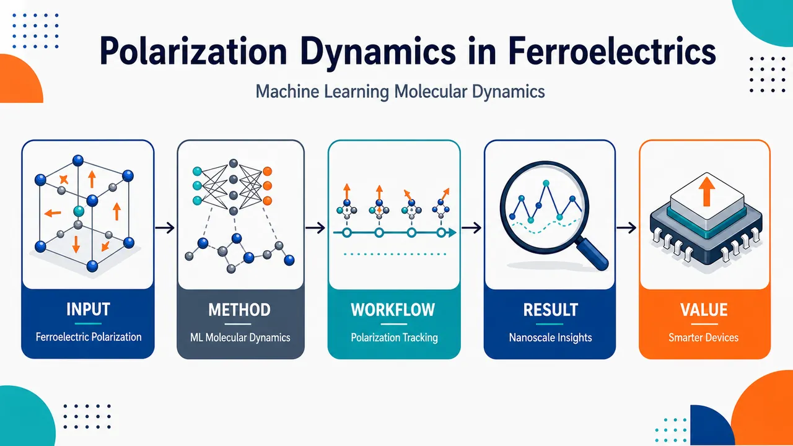
研究问题铁电体内部的原子位移如何随时间驱动极化翻转、涨落与演化；传统第一性原理分子动力学难以同时覆盖高精度与长时空尺度，因此核心问题是如何在原子尺度连续观察铁电极化动力学。创新方法将机器学习分子动力学用于铁电极化演化追踪，以机器学习势近似高精度原子相互作用，在保持接近第一性原理精度的同时扩展模拟时间与体系尺寸；Aha 点是把“看不久、看不大”的极化动态过程转化为可连续播放的原子级极化电影。工作流程输入铁电材料原子结构与机器学习分子动力学模型；在分子动力学轨迹中逐帧更新原子位置；由局域原子构型推断极化状态；沿时间轴重建极化方向、大小和空间分布的变化；输出铁电体极化动力学的原子尺度图像与机制线索。关键结果研究表明机器学习分子动力学能够提供铁电体极化动力学的原子尺度洞察，可直接追踪极化随时间的演化过程；摘要未给出具体材料体系、定量性能提升、相变路径或与实验及传统模拟的数值对比。应用价值为理解铁电存储、传感、执行器和低功耗电子器件中的极化翻转与稳定性提供模拟工具；可帮助设计更快、更稳定、更可控的铁电材料，并为未来研究复杂电场、温度和缺陷条件下的极化行为提供计算框架。核心概览
该论文属于铁电材料计算模拟与机器学习分子动力学方向，利用机器学习势/分子动力学研究铁电体在有限温度下的极化翻转、原子尺度动力学与畴演化机制；具体材料、模型与数值摘要未详述。
方法要点
- 采用机器学习分子动力学研究铁电体极化动力学。
- 关注原子尺度极化翻转过程。
- 分析铁电畴结构及其演化行为。
- 将有限温度效应纳入极化动力学研究。
- 摘要未详述机器学习势的类型、训练数据来源、模拟尺度、时间尺度或验证方式。
关键结果
- 论文声称机器学习分子动力学为理解铁电体极化动力学提供了新的洞察。
- 研究覆盖了极化翻转、畴演化与有限温度行为等关键问题。
- 摘要未给出具体材料体系、定量结果、相变温度、能垒、畴壁速度或与实验/第一性原理的对比数据。
创新性判断
- 可能的新颖点在于将机器学习分子动力学用于铁电体极化动力学，以兼顾接近第一性原理的精度与更大的时空尺度；但摘要未说明模型精度和尺度优势，故该判断存在不确定性。
- 相比传统第一性原理分子动力学或有效哈密顿量方法，机器学习分子动力学可能更适合描述复杂原子尺度翻转与畴演化；但是否确有方法学突破，摘要未详述。
- 若论文实现了有限温度下畴演化和极化翻转的统一原子级模拟，可能具有一定创新性；具体贡献需依赖全文验证。
-
02
📊 含图深析
📄 摘要：构建用于 MgCl2 水溶液的 MACE 神经网络势，训练数据来自 revPBE-D3/zd 与 revPBE0-D3/zd DFT，系统检验其能否同时再现结构、溶剂化和水交换性质。动机是经典力场难以兼顾镁离子溶液的结构、热力学与动力学，可能源于缺少量子多体效应。
💡 亮点：MACE 势被用于挑战水溶液 Mg2+ 的结构、溶剂化与水交换动力学统一描述。该基准直接检验 DFT 训练神经网络势在生物相关离子溶液中的可用性。
📖 展开分析 + 配图
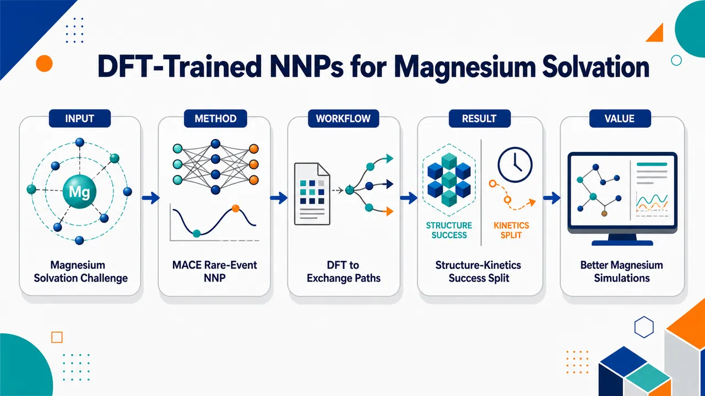
研究问题DFT 训练的局域 MACE 神经网络势，能否像可靠离子力场一样，同时再现水溶液中 Mg²⁺/MgCl₂ 的第一水合壳结构、扩散、离子配对、活度导数、水交换机制与速率，以及溶剂化自由能；核心矛盾是：短程水合动力学能否准确，长程离子溶剂化热力学是否会失真。创新方法将 revPBE-D3/zd 与 revPBE0-D3/zd 两套 DFT 数据训练成 MACE 神经网络势，并用“稀有事件感知”的迭代训练补充五配位/异常配位水交换构型；Aha 点是把 DFT-trained NNP 与 TPS/TIS 真实反应路径采样结合，直接捕捉微秒级 Mg²⁺ 第一水合壳水交换事件，而不是只用一维 PMF 或 TST 推断机制与速率。工作流程输入 AIMD 构型与 DFT 能量/力标签，包括纯水、MgCl₂ 溶液、较大盒子与增强采样构型；训练局域 MACE NNP；用初始 NNP 进行 NPT、高温、1 M MgCl₂、Mg²⁺–O/Mg²⁺–Cl⁻ metadynamics 采样；将高自由能交换态重新 DFT 标注并迭代训练；最终开展 NNP-MD、umbrella sampling、metadynamics、TPS/TIS 与 alchemical free energy 计算，输出水合结构、扩散、离子配对、活度导数、水交换速率/机制和溶剂化自由能。关键结果两种 NNP 都再现实验 Mg²⁺ 六配位八面体第一水合壳：Mg²⁺–O 距离约 0.206–0.211 nm，配位数 n₁=6；revPBE-D3/zd 扩散系数 0.75×10⁻⁵ cm²/s 接近实验 0.706×10⁻⁵ cm²/s，revPBE0-D3/zd 较慢为 0.46×10⁻⁵ cm²/s；TPS/TIS 显示水交换经过五配位解离型通道，速率为 82.8×10⁵ s⁻¹ 与 1.29×10⁵ s⁻¹，和实验 5.3–6.7×10⁵ s⁻¹ 同数量级；活度导数约 1.4–1.6 接近实验 1.52；但 MgCl₂ 中性离子对溶剂化自由能仅 −943 至 −984 kJ/mol，远小于实验 −2532 kJ/mol，是灾难性失败项。应用价值该研究证明 DFT-trained NNP 可用于比经典力场更真实地模拟 Mg²⁺ 水合壳结构、离子配对和水交换动力学，为生物分子中 Mg²⁺ 结合、RNA/蛋白稳定化和金属离子反应机制提供更可信的动力学模型；同时明确警示：局域 NNP 不能直接替代含长程静电的离子模型，未来信息图应突出“短程结构动力学成功”与“长程溶剂化热力学失败”的分裂结论，并指向显式长程静电、电荷响应和电荷转移修正。第一部分：核心概览
DFT 训练的 MACE 神经网络势 被系统检验于水溶液 MgCl₂ / Mg²⁺ 的结构、动力学、离子缔合、活度导数、水交换机制与溶剂化自由能。核心贡献在于证明 revPBE-D3/zd 与 revPBE0-D3/zd NNP 可同时较好再现实验 第一水合壳八面体结构、扩散、离子配对与水交换动力学，并用 TPS/TIS 捕捉微秒级水交换稀有事件；但 MgCl₂ 中性离子对溶剂化自由能被严重低估，暴露局域 NNP 架构在长程静电与电荷转移热力学上的根本短板。
---
第二部分：结构化快速回顾
《Can DFT-trained neural network potentials reproduce structure, solvation, and water-exchange properties in aqueous magnesium solutions?》（None，）
背景
Mg²⁺ 在蛋白质、RNA 稳定化与酶催化中关键，但传统固定电荷力场难以同时再现 水合结构、溶剂化自由能、水交换速率与机制。问题根源在于经典力场缺乏显式 极化、 charge transfer、量子多体效应。
方法
构建基于 MACE 的 NNP，分别训练于 revPBE-D3/zd 与 revPBE0-D3/zd DFT 数据。采用 AIMD、迭代训练、增强采样、umbrella sampling、metadynamics、TPS、TIS、alchemical free energy 等方法，评估 Mg²⁺–O 距离、配位数、扩散系数、活度导数、Mg²⁺–Cl⁻ RDF、水交换速率、溶剂化自由能。
结果
两种 NNP 均给出 六配位八面体第一水合壳；revPBE-D3/zd 的 Mg²⁺ 扩散系数 0.75 × 10⁻⁵ cm²/s 接近实验 0.706 × 10⁻⁵ cm²/s，revPBE0-D3/zd 较慢，为 0.46 × 10⁻⁵ cm²/s。水交换均为 dissociative，TIS 速率分别为 82.8 × 10⁵ s⁻¹ 与 1.29 × 10⁵ s⁻¹，与实验 5.3–6.7 × 10⁵ s⁻¹ 同数量级。溶剂化自由能仅 −943 至 −984 kJ/mol，远小于实验 −2532 kJ/mol。
讨论
NNP 明显优于传统力场的一点在于能同时给出较合理的 结构 + 真实动力学轨迹 + 解离型水交换机制。但局域 MACE 架构对 长程库仑作用、电荷分离、离子溶剂化热力学 描述不足，导致溶剂化自由能严重失败。
局限
模型截断半径为 5.0 Å，属于局域原子环境描述；未显式加入长程静电。训练参考本身依赖 DFT 泛函选择，revPBE 与 revPBE0 对水动力学和 Mg²⁺–水作用给出不同偏差。绝对单离子/离子对溶剂化自由能计算对 NNP 仍高度困难。
结论
DFT-trained MACE NNP 可定量或半定量再现 Mg²⁺ 水合结构、扩散、离子配对、活度导数、水交换速率与解离机制；但不能准确再现 MgCl₂ 溶剂化自由能。未来需要将 显式长程静电、非局域电荷响应、电荷转移或物理约束项 融入 NNP。
---
第三部分：逐章节冷凝解析
Abstract
Magnesium modeling remains intrinsically difficult
Mg²⁺ 对生物体系重要，但在分子模拟中长期难以准确建模，关键难点是传统经典力场不能同时捕捉结构、热力学与动力学。摘要直接指出：*"Magnesium ions play an essential role in many biological processes but remain challenging to model in biomolecular simulations."* 经典力场失败的原因被定位为缺乏量子多体效应：*"classical force fields fail to simultaneously reproduce key structural, thermodynamic and kinetic solution properties, likely due to their inability to explicitly account for quantum many-body effects."*
Benchmark scope is unusually broad
研究对象不是单一 RDF 或水合结构，而是同时覆盖 第一水合壳结构、扩散系数、活度导数、水交换速率与机制、溶剂化自由能。核心设计为：*"we develop and systematically benchmark MACE neural network potentials (NNPs) for aqueous MgCl2 solutions trained on revPBE-D3/zd and revPBE0-D3/zd density functional theory reference data"*，并评估：*"a broad range of experimental solution properties including the structure of the first hydration shell, diffusion coefficient, activity derivative, water-exchange rate and mechanism as well as solvation free energy."*
NNPs reproduce structure, ion pairing, diffusion, and exchange kinetics
两种 NNP 对 八面体第一水合壳、离子配对、扩散系数 表现良好。摘要给出总体判断：*"Both NNPs accurately reproduce the octahedral structure of the first hydration shell, ion pairing properties and diffusion coefficients."* 稀有水交换事件通过 transition path sampling 与增强采样捕捉：*"Combining the NNPs with transition path sampling and other enhanced sampling techniques allows us to capture the rare event of water exchange in the first hydration shell of Mg2+ revealing a dissociative exchange mechanism."*
TIS rates improve over classical dissociative force fields
水交换速率通过 transition interface sampling, TIS 得到，与实验处于同一数量级：*"Transition interface sampling yields exchange rates within one order of magnitude of experiment, representing a substantial improvement over classical dissociative force fields."* 这一点重要，因为传统力场常出现“机制正确但速率极慢”或“速率正确但机制错误”的二择一问题。
Solvation free energy exposes local-NNP failure
溶剂化自由能成为最大失败项。NNP 显著低估实验值：*"the NNP-derived solvation free energy significantly underestimates the experimental value"*。根本限制被归因于局域架构：*"revealing a limitation of the present local NNP architectures for describing ion solvation thermodynamics."* 解决方向明确指向长程静电：*"highlighting the need for explicit long-range electrostatic treatments to achieve quantitative agreement with experimental ion solvation free energies."*
---
I Introduction
Mg²⁺ is biologically central and simulation-relevant
Mg²⁺ 是蛋白质、RNA 和酶体系中的关键离子。引言开篇给出功能定位：*"Magnesium ions play a fundamental role in numerous biological processes, serving as stabilizing agents for proteins and RNA and as essential cofactors in a wide range of enzymatic reactions."* 因此，Mg²⁺ 的水溶液建模直接影响生物分子模拟可靠性。
Classical force fields cannot jointly fit structure and thermodynamics
传统 MD 已广泛用于 Mg²⁺，但固定电荷力场难以同时复现实验性质。问题被具体列为 hydration free energy 与 first hydration shell structure：*"classical force field simulations often fail to simultaneously reproduce key experimental structural and thermodynamic properties such as the hydration free energy and the structure of the first hydration shell."* 额外缺陷包括 第一水合壳水交换过慢 与 二价离子对核酸过强结合：*"Additional limitations include unrealistically slow exchange kinetics in the first hydration shell of Mg2+ and excessive binding of divalent ions to nucleic acids."*
The physical origin is missing quantum many-body physics
经典固定电荷形式无法显式描述 polarization 与 charge transfer。关键原文为：*"These limitations arise from the functional form of standard, fixed-charge classical force fields, which cannot explicitly capture quantum many-body effects such as polarization and charge transfer."* 这说明问题并非简单参数不足，而是模型表达形式不足。
Empirical fixes are useful but not rigorous
已有修正包括 modified combination rules、charge scaling、additional empirical pair-potential terms。引言指出：*"Although approximate corrections, including modified combination rules, charge scaling approaches, and additional empirical terms in the pair potential, have been proposed, these methods do not provide a rigorous treatment of the underlying many-body effects."* 这些方法可改善特定目标，但难以形成可迁移的物理描述。
NNPs bridge AIMD accuracy and MD scale
神经网络势 被定位为连接电子结构精度与凝聚相可模拟尺度的工具。关键表述为：*"neural network potentials (NNPs) provide a promising framework for extending near electronic-structure accuracy to the time and length scales required for the simulation of complex condensed-phase and biomolecular systems."* 对液态水的成功作为先例：*"NNP-based models trained on ab initio reference data were shown to reproduce structural, thermodynamic, and dynamical properties with near first-principles accuracy."*
NNPs inherit DFT reference errors
NNP 并非自动等于真实物理，其误差依赖训练用 DFT。引言明确警告：*"NNPs are not free of limitations, as they necessarily reflect the approximations and deficiencies of the underlying electronic-structure reference method used for training."* 水与电解质性质对 exchange–correlation functional、dispersion treatment、error cancellation 敏感：*"the structural, thermodynamic, and dynamical properties of water and aqueous electrolytes are known to depend sensitively on the choice of exchange–correlation functional, the treatment of dispersion interactions, and subtle error cancellation effects."*
Experimental validation must be multi-observable
Mg²⁺ 力场验证通常使用多个实验目标：*"experimental ion properties such as the solvation free energy, Mg2+–oxygen distances in the first hydration shell, hydration numbers, activity derivatives, and water exchange kinetics in the first solvation shell."* 该研究的问题意识是 NNP 尚缺乏类似的全面基准：*"a comprehensive and systematic validation of NNPs for aqueous electrolyte solutions against a broad range of experimental observables has not yet been performed."*
Two DFT reference levels test functional sensitivity
MACE NNP 分别训练于 revPBE-D3/zd 与 revPBE0-D3/zd。动机是水和电解质性质对泛函高度敏感：*"we train NNPs based on both the revPBE and hybrid revPBE0 exchange–correlation functionals with D3 zero-damping dispersion corrections, motivated by the well-known functional dependence of water and electrolyte properties."*
Main result: good kinetics and structure, poor solvation thermodynamics
引言结尾给出核心发现：*"both NNPs accurately reproduce the octahedral hydration shell structure of Mg2+ and predict a dissociative water-exchange mechanism, with computed exchange rate constants within one order of magnitude of experimental values."* 同时，溶剂化自由能失败：*"the NNP-derived solvation free energies are significantly underestimated, indicating that despite the significant improvements offered by NNPs, important challenges remain in accurately describing long-range electrostatic interactions and charge-transfer effects."*
---
II Methods
II.1 Molecular Dynamics Simulations
Classical force-field simulations define reference baselines
经典 MD 使用 GROMACS 2023.05、Mamatkulov-Schwierz Mg²⁺ parameters 与 TIP3P flexible water model。流程包括能量最小化、1 ns NVT、1 ns NPT，条件为 298.15 K、1 bar，生产模拟为 5 ns NPT。原文为：*"Initial classical force field molecular dynamics (MD) simulations were conducted using GROMACS 2023.05 with the Mamatkulov-Schwierz Mg2+ parameters and the TIP3P flexible water model."* 以及：*"The simulation protocol comprised energy minimization, followed by 1 ns of NVT equilibration and 1 ns of NPT equilibration at 298.15 K and 1 bar."*
AIMD uses CP2K GAPW with revPBE-D3/zd
AIMD 全部由 CP2K 2025 完成，采用 Gaussian and Augmented Plane Wave, GAPW 框架。电子结构层级为 revPBE + Grimme DFT-D3 zero damping，基组为 TZV2P-GTH，赝势为 GTH-PBE。原文：*"All ab initio molecular dynamics simulations were performed using CP2K 2025 within the Gaussian and Augmented Plane Wave (GAPW) framework."* 以及：*"Electronic structure calculations employed the revPBE exchange-correlation functional supplemented by Grimme’s DFT-D3 dispersion correction with zero damping, using TZV2P-GTH basis sets and GTH-PBE pseudopotentials."*
Training data include pure water and MgCl₂ solution replicas
初始 NNP 数据来自 五个独立 replica，体系包括 w256 pure water 与 w256MgCl₂。原文：*"The initial NNP training dataset was produced by running five independent replicas for a pure water system (w256) and a water system with solvated MgCl2 (w256MgCl2)."* 迁移性测试还包括更大体系 w512MgCl₂、w512Mg、w512Cl：*"For later testing of NNP transferability, simulations of a larger 512-water system (w512MgCl2) and each ion separately in the larger system (w512Mg and w512Cl) were performed."*
revPBE0 data are single-point labels on revPBE phase space
revPBE0 训练数据通过在 revPBE AIMD 构型上做单点能量和力计算获得，假设二者相空间重叠。关键原文：*"we follow previous works by assuming that revPBE and revPBE0 phase spaces have significant overlap."* 抽样间隔为 5 fs：*"we computed single-point revPBE0-D3/zd energies and forces for configurations extracted from revPBE-D3/zd AIMD trajectories at intervals of 5 fs."*
NNP-MD uses OpenMM, MACE, OVRVO, 1 fs
NNP 模拟在 OpenMM 8.2.0 中完成，MACE 作为势函数；动力学积分器为 OVRVO，时间步长 1 fs，摩擦常数 1 ps⁻¹。原文：*"All NNP simulations were conducted using OpenMM version 8.2.0."* 以及：*"The Langevin equations of motion were integrated using the OVRVO integrator with time step rescaling."* 常规条件为 NPT, 298.15 K, 1.0 bar：*"Simulations were typically performed in the NPT ensemble at a temperature of 298.15 K and a pressure of 1.0 bar."*
Enhanced sampling is coupled through PLUMED
Metadynamics 与 umbrella sampling 通过 PLUMED 施加偏置。原文：*"Enhanced sampling NNP-MD simulations, including metadynamics and umbrella sampling, were implemented via the PLUMED plugin to apply biasing potentials."* 这为后续水交换 PMF、自由能面与稀有事件采样提供技术基础。
---
II.2 Neural Network Potential Model Architecture and Training
MACE architecture is local, invariant, and two-layer
NNP 采用 MACE，是等变 message passing 网络，但本模型设置 L = 0，即 invariant model。关键参数为 two message passing layers、5.0 Å radial cutoff、32 feature channels。原文：*"The model here consists of two message passing layers."*，*"The features are updated based on the local environment within a radial cutoff of 5.0 Å."*，*"The maximum symmetry order of the messages was set to L = 0, corresponding to an invariant model."*，*"The number of feature channels was set to 32."*
Higher symmetry order gave no significant benefit
虽然 MACE 可使用更高阶等变信息，但该数据集上 L > 0 未改善表现。原文：*"We found no significant improvement setting L > 0 for our dataset."* 这说明模型瓶颈更可能来自训练数据覆盖、长程物理或 DFT 参考，而非局部角向表达能力。
Training uses AIMD-derived w256 and w256MgCl₂ datasets
训练、验证、测试集来自 w256 与 w256MgCl₂ AIMD 数据，且孤立原子能 E₀ 来自 DFT。原文：*"The AIMD-derived w256 and w256MgCl2 datasets were split into training, validation, and test sets for both revPBE-D3/zd and revPBE0-D3/zd potentials, with isolated atomic energies (E0) determined from DFT calculations."*
Iterative training targets rare water-exchange configurations
初始 NNP 用于采样原始 AIMD 未覆盖区域，尤其是 water exchange transition states。原文：*"we performed NNP molecular dynamics simulations using the initially trained NNPs to explore phase space regions beyond the initial dataset, in particular transition states of the water exchange process."* 增量数据包括 NPT、高温 NVT、1 M MgCl₂、沿 Mg²⁺–O 与 Mg²⁺–Cl⁻ 距离的 well-tempered metadynamics：*"These included standard NPT simulations, high-temperature NVT runs, a 1 M MgCl2 solution simulation, and two well-tempered metadynamics simulations biased along Mg2+-oxygen and Mg2+-Cl- distances."*
---
II.3 Ion Properties
First hydration shell is measured from ten independent NNP-MD replicas
第一水合壳 Mg²⁺–O 距离 R₁ 与 配位数 n₁ 使用每个系统 10 个独立 equilibrium NNP-MD 计算，每个 1 ns NPT，条件 298.15 K、1.0 bar。原文：*"we conducted ten independent equilibrium NNP-MD simulations for each system."* 以及：*"These production runs were performed in the NPT ensemble at 298.15 K and 1.0 bar for a duration of 1 ns each."*
Diffusion uses five additional NVT replicas and Einstein relation
Mg²⁺ self-diffusion coefficient D₀ 来自 5 个额外 NVT 模拟，每个 1 ns，温度 298.15 K，时间步 1 fs，用 Einstein relation 分析。原文：*"Diffusion coefficients (D0) of the Mg2+ ion were computed from five additional NNP-MD equilibrium simulations performed in the NVT ensemble."* 以及：*"Trajectories were analyzed using the Einstein relation to extract the self-diffusion coefficients."*
Activity derivative uses concentrated MgCl₂ simulations
Activity derivative a_cc 在 1.08 m ≈ 1 M MgCl₂ 中计算，使用 5 个 NPT equilibrium simulations，每个 1 ns，盒长 2.5 nm，温度 298.15 K，压力 1 bar。原文：*"Activity derivatives (acc) were determined from five NNP-MD equilibrium simulations of a 1.08 m (≈1 M) MgCl2 solution in the NPT ensemble at 298.15 K and 1 bar."* 高浓度下 barostat coupling 降为 25 steps：*"the Monte Carlo barostat coupling was reduced to 25 steps to ensure proper density equilibration at the high ion concentration."*
Solvation free energy is computed by two independent alchemical routes
绝对溶剂化自由能用两种路径交叉验证：thermodynamic cycle 与 neighborlist decoupling。原文：*"Absolute solvation free energies (ΔGsolv) were computed using two distinct alchemical pathways to validate the NNP predictions."* 间接路径计算 classical force field 与 NNP 之间自由能差：*"the free energy difference between the classical force field and the NNP level of theory was calculated."* 直接路径通过 neighborlist 操控逐渐关闭溶质相互作用：*"allowing the solute interactions to be gradually switched off directly without transforming to a force field representation."*
TPS identifies water-exchange mechanism
Flexible-length TPS 用于判断第一水合壳水交换机制。初始反应路径由 steered MD 产生，偏置为 Mg²⁺–O 距离上的移动 harmonic restraint。原文：*"Flexible-length transition path sampling (TPS) simulations were performed to characterize the mechanism of water exchange in the first hydration shell."* 稳定态 A/B 由 order parameter ξ 定义：*"State A, where a water molecule resides in the first hydration shell, and State B, where an external water molecule has replaced it."*
TIS computes true dynamical exchange rates
Transition interface sampling, TIS 用 DFT-trained NNP 计算水交换速率常数，首界面通量来自 unbiased MD。原文：*"Transition interface sampling (TIS) simulations were performed using the DFT-trained NNPs to calculate the rate constants for water exchange."* 以及：*"The flux through the first interface was estimated from unbiased MD trajectories."* 多界面路径采样采用 parallel path swapping：*"Path sampling was conducted across multiple interfaces with parallel path swapping between ensembles to enhance sampling efficiency."*
PMF and metadynamics map free-energy landscapes
Mg²⁺–O 距离上的 PMF 使用 umbrella sampling 和 WHAM 重构。原文：*"The potential of mean force (PMF) along the Mg2+–oxygen distance was computed using umbrella sampling in PLUMED."* 以及：*"The free energy profiles were reconstructed using the weighted histogram analysis method (WHAM)."* Well-tempered metadynamics 用于 Mg²⁺–O 距离与配位数二维自由能探索：*"Well-tempered metadynamics was used to explore the free energy landscape along the Mg2+–oxygen distance and the ion coordination number."*
Classical force fields provide mechanistic contrast
对比力场为 Mamatkulov-Schwierz 与 microMg，均为 non-polarizable Mg²⁺ force fields，与 TIP3P 组合。原文：*"we employed two established non-polarizable Mg2+ force fields: the Mamatkulov-Schwierz Mg2+ parameters and the microMg parameters combined with the TIP3P water model."* microMg 速率接近实验但机制为 associative；MS 机制为 dissociative 但速率严重低估：*"microMg closely reproduces the experimental water exchange rate but follows an associative water exchange mechanism. The Mamatkulov-Schwierz model follows a dissociative exchange mechanism but significantly underestimates the exchange rate."*
---
III Results and Discussion
Benchmark spans structure, dynamics, kinetics, ion pairing, thermodynamics
结果部分先评价 NNP 准确性与迁移性，再与实验及经典力场系统比较。覆盖性质包括：*"Mg2+ hydration structure, self-diffusion, first-shell water exchange kinetics and mechanism, Mg2+–Cl- ion pairing, activity derivative, and solvation free energy."* 目标是检验 NNP 是否能同时描述：*"structure, solvation and water-exchange properties in aqueous Mg2+ solutions."*
---
III.1 Neural Network Potential Training
Iterative training expands configurational coverage
训练策略核心为从 unbiased AIMD 初始训练，再用初始 NNP 高效采样未覆盖区域。原文：*"The training is performed in an iterative manner to progressively improve the robustness of the model and extend its coverage of relevant configurational space."* 初始模型仅来自 unbiased AIMD：*"An initial model is first trained only on configurations from unbiased AIMD simulations"*，随后采样新相空间：*"subsequently used to efficiently sample additional regions of phase space that are not represented in the original training data."*
Equilibrium accuracy does not guarantee rare-event accuracy
初始模型对平衡验证构型表现良好，但增强采样暴露了高自由能区域能量和力误差。原文：*"The initial model showed good accuracy for equilibrium validation configurations."* 但：*"enhanced sampling using the preliminary NNP revealed significant errors in predicted energies and forces for configurations outside the configuration space regions represented in the initial training set."* 这符合 NNP 稀有事件建模常见失败模式：*"models can appear accurate while failing in rare-event or high-free-energy regions if such configurations are not represented in the training data."*
Water exchange requires altered coordination-number configurations
Mg²⁺ 第一水合壳水交换发生在 microsecond timescale，中间态涉及配位数增加或减少。原文：*"water exchange in the first hydration shell of Mg2+, which occurs on the microsecond timescale and transiently gives rise to configurations with increased or decreased hydration numbers of the Mg2+ ion."* 这些构型对于速率和机制都关键：*"Accurate representation of these configurations is essential for correctly describing both the exchange kinetics and the underlying exchange mechanism."*
Retraining improves transient exchange-state description
增强采样构型加入 DFT 标注并重新训练后，模型对异常配位数构型明显改善。原文：*"After retraining on configurations generated through enhanced sampling with the preliminary NNP, the model showed a substantially improved description of transient water-exchange configurations with altered first-shell hydration numbers."* 这种策略与此前金属-溶剂交换 NNP 主动学习相呼应：*"Similar active-learning strategies were used by Juraskova et al. and Ferretti et al."*
Transferability extends to larger and charged boxes
精化模型能外推到更大和带电模拟盒，尤其是力预测。原文：*"the refined model also successfully extrapolates to larger and charged simulation boxes, particularly with respect to force predictions, as validated against DFT single-point calculations."* 这对离子溶液模拟很重要，因为训练体系小而实际评估涉及 512 water systems 与分离离子。
---
III.2 Structure of the First Hydration Shell and Self-diffusion Coefficient
First-shell octahedral hydration is the primary structural test
Mg²⁺ 第一水合壳中 六个强结合水分子 支配结构与动力学。原文：*"the strongly bound six water molecules in the first hydration shell govern many of the structural and kinetic properties of the ion."* 因此 R₁ 与 n₁ 是八面体结构再现能力的直接指标：*"provide direct measures of whether the model accurately reproduces the characteristic octahedral hydration structure."*
Both NNPs reproduce experimental Mg²⁺–O distances
revPBE-D3/zd 给出 R₁ = 0.211 ± 0.001 nm，revPBE0-D3/zd 给出 R₁ = 0.206 ± 0.001 nm，实验为 0.209 ± 0.004 nm。原文对应：*"The predicted average first-shell distances, R1, of 0.211 nm for revPBE-D3/zd and 0.206 nm for revPBE0-D3/zd are both within the experimental uncertainty of 0.209 ± 0.004 nm."*
Both NNPs preserve six-fold coordination
两种模型均给出 n₁ = 6，符合 Mg²⁺ 第一水合壳八面体结构。原文：*"both models yield a first-shell coordination number n1 = 6, consistent with previous simulations and experimental studies reporting an octahedral first hydration shell for the Mg2+ ion."* 表 1 中实验也为 6。
revPBE-D3/zd diffusion matches experiment better than revPBE0-D3/zd
revPBE-D3/zd 的扩散系数为 D₀ = 0.75 ± 0.07 × 10⁻⁵ cm²/s，接近实验 0.706 × 10⁻⁵ cm²/s。原文：*"The diffusion coefficient obtained with revPBE-D3/zd is in good agreement with experiment, yielding D0 = 0.75 × 10−5 cm2/s compared to the experimental value of 0.706 × 10−5 cm2/s."* revPBE0-D3/zd 为 0.46 ± 0.03 × 10⁻⁵ cm²/s，明显偏低：*"revPBE0-D3/zd predicts a lower diffusion coefficient of 0.46 × 10−5 cm2/s, indicating significantly reduced Mg2+ mobility in solution."*
Hybrid functional does not systematically improve dynamics
revPBE0 加入 exact exchange 并未提升 Mg²⁺ 水溶液动力学。原文指出：*"revPBE-type GGAs tend to produce comparatively less structured and more mobile water, whereas revPBE0 does not necessarily improve the description of condensed-phase water dynamics despite the inclusion of exact exchange."* 更广泛结论为：*"revPBE-D3/zd yields favorable water-like dynamics, whereas revPBE0-D3/zd does not provide a systematic improvement for the structural and transport properties of Mg2+."*
No viscosity correction is applied to NNP diffusion
经典力场扩散系数通常按水模型黏度修正，而 NNP 值未修正。原文：*"diffusion coefficients obtained from classical force fields are commonly corrected for the viscosity of the underlying water model."* NNP 报告值反映 DFT 水动力学与 Mg²⁺ 描述的合成效果：*"no viscosity correction was applied, such that the reported diffusion coefficients reflect the combined description of both Mg2+ and the underlying DFT-based water dynamics."*
---
III.3 Water Exchange in the First Hydration Shell
Water exchange is a stringent kinetic and mechanistic benchmark
第一、第二水合壳之间的水交换控制水溶液与生物体系中许多反应。原文：*"Water exchange between the first and second hydration shells of metal ions is a fundamental kinetic process governing reactions in aqueous solution and biological systems."* 对 NNP 的挑战在于同时再现速率和机制：*"Reproducing both the rate and mechanism of water exchange represents a particularly stringent test."*
Classical force fields generally fail the joint rate-mechanism test
传统力场难以同时给出正确速率和机制。原文：*"classical force fields have so far generally failed to reproduce both properties simultaneously."* 表 1 中典型对照为：microMg 速率 8.04 ± 1.20 × 10⁵ s⁻¹ 接近实验但机制 Assoc.；Mamatkulov-Schwierz 机制 Dissoc. 但速率仅 (24.0 ± 8.8) × 10⁻⁵ × 10⁵ s⁻¹，即极慢。
Mechanistic classification depends on coordination-number change
水交换分为 associative 与 dissociative，取决于中间态/过渡态配位数升高或降低。原文：*"water exchange mechanisms are classified as associative or dissociative depending on whether the exchange proceeds through an intermediate or transition state with increased or decreased coordination number."* 实验通过 ¹⁷O NMR 压力依赖速率的活化体积间接推断 Mg²⁺ 为 interchange-dissociative, I_d：*"activation volume obtained from the pressure dependence of the exchange rate measured by 17O NMR spectroscopy, which indicates an interchange-dissociative (Id) mechanism for Mg2+ ions."*
One-dimensional Mg²⁺–O PMF gives barrier but not mechanism
Mg²⁺–O 距离 PMF 可初步估计水交换自由能垒。原文：*"A common first step for characterizing Mg2+ water exchange is the calculation of the potential of mean force (PMF) as a function of the Mg2+–water oxygen distance."* revPBE-D3/zd 势垒为 12.6 kBT，revPBE0-D3/zd 为 15.7 kBT：*"The PMF obtained with revPBE-D3/zd exhibits a barrier height of 12.6 kBT."*，*"revPBE0-D3/zd predicts a substantially higher barrier of 15.7 kBT."* 但一维 PMF 不足以判定机制：*"a one-dimensional PMF along rMg−O alone is insufficient to resolve the underlying water-exchange mechanism."*
Two-dimensional landscapes and TPS reveal dissociative exchange
二维自由能面采用 rMg–O 与 n₁，显示较低势垒位于 n₁ = 5。原文：*"The rMg−O-n1 free energy landscapes indicate a dissociative pathway for revPBE-D3/zd and revPBE0-D3/zd due to the lower barrier at a reduced coordination number of n1 = 5."* TPS 进一步确认真实反应轨迹经过五配位中间态：*"The TPS simulations confirm that the true reactive trajectories pass through a transient five-fold coordinated state."* 这与实验一致：*"This observation is in agreement with the interchange dissociative mechanism proposed by experiments."*
revPBE0-D3/zd stabilizes a slower exchange landscape
五配位状态在 revPBE-D3/zd 中自由能更低，但 TPS 显示 revPBE0-D3/zd 的五配位过渡区寿命稍长、路径更长。原文：*"the five-fold coordination state is lower in free energy for revPBE-D3/zd than for revPBE0-D3/zd."* 以及：*"TPS shows a slightly longer-lived five-fold transition region for revPBE0-D3/zd which results in longer path lengths."*
TIS avoids transition-state-theory overestimation
使用 TIS 从真实动力学轨迹获得速率，不需要 TST 近似。原文：*"We use TIS to obtain water-exchange rates based on true dynamical trajectories, thereby eliminating the need for any transition state theory (TST) approximation."* 这对 Mg²⁺ 特别关键，因为：*"TST along rMg−O significantly overestimates the true exchange rate."*
TIS exchange rates are within one order of magnitude of experiment
revPBE-D3/zd 水交换速率为 82.8 × 10⁵ s⁻¹，约高于实验一个数量级以内；revPBE0-D3/zd 为 1.29 × 10⁵ s⁻¹，略低于实验 5.3–6.7 × 10⁵ s⁻¹。原文：*"The TIS rate constants are 82.8 × 105 s−1 for revPBE-D3/zd and 1.29 × 105 s−1 for revPBE0-D3/zd, compared to the experimental values of (5.3−6.7) × 105 s−1."* 总体判断为：*"both results are within an order of magnitude, indicating good agreement."*
NNPs outperform classical force fields in joint mechanism-rate reproduction
结果代表相对于经典与极化力场的重要进步：*"the calculated water-exchange rates are in reasonable agreement with experiments, representing an important step forward, as classical and polarizable force fields have generally failed to reproduce both properties simultaneously."* 机制上均为 dissociative，与实验 interchange-dissociative 相容。
---
III.4 Mg²⁺–Cl⁻ Ion Pairing and Activity Derivatives
RDF shows solvent-mediated rather than contact ion pairing
Mg²⁺–Cl⁻ RDF 用于判断 contact ion pair 与 solvent-shared ion pair。结果显示没有稳定内壳接触离子对，也没有离子团簇。原文：*"The Mg2+–Cl− RDF shows no stable inner-shell contact ion pair and no ion clustering under the studied conditions."* Mg²⁺–Cl⁻ 主要通过溶剂介导缔合：*"Mg2+–Cl− association occurs predominantly through solvent-mediated ion-pairs."*
Strong Mg²⁺ hydration suppresses direct Cl⁻ contact
缺乏 contact ion pair 反映 Mg²⁺ 第一水合壳水分子结合很强。原文：*"This result highlights the strong binding of first-shell waters to Mg2+ and indicates that Mg2+–Cl− association is primarily mediated by the hydration shell rather than direct contact."* 这与 Mg²⁺ 高电荷密度和六水合壳稳定性一致。
Activity derivative tests ion–ion versus ion–water balance
Activity derivative 是离子缔合的热力学量，能与实验直接比较。原文：*"the activity derivative provides a thermodynamic measure of ion association that can be directly compared with experiments."* 它依赖 Mg²⁺–Cl⁻ 与 ion-water 相互作用平衡：*"it depends on the balance of ion–ion and ion–water interactions in solution."* 因此是 NNP 对整体电解质热力学的严格检验。
NNP activity derivatives agree with experiment at 1.08 m
在 1.08 m MgCl₂ 下，revPBE-D3/zd a_cc = 1.6 ± 0.2，revPBE0-D3/zd a_cc = 1.4 ± 0.1，实验为 1.52。原文概括为：*"The activity derivatives at salt concentration 1.08 m align well with experimental data."*
Classical force fields can match activity derivative for compensating reasons
microMg 与 MS 也给出接近实验的活度导数：表 1 中 microMg 为 1.49 ± 0.02，MS 为 1.52 ± 0.02。但其 solvent-shared ion-pair 倾向更高，由更强水合相互作用补偿。原文：*"the classical microMg and MS force fields with modified combination rules also reproduce the experimental activity derivative even though the propensity of Mg2+–Cl− solvent-shared ion pairs is significantly higher."* 以及：*"This effect is compensated by stronger hydration interactions, resulting in a similar overall thermodynamic response."*
Many-body effects shift ion association/hydration balance
NNP 所含 DFT 量子多体效应改变 Mg²⁺–Cl⁻ 缔合与水合之间的平衡。原文：*"The inclusion of many-body quantum effects therefore alters the balance between Mg2+–Cl− association and ion hydration relative to the classical force fields, while yielding a comparable activity derivative."* 但离子对稳定性依赖电子结构参考：*"the relative stability of contact and solvent-shared ion pairs can be highly sensitive to the electronic-structure reference."*
---
III.5 Solvation Free Energy
Solvation free energy is the harshest thermodynamic benchmark
溶剂化自由能同时依赖 ion-water interactions、long-range electrostatics、polarization、charge-transfer effects。原文：*"Solvation free energies provide a stringent thermodynamic test for ion models, since they depend on ion-water interactions, long-range electrostatics, polarization, and charge-transfer effects."* 这也是离子力场参数化常用目标：*"They therefore constitute a common target in ion force field optimization."*
Absolute NNP ion solvation free energies are methodologically difficult
NNP 中计算绝对离子溶剂化自由能不如经典力场直接。原文：*"solvation free energies have been explored much less for neural network descriptions, partly because absolute ion solvation free energies are challenging to compute for NNPs using alchemical transformation methods."* 因此使用两种方法互相验证具有必要性。
Two methods give consistently poor NNP solvation thermodynamics
MgCl₂ 中性离子对 ΔGₛₒₗᵥ 使用 neighborlist decoupling 与 thermodynamic cycle 两种方法。原文：*"We calculate the solvation free energy ΔGsolv of neutral MgCl2 ion pairs using two different methods: one based on neighborlist decoupling and the other based on a thermodynamic cycle involving a transformation to a classical force field description."* 表 1 中 revPBE-D3/zd = −961 / −984 kJ/mol，revPBE0-D3/zd = −943 / −946 kJ/mol。
NNP values severely underestimate experimental solvation free energy
实验 MgCl₂ neutral ion pair ΔGₛₒₗᵥ ≈ −2532 kJ/mol，NNP 仅约 −943 至 −984 kJ/mol，幅度少约 1,550–1,590 kJ/mol。原文：*"The NNP-derived ΔGsolv for revPBE-D3/zd and revPBE0-D3/zd shows significant deviations from experiment."* 具体数值：*"the ΔGsolv is significantly smaller in magnitude, around −943 to −984 kJ/mol for revPBE-D3/zd and revPBE0-D3/zd, than the experimental value of about −2532 kJ/mol."*
Classical force fields reproduce solvation free energy by construction
表 1 中 Mamatkulov-Schwierz = −2531.1 kJ/mol，microMg = −2532.9 ± 1 kJ/mol，接近实验 −2532 kJ/mol。原因不是天然物理优越，而是参数化目标包含该量。原文：*"the classical force fields reproduce the experimental values by construction, as solvation free energies were included among their parameterization targets."*
Failure points to missing long-range and charge-response physics
摘要和引言共同指向局域 NNP 架构局限：*"a limitation of the present local NNP architectures for describing ion solvation thermodynamics."* 以及：*"important challenges remain in accurately describing long-range electrostatic interactions and charge-transfer effects in aqueous electrolyte systems."* 由于 MACE 模型截断半径为 5.0 Å，强电荷离子溶剂化中大尺度介电响应和长程库仑贡献难以自然恢复。
---
Table 1 cross-property synthesis
Structural accuracy is high across both NNPs
表 1 显示实验 R₁ = 0.209 ± 0.004 nm、n₁ = 6；NNP 为 0.211 ± 0.001 nm / 6 与 0.206 ± 0.001 nm / 6。表题说明比较范围：*"Reported properties include the first-shell Mg2+-oxygen distance R1, first-shell coordination number n1, Mg2+ self-diffusion coefficient D0, activity derivative acc... solvation free energy ΔGsolv... water-exchange rate constant k, and the corresponding water-exchange mechanism."*
revPBE-D3/zd is faster and revPBE0-D3/zd is slower
表 1 中 revPBE-D3/zd D₀ = 0.75 ± 0.07 × 10⁻⁵ cm²/s，revPBE0-D3/zd D₀ = 0.46 ± 0.03 × 10⁻⁵ cm²/s，实验 0.706 × 10⁻⁵ cm²/s。该差异与 III.2 的水动力学讨论一致。
Exchange mechanism is consistently dissociative for DFT-based NNPs
表 1 中 revPBE-D3/zd、revPBE0-D3/zd、revPBE-D OPT、ωB97X-D3BJ 均标为 Dissoc.，实验为 Dissoc.。这与原文：*"DFT-based potentials favor the five-fold state over heptacoordination"* 一致。
Solvation free energy is the only catastrophic disagreement
结构、扩散、活度导数、水交换速率均较接近实验；ΔGₛₒₗᵥ 却相差超过 1500 kJ/mol。这使论文的核心结论呈现“双重性”：NNP 在局部结构和真实轨迹动力学上强，在绝对离子溶剂化热力学上弱。
---
第四部分：深度理解与语言支持
1. 术语解析
#### Neural network potential, NNP
语境中指用神经网络拟合 DFT 能量和力的原子间势函数。不是经验力场参数拟合，而是从电子结构数据学习势能面。关键差别在于 NNP 可隐式吸收 DFT 中的多体效应，但仍受限于训练数据和参考 DFT。原文中的 *"near electronic-structure accuracy"* 表示接近电子结构计算精度，而非实验真实值。
#### Local NNP architectures
指每个原子的能量贡献只依赖有限截断半径内的局部环境，例如该模型 5.0 Å cutoff。这类模型对短程配位、氢键、局部交换路径很强，但对离子溶剂化中的长程库仑场、介电极化和整体电荷响应天然不足。原文 *"present local NNP architectures"* 中的 “local” 是溶剂化自由能失败的关键限定词。
#### Dissociative versus associative water exchange
Dissociative 表示先有水离开第一壳，Mg²⁺ 短暂变成低配位，例如 n₁ = 5；associative 表示新水先进入，形成高配位，例如 n₁ = 7。Mg²⁺ 实验被归为 interchange-dissociative (I_d)，含义不是完全离解后的长寿命五配位中间体，而是过渡态偏向解离特征。
#### Transition path sampling, TPS
TPS 采样的是连接稳定态 A 和 B 的真实反应轨迹集合，适合研究稀有事件机制。这里 A 为某水在第一水合壳中，B 为外部水替代后状态。TPS 重点回答“怎么发生”：路径是否经过五配位、是否有协同进入。
#### Transition interface sampling, TIS
TIS 通过多个界面分解稀有事件概率，结合初始通量得到速率。与 PMF + TST 不同，TIS 不假定单一反应坐标完美，也不需要固定 transmission coefficient。这里 TIS 用于避免一维 rMg–O 上 TST 对 Mg²⁺ 水交换速率的高估。
---
2. 疑难查证
#### 为什么结构和水交换能对，溶剂化自由能却严重错？
局部结构主要由 第一水合壳 Mg²⁺–O 相互作用 决定，空间尺度约 0.2 nm 到数 Å，MACE 的 5.0 Å cutoff 足以覆盖关键配位环境。水交换机制也主要由第一壳与第二壳之间的短程重排决定，因此 NNP 可通过迭代训练覆盖五配位过渡构型。
溶剂化自由能不同。把 Mg²⁺ 和 Cl⁻ 从真空放入水中，涉及整个溶剂介质对电荷的稳定化，包括长程库仑势、介电响应、远处水分子取向极化、离子间电荷屏蔽、有限尺寸修正等。局域 NNP 即使短程力很准，也可能缺少大量长程能量贡献。对二价 Mg²⁺，这些长程贡献巨大，因此 −943 至 −984 kJ/mol 与 −2532 kJ/mol 的差距并不只是小误差，而是物理项缺失的信号。
#### 为什么 revPBE0 加 exact exchange 后扩散反而更差？
混合泛函加入 exact exchange 并不保证液态水动力学更真实。液态水性质依赖多个误差源的抵消：交换-相关泛函、色散修正、核量子效应缺失、温度、密度、基组、赝势等。revPBE-D3/zd 可能通过“有利误差抵消”得到较合理水结构和扩散；revPBE0-D3/zd 虽在某些电子结构性质上更高级，却可能使水网络更黏滞或 Mg²⁺ 水合壳动力学更慢。论文中的 D₀ = 0.46 × 10⁻⁵ cm²/s 正体现这一点。
#### 为什么一维 PMF 不能判断水交换机制？
Mg²⁺–O 距离只描述某个离开的水离 Mg²⁺ 多远，不能描述“新水是否已经进入”。如果只看一个水离开，无法区分两种路径：
- 旧水先离开，Mg²⁺ 暂时五配位：dissociative；
- 新水先进入，Mg²⁺ 暂时七配位：associative。
因此需要加入配位数 n₁，形成 rMg–O / n₁ 二维自由能面，再用 TPS 检查真实轨迹。该研究发现真实路径经过 n₁ = 5，因此为解离型。
---
第五部分：创新评估与关联
1. 创新性判断
#### First systematic multi-observable validation of Mg²⁺ NNPs
近年已有水、NaCl、Mg²⁺、ZnCl₂ 等 NNP 研究，但多集中于结构、RDF、局部配位或有限交换路径。该工作的新意在于把 结构、扩散、活度导数、离子配对、水交换机制、水交换速率、溶剂化自由能 放在同一框架下检验。关键突破不是“训练了一个 Mg²⁺ NNP”，而是建立了接近离子力场参数化标准的系统 benchmark。
#### Rare-event kinetics are computed with TPS/TIS rather than inferred from PMF
过去相关工作常用 PMF 势垒或 TST 类估算水交换速率。该研究将 DFT-trained NNP 与 transition path sampling / transition interface sampling 结合，直接从真实动力学路径得到机制和速率。对 Mg²⁺ 尤其重要，因为一维 TST 会显著高估速率。TIS 得到 82.8 × 10⁵ s⁻¹ 与 1.29 × 10⁵ s⁻¹，和实验 5.3–6.7 × 10⁵ s⁻¹ 同数量级，优于传统解离型力场。
#### Mechanism-rate conflict in classical force fields is directly addressed
经典力场常出现：
- microMg：速率接近实验，但机制为 associative；
- Mamatkulov-Schwierz：机制为 dissociative，但速率极慢。
DFT-trained NNP 同时给出 dissociative / interchange-dissociative-compatible mechanism 与合理速率，解决了前人难以同时满足的双约束问题。
#### Solvation free energy failure is turned into a diagnostic result
许多 NNP 工作强调结构和动力学成功，但较少系统检验绝对离子溶剂化自由能。该研究显示即使 NNP 能再现局部结构与水交换动力学，也可能严重低估 MgCl₂ ΔGₛₒₗᵥ。这一负结果具有创新价值，因为它明确指出局域 DFT-trained NNP 不是通用替代力场，未来必须加入 explicit long-range electrostatics 或电荷响应模型。
#### Functional sensitivity is explicitly tested with GGA and hybrid references
同时比较 revPBE-D3/zd 与 revPBE0-D3/zd，揭示 hybrid functional 不一定改善凝聚相 Mg²⁺ 动力学。revPBE-D3/zd 扩散更接近实验，但水交换偏快；revPBE0-D3/zd 扩散偏慢，水交换偏慢。该结果提醒近年 NNP 研究不能只追求更“高级”的 DFT 标签，而必须进行实验可观测量验证。
#### Iterative rare-event-aware training is essential
初始模型在平衡验证集上表现良好，却在水交换高自由能区域失败。通过 metadynamics、高温模拟、1 M MgCl₂、Mg²⁺–O 与 Mg²⁺–Cl⁻ 偏置采样补充训练数据后，模型才能描述五配位交换态。该发现强调：对稀有事件，训练集必须包含反应通道附近构型，常规 AIMD 平衡数据不足。
-
03
📊 含图深析
📄 摘要：在无噪声量子模拟器上，比较变分量子算法与经典卷积神经网络估计多 qutrit 系统冯诺依曼熵。对最多 3 个 qutrit 构造并测试 11 种受 SU(3) 启发的硬件高效 ansatz；参数扫描表明，在具备足够纠缠时，精度主要由可训练参数数量决定。
💡 亮点：多 qutrit 熵估计中，11 种 SU(3) 型 ansatz 的表现揭示参数数目比结构细节更主导精度。结果为高维量子态表征中的量子-经典神经网络选择提供了基准。
📖 展开分析 + 配图
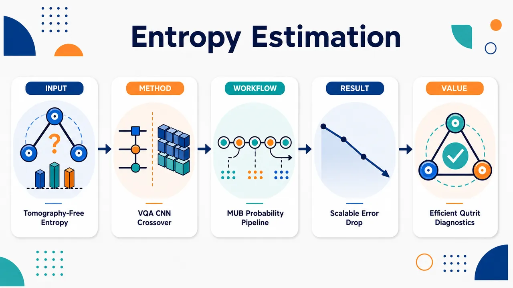
研究问题如何在避免指数级完整量子态层析的情况下，直接估计多 qutrit 量子态的冯·诺依曼熵；核心难点是熵依赖密度矩阵本征值谱，而 qutrit 的高维 Hilbert 空间使测量、重构和优化成本迅速膨胀。创新方法提出“规模分区”的双路径熵估计框架：小规模 1–3 qutrit 用 SU(3)-inspired VQA，通过 Gell–Mann 旋转门与 CSUM 纠缠门学习近似本征测量基，把测量 Shannon 熵压低到 von Neumann 熵；较大规模 2–5 qutrit 用 CNN 读取 tensor-product MUB 多基测量概率，直接回归熵，不重构密度矩阵或本征谱。Aha 点是发现方法优势随系统规模发生交叉：物理可解释的 VQA 适合小系统，数据驱动 CNN 更适合大系统。工作流程输入为合成多 qutrit 混合态：先由 Dirichlet 本征值与 Haar 随机酉生成密度矩阵，并计算精确熵标签。VQA 路径中，参数化 SU(3) 线路作用于量子态，在计算基测量得到概率分布，最大化相对均匀分布的 KL 散度以最小化测量 Shannon 熵，输出熵估计。CNN 路径中，对每个态在多个 tensor-product MUB 基下生成测量概率，各基概率先经卷积层提取局部特征，再由全连接层融合跨基信息，输出归一化熵标量。关键结果单 qutrit VQA 误差低于 10⁻⁵ nats；两 qutrit VQA 最坏误差低于 9×10⁻³ nats；三 qutrit VQA 在约 60% mixedness 处误差峰值约 0.3 nats，四 qutrit 扩展时误差仍约 0.6–0.8 nats。CNN 在 2、3、4、5 qutrit 上的 90 分位误差约为 0.27、0.19、0.16、0.13 nats；四、五 qutrit 仅用约 12.5% 完整层析测量基即可达到 0.13–0.16 nats 误差，并对有限 shot 噪声表现出有限退化。应用价值为高维量子系统提供无需完整层析的熵估计路线图：小型 qutrit 设备可用 VQA 获得高精度、可解释的本征基对齐估计；更大 qutrit 阵列可用 CNN 以少量测量设置快速预测混合度和信息含量。该框架有助于量子态诊断、量子信息处理、噪声表征和未来 qudit 量子硬件的可扩展评估。第一部分：核心概览 (Overview)
多 qutrit 体系的冯·诺依曼熵估计被系统地置于两条路径下比较：小规模体系采用 SU(3)-inspired VQA 学习近似本征测量基，大规模体系采用基于 tensor-product MUB measurement statistics 的 CNN 直接回归熵。核心贡献在于揭示实际方法的尺度转折：VQA 在 2–3 qutrit 中具备高精度与物理可解释性，但受参数数、线路深度与优化复杂度限制；CNN 在 4–5 qutrit 中以约 12.5% tomography bases 达到 0.13–0.16 nats 的 90 分位误差，显示更强可扩展性与噪声鲁棒性。
---
第二部分：结构化快速回顾
《Entropy Estimation in Multi-Qutrit Systems via Variational and Classical Neural Networks》（None，）
背景
多 qutrit 量子态的 von Neumann entropy 是混合度、关联与信息含量的核心指标，但完整量子态层析成本随系统规模指数增长。多数既有熵估计工作集中于 qubit，qutrit 的高维 Hilbert 空间带来更高信息密度，也带来更困难的表征问题。
方法
两类互补方法被并行评估。VQA 使用 Gell–Mann rotation gates 与 CSUM gates 构造 11 种三 qutrit 硬件高效 ansatz，通过最小化测量分布 Shannon entropy 近似本征基。CNN 使用 tensor-product single-qutrit MUBs 的测量概率作为输入，直接预测归一化熵。
结果
单 qutrit VQA 误差低于 10⁻⁵ nats；两 qutrit VQA 最坏误差低于 9 × 10⁻³ nats；三 qutrit VQA 在约 60% mixedness 处误差峰值约 0.3 nats。CNN 在 2–5 qutrit 上 90 分位误差约为 0.27、0.19、0.16、0.13 nats，随系统规模增大而改善。
讨论
VQA 的优势来自显式学习近似本征基的物理归纳偏置；CNN 的优势来自从多基测量统计中学习熵相关特征，不需要密度矩阵重构或本征谱重构。2–3 qutrit 区间出现方法优势交叉。
局限
所有主要实验在 ideal/noise-free simulator 中完成；CNN 训练使用无有限 shot 噪声的理想概率；VQA 扩展到四 qutrit 时误差仍约 0.6–0.8 nats；OOD diagonal states 误差显著增大，均值约 0.47、90 分位约 0.72。
结论
小规模多 qutrit 熵估计适合使用 VQA；更大规模 qutrit 体系中，CNN 以较少测量设置实现更好的可扩展性与稳健性。未来关键方向包括现实噪声、测量策略优化、Rényi entropy 与更大 qudit 系统扩展。
---
第三部分：逐章节冷凝解析 (Section-by-Section Condensing)
Abstract
- Two complementary entropy-estimation regimes
多 qutrit 体系的 von Neumann entropy estimation 被分成两条互补路线：小规模用 variational quantum algorithms (VQAs)，较大规模用 classical convolutional neural networks (CNNs)，且全部在理想无噪声模拟器中评估；原文明确限定为 *"using two complementary approaches: variational quantum algorithms (VQAs) and classical convolutional neural networks (CNNs), evaluated using an ideal (noise-free) quantum simulator."*
- Eleven SU(3)-inspired ansatzes for up to three qutrits
VQA 部分覆盖最高三 qutrit，构造并评估 11 个 hardware-efficient SU(3)-inspired ansatzes；这一设计针对 qutrit 的 SU(3) 局域结构，而非 qubit 的 SU(2) 结构，原文为 *"For systems up to three qutrits, we construct and evaluate 11 hardware-efficient SU(3)-inspired ansatzes."*
- Trainable parameter count dominates VQA accuracy
参数扫描显示，若已有足够纠缠，估计精度主要由 trainable parameters 数量决定，而不是 ansatz 微结构；原文证据为 *"A parameter sweep shows that estimation accuracy is primarily determined by the number of trainable parameters, provided sufficient entanglement is present."*
- Parameter budget fixed near 120 for controlled comparison
后续 VQA 实验将参数数固定在约 120，用于隔离架构差异；增加纠缠门数量超过阈值后收益有限，原文为 *"we fix the parameter count to approximately 120 for subsequent experiments, observing that increasing entangling-gate counts beyond a threshold yields only marginal improvements."*
- CNN scales from two to five qutrits using tensor-product MUBs
CNN 处理 two to five qutrits，输入来自 tensor-product mutually unbiased bases 的测量结果；原文为 *"For larger systems (two to five qutrits), we use a CNN trained on measurement outcomes from tensor-product mutually unbiased bases."*
- Measurement efficiency at 12.5% tomography cost
在四、五 qutrit 体系中，仅使用完整层析所需测量的 12.5% 即可达到 90th-percentile absolute errors ≈ 0.13–0.16 nats；原文为 *"using only 12.5% of the measurements required for full state tomography is sufficient to reach 90th-percentile absolute errors of approximately 0.13-0.16 nats for both four- and five-qutrit systems."*
- Practical transition from VQA to CNN with scale
结论性发现是方法适用性随规模转换：VQAs 适合小系统，CNN estimators 在大 qutrit 系统中更具可扩展性和鲁棒性；原文为 *"VQAs are effective for small systems, while CNN-based estimators offer improved scalability and robustness for larger qutrit systems."*
---
I Introduction
- Full tomography is exponentially expensive
未知量子态信息提取的核心瓶颈是 full quantum state tomography 的实验与计算成本随系统规模指数增长，中等规模系统即不可行；原文为 *"its experimental and computational cost scales exponentially with system size, rendering it impractical for even moderately large systems."*
- Property-specific estimation motivates tomography-free methods
许多应用并不需要完整密度矩阵，而只需要 purity, fidelity, entanglement, entropy 等状态函数，因此推动了 tomography-free methods；原文为 *"one is interested only in specific properties of the state, such as purity, fidelity, entanglement, or entropy."* 以及 *"This has motivated the development of tomography-free methods for directly estimating physically relevant quantities."*
- Von Neumann entropy quantifies mixedness
von Neumann entropy 定义为 (S(h̊o)=-Tr(h̊ołogh̊o))，度量量子态混合度；原文直接给出 *"The von Neumann entropy of a quantum state ρ is defined as S(ρ)=-Tr(ρ log ρ), which quantifies the mixedness of the state."*
- Entropy is nonlinear in the eigenvalue spectrum
熵估计难点来自其对密度矩阵本征值谱的非线性依赖，因此直接方法难以扩展；原文为 *"estimating entropy is inherently challenging due to its nonlinear dependence on the eigenvalue spectrum of the density matrix, making direct approaches difficult to scale."*
- Qutrits are experimentally natural but underexplored
超导电路、囚禁离子、光子系统天然支持高维量子态；qutrit 提高信息密度并改变资源权衡，但也扩大 Hilbert 空间，使状态表征更难；原文为 *"many experimental platforms—including superconducting circuits, trapped ions, and photonic systems—naturally support higher-dimensional quantum states."* 以及 *"qutrits offer increased information density and can alter resource trade-offs in quantum algorithms."*
- Higher-dimensional entropy estimation is relatively unexplored
多数既有工作聚焦 qubit，高维 qutrit 的可扩展熵估计仍是重要且相对未充分探索的问题；原文为 *"most prior work has focused on qubit systems"* 和 *"scalable entropy estimation in qutrit systems an important and relatively unexplored problem."*
- VQA learns a useful measurement basis in low dimensions
低维场景使用 GMR gates 与 CSUM operations 组成硬件高效 SU(3)-inspired ansatzes，分析参数数、深度与纠缠的相互作用；原文为 *"We design hardware-efficient SU(3)-inspired ansatzes built from Gell–Mann rotation (GMR) gates and qutrit SUM (CSUM) operations, and systematically analyze the interplay between parameter count, circuit depth, and entanglement in entropy estimation."*
- CNN estimates entropy directly from MUB statistics
CNN 路线直接处理 tensor-product mutually unbiased bases (MUBs) 的测量统计，学习测量结果到熵的映射，不做密度矩阵重构；原文为 *"This method operates directly on measurement statistics obtained from tensor-product mutually unbiased bases (MUBs), learning a mapping from measurement outcomes to entropy values without requiring density matrix reconstruction."*
- Complementarity of interpretable quantum and scalable classical models
低维采用结构化、可解释量子模型，高维采用可扩展、数据驱动经典模型；原文为 *"structured, interpretable quantum models in low dimensions, and scalable, data-driven classical models for larger systems."*
---
II Related work
- Four paradigms of tomography-free entropy estimation
既有无层析熵估计方法分为四类：quantum query models、measurement-driven methods、machine-learning approaches、variational quantum algorithms；原文为 *"Existing work can be broadly categorized into four paradigms: (i) quantum query models... (ii) measurement-driven methods... (iii) machine-learning approaches... and (iv) variational quantum algorithms."*
- Oracle-based methods have theoretical strength but near-term limits
基于 oracle 的方法通过 block-encoding、quantum signal processing 或 QSVT 计算 (h̊o) 本征值的非线性函数，再经 trace estimation 得到熵；但依赖理想 oracle 和深线路，不适合近中期设备；原文为 *"These methods typically evaluate nonlinear functions of the eigenvalues of ρ via block-encoding, combined with polynomial transformations implemented using quantum signal processing or quantum singular value transformation (QSVT)."* 以及 *"these approaches rely on idealized oracle access and deep circuits, limiting their applicability on near-term devices."*
- Representative oracle works avoid spectral-gap assumptions
Subramanyam 等构造 (h̊o^α) 的 block-encoding 并使用 DQC1-style protocols 估计 traces；Wang 等扩展到更广信息论量且不需 spectral gap；原文为 *"Subramanyam et al. construct a block-encoding of ρ^α and estimate traces using DQC1-style protocols, while Wang et al. extend this framework to broader information-theoretic quantities without requiring spectral gap assumptions."*
- Measurement-driven methods replace coherent oracle access with copies
第二类方法使用独立量子态副本和经典后处理，不需要 coherent oracle access 或完整重构，适合 NISQ 约束；原文为 *"using independent copies of the quantum state and classical post-processing of measurement data"* 以及 *"well suited to experimental constraints on NISQ devices."*
- Randomized measurements enable nonlinear entropy estimation
Brydges 等表明随机局域酉和单副本测量可通过 outcome correlations 估计 entropy 等非线性量；原文为 *"nonlinear quantities such as entropy can be estimated using random local unitaries and single-copy measurements, with values extracted from outcome correlations."*
- Classical shadows estimate many observables efficiently
classical shadow framework 通过随机测量高效估计多个 observables，是 measurement-driven 方法的重要背景；原文为 *"the classical shadow framework, which enables efficient estimation of many observables from randomized measurements."*
- Machine learning bypasses explicit reconstruction
机器学习方法从测量数据直接估计信息量，学习量子态非线性泛函而不显式重构态；原文为 *"Machine learning approaches estimate quantum information measures directly from measurement data, bypassing explicit state reconstruction by learning nonlinear functionals of the quantum state."*
- Prior ML work mostly targets qubits and entanglement
既有深度学习工作可从 incomplete data 估计 entanglement，并具备对 measurement settings 的鲁棒性，但多数集中于 qubit 和 entanglement，高维 qutrit 熵估计探索有限；原文为 *"deep networks can estimate entanglement from incomplete data with robustness to measurement settings"* 以及 *"most work focuses on qubits and entanglement, with limited exploration of entropy estimation in higher-dimensional systems such as qutrits."*
- Variational methods optimize auxiliary representations
变分方法把熵估计转化为对辅助 operators 或 states 的优化问题，避免显式对角化；原文为 *"Variational approaches recast entropy estimation as an optimization problem over auxiliary operators or states, avoiding explicit diagonalization."*
- VQAs are flexible and hardware-compatible but scaling remains open
VQA 用参数化线路和经典优化近似 (h̊o) 的函数，适合直接 spectral 方法不可行时的非线性信息测度估计；原文为 *"VQAs use parameterized circuits and classical optimization to approximate functions of ρ, enabling entropy estimation from partial information."* 以及 *"variational methods offer a flexible and hardware-compatible framework for estimating nonlinear information measures when direct spectral approaches are impractical."*
---
III Methodology
III-A Variational Quantum Algorithm (VQA) Approach
- VQA preserves entropy and learns an eigenbasis-aligned measurement basis
变分线路不改变状态本征谱与熵，而是寻找一个酉变换，使计算基近似对齐密度矩阵本征基；原文为 *"The variational circuit preserves the intrinsic entropy of the state and instead seeks a unitary transformation that approximately aligns the computational basis with the eigenbasis of the density matrix."*
- Multi-qutrit state and transformed density matrix
(n)-qutrit 状态 (h̊oinCd^ⁿ× d^ⁿ)，其中 (d=3)；参数化酉 (U(θ)) 由 GMR gates 与 CSUM operations 实现，变换态为 (h̊o(θ)=U(θ)h̊o U^dagger(θ))；原文为 *"Let ρ∈Cd^ⁿ×d^ⁿ denote an n-qutrit state with d=3."* 以及 *"A parameterized unitary U(θ), implemented using GMR gates and CSUM operations, defines the transformed state ρ(θ)=U(θ)ρU†(θ)."*
- Measurement probabilities are diagonal elements after rotation
在 computational basis 中投影测量得到 (pᵢ₍θ)=łangle i|h̊o(θ)|iångle)，即 (Uh̊o U^dagger) 的对角元；原文为 *"Projective measurements in the computational basis |i⟩ yield a probability distribution pᵢ₍θ)=⟨i|ρ(θ)|i⟩."* 和 *"The measured probability vector pᵢ is the diagonal of UρU† in computational basis."*
- Schur–Horn theorem provides entropy upper bound
根据 Schur–Horn theorem，测量概率对角向量被本征值向量 majorized；Shannon entropy 是 Schur-concave，因此 (H(p)ge S(h̊o))，本征基测量时取等号；原文为 *"By the Schur–Horn theorem, this diagonal vector is majorized by the eigenvalue vector λ(ρ)."* 以及 *"Since the Shannon entropy is Schur-concave, it follows that, H(p)≥H(λ(ρ))=S(ρ), with equality when the measurement basis is the eigenbasis of ρ."*
- KL objective minimizes measurement Shannon entropy
损失函数为 (L(θ)=-DKL(p(θ)|u))，其中 (uᵢ₌₁/dⁿ)；由于 (DKL(p|u)=łog(dⁿ⁾⁻H(p))，最大化 KL 等价于最小化 (H(p))；原文为 *"we maximize the Kullback–Leibler (KL) divergence between p(θ) and the uniform distribution uᵢ₌₁/dⁿ"* 以及 *"this is equivalent to minimizing the Shannon entropy of the measurement distribution."*
- Non-uniform outcomes signal spectral alignment
优化偏向产生最大非均匀 outcome 的测量基；对固定状态而言，本征基中测量分布等于本征值谱近似，因此测量熵估计 von Neumann 熵；原文为 *"The optimization therefore favors bases that produce maximally non-uniform outcomes."* 以及 *"in which case p(θ) approximates the eigenvalue spectrum."*
---
III-A 1 Qutrit Variational Circuit Design
- Implementation uses qudit library
线路构造基于 qudit library；原文为 *"Circuit construction is implemented using the qudit library."*
- GMR and CSUM instantiate qutrit-local and entangling operations
单 qutrit 操作采用 GMR gates，作为 qutrit 中类似 Pauli rotations 的 SU(3) 生成元旋转；纠缠通过 CSUM gate 引入，它是 CNOT 的高维类似物；原文为 *"Single-qutrit operations are implemented using GMR gates, which generate SU(3) transformations analogous to Pauli rotations in qubit systems."* 以及 *"Entanglement is introduced via the CSUM gate, a higher-dimensional analogue of the CNOT gate."*
- Fixed Fourier-like transformations perform basis changes
固定的 Fourier-like / Hadamard-type 变换用于基变换；原文为 *"Fixed Fourier-like (Hadamard-type) transformations are used as basis-change operations."*
- Single-qutrit ansatz is complete and extremely accurate
单 qutrit ansatz 包含 nine GMR gates，构成完整 SU(3) 基；在混合态范围内熵估计误差低于 10⁻⁵ nats；原文为 *"For a single qutrit, the variational ansatz consists of nine GMR gates, forming a complete basis of SU(3)."* 以及 *"enables entropy estimation with errors below 10⁻⁵ nats across a range of mixed states."*
- Multi-qutrit design requires expressibility–entanglement–efficiency balance
单 qutrit 足够完整，无需架构变化；多 qutrit 设计必须平衡 local expressibility、entanglement generation 与 parameter efficiency；原文为 *"no further architectural variation is required in this setting."* 以及 *"circuit design must balance local expressibility, entanglement generation, and parameter efficiency."*
---
III-A 2 Ansatz Design and Parameter Efficiency
- Parameter sweep isolates model capacity
固定参考 ansatz 与代表性混合态下，通过增加 circuit layers 改变可训练参数数，量化模型容量对精度的影响；原文为 *"Using a fixed reference ansatz and a representative mixed quantum state, the number of trainable parameters was varied by increasing the number of circuit layers."*
- More parameters improve convergence and reduce error
在固定线路结构下，更多可训练参数带来更快收敛与更低误差，前提是纠缠充分；原文为 *"increasing the number of trainable parameters leads to faster convergence and lower estimation error"* 以及 *"provided sufficient entanglement is present."*
- Architecture comparison fixes total parameter count
为隔离架构效应，所有 ansatz 的总参数数被固定，通过改变层数实现；原文为 *"we isolate architectural effects by fixing the total number of trainable parameters across all ansatzes."* 以及 *"This is achieved by varying the number of circuit layers."*
- Three architectural axes are tested
ansatz 变化包括 GMR gate composition、每层内部 gate ordering、参数相对纠缠操作的位置；原文为 *"we study ansatzes that vary in (i) the composition of GMR gates, (ii) gate ordering within each layer, and (iii) the placement of parameters relative to entangling operations."*
- Each layer interleaves local rotations and CSUM gates
每层由局域 GMR rotations 与 CSUM gates 交替组成，并在层首尾加入固定 Hadamard 型基变换；原文为 *"Each layer consists of local GMR rotations interleaved with CSUM gates, with fixed single-qutrit Fourier like gate operations (Hadamard) applied at the beginning and end of the layer."*
- Generator notation distinguishes symmetric, antisymmetric, and diagonal GMRs
图中 ((i,j)) 索引用来标识生成元类型：(i<j) 为 symmetric，(i>j) 为 antisymmetric，(i=j) 为 diagonal；原文为 *"i<j denotes symmetric generators, i>j antisymmetric generators, and i=j diagonal generators."*
- Ansatz notation defines block and depth
每个 ansatz 写作 ([B]^L)，其中 (B) 是由 S/A/D GMRs 后接 entangling layer E 的变分块，(L) 是层数；原文为 *"Each ansatz is denoted as [B]^L, where B represents a variational block composed of symmetric (S), antisymmetric (A), and diagonal (D) GMRs followed by an entangling layer (E), and L is the number of layers."*
- A1 baseline uses symmetric plus diagonal GMRs
A1 为 8 层 ([(S³D²⁾E]⁸)，每 qutrit 每层 5 个参数，并使用完整纠缠层；原文为 *"A1 (8 layers): [(S³D²⁾E]⁸ Baseline with five parameters per qutrit per layer (symmetric + diagonal GMRs) and full entangling layers."*
- A2 and A3 increase expressibility with eight local parameters
A2/A3 为 5 层 ([(S³D²A³⁾E]⁵) 与 ([(S³D²A³⁾Eₐₗₜ]⁵)，每 qutrit 每层 8 个参数；A3 使用交替纠缠连通性；原文为 *"Higher-expressibility designs with eight parameters per qutrit per layer. A3 additionally incorporates alternating entanglement connectivity across layers."*
- A4 and A5 test generator choice under same parameter density
A4/A5 为 8 层 ([(S²A¹D²⁾E]⁸)、([(A³D²⁾E]⁸)，同为每 qutrit 每层 5 参数，但改变 GMR 生成元选择与纠缠结构；原文为 *"Variants of A1 with five parameters per qutrit per layer, differing in the choice of GMR generators and entangling structure."*
- A6 and A7 reduce local parameters but increase depth
A6/A7 为 10 层 ([(S³D)E]¹⁰)、([(S²D²⁾E]¹⁰)，每 qutrit 每层 4 参数，通过更深线路补偿 expressibility；原文为 *"Parameter-reduced variants (four parameters per qutrit per layer) derived from A1, with increased depth to compensate for reduced expressibility."*
- A8 and A10 are strongly parameter-reduced designs
A8/A10 为 13 层 ([(S²D)E]¹³)、([(S²D)Eₐₗₜ]¹³)，每 qutrit 每层 3 参数；A10 因交替连通性减少纠缠门；原文为 *"Strongly parameter-reduced designs (three parameters per qutrit per layer) with modified entanglement patterns and increased depth."* 以及 *"A10 has reduced entangled gates because of alternating connectivity."*
- A9 tests A1-like architecture with reduced entanglement
A9 为 8 层 ([(S³D²⁾Eₐₗₜ]⁸)，与 A1 类似但每层纠缠更少并采用交替连通；原文为 *"A1-like architecture with reduced entanglement per layer and alternating connectivity."*
- A11 tests minimal-parameter depth compensation
A11 为 20 层 ([(S²⁾E]²⁰)，每 qutrit 每层仅 2 参数，通过增加深度匹配总参数数；原文为 *"Minimal-parameter design (two parameters per qutrit per layer) requiring increased depth to match total parameter count."*
- Most ansatzes use 120 parameters; A8 and A10 use 117
A1–A7、A9、A11 均有 120 trainable parameters，A8 与 A10 有 117；原文为 *"All ansatzes A1–A7, A9, and A11 were constructed with 120 trainable parameters, while A8 and A10 contain 117."*
- Entanglement ablation varies CSUM gates from 2 to 6
为隔离纠缠作用，A1 在固定参数数下将每层纠缠门数从 2 到 6 变化；4 和 6 门设置比较 distributed 与 concentrated 纠缠配置；原文为 *"varying the number of entangling gates per layer from 2 to 6."* 以及 *"For higher entanglement settings (4 and 6 gates), both distributed and concentrated configurations were considered."*
---
III-A 3 Ansatz Design for Two Qutrits
- A9 and A10 are extended to two qutrits for gate efficiency
三 qutrit 研究显示 A9/A10 在减少纠缠门的同时没有显著精度损失，因此扩展到两 qutrit；原文为 *"A9 and A10 were extended to the two-qutrit setting due to their reduced entangling-gate requirements without significant loss in accuracy."*
- Two-qutrit entanglement alternates by layer parity
偶数层使用两个纠缠门实现 full connectivity；奇数层使用单个纠缠门并交替方向，以保持平衡信息流；原文为 *"In even-numbered layers, two entangling gates are applied to achieve full connectivity, while odd-numbered layers use a single entangling gate with alternating direction to maintain balanced information flow."*
- Local rotations and fixed basis changes are retained
两 qutrit 线路仍由局域 GMR 旋转、纠缠操作交替组成，且每层首尾有固定基变换门；原文为 *"local GMR rotations are interleaved with entangling operations, and each layer begins and ends with fixed basis-change gates."*
---
III-B CNN-Based Entropy Estimation
- CNN directly maps measurement probabilities to entropy
CNN 作为纯经典替代方案，从测量 outcome probabilities 直接估计熵，不重构密度矩阵或谱；原文为 *"we consider a fully classical approach for estimating the von Neumann entropy directly from measurement data."* 以及 *"Instead of reconstructing the density matrix or its spectrum, the model learns a mapping from measurement outcome probabilities to entropy values."*
- Spectral information is implicit in multi-basis statistics
模型不显式求本征值，但谱信息通过多基测量统计隐式编码；原文为 *"spectral information is implicitly encoded in measurement statistics across bases."*
- Synthetic mixed states provide exact entropy labels
训练与评估使用合成混合多 qutrit 态，精确熵由密度矩阵本征值计算并作为 ground truth；原文为 *"Training and evaluation are performed using synthetically generated mixed multi-qutrit states, with exact entropies computed from the density matrix eigenvalues as ground-truth labels."*
- Training uses ideal noiseless probabilities
CNN 在无 finite-shot noise 的理想测量概率上训练；原文为 *"The model is trained on ideal measurement probabilities without finite-shot noise."*
---
III-B 1 Measurement Representation
- Inputs are probability distributions from multiple bases
CNN 输入为多个测量基下的 outcome probability distributions，属于实验上可获得数据；原文为 *"The input to the model consists of measurement outcome probability distributions obtained from multiple bases, enabling entropy estimation directly from experimentally accessible data."*
- Single-qutrit complete MUB set has four bases
单 qutrit (d=3) 的完整 MUB 集包含四个基 (B₀,łdots,B₃)，任意不同基的态满足 (|łangleψ|φångle|²⁼¹/3)；原文为 *"For a single qutrit (d=3), a complete set of four MUBs B0,…,B3 satisfies |⟨ψ|ϕ⟩|²⁼¹/3."*
- MUBs capture population and coherence information
不同基之间均匀重叠，使测量对 population 与 coherence 均敏感；原文为 *"ensuring uniform overlap between bases and sensitivity to both population and coherence information."*
- Global MUBs are nontrivial for composite qutrits
复合 qutrit 的 global MUB 构造与实践较难，因此改用 tensor-product MUBs；原文为 *"Extending such constructions to global MUBs for composite qutrit systems is nontrivial, and practical implementations remain limited."*
- Tensor-product MUBs define scalable local measurement settings
(N)-qutrit 测量基定义为 (Bμ=Bμ_₁øtimesḑotsøtimesBμ_N)，其中 (μₖᵢₙ0,1,2,3)；原文为 *"We therefore employ tensor-product MUBs, defined for an N-qutrit system as B_μ=Bμ₁⊗⋯⊗BμN, μₖ∈0,1,2,3."*
- Product MUBs are not globally unbiased but experimentally feasible
tensor-product MUBs 并非全局 mutually unbiased，但具备可扩展性和实验可行性，同时保留对局域与多 qutrit 关联的敏感性；原文为 *"Although these bases are not globally mutually unbiased, they provide a scalable and experimentally feasible measurement strategy that retains sensitivity to both local and multi-qutrit correlations relevant for entropy estimation."*
- Reduced basis subsets control measurement cost
实际仅使用 MUB 子集以降低测量成本，同时保留足够信息；原文为 *"a reduced subset of these bases is used to limit measurement cost while retaining sufficient information for entropy estimation."*
- CNN processes each basis independently before feature fusion
每个基的测量分布先由卷积层独立处理，再由 fully connected layers 合并特征并输出熵；原文为 *"Measurement distributions from each basis are processed independently by convolutional layers, and the resulting features are combined using fully connected layers to produce the entropy estimate."*
---
III-B 2 Data Generation
- Mixed states are generated by Dirichlet eigenvalues and Haar unitaries
训练数据通过从 Dirichlet distribution 采样本征值，并施加 Haar-random unitary rotations 生成随机混合态；原文为 *"randomly generated mixed quantum states obtained by sampling eigenvalues from a Dirichlet distribution and applying Haar-random unitary rotations."*
- Entropy-stratified sampling covers the entropy range
为均匀覆盖熵范围，采用 entropy-stratified sampling strategy；原文为 *"To ensure uniform coverage across the entropy range, an entropy-stratified sampling strategy is used."*
- Fixed measurement configuration ensures consistency
对每个系统规模，所有样本使用相同测量配置，从而保证训练与评估一致；原文为 *"The same measurement configuration is used across all samples for a given system size, enabling consistent training and evaluation."*
---
III-B 3 Training Protocol
- Separate CNNs are trained for each system size
每个系统规模训练独立 CNN；原文为 *"Separate CNN models are trained for each system size."*
- Model capacity increases with Hilbert-space dimension
架构整体设计保持一致，但随系统规模增大同时扩展卷积特征提取器和全连接层容量，以适应 Hilbert 空间增长和跨测量基关联复杂化；原文为 *"model capacity is increased with system size by scaling both the convolutional feature extractor and the fully connected layers."* 以及 *"This accommodates the growth in Hilbert space dimension and the increased complexity of correlations across measurement bases."*
- Output is a bounded scalar normalized by log(D)
网络输出单个熵标量；输出层使用 sigmoid 约束预测范围，目标值按 (łog(D)) 归一化，(D=3^N)，使回归任务固定在 ([0,1])；原文为 *"The network outputs a single scalar entropy estimate."* 以及 *"A sigmoid activation is used at the output layer to enforce bounded predictions, and targets are normalized by log(D), with D=3^N, so that the regression task is defined over a fixed range [0,1]."*
- Adam optimizer and L1 loss are used
训练采用 Adam optimizer，损失为预测与真实归一化熵之间的 mean absolute error (L1 loss)；原文为 *"Training is performed using the Adam optimizer with mean absolute error (L1 loss) between predicted and true normalized entropy values."*
- L1 loss is chosen for stability across mixedness
L1 相比 MSE 对中等偏差保持敏感，并在不同 mixedness 下更稳定；原文为 *"L1 loss is preferred over mean squared error, as it maintains sensitivity to moderate deviations and leads to more stable training across different degrees of mixedness."*
- Noiseless training isolates intrinsic learning performance
所有模型使用直接由密度矩阵计算的无噪声概率训练，以排除 sampling noise 干扰；原文为 *"All models are trained on noiseless measurement probabilities computed directly from the density matrices, allowing the intrinsic performance of the learning approach to be evaluated independently of sampling noise."*
---
IV Results
IV-A VQA Results
- Normalized entropy quantifies mixedness
混合度用归一化熵 (tildeS(h̊o)=S(h̊o)/łog D) 表示，纯态为 0，最大混合态为 1；原文为 *"We quantify mixedness using the normalized entropy S~(ρ)=S(ρ)/logD. It ranges from 0 for pure states to 1 for maximally mixed states."*
- Three-qutrit system is the main VQA testbed
VQA 分析主要集中于三 qutrit 系统；原文为 *"The analysis focuses on the three-qutrit system as the primary testbed."*
- Parameter sufficiency uses Ansatz 1 on a 60% mixed state
参数充分性研究使用 Ansatz 1 和 60% mixed state；每层贡献 15 parameters；原文为 *"The parameter sufficiency study uses Ansatz 1 on a 60% mixed state."* 以及 *"Each layer contributes 15 parameters."*
- Error decreases with parameter count under ideal simulation
随训练参数增加，熵估计误差下降；浅层线路误差高；原文为 *"the estimation error decreases with parameter count."* 和 *"Low-depth circuits show high error."*
- Performance is parameter-driven if entanglement is sufficient
理想模拟下，性能主要由总参数数控制，前提是纠缠足够；原文为 *"performance is mainly governed by the total number of parameters, provided sufficient entanglement is present."*
- Depth–noise trade-off appears on hardware
更深线路在硬件上会累积噪声，形成 expressibility 与 depth 的权衡；原文为 *"On hardware, deeper circuits accumulate noise. This creates a trade-off between expressibility and depth."*
- Three-qutrit experiments fix approximately 120 parameters
三 qutrit 实验固定参数数约 120，以隔离线路架构影响；原文为 *"We use approximately 120 parameters to isolate the effect of circuit architecture."*
- Two-qutrit VQA is highly accurate
两 qutrit 系统在所有 mixedness levels 下精度高，最坏误差低于 9 × 10⁻³ nats；原文为 *"The two-qutrit case achieves high accuracy across all mixedness levels, with worst-case error below 9×10⁻³ nats."*
- Three-qutrit VQA error peaks near intermediate mixedness
三 qutrit 误差更高，并显著依赖 mixedness；约 60% mixedness 时峰值约 0.3 nats，低混合度与高混合度两端下降；原文为 *"The error peaks near 60% mixedness at about 0.3 nats. It decreases toward both low- and high-mixedness regimes."*
- Intermediate spectra are hardest
本征谱既不稀疏也不均匀时熵估计最困难；原文为 *"This reflects the increased difficulty of estimating entropy when the eigenvalue spectrum is neither sparse nor uniform."*
- Ansatz architecture has no consistent advantage at fixed parameter budget
三 qutrit 中所有 ansatz 行为相似，没有架构显示稳定优势，说明固定参数预算下精度对结构不敏感；原文为 *"Within the three-qutrit system, all ansatzes behave similarly. No architecture shows a consistent advantage."* 以及 *"accuracy is largely insensitive to circuit structure under a fixed parameter budget."*
- Additional CSUM gates do not improve accuracy after a threshold
固定参数数时改变三 qutrit A1 的 CSUM 门数，增加纠缠门并不改善精度，误差超过最小阈值后饱和；原文为 *"increasing entangling gates does not improve accuracy."* 以及 *"The error saturates beyond a minimal threshold."*
- Extra entanglement mainly increases circuit complexity
充分纠缠后，额外 CSUM 门只是增加线路复杂度；原文为 *"Additional entangling gates only increase circuit complexity."*
- A9 and A10 are more implementation-friendly
A9/A10 以更少纠缠门达到相似精度，因此更适合实施；原文为 *"Ansatzes such as A9 and A10 achieve similar accuracy with fewer entangling gates. They are more suitable for implementation."*
- A11 increases depth without accuracy gain
A11 等更深设计增加线路深度但未提升性能；原文为 *"Deeper designs, such as A11, increase circuit depth without improving performance."*
- Four-qutrit VQA scaling fails at practical depth
扩展到四 qutrit 后，即使增加深度与参数数，误差仍约 0.6–0.8 nats，显示实用深度下 expressibility 不足；原文为 *"The errors remain high, around 0.6–0.8 nats. This indicates insufficient expressibility at practical depths."*
- VQAs do not scale efficiently to larger qutrit systems
VQA 小系统表现好，但大 qutrit 系统中因深度、优化和噪声问题难以有效扩展；原文为 *"They perform well for small systems but do not scale efficiently to larger qutrit systems."*
---
IV-B CNN Results
- CNN evaluation spans two to five qutrits
CNN 熵估计器在 2–5 qutrit systems 上评估，数据为合成混合态并带精确熵标签；原文为 *"The CNN-based estimator is evaluated on two- to five-qutrit systems using synthetically generated mixed states with exact entropy labels."*
- Four- and five-qutrit systems need only small basis subsets
四 qutrit 使用 10 bases 达到约 0.16 误差，五 qutrit 使用 30 bases 达到约 0.13 误差，之后性能饱和；原文为 *"10 bases for four qutrits (error approximately 0.16) and 30 bases for five qutrits (error approximately 0.13), beyond which performance saturates."*
- Measurement cost is about 12.5% of full tomography
四 qutrit 与五 qutrit 完整层析基数分别为 81 与 243；10/81 与 30/243 均约 12.5%；原文为 *"the full tomographic sets contain 81 and 243 bases, respectively."* 以及 *"using 10 and 30 bases corresponds to 10/81≈12.5% and 30/243≈12.5%."*
- Three-qutrit CNN benefits from more bases up to 18
三 qutrit 性能随测量基增加稳步改善，超过 8 bases 后收益递减，18 bases 最优；原文为 *"For three-qutrit systems, performance improves steadily with additional bases, with diminishing returns beyond 8 bases and best accuracy achieved at 18 bases."*
- CNN error improves monotonically with system size
90 分位误差从两 qutrit 的约 0.27 nats，降至三 qutrit 0.19、四 qutrit 0.16、五 qutrit 0.13；原文为 *"The two-qutrit system exhibits the largest errors, with a 90th-percentile value of around 0.27 nats. This reduces to approximately 0.19 nats for three qutrits, around 0.16 nats for four qutrits, and around 0.13 nats for five qutrits."*
- Higher-dimensional systems provide richer learnable structure
两 qutrit 误差较大源于测量统计信息含量有限；更高维系统提供 CNN 可利用的更丰富结构；原文为 *"The larger errors in the two-qutrit case reflect the limited information content available from measurement statistics, whereas higher-dimensional systems provide richer structure that the model can exploit."*
- CNN shows strong scalability
中心误差与尾部误差均随系统规模下降，说明高维系统中泛化更好；原文为 *"This monotonic reduction in both central and tail errors indicates improved generalization in higher-dimensional systems."* 以及 *"these results demonstrate strong scalability of the CNN-based estimator."*
---
IV-B 1 Out-of-Distribution Generalization
- Five-qutrit OOD performance is explicitly tested
OOD 评估针对 5-qutrit von Neumann entropy estimation，测试结构上不同于训练分布的量子态；原文为 *"Figure 9 evaluates out-of-distribution performance on structurally distinct quantum states."*
- In-distribution five-qutrit errors are low
分布内数据均值误差约 0.06，90 分位误差约 0.13；原文为 *"For in-distribution data, the model achieves a mean error of approximately 0.06 and a 90th-percentile error of approximately 0.13."*
- Diagonal states are the hardest OOD class
OOD 类别中 diagonal states 误差最大，均值约 0.47，90 分位约 0.72；原文为 *"diagonal states exhibit the largest errors (mean around 0.47, 90th percentile around 0.72)."*
- Low-rank, pure, and maximally mixed states generalize better
low-rank、pure、maximally mixed states 的 OOD 误差明显更低；原文为 *"low-rank, pure, and maximally mixed states show substantially lower errors."*
- OOD errors remain bounded despite structure dependence
尽管误差随态结构变化，整体仍有界，显示一定 OOD 泛化能力；原文为 *"Despite this variation, errors remain bounded, indicating reasonable generalization beyond the training distribution."*
---
IV-B 2 Effect of Measurement Noise
- Finite-shot measurement noise is tested by sampling statistics
有限 shot 噪声通过 sampled measurement statistics 评估；原文为 *"The impact of finite-shot measurement noise is evaluated by comparing performance under sampled measurement statistics."*
- Two-qutrit CNN is nearly insensitive to sampling noise
两 qutrit 系统误差基本不变，显示对 sampling noise 低敏感性；原文为 *"For two-qutrit systems, the error remains largely unchanged, indicating low sensitivity to sampling noise."*
- Larger systems show modest but limited degradation
较大系统误差略增，但整体退化有限，说明对测量噪声鲁棒；原文为 *"For larger systems, a modest increase in error is observed, but overall degradation remains limited, demonstrating robustness to measurement noise."*
---
V Discussion
- Two- and three-qutrit regimes enable direct VQA–CNN comparison
2–3 qutrit 是两种方法都可用的区间，因此可进行直接比较；原文为 *"A direct comparison between the VQA and CNN approaches can be made in the two- and three-qutrit regimes, where both methods are applicable."*
- Relative performance shifts with system size
随系统规模增大，两种方法的相对优势发生清晰转变；原文为 *"These regimes reveal a clear shift in relative performance with increasing system size."*
- VQA dominates two-qutrit systems
两 qutrit 中 VQA 显著优于 CNN，误差量级约 10⁻³；原文为 *"For two-qutrit systems, the VQA significantly outperforms the CNN, achieving errors on the order of 10⁻³."*
- VQA accuracy comes from eigenbasis alignment
VQA 高精度来自变分线路近似把测量基与密度矩阵本征基对齐，从而接近最优熵估计；原文为 *"This high accuracy arises from the ability of the variational circuit to approximately align the measurement basis with the eigenbasis of the density matrix, enabling near-optimal entropy estimation."*
- CNN is weaker in low-dimensional simple structure
CNN 在低维两 qutrit 中 90 分位误差约 0.27，因为没有显式本征基对齐机制，只能从测量统计推断熵；原文为 *"the CNN exhibits larger errors in this low-dimensional setting, with a 90th-percentile error of around 0.27."* 以及 *"Without an explicit mechanism for eigenbasis alignment, the model must infer entropy directly from measurement statistics."*
- Three-qutrit performance gap narrows
三 qutrit 中 CNN 的 90 分位误差约 0.19，VQA 在类似参数预算下误差最高 0.3；原文为 *"The CNN achieves a 90th-percentile error of approximately 0.19, while the VQA exhibits errors up to 0.3 for comparable parameter budgets."*
- Improving VQA requires deeper circuits and harder optimization
VQA 可通过更多参数改善性能，但代价是更深线路与更困难优化；原文为 *"Although VQA performance can be improved with additional parameters, this requires deeper circuits and more challenging optimization."*
- Crossover in relative advantage
结果显示相对优势交叉：VQA 在低维因物理归纳偏置表现极佳，但受线路深度和优化复杂度限制；CNN 随系统规模增大而改善；原文为 *"These results indicate a crossover in relative advantage."* 以及 *"VQAs perform exceptionally well in low-dimensional systems due to their strong physical inductive bias, but their scalability is limited by circuit depth and optimization complexity."*
- CNN learns entropy-relevant features without basis reconstruction
CNN 直接从测量数据学习熵相关特征，不需要显式重构测量基或本征谱；原文为 *"the CNN improves with system size by learning entropy-relevant features directly from measurement data, without requiring explicit basis reconstruction."*
- Higher-dimensional CNN estimation uses about 12.5% tomographic bases
高维中 CNN 仅需约 12.5% tomographic bases 即可准确估计，具备实际测量效率；原文为 *"accurate CNN-based estimation is achieved using only a small fraction of measurement settings (as low as approximately 12.5% of tomographic bases)."*
- Complementary strengths suggest hybrid strategies
VQA 小系统高精度且可解释，CNN 大系统可扩展且鲁棒；系统规模依赖或混合策略可能更适合实际熵估计；原文为 *"VQAs provide high accuracy and interpretability in small systems, while CNN-based methods offer superior scalability and robustness in larger systems."* 以及 *"system-size-dependent or hybrid strategies may provide an effective route for practical entropy estimation."*
---
VI Conclusion
- Dual-method study covers variational and classical neural estimators
多 qutrit 熵估计同时使用 VQAs 与 CNNs；原文为 *"We studied entropy estimation in multi-qutrit systems using both variational quantum algorithms (VQAs) and classical convolutional neural networks (CNNs)."*
- VQA accuracy is parameter-governed, with diminishing entanglement returns
ansatz 家族分析显示，VQA 精度主要受可训练参数数控制，额外纠缠超过最小阈值后边际收益递减；原文为 *"estimation accuracy is primarily governed by the number of trainable parameters, while additional entanglement beyond a minimal threshold yields diminishing returns."*
- VQAs are accurate but not scalable
VQA 在低维高度准确，但系统规模增长时需要快速增加线路深度与优化努力，从而限制可扩展性；原文为 *"Although highly accurate in low-dimensional systems, VQAs require rapidly increasing circuit depth and optimization effort as system size grows, limiting their scalability."*
- CNN estimates entropy without state reconstruction
CNN 直接从测量统计估计熵，不显式重构量子态；原文为 *"the CNN-based approach enables direct entropy estimation from measurement statistics without explicit state reconstruction."*
- CNN achieves measurement efficiency and scalability in ideal simulations
CNN 在较大系统中仅用少量测量设置即获得准确预测，显示无噪声模拟设定下的测量效率与可扩展性；原文为 *"Accurate predictions are achieved across larger systems using only a small fraction of measurement settings, demonstrating strong measurement efficiency and scalability within the simulated, noise-free setting considered."*
- Performance transition reflects inductive bias versus scalability trade-off
小系统 VQA 受益于物理可解释性，高维系统 CNN 更有优势，体现 physical inductive bias 与 scalability 的根本权衡；原文为 *"VQAs are well suited for small systems due to their physical interpretability, while classical learning-based methods become increasingly advantageous in higher-dimensional regimes."* 以及 *"This highlights a fundamental trade-off between physical inductive bias and scalability in entropy estimation."*
- Future directions target realistic deployment
后续方向包括现实噪声、测量策略优化、扩展到 Rényi entropy 与更大 qudit systems；原文为 *"Future work will focus on incorporating realistic noise, optimizing measurement strategies, extension to rényi entropy and to larger qudit systems."*
---
VII Data availability
- Data access is by request
支撑研究发现的数据可向研究人员申请获取；原文为 *"The data that support the findings of this study are available from the authors upon request."*
---
VIII Funding
- Funding from Mphasis F1 Foundation and Ministry of Education grant
S.S.G. 与 A.P. 获得 Mphasis F1 Foundation 支持，该支持属于由 Ministry of Education 资助的 Institute of Excellence grant；原文为 *"S.S.G. and A.P. acknowledge support from the Mphasis F1 Foundation, an Institute of Excellence grant funded by the Ministry of Education."*
- Qudit library was developed with the same support
研究中使用的 Qudit library 也由该资助支持开发；原文为 *"The Qudit library was also developed with this support."*
---
第四部分：深度理解与语言支持 (Understanding & Nuance)
1. 术语解析
- Tomography-free estimation
指不重构完整密度矩阵 (h̊o)，而直接估计某个目标物理量，例如 entropy、purity、fidelity。微妙之处在于 “tomography-free” 不等于 “measurement-free”；仍然需要测量，只是不进行完整状态层析。该研究中的 VQA 和 CNN 都属于此类。
- Hardware-efficient ansatz
指线路结构尽量贴近硬件可实现门集与连接模式，而非追求数学上任意酉的最短精确分解。这里的硬件效率体现在使用 GMR gates 与 CSUM gates，并比较纠缠门数较少的 A9/A10。
- SU(3)-inspired ansatz
qutrit 的局域 Hilbert 空间维度为 3，单 qutrit 酉变换对应 SU(3) 结构；Gell–Mann matrices 是 SU(3) 的生成元，类似 qubit 中 Pauli matrices 对 SU(2) 的作用。“inspired” 表示线路并非任意 SU(3) 完整分解，而是借鉴 SU(3) 生成元结构构造可训练旋转块。
- Tensor-product mutually unbiased bases
单 qutrit 有完整 MUB 集，不同基之间重叠均匀。多 qutrit 直接构造全局 MUB 很难，因此使用单 qutrit MUB 的张量积。微妙点在于：这些 product bases 对整体 Hilbert 空间并不一定是 globally mutually unbiased，但仍能以可扩展方式捕捉局域与部分多体关联。
- 90th-percentile absolute error
表示 90% 测试样本的绝对误差低于该值，比平均误差更能反映尾部表现。该研究用它说明 CNN 在四、五 qutrit 中即使只用约 12.5% 层析基，尾部误差仍约 0.13–0.16 nats。
2. 疑难查证
- 为什么最小化测量分布 Shannon entropy 能估计 von Neumann entropy？
任意酉变换 (U) 后，在 computational basis 测量得到的是 (Uh̊o U^dagger) 的对角线。这个对角概率向量通常不是 (h̊o) 的本征值谱，而是本征谱经过某种“混合”后的结果。Schur–Horn theorem 保证：任意对角向量都被本征值向量 majorized。Shannon entropy 是 Schur-concave，因此这种“混合”只会让测量分布的熵大于或等于真实 von Neumann entropy。只有当测量基与 (h̊o) 的本征基对齐时，测量概率才等于本征值，测量 Shannon entropy 才等于 (S(h̊o))。所以 VQA 的目标不是直接算本征值，而是找一个让测量结果尽可能“尖锐”的基；越尖锐，越接近本征谱。
- 为什么中等 mixedness 最难？
低混合度时，本征谱接近稀疏：一个或少数本征值占主导，本征基对齐后测量分布很尖锐，熵小且容易估计。高混合度时，本征谱接近均匀：任意基下测量分布差异较小，熵接近最大值，也较稳定。中等 mixedness 时，本征谱既非稀疏也非均匀，对基对齐误差非常敏感，因此三 qutrit VQA 在约 60% mixedness 处误差峰值约 0.3 nats。
- 为什么 CNN 误差随 qutrit 数增加反而下降？
直觉上高维问题更难，但监督学习中信息结构也随维度增加。高维多基测量统计包含更多相关特征，熵作为全局谱函数可能在这些统计中留下更稳定的模式。两 qutrit 时输入信息较少、结构简单，CNN 缺乏显式本征基对齐机制，因此尾部误差较高；四、五 qutrit 时测量统计更丰富，网络更容易学习熵相关特征，90 分位误差降至约 0.16 和 0.13 nats。
- 为什么 diagonal OOD states 对 CNN 特别困难？
训练态由 Dirichlet 本征值加 Haar-random unitary 生成，通常具有随机本征基和广泛 coherence 结构。Diagonal states 的本征基固定在 computational basis，结构与 Haar-random rotated states 差异很大。CNN 从训练分布中学到的多基统计模式对 diagonal states 可能失配，因此 OOD diagonal states 出现均值约 0.47、90 分位约 0.72 的显著误差。
---
第五部分：创新评估与关联 (Synthesis & Novelty)
1. 创新性判断
- 从 qubit-dominated entropy estimation 转向 multi-qutrit entropy estimation
近年 tomography-free 熵估计、classical shadows、supervised entropy learning、VQA entropy estimation 多以 qubit 或 entanglement entropy 为核心。该研究将问题系统化迁移到 multi-qutrit von Neumann entropy estimation，明确处理 (d=3) 的 SU(3) 局域结构与 (3^N) Hilbert 空间扩展。
- 系统比较 SU(3)-inspired VQA ansatzes，而非提出单一线路
11 个三 qutrit ansatz 在近似相同参数预算下比较，分离 parameter count、entangling-gate count、generator composition、alternating connectivity 的影响。关键发现不是“某个 ansatz 最优”，而是固定约 120 参数后架构差异不显著，且纠缠超过阈值后收益有限。这为 qutrit VQA 设计提供了负结果式但实用的规律。
- 建立 VQA 与 CNN 的尺度交叉图景
创新点不只是分别测试 VQA 和 CNN，而是给出二者适用区间：2 qutrit 中 VQA 误差量级约 (10⁻³)，CNN 90 分位约 0.27；三 qutrit 时 CNN 约 0.19，VQA 可到 0.3；四 qutrit VQA 仍约 0.6–0.8，而 CNN 在四、五 qutrit 达到约 0.16、0.13。这种 crossover conclusion 对实际方法选择比单点性能更有指导意义。
- 用 tensor-product MUB statistics 替代全局 MUB 或完整 tomography
全局多 qutrit MUB 构造复杂且实验受限。该研究采用 tensor-product single-qutrit MUBs，并证明在模拟设定下四、五 qutrit 只需约 12.5% tomographic bases 即可获得较低尾部误差。这解决了前人高维熵估计中“全局测量难实现”与“完整层析过贵”的夹击问题。
- 将 measurement efficiency、OOD generalization 与 shot-noise robustness 纳入同一评估
结果不只报告平均误差，还包括 basis 数量依赖、90 分位尾部误差、OOD 类别差异、finite-shot sampling noise。该评估框架更接近实际实验需求，尤其指出 diagonal OOD states 是明显弱点，避免了只在同分布合成数据上宣称泛化。
- 尚未完全解决的问题
主要实验仍在 ideal/noise-free simulator 中完成；CNN 训练基于理想概率而非真实 shot-limited 数据；真实设备噪声、SPAM errors、门噪声、MUB 测量实现成本尚未系统纳入。相对于过去 2–5 年内的理论型 oracle/QSVT 方法和 qubit-focused ML 方法，该研究更接近 qutrit 实验可行路线，但距离真实硬件部署仍需要噪声建模与测量策略优化。
-
04
📄 摘要：Science Advances 题录显示该文研究可跨合金成分建模的机器学习势。可获取信息仅限题名、作者和卷期，未披露具体合金体系、势函数形式、训练集规模、误差或相稳定性预测结论。
💡 亮点：跨成分机器学习势瞄准合金相空间中最难的化学泛化问题。若能在多组元和连续成分范围保持精度，将直接服务高熵合金、相图和缺陷动力学模拟。
📖 展开分析 + 配图
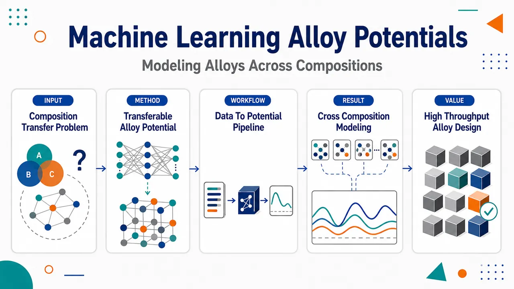
研究问题如何让机器学习势函数不再局限于单一固定合金成分，而是能够在多组分合金的连续成分空间中稳定描述原子间相互作用，用于模拟不同化学组成下的合金结构与性质。创新方法提出面向“跨成分迁移”的合金机器学习势：将势函数训练目标从单一化学计量比扩展到多组成范围，使同一个原子相互作用模型能够覆盖成分变化带来的局域化学环境差异；Aha 点是把合金成分本身视为连续可泛化的建模维度，而不是为每个成分单独训练势函数。工作流程输入多组分合金在不同化学组成下的原子构型与相互作用数据；用机器学习势学习元素种类、局域原子环境与能量/力之间的映射关系；在跨成分空间中验证势函数的可迁移性；输出可用于不同合金组成模拟的统一势函数模型。关键结果论文声称获得了可用于跨成分合金模拟的机器学习势函数，能够在不同化学组成之间保持对原子相互作用的描述能力；但摘要未提供具体合金体系、误差数值、第一性原理对比、传统势函数基准或具体性能提升幅度。应用价值该研究可为高通量合金设计、复杂多主元合金模拟、连续成分相图探索和成分优化提供更通用的原子级模拟工具，减少为每个合金成分单独构建势函数的成本。核心概览
该论文属于机器学习原子势/计算材料学方向，旨在构建可覆盖合金全成分范围的机器学习势，使其能在不同组成之间保持对原子相互作用的可迁移描述。
方法要点
- 以合金体系为对象，目标是训练适用于“全成分范围”的机器学习势。
- 强调模型在不同组成之间的可迁移性，而非仅针对单一固定成分。
- 关注原子相互作用描述在成分变化下的一致性与泛化能力。
- 具体模型类型、训练数据来源、特征表示、主动学习或验证流程等摘要未详述。
关键结果
- 论文声称构建了面向合金全成分范围的机器学习势。
- 主要结论是该势可用于在不同合金组成间保持可迁移的原子相互作用描述。
- 摘要未给出具体合金体系、预测误差、与传统势或第一性原理的对比结果。
- 摘要也未详述其在相图、缺陷、力学性质或热力学性质等具体应用中的表现。
创新性判断
- 可能的新颖点在于将机器学习势从特定成分或局部成分范围推广到合金“全成分范围”，强化跨组成迁移能力。
- 相比常见针对固定化学计量比、特定相或窄成分窗口训练的势函数，该工作可能更强调成分泛化与统一建模框架。
- 若其确实能在不同组成间保持稳定精度，则对高通量合金设计、多组元合金模拟和成分空间探索具有潜在价值。
- 但由于摘要未详述模型架构、训练集覆盖策略和定量验证结果，其实际创新强度和性能优势仍无法确定。
-
05
📊 含图深析
📄 摘要：提出 UniFFBench，以 MinX 数据集评估通用机器学习力场的真实表现。数据覆盖 1500 多个矿物体系、85 种元素、0–5000 K 与 0–1000 GPa 条件，并包含部分占位等结构复杂性，目标是弥补仅用计算基准检验 UMLFF 难以反映实验场景的问题。
💡 亮点：UniFFBench 将通用机器学习力场评估从计算测试集扩展到实验相关矿物数据。1500 多体系、85 元素和极端温压范围使其成为检验材料模拟可迁移性的严苛基准。
📖 展开分析 + 配图
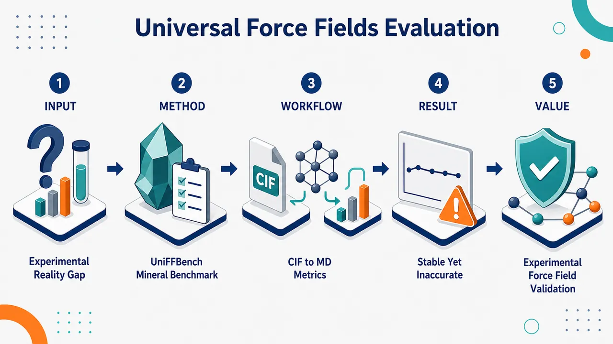
研究问题通用机器学习力场在DFT计算基准上表现亮眼，但它们是否能在真实实验矿物条件下稳定、准确地预测材料结构与力学性质？核心矛盾是“计算基准高分”与“实验测量可用性”之间的现实鸿沟。创新方法提出UniFFBench实验基准框架，用MinX实验矿物数据集直接挑战UMLFF：覆盖1500+矿物结构、85种元素、0–5000 K、0–1000 GPa、部分占位、无序结构和实验弹性张量。Aha点是跳出DFT自我验证循环，把模型放到真实实验测量和有限温度MD环境中检验。工作流程输入实验CIF矿物结构与实验性质数据；清洗并标准化空间群、元素命名和实验温压信息；构建MinX-EQ、MinX-HTP、MinX-POcc、MinX-EM四类测试集；对CHGNet、M3GNet、MACE、MatterSim、SevenNet、Orb等力场运行结构最小化与50 ps NPT分子动力学；计算密度、晶格参数、RDF、键长、MD完成率和弹性张量；将预测结果与实验测量逐项对比。关键结果Orb与MatterSim在多个MinX子集上达到100% MD完成率，而CHGNet和M3GNet失败率超过85%；稳定模型的密度和晶格误差通常接近或低于10%，但仍超过实际应用要求的±2–3%密度阈值；弹性张量普遍预测较差，Orb虽结构稳定但弹性张量MAPE超过80%；误差模式更强烈地指向训练数据偏置和高阶响应缺失，而不是单纯模型架构差异。应用价值为材料发现中的机器学习力场建立面向实验真实性的评估标准，提醒研究者不能只依赖DFT能量/力基准；推动下一代UMLFF同时学习能量、力、应力、弹性、声子和实验性质；有助于筛除在真实矿物、极端温压、无序结构和力学预测中不可靠的模型。第一部分：核心概览 (Overview)
UniFFBench 建立了面向实验测量的通用机器学习力场评估框架，核心贡献在于用 MinX 数据集系统检验 UMLFF 在真实矿物体系中的可靠性：覆盖 1,500+ 矿物结构、85 种元素、0–5000 K、0–1000 GPa、部分占位、无序结构、弹性张量。六个先进 UMLFF 的评估揭示出显著 reality gap：DFT 基准表现优异并不等价于实验条件下稳定、准确、可用。结果显示，训练数据代表性比模型架构更强地支配误差，结构稳定性与力学性质准确性相互脱钩，现有 UMLFF 仍难满足材料发现中的实用精度阈值。
---
第二部分：结构化快速回顾
《Evaluating Universal Machine Learning Force Fields Against Experimental Measurements》（None，）
背景
通用机器学习力场旨在以接近量子精度支持跨元素周期表的快速原子模拟，但现有评估主要依赖 DFT 派生计算基准，缺乏实验验证，导致模型在基准上成功却不一定适用于真实材料条件。
方法
构建 UniFFBench 框架与 MinX 数据集，包含约 1,500 个实验矿物体系，划分为 MinX-EQ、MinX-HTP、MinX-POcc、MinX-EM 四个子集。评估 CHGNet、M3GNet、MACE、MatterSim、SevenNet、Orb，并扩展评估 UMA、Mace-OMat。指标覆盖 MD 稳定性、密度、晶格参数、RDF、键长、弹性张量。
结果
Orb 与 MatterSim 在 MinX-EQ、MinX-HTP、MinX-POcc 上达到 100% MD 完成率；CHGNet 与 M3GNet 失败率超过 85%。稳定模型的密度与晶格 MAPE 通常低于或接近 10%，但仍高于实际应用所需的 ±2–3% 密度误差阈值。弹性张量预测普遍较差，尤其 C44、C66；Orb 结构稳定但弹性张量 MAPE 超过 80%。
讨论
UMLFF 的主要瓶颈不是单纯架构差异，而是训练目标与训练数据偏置。现有训练多集中于 0 K 能量与力，难以捕捉有限温度下的热膨胀、非谐效应与能量—应变二阶响应。
局限
MinX 目前主要覆盖天然矿物，对合金、玻璃、非晶、二维材料等类别的外推仍有限；力学性质主要聚焦弹性张量，尚未系统覆盖热导率、粘度、电导率等实验性质。
结论
实验基准显示当前 UMLFF 尚未达到真正“通用”水平。下一代 UMLFF 需要同时面向能量、力、应力、弹性、声子、实验性质进行训练与验证，并将实验测量纳入标准评估流程。
---
第三部分：逐章节冷凝解析 (Section-by-Section Condensing)
Abstract
Experimental grounding defines the central benchmark shift
UniFFBench 的核心目标是将 UMLFF 评估从纯计算基准转向实验测量验证。摘要明确指出，UMLFF 虽被期待革新材料模拟，但已有评估“可能不反映真实表现”，即 *"their evaluation has been limited to computational benchmarks that may not reflect real-world performance."* 该框架通过实验参考值评估模型在真实矿物体系中的泛化能力。
MinX provides large-scale experimental diversity
MinX 数据集包含 1,500+ mineral systems，覆盖 85 elements，热力学条件达到 0–5000 K 与 0–1000 GPa，并包含部分占位与结构无序。摘要给出的关键信息是：*"a diverse collection of 1,500+ mineral systems spanning 85 elements, extreme thermodynamic conditions (0–5000 K, 0–1000 GPa), and structural complexity, including partial occupancy and disorder."*
Reality gap is the main empirical finding
六个先进 UMLFF 的系统评估显示出显著 reality gap：计算基准上的高性能无法保证实验复杂性下的准确性。摘要中的直接表述为：*"models achieving impressive performance on computational benchmarks often fail when confronted with experimental complexity."*
Practical density accuracy remains unmet
即使最佳模型也无法达到实际应用所需的密度预测精度。摘要明确指出：*"Even the best-performing models exhibit higher density prediction error than the threshold required for practical applications."* 这意味着模型稳定运行并不等于满足工程或材料筛选需求。
Training representation dominates errors
误差与训练数据代表性强相关，而非简单由模型形式决定。摘要中关键判断是：*"prediction errors correlating with training data representation rather than the modeling method."* 这一点将论文的创新点从“谁的模型更好”推进到“现有训练范式是否足够”。
---
1 Main
Computational promise requires experimentally relevant accuracy
UMLFF 的目标是以接近量子精度实现快速原子模拟，服务材料发现；但真实影响依赖于其在物理相关条件下预测材料行为的能力。原文指出：*"Translating the computational promise of universal machine learning force fields (UMLFFs), that is, atomistic simulations with quantum accuracy... to real-world impact requires them to accurately predict material behavior under physically relevant conditions."* 这里的“physically relevant conditions”指有限温度、压力、无序、动态响应等真实实验环境。
Current evaluation creates training-evaluation circularity
当前 UMLFF 主要用 DFT 数据集训练，并在相似的 DFT 派生性质上评估，形成潜在循环验证。关键引述为：*"This creates a potential training-evaluation circularity where models learn to reproduce DFT predictions and are validated against similar DFT-computed properties."* 这种循环导致模型可能只学会复现 DFT，而非复现实验材料行为。
State-of-the-art UMLFFs are trained exclusively on DFT targets
被评估或讨论的先进模型包括 CHGNet、M3GNet、MACE、MatterSim、SevenNet、Orb。原文指出：*"State-of-the-art models, including CHGNet, M3GNet, MACE, MatterSim, SevenNet, and Orb, are exclusively trained on DFT datasets."* 虽然晶体结构可能源于 ICSD 等实验数据库，但目标标签仍是 DFT 的能量、力、应力：*"target properties (energies, forces, stresses) are computed via DFT."*
Experimental validation is virtually absent despite many UMLFFs
尽管已有超过 20 个 UMLFF 和大量计算基准，系统实验验证仍几乎缺失。原文表述为：*"In spite of over 20 presently available UMLFFs and numerous computational benchmarks, systematic validation of these force fields against experimental measurements under realistic conditions remains virtually absent."* 这构成 UniFFBench 的直接问题动机。
Conventional benchmarks neglect dynamic and disordered realism
现有协议偏重静态构型的能量与力误差，忽略真实材料中的热压效应、结构无序、热膨胀与机械响应。原文指出：*"Existing evaluation protocols focus predominantly on energy and force prediction errors for static configurations, neglecting essential aspects required for practical applications."* 这些被忽略的因素恰恰决定材料性能。
UniFFBench integrates four complementary experimental subsets
MinX 被组织为四个子集：MinX-EQ 用于环境条件，MinX-HTP 用于极端热力学环境，MinX-POcc 用于部分占位与成分无序，MinX-EM 用于弹性性质验证。原文概括为：*"∼1,500 experimentally determined mineral structures organized into four complementary subsets that systematically probe distinct aspects of materials behavior."*
Evaluation extends beyond energy and force metrics
UniFFBench 不局限于能量与力，而是评估 MD 稳定性、有限温度结构保真度、键长精度、弹性性质预测。原文为：*"Our evaluation extends beyond conventional energy and force metrics to assess MD simulation stability, structural fidelity at finite temperatures, bond length accuracy, and elastic property prediction capabilities."*
Mechanical accuracy requires higher-order derivative information
结构稳定性与力学性质准确性存在明显脱钩，暗示训练中仅包含能量与力不足以捕捉弹性响应。原文指出：*"current training protocols require modification to incorporate higher-order derivative information beyond energies and forces."* 弹性张量本质上涉及能量对应变的二阶导数。
---
2 Results
2.1 UniFFBench Framework
Three-component framework standardizes experimental UMLFF evaluation
UniFFBench 包含三部分：六个 UMLFF、MinX 实验矿物数据集、综合评估指标。图 1 说明其结构：*"The framework integrates three core components: six state-of-the-art UMLFF models... the MinX dataset... and comprehensive evaluation metrics."* 六个模型为 CHGNet、M3GNet、MACE、MatterSim、SevenNet、Orb。
MinX subsets isolate distinct real-world challenges
MinX 约包含 1,500 个矿物结构，分为 MinX-EQ、MinX-HTP、MinX-POcc、MinX-EM。原文描述为：*"approximately 1,500 carefully curated mineral structures organized into four complementary subsets."* 每个子集分别考察环境条件、极端热压、部分占位、弹性性质。
Metrics span structural, atomic, dynamic, and mechanical performance
评估指标覆盖从晶格与密度到 RDF、键长、MD 稳定性、弹性张量。原文指出：*"structural fidelity through lattice parameters and density accuracy, atomic-scale organization via radial distribution functions and bond length analysis, dynamic stability through finite-temperature MD simulations, and mechanical response via elastic tensor prediction."*
MinX is compositionally more complex than MPtrj
与常用训练集 MPtrj 相比，MinX 在单个结构中元素数更多。MPtrj 每个结构最多 9 种元素，MinX 可达 23 种元素。原文为：*"MPtrj structures exhibit limited compositional diversity with a maximum of 9 unique elements per structure, whereas MinX minerals contain up to 23 distinct elements."*
MinX unit cells are substantially larger
MinX 中许多矿物晶胞含有数百个原子，远大于常规计算训练构型。原文指出：*"MinX unit cells contain substantially larger numbers of atoms—often hundreds compared to typical MPtrj configurations."* 大晶胞提升了结构复杂性与计算挑战。
MinX-HTP tests robustness outside standard ambient conditions
MinX-HTP 覆盖宽温压范围，用于测试模型在非训练常见条件下的鲁棒性。原文为：*"The MinX-HTP subset further challenges model performance under extreme thermodynamic conditions spanning wide temperature and pressure ranges."*
Training data show elemental frequency biases
图 2 指出 MPtrj 对特定元素族存在偏置，包括 H、Li、Mg、O、F、S。图注中写道：*"revealing significant compositional biases in current training data toward specific element families (H, Li, Mg, O, F, S)."* 这种偏置后来被键长误差分析证实会影响模型泛化。
---
2.2 MD simulation stability
Failure is defined by numerical instability or physically meaningless error
MD 失败有两个判据：无法完成 50 ps 轨迹，或完成但相对实验误差超过 100%。原文定义为：*"Simulation failures in our benchmark are defined by two criteria: (1) inability to complete the full 50 ps MD trajectory due to numerical instabilities... or (2) completion with property prediction errors exceeding 100% relative to experimental reference values."*
The 100% threshold filters extreme outliers without changing conclusions
100% 误差阈值用于排除物理上无意义的模拟结果，并避免极端离群点扭曲统计。原文指出：*"The 100% error threshold ensures our evaluation reflects model performance on physically meaningful predictions."* 敏感性分析使用 150%、250%、500% 阈值，结论保持稳健：*"sensitivity analysis using alternative thresholds (150%, 250%, 500%) demonstrates that our conclusions remain robust."*
Orb and MatterSim reach perfect completion
Orb 与 MatterSim 在所有实验条件下均达到 100% simulation completion rates。原文为：*"Orb and MatterSim demonstrate strong robustness, achieving 100% simulation completion rates across all experimental conditions."* 这表明两者至少在数值稳定性上明显优于其他模型。
CHGNet and M3GNet fail on most realistic structures
CHGNet 与 M3GNet 在所有数据集上失败率超过 85%。原文指出：*"CHGNet and M3GNet suffer failure rates exceeding 85% across all datasets."* 该结果强烈削弱其在真实矿物有限温度模拟中的实用性。
MACE and SevenNet show intermediate robustness
MACE 与 SevenNet 完成率从 MinX-HTP 的约 95% 降至 MinX-POcc 的约 75%。原文为：*"MACE and SevenNet show intermediate performance, with completion rates degrading from ∼95% for MinX-HTP to ∼75% for MinX-POcc."* 部分占位与成分无序是主要困难来源。
Unseen interactions can produce extreme forces
失败机制包括异常大力、键断裂、原子重叠或特定化学体系精度不足。原文给出具体阈值：*"unphysically large predicted forces (>100 eV/Å) arising due to interactions that are unseen in the training data."* 这说明训练分布外相互作用会直接破坏积分稳定性。
Early energy-force errors do not predict long-term stability
初始平衡阶段的标准能量与力误差不能可靠预警后续失败。原文指出：*"Standard energy and force error metrics during initial equilibration stages show poor correlation with subsequent simulation stability."* 因而传统短程误差指标会高估模型真实可靠性。
---
2.3 Structural Accuracy
Stable models achieve sub-10% or near-10% structural MAPE
结构分析基于成功完成的 MD 模拟。Orb、MatterSim、SevenNet、MACE 在所有数据集上密度和晶格参数 MAPE 低于或约为 10%。原文为：*"The four most stable models—Orb, MatterSim, SevenNet, and MACE—achieve mean absolute percentage errors (MAPE) below or ∼10% for both density and lattice parameters across all datasets."*
Even best models miss practical density thresholds
尽管稳定模型表现较好，其密度误差仍超过实验可接受的 ±2–3%。原文明确指出：*"even these best-performing models systematically exceed the experimentally acceptable density variation threshold of ±2-3%."* 这构成实用部署层面的核心负面结论。
CHGNet and M3GNet remain inaccurate even when successful
CHGNet 与 M3GNet 在少数成功预测中仍出现超过 10% 的误差。原文为：*"CHGNet and M3GNet exhibit substantially higher errors exceeding 10% in their limited successful predictions."* 因此它们的问题并非仅仅是数值崩溃，也包括稳定结果的准确性不足。
Partial occupancy substantially increases errors
所有模型在 MinX-POcc 上误差升高，通常为环境条件的 2–3 倍。原文指出：*"All models demonstrate increased prediction errors for the MinX-POcc subset, with MAPE values typically 2–3 times higher than for ambient conditions."* 这说明部分占位和成分无序仍是 UMLFF 的薄弱点。
Larger training sets improve stability but not enough accuracy
额外评估 UMA 与 Mace-OMat 后发现，两者均有 100% 完成率，但密度 MAPE 分别为 5.34% 与 6.89%，仍超过应用阈值。原文写道：*"their density prediction errors (5.34% and 6.89% MAPE) still exceed practical application thresholds."* 增大训练数据量并不能自动解决实验准确性问题。
Consistent cross-architecture pattern indicates data bias
不同架构上出现相似误差模式，说明主要限制来自训练数据偏置，而非单一算法缺陷。原文为：*"The consistent pattern across all model architectures suggests that this limitation stems from training data bias rather than specific algorithmic deficiencies."*
---
2.4 Temporal Evolution of Errors during Simulations
Temporal analysis tracks density and RDF errors over 50 ps
误差随时间演化分析聚焦 density 与 radial distribution function (RDF)，主要展示 MinX-EQ，其他子集放入补充材料。原文说明：*"we analyze the structural evolution during MD simulations, focusing on density and radial distribution function (RDF) errors."*
CHGNet and M3GNet maintain >10% density errors throughout
CHGNet 与 M3GNet 的几乎所有模拟在整个 50 ps 窗口内密度误差超过 10%。原文指出：*"virtually all simulations displaying density errors exceeding 10% throughout the entire 50 ps simulation window."* 即使少数完成，仍无法保持结构完整性。
Stable models converge toward low-error equilibrated states
MACE、MatterSim、SevenNet、Orb 的大多数矿物体系密度误差收敛到 10% 以下。原文为：*"density errors consistently converging below 10% for the majority of mineral systems."* 成功模型表现出合理平衡行为：*"initial timesteps exhibit transient dynamics... successful models progressively converge to equilibrium states."*
RDF is a stringent test of local and medium-range order
RDF 同时捕捉短程化学键与中程结构相关性。原文强调：*"RDFs capture both short-range chemical bonding and medium-range structural correlations essential for material properties."* 因此 RDF 误差比单纯密度更能揭示原子空间组织是否真实。
CHGNet and M3GNet also fail RDF organization
RDF 演化同样显示 CHGNet 与 M3GNet 无法维持真实原子空间分布。原文为：*"CHGNet and M3GNet again demonstrate poor performance with consistently high RDF errors."*
Best models only reach lenient RDF threshold in about half of cases
较优模型约 50% 案例落入 50% RDF 误差阈值内，而该阈值被称为相对宽松。原文指出：*"The superior models achieve approximately 50% of cases within a 50% error threshold—a relatively lenient criterion."* 宽松原因是实验晶体结构与有限温度模拟 RDF 峰形天然不同。
Validation perturbs atomic positions by 0.005 Å
RDF 比较协议中对原子位置加入 0.005 Å 扰动，以公平比较尖锐实验峰和热展宽模拟峰。原文为：*"perturbs atomic positions by 0.005 Å to enable fair comparison between sharp experimental peaks and thermally broadened simulation profiles."*
Subset-size tests confirm statistical robustness
对 100、500、1,000 个矿物的抽样评估显示模型排名与关键结论稳定。原文指出：*"performance... model rankings, and key conclusions... hold across all subsets of 100, 500, and 1,000 minerals."* 因此 MinX 的结论不依赖单一大样本偶然性。
---
2.5 Elastic Tensor Analysis
Elastic tensors test generalization beyond training targets
弹性张量未被显式训练，因此是对 UMLFF 泛化能力的严格检验。原文指出：*"they are not explicitly trained on elastic tensors, thereby providing a true test of their generalizability beyond energy and force prediction."*
MinX-EM contains 100 minerals with experimental elastic tensors
弹性分析使用 MinX-EM 的 100 个矿物，通过能量最小化和沿晶体学方向施加应变计算弹性系数，并与实验测量比较。原文为：*"We computed elastic coefficients for 100 minerals in the MinX-EM dataset through systematic energy minimization followed by strain application."*
C11 is predicted better than shear-related components
多数稳定模型在 C11 上 MAPE 为 20–25%，但其他分量逐渐变差，尤其 C44、C66。原文写道：*"C11 predictions achieve reasonable mean absolute percentage errors (MAPE) of 20-25% for most stable models... accuracy degrades progressively for other components, with C44 and C66 showing particularly poor performance."*
UMA and Mace-OMat minimize robustly but predict elasticity poorly
UMA 与 Mace-OMat 完成率分别为 98% 与 96%，说明能量最小化稳健；但弹性张量 MAPE 仍达 20–45%。原文为：*"high completion rates (98% for UMA, 96% for Mace-OMat)... MAPE values ranging from 20–45% across different tensor components."*
Orb is structurally stable but elastically unreliable
Orb 在结构稳定性、密度和键长上表现优秀，却在所有弹性张量分量上失败，MAPE 持续超过 80%，C66 达 100%。原文指出：*"Orb—despite exceptional performance in structural stability, density accuracy, and bond length prediction—exhibits failure across all elastic tensor components, with MAPE values consistently exceeding 80% and reaching 100% for C66."*
Direct force prediction may compromise second-derivative physics
Orb 直接预测力而非由能量梯度计算力，这可能削弱对弹性所需二阶导数的捕捉。原文为：*"Orb directly predicts forces rather than computing gradients of energy functions, which may compromise its ability to accurately capture the second-order derivatives of the potential energy surface required for elastic property prediction."*
Large datasets do not guarantee elastic accuracy
UMA 使用约 500M structures from OMat24/OMol25 训练，但 Young’s modulus 与 shear modulus MAPE 分别高达 79.2% 与 77.3%。原文为：*"UMA—trained on one of the largest datasets (∼500M structures from OMat24/OMol25)—exhibits some of the poorest predictions for Young’s modulus (MAPE: 79.2%) and shear modulus (MAPE: 77.3%)."*
Elastic prediction requires subtle energy-strain relationships
结果说明当前训练范式采样构型空间可以减少灾难性失败，但不足以学习弹性响应。原文指出：*"they may not adequately capture the subtle energy-strain relationships and anharmonic effects critical for elastic property prediction."*
Best elastic tensor MAPE remains high
即使最佳模型，单个弹性张量分量 MAPE 仍在 22–46%。原文写道：*"individual elastic tensor components... demonstrate poor accuracy with MAPE values ranging from 22-46% even for the best-performing models."*
---
2.6 Failure Analysis
Bond length accuracy diagnoses force-field failure mechanisms
键长精度被用作主要诊断，因为原子间距离控制反应性、相稳定性和力学响应。原文为：*"Bond length accuracy serves as the primary diagnostic, as interatomic distances govern chemical reactivity, phase stability, and mechanical response."*
Oxygen-containing bonds show systematic low errors
所有模型中含氧键误差普遍较低，形成热图中的垂直带。原文指出：*"bonds involving oxygen display consistently low errors across all evaluated UMLFFs."* 图注也强调：*"low bond error is observed for every element bonded with oxygen confirming the training data bias."*
MPtrj oxide bias explains oxygen performance
MPtrj 及其衍生训练集主要由氧化物体系构成，因此模型擅长含氧原子对。原文为：*"MPtrj and its derivatives are predominantly composed of oxide-based systems, so models trained on these datasets excel at oxygen-containing pairs."*
Atomic-pair frequency correlates with lower bond errors
MPtrj 中高频原子对通常误差较低，低频原子对误差更高。原文指出：*"frequently encountered pairs exhibit lower errors, while underrepresented pairs suffer substantially higher errors."* 但频率只是必要条件不是充分条件：*"Pair frequency is, however, a necessary condition for accuracy rather than a sufficient one."*
Hubbard U creates incompatible reference surfaces
某些过渡金属对即使高频仍误差较大，原因与 Hubbard+U 选择性应用有关；V、W、Fe、Ni、Co、Cr、Mo、Mn 只有在 O 或 F 存在时应用 U。原文为：*"selective application of Hubbard+U corrections to metals (V, W, Fe, Ni, Co, Cr, Mo, Mn) only in the presence of O or F."* 这会产生两个不兼容势能面：*"two incompatible potential energy surfaces in the reference DFT data—a low-energy PBE surface and a high-energy PBE+U surface."*
UMLFFs underperform DFT on derived properties
在 10 个矿物子集上，UMLFF 平均密度误差 5.2%，约为 DFT 2.5% 的 2–3 倍。原文指出：*"UMLFFs exhibit average density errors of 5.2%, roughly 2–3× larger than the 2.5% DFT errors."* 对 Calcite 与 Lead 的剪切模量误差分别为 188.6% 与 −537.2%，而对应 DFT 误差仅 2.0% 与 14.7%：*"shear modulus errors for Calcite (188.6%) and Lead (−537.2%) dwarf the corresponding DFT errors of 2.0% and 14.7%."*
Curvature analysis links noisy repulsion to MD instability
力—位移曲线曲率相对 Morse 势的平滑性用于量化相互作用平滑度。原文为：*"Interaction smoothness, quantified by the mean absolute curvature of the force-displacement curve relative to the analytically smooth Morse potential, correlates directly with MD stability."*
CHGNet and M3GNet have excessively noisy repulsive interactions
CHGNet 与 M3GNet 在排斥区曲率为 Morse 基线的 10²–10³ 倍，解释其超过 85% 的失败率。原文写道：*"CHGNet and M3GNet exhibit curvature values 10²–10³ times the Morse baseline in the repulsive regime... explaining their >85% failure rates."*
Orb has smooth interactions but poor elastic gradients
Orb 接近 Morse 平滑度，因此轨迹完成率完美；但平滑力—位移曲线不保证力梯度准确。原文指出：*"Orb, by contrast, approaches Morse-level smoothness throughout, consistent with its perfect trajectory completion."* 同时：*"Smooth force-displacement curves do not, however, guarantee accurate force gradients."*
Elastic tensors require second derivatives
弹性张量需要势能面对 应变 的二阶导数，即 ∂²E/∂ε²。原文为：*"Elastic tensor prediction requires second derivatives of the potential energy surface (∂²E/∂ε²)."* 模型可准确插值力，却完全误表征力梯度：*"models can interpolate forces accurately while misrepresenting their gradients entirely."*
Current “universal” force fields are mostly familiar-space interpolators
训练数据偏向氧化物且缺少多样弹性变形物理，导致模型更像熟悉化学空间中的插值器，而非真正可迁移的物理模型。原文总结为：*"current “universal” force fields function largely as interpolation schemes within familiar chemical spaces rather than as physical models with genuine transferability."*
---
3 Discussion
Computational benchmark success does not transfer to experimental properties
常规计算基准与实验性质之间相关性差。形成能 MatBench Discovery 的 R² 与实验 Young’s modulus、shear modulus、density、lattice parameters 的 R² 交叉比较显示弱相关。原文为：*"Cross-referencing formation energy R² scores from MatBench Discovery against our experimentally measured R² values... reveals poor correlation across all models."*
Training-evaluation circularity is a central methodological flaw
当前模型学习 DFT 并用 DFT 验证，缺乏与可测材料行为的一致性检验。原文指出：*"models learn to reproduce DFT predictions and are validated against DFT-derived properties, with limited assessment of whether those predictions align with measurable material behavior."*
Architecture symmetry is not the main bottleneck
不变模型 Orb 与等变模型 MACE、SevenNet 都能实现结构稳定，说明瓶颈不在对称性处理本身。原文为：*"Invariant models such as Orb and equivariant models such as MACE and SevenNet both achieve structural stability, indicating that the bottleneck lies in training objectives rather than symmetry treatment."*
Direct force prediction helps stability but hurts elastic consistency
Orb 的去噪扩散预训练与直接力预测产生平滑势能面并保证轨迹完成，但因为力不来自一致能量函数，无法恢复弹性所需二阶导数。原文指出：*"Orb’s direct force prediction... yields smooth potential energy surfaces and perfect trajectory completion, yet fails for elastic properties because elastic constants require second energy derivatives."*
Scaling data improves stability more than practical accuracy
训练数据从约 1.5M structures (MPtrj) 扩展至约 500M (OMat24/OMol25) 明显提升稳定性，但密度误差仅降低 4–5×，仍高于 ±2.5% 实用阈值。原文写道：*"Scaling training data from ∼1.5M structures... to ∼500M... improves simulation stability markedly... yet density errors decrease by only 4–5× and remain above the ±2.5% threshold required for practical application."*
0 K energy-force training misses finite-temperature physics
当前训练关注 0 K 能量与力，未捕捉有限温度性质。原文为：*"Current training paradigms, focused on energy and force accuracy at 0 K, do not capture the physics needed for property prediction at finite temperature."* 缺失内容包括：*"thermal expansion, anharmonic effects, and the energy-strain relationships governing elastic response."*
UniFFBench breaks the DFT-only validation loop
UniFFBench 通过实验矿物结构、极端条件、部分占位和有限温度平衡打破循环验证。原文为：*"UniFFBench breaks this circularity by grounding evaluation in 1,500+ experimental mineral structures assessed under extreme thermodynamic conditions, partial occupancy, and finite-temperature equilibrium."*
Next-generation UMLFFs need multi-target physical supervision
下一代训练应同时优化能量、力、应力与实验性质，并显式约束高阶导数。原文建议：*"training protocols should simultaneously optimize energy, forces, and stresses alongside experimental properties, explicitly constraining higher-order derivatives through targets such as elastic tensor components, phonon dispersions, and Born stability criteria."*
Universal capability requires environmental, not only chemical, diversity
真正通用能力需要训练中包含不同配位、键合、热力学条件、部分占位与超过十元素组成，而不只是元素覆盖广。原文指出：*"achieving universal capability requires environmental diversity in training data, not only chemical diversity."*
Experimental validation should become standard practice
实验验证应与计算基准并列成为 UMLFF 评估标准。原文建议：*"experimental validation should sit alongside computational benchmarks as standard practice."* 同时需要报告完成率、应用精度阈值和计算资源透明度：*"standardized simulation completion reporting, application-specific accuracy thresholds, and computational resource transparency."*
Mineral focus limits generalization
UniFFBench 当前局限于天然矿物，对其他技术材料类别泛化有限。原文指出：*"the benchmark is currently limited to naturally occurring minerals, which may limit its generalizability to other technologically important material classes, such as alloys, glasses, amorphous systems, and two-dimensional materials."*
Mechanical evaluation should extend beyond elastic tensors
目前力学性质主要是弹性张量，未来应扩展到热膨胀、粘度、热导率、电导率等。原文为：*"could potentially extend to other experimentally measured properties, such as thermal expansion coefficients, viscosity, thermal conductivity, and electrical conductivity."*
---
4 Methods
4.1 Data collection and pre-processing
Crystal structures are mainly curated from AMCSD
矿物晶体结构主要来自 American Mineralogist Crystal Structure Database (AMCSD) 与文献。原文为：*"we curated experimentally determined crystal structures from the literature and primarily from the American Mineralogist Crystal Structure Database (AMCSD)."*
Metadata inconsistencies required manual standardization
AMCSD CIF 文件存在不完整元数据、元素命名不一致、空间群记法差异等问题，尤其是 Hermann–Mauguin 与 Hall 记法差异。原文指出：*"several inconsistencies were observed, including incomplete metadata, inconsistent element naming conventions, and variations in space group notation, particularly between the Hermann–Mauguin and Hall notations."*
Space groups were manually standardized for ASE parsing
为确保 ASE 内部空间群解析器可用，空间群表示被手动标准化。原文为：*"we manually standardized the space group representations across all structures to ensure successful parsing using ASE internal space group parser."*
Stoichiometric clean set contains 1,343 structures
经过筛除部分占位或结构缺陷后，得到 1,343 个化学计量且结构一致的矿物结构。原文写道：*"This filtering resulted in a curated set of 1,343 stoichiometric and structurally consistent mineral structures."*
MinX-HTP contains 75 systems across extreme conditions
MinX-HTP 包含 75 个系统，覆盖高温高压以及低温低压配置，用于测试鲁棒性与迁移性。原文为：*"we selected a subset of 75 systems, designated as MinX-HTP."* 该子集包含：*"both high-temperature/high-pressure as well as low-temperature/low-pressure."*
MinX-POcc contains 50 partially occupied CIFs
额外选择 50 个含部分占位的矿物 CIF，命名为 MinX-POcc。原文为：*"we selected additional 50 mineral CIF files containing partial occupancies named as MinX-POcc."*
Partial occupancy is converted into ordered supercells
部分占位结构通过占位分数分母的最小公倍数确定超胞大小，并寻找整数因子 nx, ny, nz 满足 nx·ny·nz = LCM。原文为：*"we computed the least common multiple (LCM) of the denominators of all occupancy fractions to determine the necessary supercell size."* 原子种类根据占位概率随机采样，确保每个位点只被一种原子占据：*"ensuring that each site was occupied by only one atom type."*
MinX-EM contains 100 structures with elastic tensors from MPOD
由于 AMCSD 多数矿物缺少弹性张量，MinX-EM 从 Materials Property Open Database (MPOD) 提取结构与弹性信息，包含 100 个 CIF 文件及对应弹性张量。原文为：*"we curated 100 CIF files along with their corresponding elastic tensor data using a Python-based API interface."*
---
4.2 MD Simulation
CIFs are curated for experimental conditions and physicochemical accuracy
MinX CIF 在提取过程中经过手动整理和验证，以确保温度、压力等实验条件与物理化学准确性。原文为：*"MinX crystallographic information files (CIFs) were manually curated and validated during extraction to ensure appropriate experimental conditions (including temperature and pressure), and physicochemical accuracy."*
Supercells are standardized to 100–200 atoms
模拟超胞被复制到 100–200 个原子规模；若原始结构已超过阈值则保持原尺寸。原文指出：*"unit cells were replicated to achieve system sizes of 100-200 atoms, with exceptions for structures inherently exceeding this threshold."*
Replication aims for near-cubic supercells
沿升序晶格向量顺序复制，以优化近似立方超胞并降低各向异性效应。原文为：*"Spatial replication proceeded sequentially along ascending lattice vectors to optimize toward cubic supercell... while preserving crystallographic integrity and minimizing anisotropic effects."*
Equilibration uses FIRE minimization and NPT MD
模拟流程包含双阶段平衡：先用 FIRE algorithm 进行 1000 steps 结构最小化，再进行 50 ps NPT equilibration。原文为：*"Initial structural minimization utilized the FIRE algorithm for 1000 steps, followed by a 50 ps NPT equilibration phase."*
Initial velocities use Maxwell-Boltzmann distributions
MD 初始速度根据实验温度使用 Maxwell-Boltzmann velocity distributions；未指定温度时采用 298 K。原文为：*"Phase-space sampling using MD simulations was initiated with Maxwell-Boltzmann velocity distributions at experimentally determined temperatures... with a canonical temperature of 298 K applied for unspecified cases."*
NPT uses Berendsen thermostat and barostat
NPT 平衡使用 Berendsen thermostat and barostat，维持实验报告压力或标准 1 atm。原文为：*"The NPT equilibration implemented the Berendsen thermostat and barostat, maintaining experimentally reported pressures or a standard state pressure of 1 atm."*
Production MD uses 50 ps and 1 fs timestep
生产 MD 运行 50 ps，积分时间步长 1 fs。原文给出：*"Production MD runs were executed for 50 ps with an integration timestep of 1 fs."*
---
第四部分：深度理解与语言支持 (Understanding & Nuance)
1. 术语解析
Universal machine learning force fields (UMLFFs)
字面意思是“通用机器学习力场”，但“universal”在这里不是已被证明的绝对通用，而是指模型设计目标为跨元素、跨化学体系、跨结构类型使用。论文的核心张力正是：这些力场名义上“universal”，但实验验证显示其更像训练分布附近的插值器。关键语境是 *"current “universal” force fields function largely as interpolation schemes within familiar chemical spaces rather than as physical models with genuine transferability."*
Reality gap
指计算基准成功与真实实验条件表现之间的断裂。该词在机器人学、仿真迁移、材料机器学习中常用于描述“仿真世界很好，现实世界失效”。这里的 reality gap 不是单一误差，而包括 MD 崩溃、密度不达标、RDF 错误、弹性张量失败等多层次失效。
Training-evaluation circularity
意为训练目标和评估目标同源，导致评估看似严格但实质上只检验模型是否复现训练标签体系。这里 UMLFF 在 DFT 能量、力、应力上训练，又用 DFT 派生基准评估，因此可能只是在学习 DFT 的内部规律，而不是实验材料行为。论文表述为 *"models learn to reproduce DFT predictions and are validated against similar DFT-computed properties."*
Partial occupancy
晶体学中指某个晶格位点不是总由同一种原子占据，而是以一定概率被不同原子或空位占据。例如某位点 70% 为 Mg、30% 为 Fe。对原子模拟而言，部分占位必须转化为具体有序构型或统计构型，因此会引入组合复杂性。MinX-POcc 正是用来测试 UMLFF 对这种真实矿物无序的处理能力。
Higher-order derivative information
能量的一阶导数对应力，二阶导数对应刚度、弹性、声子等响应。很多 UMLFF 训练能量和力，但弹性张量要求能量对应变的二阶导数 ∂²E/∂ε²。因此一个模型可以力预测平滑、MD 稳定，却在弹性性质上失败。
---
2. 疑难查证：为什么“MD 稳定”不等于“材料性质准确”？
MD 稳定主要要求模型在积分过程中不给出灾难性错误力，例如不会产生巨大排斥力、原子重叠或键断裂。稳定性更依赖势能面局部是否平滑，尤其短程排斥区是否数值可积。
材料性质准确则要求势能面的形状在物理上正确。以弹性张量为例，小应变下能量变化可写作近似二次形式：
[
E(ǎrepsilon) approx E₀ + frac12 C ǎrepsilon²
]
其中 (C) 来自能量对应变的二阶导数。一个模型可以给出足够平滑的一阶力，使 MD 不崩溃；但只要能量—应变曲线的曲率错误，弹性常数就会严重偏离。Orb 的结果正好说明这一点：轨迹完成率完美，但弹性张量 MAPE 超过 80%，C66 达 100%。
---
3. 疑难查证：为什么 DFT 训练集偏向氧化物会影响“通用性”？
如果训练集中大量结构是氧化物，模型会频繁看到 O–Metal、O–Si、O–Mg 等键，因此这些相互作用的力和能量形状被学习得更充分。相反，少见原子对、复杂多元素环境、无氧配位、部分占位附近的局部构型缺乏训练样本，模型只能外推。
更微妙的问题是 Hubbard+U：某些金属在有 O 或 F 时使用 PBE+U，在没有 O/F 时使用 PBE。这等于同一种金属元素可能出现在两个不同参考势能面中。机器学习模型试图用一个连续函数拟合两个不一致的参考体系，就可能产生非物理势垒或噪声排斥墙，最终导致 MD 不稳定或性质错误。
---
第五部分：创新评估与关联 (Synthesis & Novelty)
1. 创新性判断
从 DFT 基准转向实验基准
过去 2–5 年 UMLFF 工作的主流评估集中于 DFT 能量、力、应力误差，例如 Materials Project、MPtrj、OC20/OC22、Alexandria、MatBench Discovery 等计算数据集。UniFFBench 的新颖性在于将评估锚定到实验测量，并直接检验密度、晶格、RDF、MD 稳定性、弹性张量等实际可用性质。
首次大规模覆盖真实矿物复杂性
MinX 不只是增加样本数，而是系统纳入真实矿物中常见但计算训练集中不足的复杂性：最多 23 种元素/结构、数百原子晶胞、0–5000 K、0–1000 GPa、部分占位、弹性张量实验值。这比常见 DFT 静态构型基准更接近材料科学中的真实使用场景。
揭示“稳定性—性质准确性”脱钩
既有研究常把 MD 能跑、能量/力误差低视为模型可靠的主要证据。UniFFBench 显示这种判断不充分：Orb 与 MatterSim 可高度稳定，但弹性张量或密度仍不满足实用阈值；UMA 和 Mace-OMat 使用超大训练集也未解决弹性预测问题。这一发现明确指出下一代 UMLFF 不能只优化一阶量。
将训练数据代表性定位为核心误差来源
论文不仅比较模型排名，还通过键长热图、原子对频率、氧化物偏置、Hubbard+U 不一致势能面、曲率分析解释失败机制。创新点在于把“模型失效”追溯到训练数据分布、参考标签不一致和高阶响应缺失，而非简单归因于某个架构优劣。
提出面向下一代 UMLFF 的评估范式
UniFFBench 给出的方向具有方法论意义：未来 UMLFF 需要联合训练 energy、forces、stresses、experimental properties，并加入 elastic tensors、phonon dispersions、Born stability criteria 等高阶物理约束。实验验证不再是补充材料，而应成为与计算基准并列的标准流程。
-
06
📊 含图深析
📄 摘要：npj Computational Materials 论文讨论密度泛函理论结果对输入、数值设置或结构扰动的超敏感性，并面向机器学习数据可靠性提出处理策略。题录未给出详细摘要，因此具体测试体系、误差量化方式和模型改进幅度未披露。
💡 亮点：DFT 标签的超敏感性会直接污染机器学习势或性质模型的训练目标。该工作把可靠数据生成作为核心问题，对高通量材料学习和可复现基准尤其关键。
📖 展开分析 + 配图
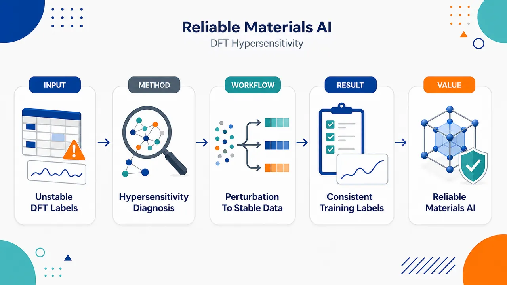
研究问题DFT 计算像一台对旋钮极度敏感的“标签生成机器”：微小的计算设置差异或数值扰动，就可能让能量、结构或性质标签发生不稳定变化，从而污染机器学习训练数据，导致模型学习到噪声而非真实物理规律。创新方法将 DFT 的数值超敏性从传统计算误差问题，重新定义为机器学习数据可靠性问题；核心 Aha 点是：不是只优化模型结构或扩大数据集，而是回到标签源头，识别并缓解由 DFT 设置扰动引发的标签漂移，构建更一致、更可复现的 DFT-ML 数据管线。工作流程输入材料或分子体系及其 DFT 计算设置；对计算参数或数值条件施加微小扰动；观察输出标签是否发生异常跳变或不一致；定位对扰动高度敏感的计算样本或设置；通过筛除、标记或稳定化处理降低标签噪声；最终生成更可靠的机器学习训练数据集。关键结果论文指出 DFT 标签并非总是稳定可靠：细小设置变化可能造成明显标签不一致；这种超敏性会直接削弱机器学习训练数据质量；识别或降低超敏性后，可提升 DFT 数据集的一致性、可复现性和下游模型可信度。摘要未给出具体定量提升幅度。应用价值为材料发现、量子化学建模和高通量计算中的机器学习提供更干净的训练标签；帮助研究者避免用不稳定 DFT 结果训练模型；提升 AI 预测材料性质、筛选候选材料和构建科学数据库时的可靠性。核心概览
本文属于计算材料/量子化学数据驱动机器学习方向，分析密度泛函理论（DFT）结果对计算设置与扰动的超敏感性及其对机器学习训练可靠性的影响，并提出相应的数据生成与模型学习处理策略。
方法要点
- 关注 DFT 计算结果在不同设置或微小扰动下可能出现的超敏感性问题。
- 分析这种超敏感性如何影响机器学习模型的训练数据质量与学习稳定性。
- 提出用于提高可靠数据生成的处理策略。
- 提出用于提升机器学习模型可靠性的学习策略。
- 具体策略形式、算法流程、数据集、模型架构与实验配置摘要未详述。
关键结果
- 摘要明确指出：DFT 结果可能对计算设置与扰动表现出超敏感性。
- 这种超敏感性会影响机器学习训练的可靠性。
- 论文提出了面向可靠数据生成和模型学习的处理策略。
- 策略的实际效果、定量提升幅度、验证任务和对比基线摘要未详述。
创新性判断
- 可能的新颖点在于：将 DFT 计算中的“超敏感性”作为影响机器学习训练可靠性的核心问题进行系统分析。
- 可能区别于一般只使用 DFT 数据训练模型的工作，该文更关注 DFT 数据本身的不稳定性及其向机器学习模型传播的风险。
- 其创新性还可能体现在同时从“数据生成”和“模型学习”两端提出处理策略，而非只改进模型结构。
- 但由于摘要未给出具体方法、实验对象和对比结果，上述创新性判断具有不确定性，无法确认其相对已有工作的实际突破程度。
-
07
📄 摘要：提出 SEA-PINN，在物理信息神经网络中引入类似压缩激励的注意力机制，动态重标定各层神经元重要性。其初始化高度稳定：20 个基准问题中 17 个初始方差近乎可忽略且初始损失显著降低；无需傅里叶特征嵌入或周期激活即可改善优化起点。
💡 亮点：SEA-PINN 用压缩激励式注意力稳定 PINN 初始化，在 17/20 个基准上实现近确定性低初始损失。该结构针对 PINN 训练不稳定这一 SciML 痛点给出可插拔方案。
📖 展开分析 + 配图
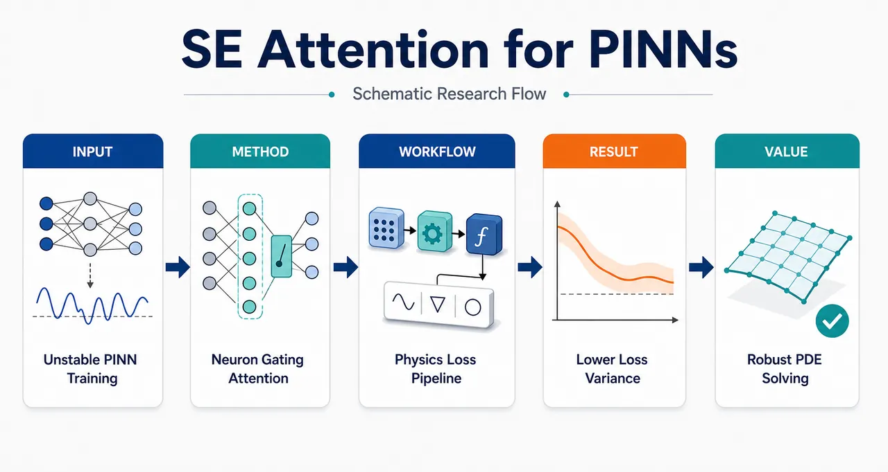
研究问题标准 PINN 在求解 PDE 时对随机初始化高度敏感：同一物理问题不同种子会出现损失大幅波动、早期收敛慢甚至不收敛；同时受谱偏置影响，难以稳定学习高频、多尺度、复杂流场等解。画面可表现为“摇晃的 PINN 网络”连接到高频波纹、PDE 残差和发散训练曲线。创新方法SEA-PINN 在每个隐藏层后加入类 Squeeze-Excitation 注意力模块：将整层神经元激活输入轻量 weight generator，生成逐神经元门控权重，再与原激活逐元素相乘，形式为 Y′ = X ⊙ σ(SqueezeExcitation(X))。Aha 点是把 CNN 的通道重标定改造成 PINN 层内神经元级动态门控，使网络在初始化时输出 u 及其导数接近零，从而天然降低零源项 PDE 和零边界条件损失。工作流程输入时空坐标与 PDE/边界/初始采样点；FNN 主干逐层计算隐藏激活；每层完整激活向量进入小型 MLP weight generator，经过 Tanh 与 Sigmoid 生成神经元权重；权重对激活逐元素重标定后传入下一层；最终输出 PDE 解 uθ，并通过自动微分计算 ut、ux、uxx 等导数；将 PDE residual、BC loss、IC loss 组成物理约束损失，优化后得到稳定 PDE 解。关键结果20 个 PDE 基准中，SEA-PINN 在 17/20 个问题上初始损失均值低于 FNN-PINN 和 TSA-PINN；第 10 epoch 损失方差在所有案例中小于 FNN-PINN，并在 18/20 个案例中比 TSA-PINN 低数个数量级；最终相对 L² error 在 13/20 个案例优于 FNN-PINN。代表性提升包括高频各向异性热传导 Case 7 误差降低 83.09%，后台阶 Navier–Stokes Case 11 降低 80.90%，Gray–Scott Case 17 降低 99.91%。应用价值SEA-PINN 是轻量、可插拔的 PINN 稳定化模块，不依赖 Fourier features 或周期激活即可增强高频、多尺度和复杂流体问题的求解可靠性；它能减少随机种子带来的训练不确定性、降低早期调参成本，并可叠加到现有 PINN 架构中，用于热传导、Navier–Stokes、反应扩散、高维 Poisson/Heat 等科学计算场景。第一部分：核心概览 (Overview)
SEA-PINN 将 Squeeze-Excitation-like attention 引入 Physics-Informed Neural Networks，以层内神经元为粒度动态生成权重并重标定激活。核心贡献在于显著改善 PINN 的初始化稳定性、早期收敛和跨随机种子鲁棒性：20 个 PDE 基准中 17 个初始损失更低，18 个相对 TSA-PINN 方差低数个数量级。该方法无需 Fourier features 或周期激活，仍在高频、多尺度、Navier–Stokes 等困难问题中取得竞争性精度，并可作为轻量插件增强现有 PINN 架构。
---
第二部分：结构化快速回顾
《Physics-Informed Neural Network with Squeeze-Excitation-like Attention》（None，）
背景
PINNs 通过将 PDE 残差、边界条件和初始条件写入损失函数，实现无网格、数据稀缺条件下的物理约束学习。但标准 FNN-PINN 存在训练不稳定、随机种子敏感、收敛慢、谱偏置、高频解难以学习等问题。
方法
SEA-PINN 在每个隐藏层后加入 Squeeze-Excitation-like attention：隐藏层全部神经元激活输入轻量 weight generator，生成逐神经元权重向量，再与原激活逐元素相乘。机制形式为
Y′ = X ⊙ σ(SqueezeExcitation(X))，实现输入依赖的神经元重要性重标定。
结果
20 个 PDE 基准中，SEA-PINN 在 17/20 个问题上初始损失均值低于 FNN-PINN 和 TSA-PINN；在所有案例中第 10 epoch 损失方差小于 FNN-PINN；最终相对 L² error 在 13/20 个案例优于 FNN-PINN。Case 7 高频热传导误差改善 83.09%，Case 11 后台阶 Navier–Stokes 改善 80.90%，Case 17 Gray–Scott 改善 99.91%。
讨论
SEA-PINN 的优势来自初始化时 uθ 及其导数均值和方差接近零，从而使零源项 PDE 和零边界条件天然接近满足。Jacobian 分析显示 SEA-PINN 具有更小的输出—输入梯度范数和更好的层间条件数，解释了低初始损失、低方差和稳定收敛。
局限
基准虽覆盖 20 个 PDE，但仍可能不足以代表真实复杂物理场景；weight generator 带来额外计算开销；超大规模、高维、强非线性 PDE 上的可扩展性仍需验证。
结论
SEA-PINN 是一种轻量、可插拔、稳定的 PINN 增强模块，通过层内神经元注意力提升非线性表达能力、优化初始化状态并增强训练可靠性，为物理约束神经网络提供了新的架构级改进方向。
---
第三部分：逐章节冷凝解析 (Section-by-Section Condensing)
Abstract
SEA-PINN introduces neuron-wise squeeze-excitation attention into PINNs
核心创新是将 Squeeze-Excitation-like attention mechanism 嵌入 physics-informed neural networks，使网络能够跨层动态调整神经元重要性。摘要直接定义贡献为：*"We introduce SEA-PINN, a novel architecture that incorporates a Squeeze-Excitation-like attention mechanism into physics-informed neural networks to dynamically recalibrate the importance of neurons across layers."* 这里的“importance of neurons”不是通道级 CNN 注意力，而是 PINN 隐藏层内的神经元级权重重标定。
Highly stable initialization is the central empirical signature
最突出的实证现象是初始化极其稳定。20 个基准问题中，SEA-PINN 在 17/20 个问题上表现出接近可忽略的方差和显著更低的初始损失：*"On 17 out of 20 benchmark problems, SEA-PINN exhibit nearly negligible variance and significantly reduced initial loss, establishing a quasi-deterministic and favorable starting point for optimization."* “quasi-deterministic” 表明不同随机种子下的初始行为高度一致，这直接针对 PINN 的随机初始化敏感性。
High-frequency performance is competitive without Fourier or periodic mechanisms
在高频问题 Case 7 中，SEA-PINN 无需 Fourier feature embeddings 或 periodic activation functions，仍取得相对 FNN-PINN 的 83% 改善；TSA-PINN 专门通过可学习 sinusoidal frequency 处理高频问题，改善约 90%。摘要明确指出：*"without employing Fourier feature embeddings or periodic activation functions, SEA-PINN attained competitive accuracy (83% vs. 90% improvement relative to FNN-PINN on the high-frequency case 7) as compared with TSA-PINN."*
SEA module can enhance other architectures
SEA-PINN 不是孤立替代架构，而是可插拔模块。将 SEA 机制集成到 TSA-PINN 后，性能进一步提升 42.49%：*"integrating SEA-PINN into TSA-PINN boosted performance by 42.49%."* 这说明 SEA 机制与频率学习机制可能互补。
Claimed role is lightweight representation and convergence enhancer
摘要将 SEA-PINN 定位为轻量插件，目标不是重构整个 PINN 框架，而是增强表达力、稳定性和收敛效率：*"These results underscore SEA-PINN as a lightweight plug-in module that enhances nonlinear representation power, promotes more robust and efficient convergence, and strengthens the overall reliability of physics-informed learning."*
---
I Introduction
PINNs combine neural representation and automatic differentiation
Physics-Informed Neural Networks 的基本价值在于结合深度网络表达能力与自动微分计算效率。引言表述为：*"These networks leverage the strong representational capability of deep neural networks and the computational efficiency of automatic differentiation."* 这使 PDE 解可表示为连续神经函数，并通过自动微分获得时间、空间导数。
PINNs emerged from older neural differential equation solvers but became prominent in modern DL frameworks
神经网络求解微分方程并非新概念，早期工作包括 Lee and Kang 1990、Meade Jr and Fernandez 1994、Dissanayake and Phan-Thien 1994、Lagaris et al. 1998；现代 PINN 的影响力主要来自 Raissi et al. 2019。原文概括为：*"The concept built on early neural network applications to differential equations ... but gained prominence after Raissi et al. advanced it within modern deep learning frameworks."*
PDEs and boundary conditions are encoded directly into the loss
PINN 的核心训练机制是将 partial differential equations 与 boundary conditions 加入损失函数：*"PINNs integrate partial differential equations (PDEs) and boundary conditions into the loss function, enabling neural networks to learn the underlying physics and generate accurate solutions."* 因此训练目标直接对应物理约束，而非纯监督拟合。
Mesh-free formulation helps complex geometry and high-dimensional settings
PINN 的 mesh-free property 允许在任意时空点采样，避免固定网格构造。原文强调：*"Their mesh-free property allows PINNs to handle complex geometries and irregular boundaries with ease, eliminating the need for predefined meshes and enabling sampling at arbitrary points in the solution domain."* 对高维问题尤其重要，因为网格离散会遭遇维数灾难和离散误差。
Self-supervised physics learning reduces dependence on expensive datasets
通过自动微分计算 PDE residual，PINN 可在数据稀缺甚至无数据环境下训练：*"PINNs employ automatic differentiation to compute PDE residuals, enabling self-supervised learning without the need for extensive and expensive datasets."* 这使其适合高保真仿真数据昂贵的物理问题。
PINNs have broad scientific applications
应用覆盖流体力学、固体力学、超材料设计、地震波模拟等领域。原文列举：*"PINNs have been successfully applied to a broad spectrum of scientific and engineering disciplines, encompassing fluid mechanics ... solid mechanics ... metamaterial design ... and seismic wave modeling."*
Standard PINNs lack generalization across PDE parameters and conditions
传统 PINN 通常针对单一 PDE 参数、初始条件或边界条件训练；条件变化后需要重新训练：*"The PINNs require retraining for each new set of PDE parameters, initial conditions, or boundary conditions."* 这是 PINN 相比 operator learning 的主要效率短板。
Operator learning reduces retraining but requires massive paired simulation data
DeepONet 和 Fourier Neural Operator 可学习 PDE 解算子，减少重复训练，但需要大量由高保真仿真生成的配对数据。原文指出：*"operator learning demands a huge amount of training data, which are the paired (initial condition, boundary condition, PDE parameters) and the evolution in solution space from high-fidelity physical simulations."*
Training instability and high-frequency degradation are central obstacles
AI for Science 中 PINN 的核心瓶颈是稳定性差：同一问题多次运行差异大，有些不收敛；高频解显著退化。原文直接表述：*"The applications of PINNs in AI for Science is hindered by critical stability issues: solutions for identical problems exhibit high variance across multiple runs, with some runs failing to converge entirely, while performance degrades significantly for problems involving high-frequency solutions."*
Spectral bias explains difficulty with high-frequency and sharp-gradient solutions
标准全连接网络倾向先学习低频成分，对高频、多尺度、尖锐梯度困难。原文称：*"Conventional PINNs prefer to learn low-frequency components first, while struggling to capture high-frequency, multi-scale, or sharp-gradient features."* 这一问题被命名为 spectral bias problem。
Fourier feature embeddings are a common high-frequency remedy
Fourier features 将输入映射到频率空间，提高高频表达能力。原文为：*"Fourier feature embeddings are used to map the solution into the frequency space, thereby enabling the network to capture high frequency components more effectively."* SEA-PINN 的重要性在于不依赖这一路径。
Existing architecture modifications include adaptive activations, CNNs, GNNs, Transformers, CPINNs, XPINNs
引言系统定位了 PINN 改进谱系：locally adaptive activation functions、CNN、GNN、Transformer、CPINNs、XPINNs。原文列举：*"employing locally adaptive activation functions ... integrating specialized network architectures, such as Convolutional Neural Networks (CNNs) ... Graph Neural Networks (GNNs) ... and Transformers..."* 以及：*"Conservative PINNs (CPINNs) ... and Extended PINNs (XPINNs) ... enable parallelization and multi-physics coupling by training independent networks on subdomains."*
Adaptive sampling and loss balancing address other failure modes
Residual-Based Adaptive Refinement (RAR) 将采样集中到高残差区域；时间因果性问题可用 Causal PINNs；多损失项梯度不平衡可用 adaptive loss weighting 或 gradient-statistics-based optimization。原文包括：*"adaptive sampling methods like Residual-Based Adaptive Refinement (RAR) focus computational resources on high-residual regions"*，以及：*"gradient imbalance resulting from the multi-component loss function ... has been mitigated via adaptive loss weighting..."*
Numerical precision can be a hidden PINN failure mode
FP32 精度不足可能导致数值下溢和过早收敛，FP64 可缓解。原文说明：*"insufficient arithmetic precision (e.g., FP32) can lead to premature convergence due to numerical underflow; upgrading to FP64 has been demonstrated to resolve this failure mode and enable accurate solutions."*
Persistent limitations motivate SEA-PINN
尽管已有改进，PINN 仍存在慢收敛和初始化敏感。原文总结：*"Despite these advances, fundamental limitations persist: the convergence speed of PINNs is slow, and the performance across multiple runs is highly dependent on the initialization points in the high-dimensional parameter space."* SEA-PINN 正是针对这两个痛点。
SEA-PINN adapts SENet from channels to neurons
原始 Squeeze-and-Excitation Network 用于 CNN 通道注意力，通过平均池化和 SE block 调整通道重要性。SEA-PINN 将其改到神经元级：*"In our SEA-PINN, we adapt this idea to the neuron level: for each hidden layer, the complete set of neuron outputs is taken as input to a lightweight squeeze-excitation weight generator, which produces a neuron-wise weight vector."*
Element-wise reweighting preserves FNN backbone while adding dynamic modulation
SEA-PINN 不改变标准 FNN-PINN 主干，只是在层间加入逐神经元权重乘法：*"These weights rescale the neuron activations through element-wise multiplication before they are passed to the next layer."* 这种设计是输入依赖、动态、低侵入式的架构增强。
Near-zero initialized outputs and derivatives lower PDE residuals
SEA-Net 表示的解 uθ(t, x⃗) 在不同随机种子与采样时空点上，函数值及导数如 ut, ux, uxx 具有近零均值和方差。原文指出：*"both the function values u and their derivatives of various orders ... have nearly zero mean and variance for sampled space-time coordinates across multiple runs with different random seeds."* 因 PDE residual 是这些项的线性组合，初始化时即可满足
δ = a0u + a1ut + a2ux + a3uxx + ⋯ ≈ 0。
SEA-PINN is especially advantageous for zero PDE residual and zero BC/IC targets
对零源项、零边界条件、零初始条件，SEA-PINN 在训练前已经接近满足；对非零条件也至少不弱于传统方法。原文写道：*"For cases involving non-zero initial conditions, boundary conditions, or source terms in PDEs, our network performs at least as well as traditional approaches."*
High-frequency handling without Fourier or periodic activation is emphasized
引言再次强调：*"without the need for periodic activation functions or Fourier transformations, the network demonstrates strong performance in handling high-frequency problems."* 这与 TSA-PINN、Fourier feature PINN 形成方法学差异。
---
II Results
Benchmark scale covers 20 solvable PDE problems
实验使用 20 个 solvable PDE problems for PINNs，并与 benchmark PINN model 比较。原文为：*"We evaluated SEA-PINN on the 20 solvable PDE problems for PINNs and compared the results with benchmark PINN model."* 这些问题覆盖 Burgers、Poisson、Heat、Navier–Stokes、Wave、Kuramoto–Sivashinsky、Gray–Scott、高维 Poisson/Heat 等。
---
II.1 Lower Initial Loss and Fluctuations Drive Better Convergence
Initial loss comparison uses 1000 independent runs per case
初始训练性能统计来自每个案例 1000 次独立运行，随机种子 1–1000。Fig. 1 图注明确：*"Distribution of the initial total training loss (first epoch) for FNN-PINN, SEA-PINN, and TSA-PINN across 20 benchmark cases, derived from 1000 independent runs per case (seeds 1-1000)."* 这使初始化稳定性比较具有统计可信度。
SEA-PINN has lower mean initial loss in 17 of 20 problems
SEA-PINN 在 17/20 个问题中初始损失均值显著低于 FNN-PINN 与 TSA-PINN：*"The mean loss values of SEA-PINN are notably lower than those of FNN-PINN and TSA-PINN in 17 out of the 20 problems examined."* 这表明优势不是个别案例，而是跨 PDE 家族普遍存在。
SEA-PINN initial loss variance is qualitatively negligible
SEA-PINN 的损失方差相对 FNN-PINN 和 TSA-PINN 近乎可忽略。原文称：*"Qualitatively, the loss variances of SEA-PINN are negligible relative to the other two methods."* 这一现象直接支持“quasi-deterministic initialization”。
Early analysis focuses on training loss because it is directly optimized
初期指标选择总 physics-informed training loss 及其分量，因为优化器直接最小化该量。原文说明：*"Here we focus on the total physics-informed training loss and its components, as this quantity is directly minimized during optimization and reveals how SEA-PINN balances PDE and boundary-condition terms at initialization and in the early phase of training."* 最终预测精度则通过测试集相对 L² error 评估。
At epoch 10 SEA-PINN variance is smaller than FNN-PINN in all cases
第 10 epoch 的损失方差以对数尺度比较，SEA-PINN 在所有案例中均小于 FNN-PINN：*"In all cases, the loss variance of our SEA-PINN is smaller than that of FNN-PINN, indicating superior stability in the initial state."* 且差异常为数个数量级：*"The variance of SEA-PINN differs by several orders of magnitude from that of FNN-PINN."*
TSA-PINN improves over FNN-PINN but remains much less stable than SEA-PINN
TSA-PINN 通过可调频率和动态斜率恢复增强 PINN，初始损失和方差较 FNN-PINN 更低，但分布仍宽。原文指出：*"Trainable Sine Activation PINN (TSA-PINN) exhibits lower initial loss and smaller variance compared to FNN-PINN. However, its distribution remains considerably wide."* SEA-PINN 在 18/20 个案例中相对 TSA-PINN 的损失方差低数个数量级：*"In 18 out of 20 cases, the loss variance of SEA-PINN is several orders of magnitude lower than that of TSA-PINN."*
SEA-PINN often starts below FNN-PINN after 5000 epochs
一个强烈结果是 SEA-PINN 的初始损失在许多案例中甚至低于 FNN-PINN 训练 5,000 epochs 后的损失。原文表述：*"The initial loss of our SEA-PINN is very small, in many cases, even smaller than FNN-PINN after trained for 5,000 epochs."* 这说明 SEA 架构改变了初始函数分布，而不是仅靠优化过程。
Fixed-seed training curves show persistent advantage over 5000 epochs
Fig. 2a 使用固定随机种子 seed = 1，比较 20 个 PDE 问题训练 5,000 epochs 的总损失。原文为：*"Fig. 2 a compares the total training loss of SEA-PINN and FNN-PINN for a fixed seed (seed = 1) across all 20 PDE problems."* 其他种子 10, 20, 30 见补充图 17–19。
SEA-PINN achieves lower final loss in 15 of 20 cases
总训练损失层面，SEA-PINN 在 15/20 个案例中最终损失低于 FNN-PINN，其余案例至少可比：*"Quantitatively, SEA-PINN achieves lower final loss than FNN-PINN in 15 out of the 20 cases, and is at least comparable in the remaining ones."* 这支持 SEA-PINN 不是只初始好，而是训练后仍保有优势。
Low-loss initialization indicates favorable loss-landscape region
作者将该现象解释为初始化进入更有利的 loss landscape 区域：*"This behavior indicates that SEA-PINN does not merely optimize faster, but also initializes in a more favorable region of the loss landscape."* 对 PINN 这类多目标非凸问题尤其关键。
Statistics of u, derivatives, and source term explain the initialization effect
Fig. 2b 对每个案例计算 predicted solution u、其导数、以及 PDE 源项 f 在采样点上的均值与标准差，比较 FNN-PINN、SEA-PINN、TSA-PINN。原文说明：*"For each case, we compute the means and standard deviations of the predicted solution u, its derivatives, and the source terms f appearing in the governing equations on the same set of sampling points."*
SEA-PINN terms cluster near low-mean low-variance region
Fig. 2b 中 SEA-PINN 点集中在左下角，表示 u 与导数的均值和标准差更小：*"the SEA-PINN points are concentrated near the lower-left corner, indicating smaller means and standard deviations than the other two networks."* 因 PDE residual 是这些项的组合，接近零的均值和方差直接带来小 residual。
Large external source terms can dominate residual and limit initialization benefits
Cases 3, 4, 6 中 FNN-PINN 与 SEA-PINN 初始损失均约 10³，原因是外部源项 f 均值和标准差大，且不依赖网络架构。原文写道：*"In Cases 3, 4, and 6, the initial losses of both FNN-PINN and SEA-PINN are on the order of 10³."* 以及：*"large means and standard deviations in the external source term f, which is independent of the network architecture."*
Case 18 shows source-term variance matters beyond mean
Case 18 的外部源项均值可与 Cases 3、4、15 比拟，但标准差低两个数量级，因此初始损失只有 10² 量级。原文为：*"Case 18 also contains an external source term with a mean comparable to those of Cases 3, 4, and 15, but its standard deviation is two orders of magnitude smaller, leading to a more moderate initial loss on the order of 10²."*
Case 17 illustrates relative advantage even when SEA-PINN statistics are not near zero
Case 17 中 SEA-PINN 点偏离左下角，但 FNN-PINN 更严重地向右上角偏移，导致 FNN-PINN 初始损失更大。原文说明：*"In Case 17 the SEA-PINN points are shifted away from the lower-left corner, but the FNN-PINN points move even further towards the upper-right."*
Zero target BC/IC terms remain low from initialization
补充表 2 显示，只要边界或初始条件目标为零，SEA-PINN 对应损失项从训练初期即保持低值，而 FNN-PINN 需要更长优化。原文为：*"whenever a boundary or initial condition is identically zero, the corresponding loss term of SEA-PINN remains low from the beginning, whereas FNN-PINN typically requires a longer optimization process to reduce the same term."*
---
II.2 Inherent Fulfillment of PDEs and BCs in SEA-PINN: Loss Dynamics and Balancing
Case 11 decomposes loss into 8 components
Case 11 是 Navier–Stokes Flow，Fig. 3 展示 8 个损失分量：3 个 PDE loss terms + 5 个 BC loss terms。原文为：*"Fig. 3 illustrates the training loss curves of eight components (3 PDE loss terms + 5 BC loss terms) for Case 11 (Navier-Stokes Flow) as functions of training epochs."*
SEA-PINN inherently satisfies 3 PDEs and 4 of 5 BCs at epoch 0
Case 11 中零边界条件 BC2–BC5 和零源项 PDE1–PDE3 在 epoch 0 即损失极小。原文指出：*"the loss components corresponding to zero boundary conditions (BC2-BC5) and zero source terms (PDE1-PDE3) begin with minimal values at epoch 0."* 结论是 SEA-PINN 无需训练即可近似满足 3 个 PDE 约束和 4/5 个边界条件：*"SEA-PINN inherently satisfies three PDEs and four out of five boundary conditions without requiring any training."*
Non-zero boundary condition BC1 is learned faster
Case 11 中唯一非零边界条件 BC1 的损失下降显著快于 FNN-PINN。原文为：*"For the non-zero boundary condition BC1, the loss of SEA-PINN decreases significantly faster compared to FNN-PINN."*
Temporary increase of other losses indicates multi-objective balancing
在优化 BC1 时，其他损失项短暂上升后下降，显示多损失项之间的平衡过程。原文描述：*"the losses of other components exhibit a brief increase before subsequently decreasing, indicating a balancing mechanism between minimizing BC1 loss and other loss terms."* 这体现 PINN 是典型 multi-task optimization problem。
SEA-PINN reduces effective training targets at initialization
由于多个 PDE/BC 目标在初始化即满足，SEA-PINN 实际需优化的有效目标更少。原文总结：*"since multiple objectives are inherently satisfied at initialization, our SEA-PINN begins with considerably fewer effective training targets, thereby facilitating more efficient optimization."*
FNN-PINN has higher component losses, slower convergence, and oscillations
标准 FNN-PINN 在各分量上初始损失更高、收敛更慢、训练中振荡更强。原文为：*"Traditional FNN-PINN initiates with substantially higher loss values across different components, exhibits slower convergence rates, and frequently displays pronounced oscillatory behavior during training."*
Supplementary evidence extends the component-wise pattern
除 Case 11 外，补充表 1 给出 5 个代表性基准案例的控制方程、区域、边界/初始条件；补充图 6–9 比较其他四个案例的全部损失分量；补充图 1–5 报告五个案例在 seed = 1–10 下的总损失。原文称：*"Supplementary Table 1 summarizes the governing equations, domains, and the corresponding boundary/initial conditions for five representative benchmark cases."* 以及：*"Supplementary Figs. 1–5 report the total training loss comparisons of the five cases over ten random seeds (seed = 1–10)."*
---
II.3 Smaller output–input gradient norms and better inter-layer conditioning
Jacobian analysis targets mechanistic explanation
为了理解 SEA-PINN 更稳定的初始化和收敛，研究分析 output–input Jacobian 与深层特征变换的条件性。原文为：*"To further understand why SEA-PINN exhibits more stable initialization and improved convergence, we analyze the Jacobian of the network output with respect to the input, as well as the conditioning of deep feature transformations."*
Output–input gradient norm is measured across 20 PDEs, 5 seeds, 1000 points
每个 PDE 案例、每个随机种子，从真实 collocation set 中随机选取 1,000 training points，计算输出对输入 Jacobian 的 Frobenius norm ‖∂f/∂x‖F。图注说明：*"For each case and each of the five random seeds, the Jacobian norm is first averaged over 1,000 randomly selected training points."*
SEA-PINN has lower mean Jacobian norms and smaller standard deviations in all cases
Fig. 4a 显示 SEA-PINN 在所有案例中输出—输入梯度范数均值更低，标准差显著更小：*"SEA-PINN consistently achieves lower mean gradient norms with substantially smaller standard deviations than FNN-PINN across all cases."* 这意味着初始化时输入输出映射更平滑、对扰动不敏感。
Lower Jacobian norm aligns with smaller initial losses
低输出—输入敏感性与 Fig. 1、Fig. 2 的初始低损失、低波动一致。原文解释：*"This indicates that SEA-PINN realizes a smoother and less sensitive input–output mapping at initialization, which is consistent with the smaller and less fluctuating initial losses reported in Figs. 1 and 2."*
Inter-layer conditioning is measured from first to ninth hidden layer
层间信息传播条件性通过从第一个隐藏层输出映射到第九个隐藏层输出的 Jacobian 条件数衡量。原文为：*"measuring the condition number of the Jacobian that maps the output of the first hidden layer to that of the ninth hidden layer."* 同样每个架构采样 1,000 training points，使用 5 independent random seeds。
SEA-PINN has uniformly smaller condition numbers and error bars
Fig. 4b 显示 SEA-PINN 的层间 Jacobian 条件数均值和误差条均小于 FNN-PINN：*"SEA-PINN exhibits uniformly smaller mean condition numbers and smaller error bars than FNN-PINN."* 条件数更小意味着深层特征变换更好条件化，不容易放大扰动或产生病态梯度传播。
Layer-wise local Jacobian norms are also smaller
补充图 11 显示代表性 Cases 7 和 11 中，SEA-PINN 的局部层 Jacobian Frobenius norms ‖D(l)‖F 小于 FNN-PINN。原文写道：*"the layer-wise Jacobian analysis (Supplementary Fig. 11), which shows that the Frobenius norms of the local Jacobians ‖D(l)‖F are smaller for SEA-PINN than for FNN-PINN in representative cases (Cases 7 and 11)."*
SEA-PINN reduces gradients without worsening conditioning
一个重要细节是 SEA-PINN 不是通过简单压缩梯度导致病态，而是同时实现更小梯度范数和更好条件数。原文结论：*"SEA-PINN simultaneously achieves smaller output–input gradient norms and improved inter-layer conditioning, rather than shrinking gradients at the cost of ill-conditioned Jacobians."*
---
II.4 More Stable and Lower Final Relative Error Across Multiple Experiments
Final accuracy uses average relative L² error over 30 trials and 5000 epochs
Table 1 报告 20 个 PDE 案例上 FNN-PINN 与 SEA-PINN 的平均相对 L² error，每个案例 30 independent trials，不同随机种子，训练 5,000 epochs。原文说明：*"It reports the averaged relative L² errors for 30 independent trials each starts with a different random seed and being trained for 5,000 epochs."*
SEA-PINN beats FNN-PINN in 13 of 20 cases
最终测试误差中，SEA-PINN 在 13/20 个案例误差更低，FNN-PINN 在 7/20 个案例更好。原文为：*"Among the 20 cases, our SEA-PINN achieved lower errors in 13 cases, while FNN-PINN performed better in 7 cases."*
SEA-PINN has over 5% improvement in 9 cases
SEA-PINN 相对 FNN-PINN 在 9 个案例中改善超过 5%。原文写道：*"SEA-PINN showed a significant improvement of over 5% compared to FNN-PINN in 9 cases."* 代表性强改善包括 Case 7、10、11、17。
Performance degradation over 5% occurs only in two cases
SEA-PINN 相对 FNN-PINN 退化超过 5% 的案例只有两个。原文为：*"SEA-PINN only exhibited a performance degradation of more than 5% relative to FNN-PINN in two cases."* 这两个案例中两种网络相对误差均大于 1，即超过 100%，说明两者都未有效学习。原文解释：*"the relative errors of both FNN-PINN and SEA-PINN were significantly larger than 100% ... indicating that neither network effectively learned the underlying patterns."*
Case-level table shows strongest improvements in Gray–Scott, Heat2D_Multiscale, NS2D_BackStep
Table 1 中主要改善如下：
- Case 17 GrayScottEquation：FNN-PINN 2.61 × 10²，SEA-PINN 2.31 × 10⁻¹，改善 99.91%。
- Case 7 Heat2D_Multiscale：FNN-PINN 8.84 × 10⁻¹，SEA-PINN 1.49 × 10⁻¹，改善 83.09%。
- Case 11 NS2D_BackStep：FNN-PINN 5.72 × 10⁻¹，SEA-PINN 1.09 × 10⁻¹，改善 80.90%。
- Case 10 NS2D_LidDriven：FNN-PINN 2.10 × 10⁻¹，SEA-PINN 9.87 × 10⁻²，改善 52.98%。
- Case 5 Poisson2D_ManyArea：FNN-PINN 9.87 × 10⁻¹，SEA-PINN 6.20 × 10⁻¹，改善 37.19%。
这些数值对应原文 Table 1：*"Performance Comparison of FNN-PINN and SEA-PINN Models on PDE Cases."*
Underperforming cases include Heat2D_VaryingCoef and Wave2D_Heterogeneous
Table 1 中明显退化案例包括：
- Case 6 Heat2D_VaryingCoef：FNN-PINN 2.54，SEA-PINN 3.74，改善 −47.23%。
- Case 14 Wave2D_Heterogeneous：FNN-PINN 1.35，SEA-PINN 1.52，改善 −12.21%。
但二者相对误差均大于 1，说明绝对学习质量差。
SEA-PINN final-error distributions are shorter in more than half of cases
补充图 14 的 violin plots 显示 SEA-PINN 在超过半数案例中分布更短，代表最终误差更低且更稳定。原文为：*"the violin plots of SEA-PINN are shorter in length than those of FNN-PINN in more than half of the cases, indicating lower error magnitude and greater stability in the final outcomes."*
SEA-PINN and TSA-PINN split wins evenly over 20 cases
SEA-PINN 与 TSA-PINN 各自在 10 个案例优于对方：*"SEA-PINN and TSA-PINN each outperform the other in 10 cases."* TSA-PINN 在高频问题上更常领先，但 SEA-PINN 仍相对 FNN-PINN 有大幅改善。
SEA-PINN is especially strong in steady-state multi-output and multi-region problems
非高频问题中，尤其是稳态多输出和多区域问题，SEA-PINN 优势明显。原文为：*"In non–high-frequency problems—particularly steady-state multi-output and steady-state multi-region scenarios—SEA-PINN exhibits consistent advantages."* 具体：
- NS2D_LidDriven Case 10：SEA-PINN 改善 52.98%，TSA-PINN 41.60%。
- NS2D_BackStep Case 11：SEA-PINN 改善 80.90%，TSA-PINN 60.86%。
- Poisson2D_ManyArea Case 5：SEA-PINN 改善 37.19%，TSA-PINN −1.01%。
原文对应：*"SEA-PINN achieves improvement percentages of 52.98% and 80.90%, respectively, notably surpassing TSA-PINN’s 41.60% and 60.86%."*
SEA-PINN* uses small-batch early selection of weight generator variants
通过轻微增加或减少 weight generator 层数构建 SEA-PINN 家族变体，并用早期小批实验选择最优生成器，记为 SEA-PINN*。原文为：*"by slightly increasing or decreasing the number of layers in the weight generator, we constructed two family variants."* 以及：*"small-batch experiments can be used in the early stage to select the optimal weight generator, denoted SEA-PINN*."*
SEA-PINN* outperforms FNN-PINN in 15 cases and TSA-PINN in 12 cases
SEA-PINN* 相对 FNN-PINN 在 15/20 个案例更优，相对 TSA-PINN 在 12/20 个案例更优。原文为：*"it outperforms FNN-PINN in 15 out of 20 cases and TSA-PINN in 12 cases, demonstrating broader overall advantages."*
Longer 20000-epoch training still favors SEA-PINN
补充表 5 中，FNN-PINN、GAAF-PINN、LAAF-PINN 与 SEA-PINN 在 20,000 epochs 完整训练后比较，SEA-PINN 仍精度更好。原文写道：*"After full training over 20,000 epochs, FNN-PINN, GAAF-PINN, LAAF-PINN, and our network were thoroughly evaluated."* 以及：*"our method still demonstrates superior performance and achieves better accuracy."*
---
II.5 Superior Performance in Challenging Cases of Anisotropic Heat Conduction and Incompressible Fluid Dynamics
Case 7 is a high-frequency anisotropic transient heat-conduction benchmark
Case 7 是二维瞬态热传导，具有强各向异性和高频空间变化。原文为：*"a two-dimensional transient heat conduction problem with strong anisotropy and high-frequency spatial variations (Case 7)."* 该案例代表传统 FNN-PINN 容易失败的复杂物理系统：*"This case is representative of complex physical systems where traditional FNN-PINN often struggles."*
The governing PDE is a 2D transient anisotropic heat equation
控制方程为
∂u/∂t = Dx ∂²u/∂x² + Dy ∂²u/∂y²。原文写作：*"The governing equation for case 7 is the 2D transient anisotropic heat equation."* 温度场 u(x, y, t) 定义在 (x, y) ∈ [0, 1]²，t ∈ [0, 5]：*"u(x,y,t) represents the temperature at spatial coordinates (x,y)∈[0,1]² and time t∈[0,5]."*
Diffusion coefficients differ by orders of magnitude
扩散系数设为
Dx = 1/(500π)²，Dy = 1/π²。原文为：*"The diffusion coefficients are set to Dx = 1/(500π)² and Dy = 1/π²."* 二者差距巨大，导致 x 与 y 方向动态尺度强烈不同：*"The diffusion coefficients creat a disparity of several orders of magnitude."*
Initial condition contains high frequency in x and low frequency in y
初始条件为
u(x, y, 0) = sin(20πx) sin(πy)。原文写道：*"The system starts with an initial condition of u(x,y,0)=sin(20πx)sin(πy)."* 其中 x 方向包含高频 20πx，y 方向为低频 πy：*"The initial condition contains high-frequency components in the x-direction and low-frequency components in the y-direction."*
Boundary conditions are zero Dirichlet on all spatial boundaries
所有空间边界为零 Dirichlet 条件：*"is subject to zero-Dirichlet boundary conditions on all spatial boundaries."* 这与 SEA-PINN 天然满足零边界条件的初始化特征相契合。
The challenge is simultaneous learning of slow high-frequency decay and fast smooth evolution
由于 x 方向低扩散、高频慢衰减，y 方向高扩散、平滑特征快演化，模型必须同时捕捉截然不同动态。原文说明：*"The challenge for the PINN model lies in capturing the vastly different dynamics simultaneously: the slow decay of high-frequency spatial features along the low-diffusivity x axis and the faster evolution of smooth features along the high-diffusivity y axis."*
At t = 0.1 s SEA-PINN matches ground truth while FNN-PINN oversmooths
Fig. 5 比较 t = 0.1 s 时 SEA-PINN、FNN-PINN 与参考解。SEA-PINN 与真实温度场高度一致：*"At early time (t = 0.1 s), SEA-PINN’s prediction shows excellent agreement with the ground truth."* FNN-PINN 预测过度平滑，完全无法解析细尺度结构：*"the FNN-PINN’s prediction is overly smooth and completely fails to resolve these fine-scale details."*
Supplementary Navier–Stokes benchmarks support complex-flow accuracy
补充图 12 和 13 展示两个稳态多输出 Navier–Stokes 基准：Case 10 lid-driven cavity flow 与 Case 11 backward-facing step。原文称：*"Supplementary Figs. 12 and 13 show the heatmap comparisons for two steady multi-output Navier–Stokes benchmarks—a lid-driven cavity flow (Case 10) and a two-dimensional Navier–Stokes flow over a backward-facing step (Case 11)."* 这些结果支持 SEA-PINN 在复杂流动模式上的稳定高精度。
---
III Discussion
SEA-PINN targets prediction accuracy and training stability
讨论部分将 SEA-PINN 定位为解决传统 PINN 预测精度和训练稳定性问题的架构。原文为：*"designed to address the persistent challenges of prediction accuracy and training stability in conventional Physics-Informed Neural Networks (PINNs)."*
20-PDE benchmark shows superiority over FNN-PINN
综合 20 个多样 PDE 基准，SEA-PINN 显著优于使用 FNN 后端的传统 PINN。原文写道：*"based on a comprehensive benchmark comprising 20 diverse partial differential equations (PDEs), demonstrate that SEA-PINN significantly outperform traditional PINNs using Feedforward Neural Networks (FNNs) as backends."*
SEA-PINN often surpasses TSA-PINN despite TSA’s specialized sinusoidal design
TSA-PINN 是强基线，通过 neuron-wise sinusoidal activation functions with trainable frequencies 和 dynamic slope recovery mechanism 提高困难问题精度。原文称：*"TSA-PINN architecture, a robust baseline model that achieves higher accuracy in multiple challenging scenarios by incorporating neuron-wise sinusoidal activation functions with trainable frequencies and a dynamic slope recovery mechanism."* SEA-PINN 多数情况下仍能超越该强基线。
Low loss within few epochs and reduced variance are key benefits
SEA-PINN 用少量训练 epoch 即可达到更低损失，并在同一物理问题多次运行中显著降低方差。原文为：*"SEA-PINN achieve substantially lower loss values with only a few training epochs and exhibit significantly reduced variance across multiple runs on the same physical problem."*
SEA-PINN mitigates both stability and expressive-power issues
讨论将实验结果概括为缓解现有 PINN 的训练稳定性和表达力瓶颈：*"These findings collectively suggest that SEA-PINN effectively mitigate key issues related to training stability and expressive power in existing PINN frameworks."*
Representation difference is reflected in smaller mean and variance of uθ and derivatives
SEA-PINN 的表示能力差异体现在变分解 uθ(t, x⃗) 及各阶导数均值和方差更小。原文指出：*"We have observed much smaller mean and variance of the variational solution uθ(t,x⃗) and its derivatives of different orders in the PDEs, than traiditional FNN-PINN and TSA-PINN."*
Jacobian evidence links architecture to smoother, better-conditioned transformations
SEA-PINN 在 20 个基准和多个随机种子下具有更小输出—输入梯度范数 ‖∂f/∂x‖，更小层级局部 Jacobian Frobenius norms ‖DSEA(l)‖F，更小第一至第九隐藏层映射条件数。原文总结：*"SEA-PINN consistently exhibits smaller output–input gradient norms ... as well as smaller Frobenius norms of the layer-wise Jacobians ... compared with FNN-PINN."* 以及：*"the inter-layer condition numbers ... are substantially reduced in SEA-PINN compared with FNN-PINN."*
Function approximation study shows extrapolation stability
补充图 10 的函数近似实验显示 SEA-PINN 外推稳定性更好。若外部区域 ground truth 为 0，SEA-PINN 给出接近零且方差小的外推；若 ground truth 非零，SEA-PINN 在 10 个不同随机种子中同时具有更小 bias 和 variance。原文为：*"If the ground truth is 0 in the external region, the SEA-PINN gives close-to-zero extrapolation with quite small variance."* 以及：*"If the ground truth is not 0, the SEA-PINN generate both smaller bias and smaller variance in 10 runs with different random seeds."*
Initial exploration of positional embeddings was replaced by dynamic scaling
起初尝试通过 position embeddings 打破层内神经元排列对称性，但动态生成 scaling factors 的网络表现更好，并隐式构造层内输出神经元之间的非线性连接。原文为：*"Initially, we explored symmetry-breaking mechanisms by introducing position embeddings to break the permutation symmetry of neurons in each layer."* 以及：*"dynamically generating scaling factors via a network not only yielded better performance but also implicitly constructed nonlinear connections between output neurons in each layer."*
SEA mechanism is attention-like but cheaper than self-attention
自注意力适合长程相关建模，但复杂度随序列长度二次增长。SEA-PINN 使用轻量 Weight Generator (WG)，通过 squeeze 操作降低额外开销。原文写道：*"The self-attention ... comes at a significant cost, with computational complexity scaling quadratically with the sequence length."* 以及：*"The additional computational cost is smaller than self-attention because of the squeeze operations in the SENet."*
SEA-PINN is mathematically analogous to gated attention
LLM 中 gated attention 可写为
Y′ = Y ⊙ σ(XWθ)，SEA-PINN 对应
Y′ = X ⊙ σ(SqueezeExcitation(X))。原文为：*"In our SEA-PINN architecture, the corresponding formulation is Y′ = X ⊙ σ(SqueezeExcitation(X))."* 两者均使用 sigmoid gating，因而 SEA-PINN 可视为一种 gated attention：*"Since both approaches employ sigmoid activation for gating weights, SEA-PINN can be viewed as a form of gated attention."*
SEA-PINN captures intra-layer correlations and globally recalibrates neurons
SEA-PINN 明确建模层内神经元相关性，并全局调整每个神经元贡献。原文写道：*"This design explicitly enables SEA-PINN to capture intra-layer correlations and globally recalibrate the contributions of all neurons within a hidden layer."*
Biological analogy is context-dependent gain modulation
SEA-PINN 的权重 λi 取决于全局激活状态 x，类似树突根据信号整体状态调制输入。原文为：*"the context-dependent modulation—where weights λi are conditioned on the global activation state x—mimics how biological dendrites evaluate and modulate signals based on overall network activity."* 这种机制被类比为 biological attention 和 gain modulation。
Limitations include benchmark coverage and computational overhead
三个主要限制：基准不一定覆盖全部真实场景；scaling factor generator 有额外计算开销；高维更复杂 PDE 的可扩展性仍需研究。原文明确：*"First, the benchmark problems, while diverse, may not fully represent all real-world scenarios."* 以及：*"Second, the computational overhead of the scaling factor generator, though manageable, could be a concern for extremely large-scale problems."*
Future directions include scalability and biological mechanisms
未来应探索 SEA-PINN 在高维复杂 PDE 上的可扩展性，并结合其他生物启发机制提升鲁棒性。原文为：*"Future work should explore the scalability of SEA-PINN to higher-dimensional and more complex PDEs, as well as investigate the integration of other biologically plausible mechanisms to further enhance performance and robustness."*
Discussion concludes SEA-PINN as conceptual and practical advancement
讨论总结 SEA-PINN 是物理信息机器学习中的概念和实践进步。原文结论为：*"the SEA-PINN architecture represents a significant conceptual and practical advancement in Physics-Informed machine learning."*
---
IV Method
IV.1 Core Innovation: Physics-Informed Neural Network with Squeeze-Excitation-like Attention (SEA-PINN)
SEA-PINN dynamically generates input-dependent weights for each neuron
方法部分定义 SEA-PINN 为带 Squeeze-Excitation-like Attention mechanism 的 PINN。核心是逐神经元生成输入依赖权重，提高 PDE 求解灵活性。原文为：*"We propose SEA-PINN, a Physics-Informed Neural Network enhanced with a Squeeze-Excitation-like Attention mechanism."* 以及：*"the model dynamically generates input-dependent weights for each neuron, thereby improving flexibility in solving PDEs."*
Layer-wise forward computation starts with standard affine transformation
第 l 个隐藏层第一步为线性变换：
z(l) = W(l) h(l−1) + b(l)。原文公式：*"Linear Transformation: z(l)=W(l)h(l−1)+b(l)."* 这保持标准全连接网络主干不变。
Nonlinear activation produces hidden activation vector
第二步为非线性激活：
a(l) = σ(l)(z(l))，且 a(l) ∈ RNl。原文为：*"Nonlinear Activation: a(l)=σ(l)(z(l)) where a(l)∈RNl."* 这里 Nl 是第 l 层神经元数。
Weight generator maps whole activation vector to neuron-wise λ(l)
第三步为 Weight Generation (WG)：将整个激活向量 a(l) 输入轻量 SE block，输出逐神经元权重 λ(l)。原文为：*"The activation a(l) is processed by a lightweight squeeze-excitation block to produce a neuron-wise weight vector λ(l)."*
WG is a small MLP with Tanh and Sigmoid
weight generator 的结构为
a(l) → linear + Tanh → linear → Sigmoid → λ(l)。原文完整描述：*"This block consists of a small multilayer perceptron (MLP) with the sequence: a(l) → linear + Tanh → linear → Sigmoid → λ(l)."* Sigmoid 使输出权重具有 gating 性质。
WG first linear projection is z1 = W1 a(l) + b1
提供的公式包括：
z1 = W1 a(l) + b1。原文为：*"z1 = W1 a(l) + b1."* 后续公式在提供内容中截断，但根据前文结构，z1 经 Tanh 后再线性映射并 Sigmoid 得到 λ(l)。
Hidden activations are modulated by element-wise multiplication
图 6 图注说明，第 n 个隐藏层全部输出输入 WG，产生权重向量；权重通过逐元素乘法调制隐藏激活，再全连接到第 n+1 层。原文图注为：*"The complete set of outputs from the nth hidden layer is taken as input to the weight generator, producing a weight vector."* 以及：*"These weights modulate the hidden activations through element-wise multiplication, yielding weighted activations, which are then fully connected to the (n+1)th hidden layer."*
---
第四部分：深度理解与语言支持 (Understanding & Nuance)
1. 术语解析
#### Squeeze-Excitation-like attention
学术含义：源于 CNN 中的 Squeeze-and-Excitation Network (SENet)，原本针对通道维度估计重要性权重；在 SEA-PINN 中改成对每层隐藏神经元估计权重。
细微差别：这里使用 “-like” 表示并非严格 SENet 原版，因为 PINN/FNN 没有 CNN 的空间通道结构，也没有标准全局平均池化通道统计；而是用隐藏层完整激活向量生成神经元级 gating。核心不是 CNN channel attention，而是 neuron-wise recalibration。
#### Quasi-deterministic initialization
学术含义：不同随机种子初始化后，损失、输出、导数统计几乎一致，方差极小。
细微差别：“quasi” 表示不是数学上完全确定，因为参数仍随机初始化；但从损失分布和统计量看，行为接近确定性。该表达比 “stable initialization” 更强，强调跨 seed 变异近乎消失。
#### Spectral bias
学术含义：神经网络倾向先学习低频函数成分，难以学习高频、多尺度、尖锐梯度特征。
语境差别：在普通监督学习中 spectral bias 主要影响拟合顺序；在 PINN 中更严重，因为 PDE residual 涉及导数，高频误差经导数放大后会显著影响物理约束损失。
#### Inter-layer conditioning
学术含义：深层网络中某一层表示到后一深层表示的 Jacobian 条件数。条件数小表示该变换对输入扰动不病态放大或压缩。
细微差别：这不同于单纯梯度范数小。梯度小可能意味着梯度消失；但同时条件数好，说明信息传播更均衡、更稳定，不是简单“压死”梯度。
#### Gated attention
学术含义：通过 sigmoid 等门控函数生成乘性权重，对特征或神经元输出进行选择性增强/抑制。
语境差别：SEA-PINN 并非 Transformer 的 dot-product self-attention，不计算 query-key-value 相似度；其 attention 是更轻量的 multiplicative gating，强调全局激活状态对神经元贡献的动态调节。
---
2. 疑难查证
#### 为什么 SEA-PINN 初始化损失会低？
PINN 的 PDE residual 通常由网络输出及其导数组成，例如：
δ = a0u + a1ut + a2ux + a3uxx + ⋯
如果初始化时 u、ut、ux、uxx 的均值和方差都接近零，那么没有大外部源项时，residual 自然接近零。SEA-PINN 的 gating 机制会压缩并重标定层内激活，使输出函数及其导数在随机初始化下更平滑、更接近零。因此，零源项 PDE、零边界条件、零初始条件的损失无需训练就很小。
但如果 PDE 中有很大的外部源项 f(x,t)，且该项不由网络决定，那么即使网络输出为零，residual 仍会被 f 主导。这解释 Cases 3、4、6 中 SEA-PINN 初始化损失仍约 10³。
#### 为什么低梯度范数不一定是坏事？
在深度学习中，过小梯度可能表示梯度消失。但这里分析的是 output–input Jacobian 和 inter-layer Jacobian condition number。SEA-PINN 的输出—输入梯度范数较小，表示初始化函数对输入扰动更平滑；同时层间条件数也更小，说明特征传播没有变得病态。因此它不是简单把信号压没，而是形成更稳定、更均衡的函数映射。
#### 为什么 SEA-PINN 能处理高频问题但不使用 Fourier features？
Fourier features 通过显式注入高频基函数帮助网络表示高频。SEA-PINN 走的是不同路线：它没有直接提供高频基，而是通过动态神经元重标定改善优化路径和表达选择，使网络在训练早期不被坏初始化和损失震荡困住。Case 7 中高频热传导仍取得 83.09% 相对改善，说明高频困难并不只来自表达空间不足，也来自优化稳定性和初始化状态不佳。
#### 为什么 SEA-PINN 对零边界条件特别有利？
若边界目标为零，标准 FNN 随机初始化通常在边界上输出非零值，需要训练才能压低 BC loss。SEA-PINN 初始化时输出及导数天然接近零，因此零 BC loss 从一开始就小。Case 11 中 BC2–BC5 与 PDE1–PDE3 在 epoch 0 已接近满足，实际只需重点优化非零边界 BC1。
---
第五部分：创新评估与关联 (Synthesis & Novelty)
1. 创新性判断
#### Architecture-level stabilization rather than loss-level correction
过去 2–5 年 PINN 稳定性改进大量集中在 adaptive loss weighting、gradient balancing、causal training、RAR adaptive sampling、precision correction、domain decomposition 等训练策略层面。SEA-PINN 的新颖性在于直接改变网络内部层表示机制，通过逐层神经元级 SE gating 改善初始化函数分布与 Jacobian 条件性。它不是重新加权 loss，也不是改变采样点，而是让网络一开始生成更适合 PDE residual 的函数族。
#### Neuron-wise SE attention is adapted from CNNs into PINN hidden layers
SENet 原本服务于 CNN 通道注意力；SEA-PINN 将该思想迁移到 PINN/FNN 的隐藏神经元维度。创新点不只是“加 attention”，而是用完整隐藏层激活生成神经元权重，实现 intra-layer correlation modeling 和 global neuron recalibration。这比普通逐神经元可学习标量更强，因为权重依赖输入样本和层内整体状态。
#### Initialization stability is treated as a primary design target
许多 PINN 工作关注最终误差或训练后收敛，SEA-PINN 将 initial loss distribution、cross-seed variance、u 及导数统计、Jacobian norm、inter-layer condition number 纳入核心证据链。17/20 初始损失更低、18/20 相对 TSA-PINN 方差低数个数量级，是该工作的鲜明创新点。
#### High-frequency improvement without explicit frequency engineering
TSA-PINN、Fourier features、周期激活等方法通过显式频率机制处理高频。SEA-PINN 没有 Fourier embedding 或 sinusoidal activation，仍在 Case 7 获得 83.09% 改善，接近 TSA-PINN 的约 90%。这说明高频 PINN 失败可由稳定性、条件性和优化起点部分解释，不一定必须依赖显式频率基。
#### Plug-in compatibility broadens practical value
SEA 模块可与 TSA-PINN 结合，并带来 42.49% 性能提升，说明它不是替代某类 PINN 技术，而是具有插件属性。相较需要大规模数据的 operator learning 或复杂架构重写的 Transformer/GNN PINN，SEA-PINN 的工程门槛较低。
#### Mechanistic explanation is stronger than purely empirical benchmarking
创新不仅在结果，还在解释链：
SE gating → 更小 u/导数均值方差 → 更低 PDE/BC 初始残差 → 更小 output–input Jacobian norm → 更好 inter-layer conditioning → 更稳定收敛与更低误差。
这种从函数统计、损失分量、Jacobian 条件性到最终误差的闭环证据，使 SEA-PINN 比单纯“某注意力模块提升精度”的工作更具科学解释力。
#### Unsolved problems addressed
SEA-PINN 主要解决过去 PINN 工作未充分解决的三个问题：
- 同一 PDE 多随机种子结果高度不稳定：SEA-PINN 显著降低初始和早期训练方差。
- 零 PDE/BC 条件仍需长时间优化才能满足：SEA-PINN 初始化天然接近满足零源项和零边界条件。
- 高频问题需依赖显式频率技巧：SEA-PINN 在不使用 Fourier 或周期激活的情况下获得竞争性高频表现。
-
08
📊 含图深析
📄 摘要：综述不可压 Navier-Stokes 方程与标量输运方程耦合问题中的科学机器学习方法，应用包括浊流和热对流。文章关注强非线性耦合、多尺度行为和高保真模拟代价，梳理线性降阶模型等高效代理模型构建策略。
💡 亮点：该章节面向耦合流动-输运系统总结 SciML 代理建模路线。对热对流、浊流等多尺度非线性问题，重点在降低高保真模拟成本并保持物理约束。
📖 展开分析 + 配图
研究问题如何在强双向耦合的 Navier–Stokes–标量输运系统中，用科学机器学习替代昂贵的高保真 CFD：既要捕捉速度场、压力场与温度/浓度场之间的浮力反馈，又要应对高 Grashof / 高 Rayleigh 数下的湍流、小尺度羽流、薄边界层和多查询计算瓶颈。创新方法Aha 点在于把物理无量纲参数直接转化为机器学习建模难度：用 lock-exchange 浊流和 Rayleigh–Bénard 热对流作为两类标量浮力耦合样板，统一比较 SVD/POD/RB/DMD/OpInf 等可解释线性降阶模型与 DeepONet、FNO、CNN、autoencoder、PINN、β-VAE 等神经 SciML 模型；特别强调 Ra、Gr、Pr、Sc 如何决定流场可压缩性、奇异值衰减、边界层厚度与代理模型泛化风险。工作流程输入高保真耦合流动数据：左侧沉积物柱释放形成浊流，或上下壁温差触发 Rayleigh–Bénard 对流；先由不可压 Navier–Stokes、标量输运方程与 Boussinesq 浮力项建立双向耦合模型，再进行无量纲化得到 Ra/Pr 或 Gr/Sc 控制参数；随后用有限元、RB-VMS 或 The Well 数据集生成速度、压力、浓度/温度快照；将快照矩阵送入 SVD 类降阶模型，或将二维场图像送入神经网络、PINN、β-VAE、神经算子；最终输出快速代理预测、低维模态、潜变量结构、参数估计或重构流场。关键结果两个高保真案例展示了 SciML 代理建模的适用边界：lock-exchange 使用 18×2 闭合水槽、Gr=5×10⁶、Sc=1.0、700×100 网格、RB-VMS 稳定化和 30 s 演化，产生底部右行重力流、顶部回流与 Kelvin–Helmholtz 涡卷；Rayleigh–Bénard 使用 The Well 数据集，512×128 网格、1750 组模拟、Ra=10⁶–10¹⁰、Pr=0.1–10，并重点比较 Ra=10⁶ 与 Ra=10¹⁰。结果表明低 Ra 软湍流具有更清晰相干结构、奇异值衰减更快，适合线性降阶；高 Ra 硬湍流中热羽流破碎、边界层变薄、奇异值衰减变慢，线性低维模型压缩能力下降，需要更强的非线性潜变量或神经算子模型。应用价值该研究为污染物扩散预测、沉积物浊流评估、热对流换热设计、河口盐度输运、反应流控制等场景提供快速代理建模路线，可把原本需要反复运行的大规模 CFD 转化为可用于设计优化、不确定性量化、逆问题、参数估计和实时控制的快速预测工具；同时明确指出安全使用前必须验证训练数据覆盖、分布外泛化和物理一致性。第一部分：核心概览
该综述性章节系统连接两相/热浮力耦合流动、高保真数值模拟与科学机器学习（SciML）代理建模，以浊流 lock-exchange和Rayleigh–Bénard 热对流为核心案例，统一展示从控制方程、无量纲化、数据集构建到 SVD 类降阶模型与神经网络类模型的建模路径。其学术价值在于把强双向耦合 Navier–Stokes–transport 系统置于 SciML 框架下讨论，强调高雷诺/高 Rayleigh 数湍流场景中代理模型、物理约束学习、非线性潜变量表征和多查询任务的潜力与限制。
---
第二部分：结构化快速回顾
《Advances in Scientific Machine Learning for Coupled Fluid Flow and Transport》（None，）
背景
耦合流体流动由 Navier–Stokes 方程与标量输运方程共同控制，广泛存在于污染物扩散、浊流、热对流、化学反应流和河口盐度输运中。核心困难来自强耦合、非线性、多尺度、湍流、边界层薄化和巨大自由度，导致高保真模拟在优化、预测和实时控制中成本过高。
方法
数学框架基于不可压 Navier–Stokes 方程、对流–扩散–反应方程和Boussinesq 近似。质量输运案例采用lock-exchange 浊流，能量输运案例采用Rayleigh–Bénard 对流。SciML 方法分为两类：基于 SVD 的 POD/RB/DMD/OpInf 等线性或近线性降阶方法，以及基于 神经网络 的 DeepONet、FNO、CNN、autoencoder、PINN、β-VAE 等方法。
结果
lock-exchange 数据使用 2D 18 × 2 闭合水槽、Gr = 5 × 10⁶、Sc = 1.0、700 × 100 网格、每单元两个线性三角形、模拟至 30 s。Rayleigh–Bénard 数据来自 The Well，使用 512 × 128 网格、1750 组模拟、Ra = 10⁶–10¹⁰、Pr = 0.1–10.0，重点分析 Ra = 10⁶ 与 Ra = 10¹⁰、Pr = 1、200 个时间快照。
讨论
SciML 的核心优势在于把昂贵的全阶模型替换为快速代理模型，服务于设计优化、不确定性量化、逆问题、实时控制等多查询任务。SVD 类方法训练快、可解释性强，但依赖线性低维流形；神经网络方法表达能力强，可嵌入物理约束，但训练昂贵、泛化风险高。
局限
模型性能强依赖训练数据覆盖范围、超参数、流态复杂度和外推能力。高 Rayleigh 数或强湍流下，小尺度涨落、薄边界层和非线性结构会导致线性降阶模型效果下降。神经网络代理模型可能在训练分布外失效，并需要系统验证后才能用于安全关键流程。
结论
强耦合流动与输运问题需要同时处理物理一致性和计算效率。高保真模拟提供可靠数据，SciML 提供降阶、代理、物理约束和潜变量学习能力。未来关键方向包括更稳健的外推泛化、更强物理约束、更高效训练，以及面向湍流耦合系统的实时预测与控制。
---
第三部分：逐章节冷凝解析
1 A Computational Science Perspective on Coupled Fluid Flows
- Coupled fluid flows are defined by two-way interaction between momentum and scalar transport.
耦合流体流动不是单独求解速度场，而是速度、压力与温度/浓度等标量场共同演化；流体运动由 Navier–Stokes equations 控制，标量由输运方程控制。核心定义是流体动力学与次级输运机制内在耦合，原文表述为 *"Coupled fluid flows represent a class of physical phenomena where the fluid dynamics interact inherently with secondary transport mechanisms"*。当标量为温度或浓度时，系统描述其被流场对流并在介质中扩散，即 *"a scalar quantity, such as temperature or concentration, is advected by the flow field and diffuses through the medium"*。
- Application range spans environmental, geophysical, thermal, chemical, and estuarine systems.
应用包括水体污染物扩散、沉积物浊流、换热器与大气热对流、反应流、河口盐度输运。污染物扩散被定位为关键环境应用：*"Contaminant dispersion ... in water bodies is a critical environmental application in which pollutants are carried by river or ocean currents"*。浊流被定义为由密度差驱动的含沙水体沿水下坡面下滑：*"Turbidity currents represent another complex example, involving the flow of sediment-laden water down submerged slopes driven by density differences"*。
- Computational difficulty arises from tight coupling, multiscale dynamics, turbulence, and massive degrees of freedom.
这类系统通常需要同时或高度协调地迭代求解动量方程与输运方程，计算负担显著增加。原文明确指出 *"The tight coupling between the governing equations requires simultaneous or highly coordinated iterative solution strategies, significantly increasing the computational burden"*。复杂性还包括多尺度行为和湍流非线性，需要极细的时空离散：*"These systems typically exhibit multiscale behavior and complex nonlinear phenomena, such as turbulence, which require extremely fine spatial and temporal discretization"*。结果是高保真模拟常因自由度极大而昂贵：*"rendering high-fidelity simulations prohibitively expensive for iterative design or real-time forecasting"*。
- Current high-fidelity CFD approaches trade accuracy for immense computational cost.
DNS 和 LES 能精确解析物理过程，但代价极高：*"High-fidelity approaches, encompassing Direct Numerical Simulation and Large Eddy Simulation, provide accurate resolutions of the governing physics at the cost of immense computational resources"*。工业与工程中常用 RANS 与标量输运求解器降低成本，同时高阶有限元、有限体积、谱方法和大规模并行求解器持续优化：*"advanced discretization techniques, including high-order finite element, finite volume, and spectral methods, are continuously optimized alongside highly parallelized solvers running on massive supercomputers"*。
- SciML is positioned as a response to CFD computational bottlenecks.
Scientific Machine Learning 被定位为缓解传统数值方法瓶颈的转型范式：*"Scientific Machine Learning (SciML) has recently emerged as a transformative paradigm to address the computational bottlenecks of traditional numerical methods"*。数据驱动分支包括 Operator Inference、Reduced Basis、POD、DMD，多数依赖 SVD 等矩阵分解：*"Most of these models are based on some kind of factorization of the dataset, such as the Singular Value Decomposition (SVD)"*。
- Neural SciML methods include operator learning, neural operators, autoencoders, CNNs, and physics-informed losses.
神经网络类 SciML 包括 DeepONet、FNO、autoencoder、VAE、CNN 等。原文突出算子学习：*"We highlight methods based on operator learning, namely neural operators ... such as Deep Operator Networks (DeepONets) ... and Fourier Neural Operators (FNOs)"*。物理约束可嵌入损失函数以提升物理解：*"the physics can be embedded into the loss functions, improving the physical sense of the model’s solutions"*。
- Potential benefits include fast surrogate evaluation, inverse problems, uncertainty quantification, and real-time control.
SciML 能近似耦合 Navier–Stokes–transport 方程的解流形，实现快速代理预测。原文给出条件性判断：*"Under suitable assumptions regarding data availability, training regimes, and the complexity of the target dynamics, the integration of SciML can accelerate the prediction of complex scalar transport phenomena"*。潜在应用包括 inverse problem solving、uncertainty quantification、real-time control。
- Key limitations are data coverage, hyperparameters, flow regime dependence, extrapolation, and training cost.
该领域最大风险不是单次推理速度，而是模型可靠性。原文直接指出 *"the accuracy and generalization of these models are inherently dependent on the quality and coverage of the training data, the choice of hyperparameters, and the specific flow regime under consideration"*。外推仍是显著挑战：*"Extrapolation outside the training distribution remains a significant challenge"*；神经网络训练成本也可能很高：*"the computational cost of training neural network-based models can be substantial"*。
- Chapter scope centers on strongly coupled fluid motion and transport phenomena.
研究范围限定为流体运动与输运现象强耦合的 SciML 建模。原文目标为 *"cover ... the state-of-the-art of SciML modeling on fluid flow applications where fluid motion and transport phenomena are strongly coupled"*。结构包括控制方程、浊流与热流耦合、lock-exchange、Rayleigh–Bénard、SVD 模型、神经网络模型、PINNs 重构与参数估计、β-VAE 非线性模态提取等。
---
2 Governing Equations
- The mathematical foundation consists of incompressible Navier–Stokes plus scalar transport equations.
研究对象限定为不可压流动，空间域为 (Ømega subset R^d)，(d in 2,3)，时间区间为 (t in [0,T])。原文强调 *"we focus only on incompressible flows"*，流体状态由速度 (u(x,t)) 与压力 (p(x,t)) 表征：*"The fluid state is completely characterized by its velocity vector field ... and its kinematic pressure field"*。
- Mass conservation and momentum conservation are expressed by incompressible Navier–Stokes equations.
不可压约束为
[
nabla ḑot u=0
]
动量方程为
[
fracpartial upartial t+(uḑotnabla)u
=-nabla p+νnabla²u+f.
]
其中 (ν) 是运动黏度，(f) 是体力。原文说明 *"(f) represents the sum of all external body forces acting on the fluid volume, such as gravity or electromagnetic fields"*。
- Two-way coupling enters through scalar-dependent body force and velocity-dependent scalar transport.
在所讨论问题中，体力依赖输运标量 (φ)，即 (f=f(φ))。原文明确指出 *"the body force (f) depends on the transported scalar field (φ)"*。标量输运方程为
[
fracpartial φpartial t+(uḑotnabla)φ
=αnabla²φ+Sφ.
]
双向耦合的本质被清楚概括为 *"the scalar field affects the fluid motion through buoyancy, while the fluid motion advects the scalar field"*。
- Initial and boundary conditions are essential for well-posedness.
初始条件指定 (t=0) 时刻的速度和标量分布：
[
u(x,0)=u₀₍ₓ₎,quad
φ(x,0)=φ₀₍ₓ₎.
]
原文强调这些条件用于建立瞬态演化基线：*"This establishes the fundamental baseline physical state from which the transient evolution of the fluid and scalar fields is computed"*。
- Dirichlet and Neumann boundary conditions represent physical constraints at domain boundaries.
Dirichlet 条件指定边界值，如固壁无滑移 (u=uwₐₗₗ)、恒定壁温或入口浓度；Neumann 条件指定梯度或通量，如绝热壁面零法向温度梯度、出口零法向速度梯度。原文表述为 *"Dirichlet boundary conditions impose explicit, fixed values directly on the boundary surface"*，而 *"Neumann boundary conditions specify the spatial gradient or flux of a quantity at the boundary interface"*。
- Pressure requires a reference value because incompressible Navier–Stokes solves pressure gradients.
不可压 Navier–Stokes 中压力只通过梯度出现，因此必须固定至少一个压力参考点，否则压力绝对值不唯一。原文精确说明 *"it is strictly necessary to prescribe the pressure value at a minimum of one reference point within the domain or boundary to ensure a well-posed and solvable problem"*。
---
2.1 Distinguishing Mass and Energy Transport
- Scalar transport has one mathematical form but different physical meanings.
通用标量 (φ) 可代表质量浓度或热能/温度，虽然都可写成对流–扩散型方程，但物理机制完全不同。原文指出 *"the physical interpretation of the transported variable (φ) fundamentally alters the nature of the physical problem"*。
- Mass transport describes concentration evolution driven by advection and molecular diffusion.
质量输运中标量 (c) 表示化学物质或颗粒物浓度，扩散系数为质量扩散率 (D)。原文说明 *"the scalar quantity (c) represents the concentration of a distinct chemical species or particulate matter"*，且由 Fick’s law 描述从高浓度向低浓度的净通量：*"resulting in a net flux of the species from regions of high concentration to regions of low concentration, as described by Fick’s law of diffusion"*。
- Energy transport describes temperature evolution derived from conservation of energy.
能量输运中标量为温度场 (T)，热扩散率为
[
α = kₕ/(h̊o cₚ₎,
]
其中 (kₕ) 为热导率，(h̊o) 为密度，(cₚ) 为定压比热。原文说明 *"The transport equation in this scenario is derived directly from the fundamental principle of conservation of energy"*。
- Thermal diffusion transfers kinetic energy rather than transporting distinct species.
质量扩散涉及不同分子或颗粒相对混合物流动的物质转移；热扩散是相邻分子碰撞导致的动能传递。原文对比为 *"Unlike mass transport, which inherently involves the physical translation of distinct molecules relative to the mixture, thermal diffusion involves the transfer of kinetic energy between adjacent molecules through collisions"*。
- Mass diffusivity is often much slower than momentum or heat diffusivity, producing thinner concentration boundary layers.
质量扩散通常比动量或热扩散慢几个数量级。原文指出 *"The rate at which mass diffuses is often orders of magnitude slower than the rate at which momentum or heat diffuses in a given fluid"*。结果是浓度边界层更薄，需要更精细网格：*"the concentration boundary layers will be much thinner than the hydrodynamic or thermal boundary layers, requiring highly refined spatial discretization"*。
- Different diffusivity scales influence mesh, timestep, and coupling algorithms.
物理扩散尺度差异直接影响计算网格、时间步长、耦合求解策略。原文列举了 monolithic、staggered、decoupled schemes：*"requires careful consideration when establishing the computational mesh, time step sizes, and the numerical algorithm for handling coupling in numerical simulations, namely, monolithic, staggered, or decoupled schemes"*。
---
2.2 Derivation of Coupled Formulations
- Boussinesq approximation converts decoupled transport and momentum equations into a two-way coupled system.
Boussinesq 近似假设密度变化在连续性方程和惯性项中可忽略，只在重力体力项中保留。原文定义为 *"variations in fluid density are negligible in the continuity and inertial terms, becoming significant solely within the gravitational body force term"*。
- A linearized equation of state links scalar variables to buoyancy.
通过参考密度 (h̊o₀)、参考温度 (T₀)、参考浓度 (C₀)，局部密度 (h̊o) 被写为线性状态方程。其目的在于使温度或浓度直接影响动量方程。原文说明 *"This approach mathematically links the scalar transport directly to the fluid’s momentum, enabling the modeling of buoyancy-driven flows"*。
---
2.2.1 Energy Transport: Rayleigh-Bénard Convection
- Rayleigh–Bénard convection is driven by vertical temperature-gradient destabilization.
Rayleigh–Bénard 对流中，流体层由垂直温度梯度失稳。密度–温度关系为
[
h̊o=h̊o₀[1-β_T(T-T₀₎].
]
原文定义为 *"a fluid layer is destabilized by a vertical temperature gradient"*。
- Temperature-dependent density produces a buoyancy term in the momentum equation.
Boussinesq 动量方程包含
[
gβ_T(T-T₀₎ₑ^g,
]
即局部温差驱动的浮力。原文表述为 *"Substituting this relationship into the gravitational body force yields a buoyancy term proportional to the local temperature difference"*。
- Thermal nondimensionalization uses domain height, thermal diffusion time, and temperature difference.
标准尺度为长度 (L)、时间 (L²/α)、温差 (Δ T)。无量纲变量包括
[
x^*=x/L,quad
t^*=tα/L²,quad
u^*=uL/α,quad
p^*=pL²/(h̊o₀α²⁾,quad
T^*=(T-T₀₎/Δ T.
]
原文说明 *"the standard practice uses the domain height (L) as the reference length, the thermal diffusion time scale (L²/α) as the reference time"*。
- Dimensionless Rayleigh–Bénard equations are governed by Prandtl and Rayleigh numbers.
无量纲系统为
[
nablaḑotu=0,
]
[
fracpartialupartial t+(uḑotnabla)u
+nabla p-sqrtfracPrRanabla²u-Te^g=0,
]
[
fracpartial Tpartial t+(uḑotnabla)T-nabla²T=0.
]
原文说明动力学由两个关键无量纲数控制：*"The system dynamics are dictated by two critical dimensionless parameters"*。
- Prandtl number characterizes fluid properties; Rayleigh number controls convective instability.
[
Pr=ν/α
]
描述动量扩散率与热扩散率之比；
[
Ra=fracgβ_TΔ T L³να
]
衡量浮力驱动与热/动量扩散稳定作用的竞争。原文对 (Ra) 的解释为 *"dictates the onset of convective instability, balancing the driving buoyancy forces against the stabilizing effects of thermal and momentum diffusion"*。
---
2.2.2 Mass Transport: Turbidity Currents
- Turbidity currents are buoyancy-driven by suspended particulate mass.
浊流的密度变化来自悬浮颗粒浓度，而非温度。原文定义为 *"underwater flows where buoyancy variations are induced by suspended particulate mass rather than thermal energy"*。
- Mixture density increases with sediment concentration.
密度模型为
[
h̊o=h̊o₀[1+β_c(c-c₀₎].
]
其中 (β_c) 是由质量浓度导致的体积膨胀系数。原文说明 *"(β_c) represents the volumetric expansion coefficient due to the mass concentration (c)"*。
- Normalized concentration distinguishes sediment-laden and clear regions.
浓度被归一化为 (c=c_B/c_A)，沉积物混合区 (c=1.0)，无沉积物区 (c=0.0)。原文明确写道 *"equals (c=1.0) for the part of the domain where the fluid is mixed with sediments and (c=0.0) for the remainder of the domain where the fluid does not contain sediments"*。
- Mass-driven nondimensionalization uses viscous diffusion time rather than thermal diffusion time.
对质量驱动流，时间尺度采用 (L²/ν)，不同于热对流的 (L²/α)。原文表述为 *"For mass-driven flows, we scale the system using the viscous diffusion time scale (L²/ν), rather than the thermal scale used in convection"*。
- Dimensionless turbidity-current equations include sediment settling velocity.
无量纲系统为
[
nablaḑotu=0,
]
[
fracpartialupartial t+(uḑotnabla)u
+nabla p-frac1sqrtGrnabla²u-ce^g=0,
]
[
fracpartial cpartial t+(u+uₛₑ^g)ḑotnabla c
-frac1ScsqrtGrnabla²c=0.
]
(uₛ) 是无量纲沉降速度，原文解释为 *"accounts for the gravitational settling of particles relative to the surrounding fluid"*。
- Grashof and Schmidt numbers govern mass-driven buoyant flow.
[
Gr=gβ_cΔ cL³/ν²
]
表示浮力与黏性效应之比；
[
Sc=ν/D
]
表示动量扩散率与质量扩散率之比。原文说明 *"Gr ... expresses the ratio of buoyancy to viscous effects, and Sc ... represents the ratio of momentum diffusivity to mass diffusivity"*。
- The sediment transport equation combines fluid advection and particle settling.
对流项
[
(u+uₛₑ^g)ḑotnabla c
]
结合流体输运与重力沉降。原文解释为 *"combines the fluid-driven advection with the settling effect"*。扩散项
[
frac1ScsqrtGrnabla² c
]
表示由 (Sc) 和 (Gr) 缩放的分子扩散：*"represents molecular diffusion of the sediment, scaled by both the Schmidt and Grashof numbers"*。
- The (1/sqrtGr) factor arises from buoyancy velocity scaling.
采用浮力速度
[
u_b=sqrtg'L,quad g'=gβ_cΔ c
]
和时间尺度 (L/u_b) 后，黏性项缩放为
[
ν/(u_bL)=1/Re_b,quad Re_b=sqrtGr.
]
原文说明 *"The (1/sqrtGr) factor ... arises from the choice of scaling"*。
- Prandtl and Schmidt numbers play analogous roles in energy and mass transport.
(Pr) 是动量扩散率与热扩散率之比；(Sc) 是动量扩散率与质量扩散率之比。二者决定边界层相对厚度。原文表述为 *"The Prandtl number (Pr) and the Schmidt number (Sc) serve analogous roles in their respective domains"*。
- Grashof and Rayleigh numbers quantify buoyancy-driven flow intensity.
(Gr) 分离浮力与黏性竞争；(Ra=Gr× Pr) 纳入热扩散率，是热对流失稳的决定性参数。原文说明 *"Ra incorporates the thermal diffusion rate by multiplying the thermal Grashof number by the Prandtl number"*，并称其为 *"the definitive parameter for establishing the onset of thermal convection"*。
- Mixed convection is classified by (Gr/Re²).
当
[
Gr/Re² gg 1
]
自然浮力主导；当
[
Gr/Re² łl 1
]
强迫对流主导，耦合近似为单向。原文直接说明 *"When (Gr/Re² gg 1), natural buoyancy forces govern the system"*；相反情形下 *"forced advection dictates the flow dynamics, and the coupling is effectively one-way"*。
---
2.3 Lock-exchange and Rayleigh-Bénard Problems
- Two canonical datasets support the SciML analyses: lock-exchange and Rayleigh–Bénard convection.
高保真数据服务于代理模型训练和验证。原文指出 *"The training and validation of robust surrogate models require high-fidelity data that accurately captures the complex nonlinear dynamics of two-way coupled fluid flows"*。质量输运采用 lock-exchange，热输运采用 Rayleigh–Bénard：*"we focus on two canonical problems to evaluate the proposed data-driven methodologies"*。
- Lock-exchange geometry is a closed 2D tank with length 18 and height 2.
计算域为二维矩形水槽，长度 (L=18)，高度 (H=2)。左侧为沉积物柱。原文给出 *"a rectangular domain with length (L=18), height (H=2)"*。
- Boundary partition distinguishes Dirichlet and Neumann subsets.
边界 (partialØmega) 被划分为 (Γᵢₙ) 与 (Γₕ)，满足
[
partialØmega=Γᵢₙu̧pΓₕ,quad
Γᵢₙa̧pΓₕ₌emptyset.
]
原文说明 (Γᵢₙ) 表示 Dirichlet 边界，(Γₕ) 表示 Neumann 边界：*"representing segments where Dirichlet ... boundary conditions are applied"* 与 *"representing segments where Neumann ... boundary conditions are imposed"*。
- Momentum boundary conditions include prescribed velocity and traction.
动量方程 Dirichlet 条件为
[
u=gquad on Γᵢₙ,
]
Neumann 条件为
[
łeft(-pI+frac1sqrtGrnablaui̊ght)ḑotn=h
quad on Γₕ.
]
原文说明 (h) 是指定牵引力，(n) 是外法向量：*"where (h) is the prescribed traction and (n) is the outward unit normal"*。
- Sediment transport boundary conditions include prescribed concentration and no-flux conditions.
浓度 Dirichlet 条件为
[
c=cᵢₙquad on Γ_c,
]
无通量条件为
[
łeft(uₛgc-frac1ScsqrtGrnabla ci̊ght)ḑotn=0
quad on Γₕ.
]
原文解释 (c=cᵢₙ) 表示进入流域的沉积物量：*"which describes the quantity of sediment entering in the flow domain"*。
- The lock-exchange tank is closed with no-slip walls and zero sediment flux.
所有壁面均为固壁，无滑移速度 (g=0)，浓度零通量，且 (cᵢₙ=0)，没有外部流体或沉积物注入。原文明确写道 *"the tank is a closed system: all walls are solid surfaces with no-slip conditions for velocity ... and zero-flux conditions for the sediment concentration"*，并补充 *"No external injection of fluids or sediments is considered"*。
- Initial condition uses a sediment column of size 1 × 2 at the left boundary.
初始速度场无散度；浓度初始条件为左侧重流体柱 (c=1)，尺寸 (S× H=1×2)，其余区域为轻流体 (c=0)。原文给出 *"the heavy fluid ((c=1)) is represented as a column with dimensions (S × H = 1 × 2) area units located at the left border of the tank"*。
- Lock-exchange simulation targets turbulent flow at (Gr=5×10⁶) and (Sc=1.0).
该参数组代表强浮力驱动、对流占优的浊流。原文写道 *"we consider a turbulent flow such that (Gr=5×10⁶) and (Sc=1.0)"*。
- High-fidelity lock-exchange data use fully coupled finite elements and RB-VMS stabilization.
高保真数据由全耦合有限元代码生成，同时求解瞬态质量与动量方程。原文说明 *"We employ a fully coupled finite element code that solves the transient mass and momentum equations simultaneously"*。为捕捉湍流混合锋面和亚网格物理，使用 Residual-Based Variational Multiscale formulation：*"the solver utilizes a Residual-Based Variational Multiscale formulation"*。
- RB-VMS stabilizes convection-dominated high-Grashof simulations without excessive numerical diffusion.
RB-VMS 通过残差稳定项模拟未解析小尺度对已解析大尺度的影响。原文解释为 *"models the effect of unresolved fine scales on the resolved coarse scales by adding residual-based stabilization terms"*。其重要性在于高 (Gr) 对流占优问题中标准 Galerkin 会在锐前沿和边界层附近产生伪振荡：*"standard Galerkin methods suffer from spurious oscillations near sharp fronts and boundary layers"*。该方法能避免过度数值扩散：*"without introducing excessive numerical diffusion"*。
- Lock-exchange discretization uses FEniCS, a 700 × 100 mesh, two linear triangles per cell, and 30 s simulation time.
计算框架在开源 FEniCS 平台实现，空间离散为 700 × 100 单元，每个单元分成两个线性三角形，模拟至 30 s。原文细节为 *"implemented within the open-source FEniCS computing platform"*，*"The spatial discretization uses a 700 by 100 cell mesh, where each cell is divided into two linear triangles"*，以及 *"We simulate the flow evolution up to 30 seconds"*。
- Lock release creates bottom gravity current, top return flow, and Kelvin–Helmholtz instabilities.
锁释放后，重流体沿底部向右传播，轻流体沿顶部向左传播，界面剪切触发 Kelvin–Helmholtz instabilities。图注描述为 *"the denser fluid collapses and propagates rightward along the bottom of the tank, while the lighter fluid propagates leftward along the top"*，并指出 *"Kelvin–Helmholtz instabilities develop at the interface due to the velocity shear between the two counter-flowing layers"*。
- Rayleigh–Bénard data come from The Well dataset curated by Polymathic AI.
热对流高保真快照来自 The Well dataset，用于科学机器学习基准。原文说明 *"The high-fidelity snapshot data used for this energy transport case is sourced directly from The Well dataset"*，该数据集由 Polymathic AI 维护：*"a repository curated by Polymathic AI ... for benchmarking machine learning models in scientific domains"*。
- Rayleigh–Bénard domain is a 2D box of length 4 and height 1 with 512 × 128 resolution.
计算域为二维盒子，水平长度 (L=4)，垂直高度 (H=1)，网格为 512 × 128。原文给出 *"The computational domain is a two-dimensional box with horizontal length (L=4) and vertical height (H=1)"* 以及 *"The spatial discretization uses a (512×128) grid"*。
- Rayleigh–Bénard grid uses horizontal uniform sampling and vertical Chebyshev nodes.
水平方向均匀采样，垂直方向使用 Chebyshev nodes，用于捕捉固壁附近边界层。原文说明 *"the grid is uniformly sampled along the horizontal axis and uses Chebyshev nodes along the vertical axis"*，目的为 *"accurately capture the boundary-layer physics near the solid walls"*。
- Rayleigh–Bénard boundary and initial conditions encode periodic horizontal flow and wall temperature constraints.
水平方向周期边界模拟无限宽流体层，顶部和底部施加 Dirichlet 条件。初始速度和压力为零，热不稳定由线性背景浮力剖面叠加阻尼噪声触发。原文写道 *"periodic in the horizontal direction, simulating an infinitely wide fluid layer"*，并指出 *"the initial buoyancy field is defined by a linear background profile superimposed with a damped noise"*。
- The full Rayleigh–Bénard ensemble contains 1750 simulations over wide Ra and Pr ranges.
数据集包含 1750 组模拟，(Ra) 从 (10⁶) 到 (10¹⁰)，(Pr) 从 0.1 到 10.0。原文精确给出 *"The full dataset encompasses an ensemble of 1750 simulations"*，以及 *"the Rayleigh number is evaluated across a spectrum from (10⁶) to (10¹⁰), and the Prandtl number ranges from (0.1) to (10.0)"*。
- Focused Rayleigh–Bénard cases are (Ra=10⁶) and (Ra=10¹⁰), both at (Pr=1).
重点分析两个热湍流复杂度相差极大的案例：低 (Ra) 软湍流与高 (Ra) 硬湍流。原文写道 *"we focus on two cases: the case where (Ra=10⁶) and (Ra=10¹⁰), both with (Pr=1)"*。
- Temporal resolution yields 200 snapshots from (t=0) to (t=50) with timestep 0.25.
时间范围为 0–50，步长 0.25，产生 200 个记录快照。原文给出 *"from (t=0) to (t=50) with a simulation time step of (0.25), yielding (200) recorded snapshots"*。
- Temperature snapshots support both SVD analysis and β-VAE training.
在 SVD 分析中，温度场被组装成快照矩阵；在 β-VAE 中，卷积编码器处理每个 512 × 128 温度图像以学习非线性潜变量表示。原文说明 *"the snapshot matrices are assembled from these temperature fields to perform SVD-based analyses"*，并指出 *"the convolutional encoder processes each (512×128) temperature field as an input image to learn a nonlinear latent representation"*。
- Soft and hard turbulence regimes differ in coherent structure, plume fragmentation, and boundary-layer thickness.
(Ra=10⁶) 对应软湍流，具有相干结构和中等热边界层相互作用；(Ra=10¹⁰) 对应硬湍流，小尺度涨落强、热羽流破碎、边界层更薄。原文描述为 *"Soft turbulence ... is characterized by coherent structures and moderate thermal boundary-layer interactions"*；高 (Ra) 情况为 *"intense small-scale fluctuations dominate, thermal plumes become highly fragmented, and the boundary layers are significantly thinner"*。
- High Rayleigh number reduces feasibility of linear reduced-order modeling.
(Ra=10¹⁰) 下奇异值衰减慢，反映动力学复杂度更高，线性低维模型更难有效压缩。原文指出 *"the slow singular-value decay observed at (Ra=10¹⁰) ... reflects this increased dynamical complexity"*。
---
Section Summary
- The mathematical framework connects Navier–Stokes, scalar transport, Boussinesq coupling, nondimensional groups, and datasets.
该总结强调从不可压 Navier–Stokes 和标量输运方程出发，经 Boussinesq 近似建立双向耦合。原文概括为 *"Starting from the incompressible Navier–Stokes and scalar transport equations, we showed how the Boussinesq approximation introduces a two-way coupling through the buoyancy body force term"*。
- Canonical cases are Rayleigh–Bénard convection and turbidity currents.
热对流由 (Pr) 和 (Ra) 控制；浊流由 (Gr) 和 (Sc) 控制。原文总结为 *"Rayleigh–Bénard convection, governed by the Prandtl and Rayleigh numbers, and turbidity currents, governed by the Grashof and Schmidt numbers"*。
- Computational expense motivates efficient surrogate models.
高保真耦合流动模拟在湍流区极其昂贵，推动 SciML 代理建模。原文关键结论为 *"The key takeaway is that these coupled systems are computationally expensive to simulate at high fidelity, particularly in turbulent regimes, which motivates the development of efficient surrogate models"*。
---
3 The Emergence of Scientific Machine Learning
- High-fidelity simulations are accurate but impractical for many-query workflows.
Full-Order Models (FOMs) 直接求解离散 Navier–Stokes 与输运方程，精度高但成本极端。原文指出 *"Traditional numerical approaches ... solve the discretized Navier-Stokes and transport equations directly"*，并强调 *"their extreme computational cost poses a severe limitation in practical engineering and research workflows"*。
- Many-query scenarios amplify the cost bottleneck.
主动流动控制、Uncertainty Quantification (UQ) 和设计优化需要在大参数空间内多次评估系统响应。原文说明 *"Advanced engineering applications, encompassing active flow control, Uncertainty Quantification (UQ), and design optimization, inherently require evaluating the system’s response across a vast parameter space"*。数百或数千次高保真模拟通常不可行：*"Executing hundreds or thousands of high-fidelity simulations ... is computationally prohibitive"*。
- SciML surrogate models approximate FOM outputs without repeatedly solving massive algebraic systems.
代理模型是全阶模型的高效替代：*"A surrogate model ... functions as a computationally efficient proxy for the full-order model"*。SciML 不再每次求解大型代数方程组，而是学习输入参数到速度、压力、标量场之间的非线性映射：*"SciML leverages deep learning architectures to approximate the nonlinear mappings between the input parameters and the resulting coupled flow fields"*。
- Trained surrogates can predict coupled fields much faster than high-fidelity simulation.
训练完成后，代理模型可在远短于 FOM 的时间内预测速度、压力和标量分布。原文表述为 *"Once trained, these neural network-based surrogates predict velocity, pressure, and scalar distributions in a fraction of the time required by a high-fidelity simulation"*。
- Surrogate construction has nontrivial training and validation challenges.
可靠代理模型需要大量高保真数据、昂贵训练和细致超参数调优。原文警告 *"The training phase itself can be computationally expensive, requiring large volumes of high-fidelity data and careful hyperparameter tuning"*。神经网络在训练分布外可能泛化不良：*"may exhibit poor generalization when evaluated outside the training distribution"*。
- Network sensitivity requires systematic validation before safety-critical deployment.
神经网络代理对结构、学习率、正则化等高度敏感。原文指出 *"their sensitivity to network architecture, learning rate, and regularization strategies demands systematic validation before deployment in safety-critical or design-oriented workflows"*。
- Fast inference enables design optimization, UQ, and real-time control.
代理模型可快速评估设计迭代以最大化换热效率或最小化污染扩散：*"engineers can rapidly evaluate design iterations to maximize heat transfer efficiency or minimize pollutant dispersion"*。在 UQ 中，快速推理支持大规模统计采样：*"the computational speed of surrogates allows for extensive statistical sampling"*。神经网络可微性还支持实时控制：*"the inherent differentiability of neural networks enables the development of sophisticated real-time control algorithms"*。
- SciML methods are divided into SVD-based and neural-network-based branches.
第一类基于 Singular Value Decomposition，擅长提取高维数据中的主导相干结构；第二类利用神经网络强表示能力近似高度非线性映射并嵌入物理约束。原文概括为 *"data-driven techniques rooted in Singular Value Decomposition"* 与 *"the vast representational capacity of neural networks to approximate highly nonlinear mappings and embed physical constraints"*。
- SVD-based methods can predict unseen scenarios without iterative nonconvex training.
POD、RB、DMD 等方法通过 SVD 从时空数据构造基，训练快、可解释性较好，优化通常是凸问题。原文说明 *"Some SciML methods can predict unseen scenarios without iterative training, usually through linear manifold learning such as Singular Value Decomposition (SVD)"*，并指出 *"the optimization of the model parameters is performed by minimizing a convex function, enabling straightforward convergence to the global minimum"*。
- Neural-network methods require iterative nonconvex optimization.
MLP、AE、PINN、β-VAE 等神经网络方法通常需要迭代更新梯度，优化过程非凸。提供文本在列举神经网络类方法时截断，但已保留核心判断：*"other SciML methods require iterative training, especially given that their optimization processes are non-convex"*，以及 *"the gradients of the model parameters need to be updated iteratively"*。
---
第四部分：深度理解与语言支持
1. 术语解析
- Two-way coupled
学术含义是两个物理子系统相互反馈，而不是单向驱动。这里的速度场输运温度/浓度，温度/浓度又通过浮力改变动量方程。关键句为 *"the scalar field affects the fluid motion through buoyancy, while the fluid motion advects the scalar field"*。微妙之处：若只有速度影响标量，就是 one-way coupling；若标量也反过来影响速度，才是 two-way coupling。
- Boussinesq approximation
指密度变化在大多数方程项中忽略，只在重力体力项中保留。它不是说密度完全不变，而是说密度差只通过浮力产生动力学影响。关键句为 *"density variations ... are neglected everywhere except in the gravitational body force term"*。该近似使热对流和浓度驱动流可以在不可压框架中建模。
- Solution manifold
指随参数、初始条件或时间变化产生的所有可能解在高维状态空间中形成的集合。SciML 的目标不是逐点记忆某个解，而是近似这个低维或非线性结构。关键句为 *"These models can approximate the solution manifold of the coupled Navier-Stokes and transport equations"*。
- Many-query scenarios
指需要重复运行模型很多次的任务，如优化、UQ、控制、参数扫描。难点不是一次模拟，而是数百到数千次模拟。关键句为 *"Executing hundreds or thousands of high-fidelity simulations ... is computationally prohibitive"*。
- Hard turbulence / soft turbulence
在 Rayleigh–Bénard 对流中，低 (Ra) 的软湍流仍具有较明显相干结构；高 (Ra) 的硬湍流出现更强小尺度涨落、破碎热羽流和薄边界层。关键句为 *"Soft turbulence ... is characterized by coherent structures"*，而 hard turbulence 中 *"intense small-scale fluctuations dominate"*。
2. 疑难查证
- 为什么 Boussinesq 近似能产生双向耦合？
不可压 Navier–Stokes 本身假设密度基本恒定，若完全忽略密度差，温度或浓度就无法反过来影响流动。Boussinesq 近似保留最关键的密度差效应：重力项。温度升高导致密度降低，浓度升高导致混合物密度增加，这些密度差在重力场中产生浮力。于是标量方程中的 (T) 或 (c) 进入动量方程，形成“标量 → 速度”的反馈；速度又出现在标量输运项 ((uḑotnabla)φ) 中，形成“速度 → 标量”的反馈。
- 为什么高 (Ra) 或高 (Gr) 使降阶建模更难？
高 (Ra) 或高 (Gr) 意味着浮力驱动相对扩散/黏性稳定效应更强，系统出现更多小尺度结构、薄边界层、强剪切和不稳定性。SVD/POD 类方法依赖少数主模态捕获大部分能量；若奇异值衰减快，低维线性子空间有效；若奇异值衰减慢，说明能量分散到许多模态，低维表示会损失关键动力学。(Ra=10¹⁰) 下的慢奇异值衰减正是这种复杂性的证据。
- 为什么质量输运边界层通常比热边界层更薄？
质量扩散率 (D) 往往远小于热扩散率 (α) 或动量扩散率 (ν)。当扩散弱而对流强时，浓度变化会集中在很窄区域内，例如沉积物锋面、盐度界面或污染羽流边缘。若网格不够细，数值解会把本应尖锐的浓度前沿人工抹平，导致混合率、前缘速度和浮力反馈错误。
- 为什么神经网络代理模型推理快但训练难？
推理阶段只需执行固定网络的前向传播，代价通常远低于求解 PDE 离散系统。但训练阶段需要大量高保真数据、多轮梯度下降和超参数搜索，并且优化目标非凸，可能陷入局部极小、过拟合或欠拟合。更关键的是，神经网络可能只在训练分布内可靠；一旦 (Ra)、(Gr)、边界条件或几何形状超出训练范围，预测误差可能迅速放大。
---
第五部分：创新评估与关联
1. 创新性判断
- 统一耦合流动与 SciML 的问题框架
近 2–5 年 SciML 在流体力学中的发展很快，但许多工作聚焦单一速度场预测、不可压 Navier–Stokes 基准、单向标量输运或理想化算子学习。该章节的突出价值在于以强双向耦合流动–输运系统为主线，把热浮力与浓度浮力放在同一数学和数据框架中，明确比较 (Pr/Ra) 与 (Sc/Gr) 的物理角色。
- 从物理无量纲化直接连接到机器学习数据复杂度
创新点不只是列举 SciML 方法，而是把 (Ra)、(Gr)、(Pr)、(Sc) 与模型可压缩性、边界层厚度、奇异值衰减、训练难度联系起来。尤其是 (Ra=10⁶) 与 (Ra=10¹⁰) 的对比，把“软湍流 vs 硬湍流”转化为“线性降阶是否可行”的机器学习问题。
- 高保真数据集设置具有跨任务代表性
lock-exchange 代表质量输运与沉降驱动浊流，Rayleigh–Bénard 代表热浮力驱动对流。二者都是经典问题，但组合使用能覆盖两类典型标量耦合机制。lock-exchange 使用 Gr = 5 × 10⁶、Sc = 1.0、700 × 100 网格、RB-VMS、30 s；Rayleigh–Bénard 使用 The Well、1750 模拟、512 × 128、Ra = 10⁶–10¹⁰、Pr = 0.1–10。这种设置有助于比较不同 SciML 架构在不同耦合强度和湍流复杂度下的适用性。
- 兼顾可解释线性降阶与高表达非线性模型
相比只强调深度学习的工作，该章节保留 SVD/POD/RB/DMD 等可解释方法，同时纳入 PINN、β-VAE、DeepONet、FNO 等现代神经方法。这种双分支结构有利于回答实际问题：什么时候简单线性低维模型足够，什么时候必须使用非线性潜变量或神经算子。
- 面向逆问题、参数估计和非线性模态发现
章节结构中提到两项代表性贡献：使用 PINNs 进行重力流重构与参数估计，以及使用自适应权重 β-VAE 从复杂 Rayleigh–Bénard 模拟中提取解耦非线性模态。相对于传统代理建模，这两个方向更接近“科学发现”：不仅预测场变量，还尝试从数据中恢复物理参数、识别低维非线性结构。
- 仍未完全解决的问题
前人和当前框架共同面临的难题仍包括：训练分布外泛化、高 (Ra/Gr) 湍流下小尺度恢复、物理一致性保证、神经网络训练成本、超参数敏感性，以及安全关键场景中的可信验证。该章节将这些问题明确列为限制，而不是单纯宣称 SciML 可替代 CFD。
-
09
📊 含图深析
📄 摘要：针对 PINN 求解 PDE 时的收敛不稳、训练平台期及对架构和优化超参数敏感问题，提出演化式两阶段超参数优化策略。外层搜索被视为含噪黑箱优化，变量类型异质且损失多项、非凸，传统局部或梯度搜索难以可靠处理。
💡 亮点：该工作把 PINN 调参明确建模为含噪异质黑箱优化，并采用演化两阶段搜索。焦点从网络表达能力转向训练流程鲁棒性，适合复杂 PDE 批量求解。
📖 展开分析 + 配图
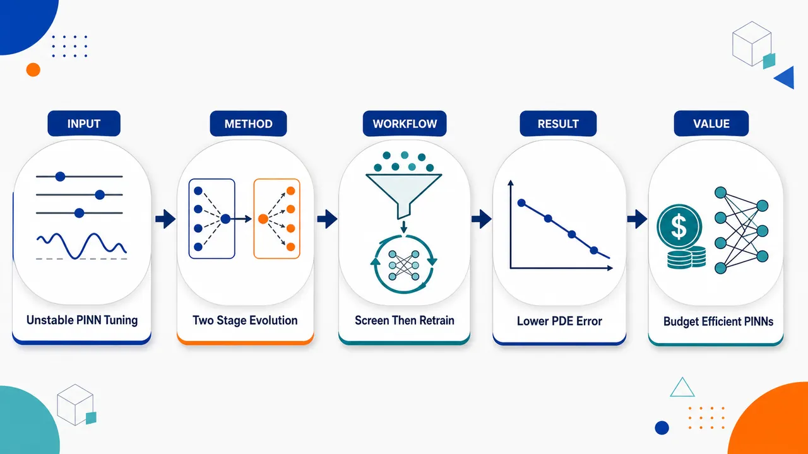
研究问题PINN 求解 PDE 时对超参数极度敏感：网络层数、宽度、激活函数、学习率、调度器、PDE/边界损失权重相互耦合，导致训练停滞、发散、落入局部极小。核心问题是：在有限 GPU 预算下，如何从昂贵、噪声大、非凸、混合变量的黑箱超参数空间中，快速找到能产生低误差 PDE 解的配置。创新方法提出“两阶段进化超参数优化”：第一阶段不把每个 PINN 训练到底，而是用截断 epoch 的低保真训练大规模筛选候选；第二阶段只把最有希望的前若干配置完整训练。Aha 点是把“早期训练曲线”当作最终质量的代理，用 JADE 等种群进化算法在多峰超参数景观中全局搜索，再把计算集中投向少数优质候选；其中 JADE 依靠自适应变异与交叉机制，在混合、不可微搜索空间中最稳定。工作流程输入 PDE 问题、采样点、PINN 搜索空间与计算预算；在搜索空间中生成候选超参数配置，包括层数、宽度、激活函数、学习率、scheduler、损失权重；第一阶段每个候选只训练少量 epoch，如 100、200、500、1000 epochs，用 RMSE 或 total PINN loss 评分；进化算法根据评分更新种群并筛掉差区域；选出 top 候选，通常前 10 个；第二阶段对这些候选进行完整 10000 epochs 训练；最终输出最优 PINN 配置、收敛后的 PDE 解和误差评估。关键结果在 Helmholtz、Klein–Gordon、Flow Mixing 三类 PDE 基准上，进化算法整体优于网格搜索、随机搜索、贝叶斯优化和 Nelder–Mead。JADE 表现最佳且最稳定。约 1000 exploration epochs，即完整训练 10000 epochs 的 10%，达到最佳预算平衡；相对一阶段完整训练基线，误差降低 28%–77%，平均约 40%。RMSE 与 total PINN loss 强相关，说明无参考真解时也可用 loss 指导超参数选择。应用价值该方法把 PINN 调参从人工经验试错转为预算可控的自动化搜索，减少大量无效完整训练，提升 PDE 求解精度与稳定性。它适用于真实科学计算中常见的无解析解场景，可用 PINN loss 作为选择信号；对流体、热传导、波动方程、量子系统等需要可靠 PINN 求解的任务，提供了“先低成本广筛、再高成本精训”的实用调参范式。第一部分：核心概览（Overview）
提出一种面向 Physics-Informed Neural Networks（PINNs） 的两阶段超参数优化框架：先用低保真、截断 epoch 的训练进行全局探索，再仅对最优候选进行完整训练。核心贡献在于把 PINN 超参数选择明确建模为昂贵、噪声大、非凸、混合变量的黑箱外层优化问题，并系统比较 JADE、LSHADE、Grey Wolf、Whale 等进化算法与贝叶斯优化、随机搜索、网格搜索、Nelder–Mead。三类 PDE 基准（Helmholtz、Klein–Gordon、Flow Mixing）上，JADE 最稳定；约 10% 全训练 epoch 的探索预算可带来平均约 40% 误差改进，单问题最高误差降低 77%。
---
第二部分：结构化快速回顾
《Evolutionary Two-Stage Hyperparameter Optimization Strategies for Physics-Informed Neural Networks》（None，）
背景
PINNs 通过把 PDE 残差、边界条件、初始条件嵌入损失函数来求解偏微分方程，但训练常出现停滞、发散、局部极小、平台期。超参数选择具有明显的双层优化结构：内层训练网络权重，外层选择架构、学习率、调度器和损失权重。
方法
采用两阶段策略：第一阶段用低 epoch 训练大量候选超参数配置，借助 JADE、LSHADE、Grey Wolf Optimizer、Whale Optimization Algorithm 等进化算法进行全局搜索；第二阶段对筛出的最优候选进行完整训练。目标函数可用 RMSE；无参考解时可用总 PINN loss。
结果
在 Helmholtz、Klein–Gordon、Flow Mixing 三个 PDE 上，进化算法整体优于 Grid Search、Random Search、Bayesian Optimization、Nelder–Mead。JADE 表现最佳且最稳定。探索阶段约 1000 epochs 即全训练 10000 epochs 的 10% 时，达到最优预算平衡；误差相对一阶段全训练基线降低 28%–77%。
讨论
低保真训练结果可作为最终模型质量的有效代理。RMSE 与 total loss 强相关，使得无参考真解时仍可通过 PINN loss 进行实用型超参数选择。进化算法的群体搜索和自适应变异机制更适合 PINN 的多峰超参数景观。
局限
无单一优化器对所有 PDE 普适最优，符合 No Free Lunch theorem。单个超参数效应相互耦合，难以简单解释。实验集中于三个基准 PDE，搜索空间虽包含架构与优化器设置，但尚未覆盖更广泛 PINN 结构和 PDE 家族。
结论
结构化的两阶段进化超参数优化能在固定计算预算下显著提升 PINN 稳定性和精度，减少人工调参依赖。10% 探索 epoch 是兼顾效率与最终误差的经验最优点；超过 20% 后收益递减，过短的 1%–2% 探索不可靠。
---
第三部分：逐章节冷凝解析（Section-by-Section Condensing）
Abstract
PINN training is unstable under non-convex multi-term losses
PINNs 的核心困难来自物理损失的多项结构和非凸性，导致训练对架构和优化超参数高度敏感。摘要直接指出性能问题包括 *"unstable convergence, training plateaus, and strong sensitivity to architectural and optimization hyperparameters"*，根源是 *"the highly non-convex and multi-term structure of the physics-informed loss"*。这说明超参数问题不是普通调参问题，而是与 PINN 损失结构本身绑定。
Outer-loop hyperparameter search is treated as noisy black-box optimization
超参数优化被定义为外层黑箱搜索，其中候选配置的好坏只有完成训练后才能观察。摘要给出的关键界定是 *"the outer-loop hyperparameter search is a noisy and black-box optimization problem over heterogeneous parameters"*。这里的 heterogeneous parameters 覆盖连续学习率、离散激活函数、网络层数、scheduler 类型等混合变量。
Evolutionary algorithms are motivated by mixed and non-differentiable search spaces
进化算法的优势被定位为群体式探索和对不可微、混合搜索空间的适应性。摘要强调 *"Evolutionary algorithms, with their population-based exploration and ability to handle mixed, non-differentiable search spaces, provide a more robust mechanism"*。这与 PINN 外层优化目标无法直接求梯度的现实高度匹配。
Two-stage optimization separates exploration and exploitation
提出的核心框架是两阶段训练预算分配。第一阶段用低保真训练快速筛选，第二阶段只完整训练少数候选。摘要写明：*"In the first stage, we perform low-fidelity training runs with truncated epochs to rapidly screen candidate configurations"*；随后 *"only the most promising candidates are fully trained with standard gradient-based optimizers"*。这种设计避免对所有候选进行昂贵的完整训练。
Three PDE benchmarks show consistent improvement
实验覆盖 Advection、Klein–Gordon、Helmholtz，摘要声称方法在固定预算下显著降低平均误差：*"Evaluated on three popular problems, namely Advection, Klein–Gordon and Helmholtz equations, our method consistently outperforms standard training and achieves significantly lower mean error within constrained computational resources."* 正文数值部分进一步以 Helmholtz、Klein–Gordon、flow mixing 作为三类基准展开。
---
1 Introduction
PINNs reformulate PDE solution as physics-constrained loss minimization
PINNs 通过最小化包含 PDE 残差的损失函数求解偏微分方程。章节开头给出基础定义：*"Physics-Informed Neural Networks (PINNs) solve PDEs by minimizing a loss that includes residuals of the governing equations"*。应用领域包括 *"fluid dynamics, heat transfer, and quantum mechanics"*，说明技术定位是通用科学计算框架。
Training failures limit competitiveness against classical solvers
PINN 训练常见失败模式包括停滞、发散、次优收敛。原文概括为 *"PINNs training often stalls, diverges, or converges to suboptimal minima"*，且鲁棒性 *"poorly understood"*。若要与有限差分等传统方法竞争，必须提高效率与稳定性：*"To compete with classical solvers like finite differences... PINNs must be made more efficient and stable."*
Hyperparameter sensitivity is the central obstacle
架构选择和优化设置会极大改变收敛轨迹。关键表述是 *"A central obstacle is sensitivity to hyperparameters"*，并进一步说明 *"Architectural choices and optimization settings can drastically alter convergence behavior, causing training plateaus or convergence to poor local minima."* 这使超参数选择成为 PINN 实用化的瓶颈。
PINN tuning is naturally bilevel optimization
超参数调优被准确建模为双层优化：内层训练权重，外层选择配置。原文给出完整逻辑：*"for each hyperparameter configuration, an inner gradient-based optimizer trains the network weights, while an outer procedure must select the hyperparameters that yield the best final solution quality."* 外层目标昂贵，因为 *"model quality is only observed after executing a training run."*
PINN landscapes are more multimodal than standard DNN landscapes
PINN 损失景观局部极小更多，导致更多迭代和次优解。关键证据表述为 *"the loss landscape of PINNs has been compared to that of standard deep neural networks (DNNs), revealing a significantly higher density of local minima"*。这种 multimodality 是传统局部搜索容易失败的根源。
Population-based evolutionary search is justified by heterogeneous hyperparameters
进化算法可处理离散架构与连续优化参数的相互作用。原文指出它们适合 *"heterogeneous hyperparameter spaces"*，其中包括 *"discrete architectural decisions"* 与 *"continuous optimization parameters (e.g., learning rates, scheduler parameters, and loss-term weights)"*。外层目标不需要可微：*"without requiring differentiability of the outer objective."*
Exploration–exploitation trade-off reduces wasted computation
不必完整训练大量配置，而是先快速过滤再集中计算。章节中明确提出：*"Rather than fully training many configurations to convergence, one can rapidly filter a large set of candidates and then concentrate computation on the most promising ones."* 在固定计算预算下，这一点尤其重要：*"This is especially important under fixed computational budgets."*
Prior works rely heavily on ad hoc tuning
已有 PINN 工作常依赖问题特定的人工经验，缺少系统策略。原文批评为 *"Most prior works rely on ad hoc tuning for individual problems"*，并指出可能 *"waste substantial resources on configurations that reach plateaus early."* 两阶段策略正是为避免这种资源浪费。
Main contribution includes reliable identification under strict budgets
第一项贡献是固定预算下稳定发现优质配置：*"The proposed two-stage optimization strategy enables reliable identification of high-performing PINN configurations under strict computational budgets."* 这强调的不是单纯精度，而是预算约束下的可靠性。
Evolutionary algorithms outperform classical tuning methods
第二项贡献是进化算法相对传统方法的系统优势：*"population-based evolutionary algorithms consistently outperform classical hyperparameter tuning methods such as Bayesian optimization, random search, and grid search on benchmark PDEs."* 对比对象包括 Bayesian optimization、random search、grid search，正文还包含 Nelder–Mead。
A 10% exploration budget yields about 40% average improvement
第三项贡献是预算分配经验法则：*"an exploration budget of approximately 10% of standard training achieves about 40% average improvement of the baseline-level error value under the fixed computational budget."* 这是论文最具工程指导意义的量化结论。
---
2 Related work
Grid search and Bayesian optimization have been used but scale poorly
已有研究用 grid search 探索离散组合，用 Bayesian optimization 提高样本效率。原文写道：*"Grid search has been applied to explore discrete hyperparameter combinations"*；贝叶斯优化则 *"has gained popularity for its sample efficiency in high-dimensional spaces"*，尤其用于 Helmholtz equation。但当超参数数量增大，包括 *"architecture, activation functions, learning rates, and loss weights"* 时，每个配置都需要昂贵黑箱评估，因而 *"become computationally prohibitive"*。
Manual tuning transfers locally but lacks generalizability
人工调参在相似物理问题中可能有效，但依赖专家经验。原文描述为 *"hand-crafted configurations often transfer reasonably well to similar problems within the same physical domain"*，但缺陷是 *"lacking generalizability and requiring significant expert effort."* 这凸显自动化调参的必要性。
NAS methods improve accuracy but require many full trainings
Auto-PINN、NAS-PINN 等神经架构搜索方法已用于 PINN。原文说明 Auto-PINN *"employs NAS to automatically optimize network architecture and other hyperparameters, achieving notable accuracy improvements"*；NAS-PINN 则 *"automate the search for optimal PINN designs"*。但共同问题是计算密集：*"they require numerous full training runs to evaluate candidate architectures."*
Low-fidelity approximations are underexplored for PINNs
低保真评估如少量 epoch 训练在 DNN 文献中常用于快速筛选。原文称 *"low-fidelity approximations—such as training networks for fewer epochs—have been proposed in the broader DNN literature"*。但在 PINN 中，尤其与 NAS 或进化算法结合时仍不足：*"their application to PINNs, particularly in combination with NAS or evolutionary methods, remains underexplored"*，且缺乏 *"practical guidelines for balancing fidelity, exploration, and final accuracy."*
Evolutionary PINN optimization lacks structured two-stage separation
近期综述显示进化算法越来越多用于 PINN 超参数和架构优化，因为其适合 *"noisy, non-convex, and mixed search spaces"*。但大多数既有工作存在两类不足：*"either perform full training for every candidate or lack a structured separation between rapid global exploration and high-fidelity exploitation."*
Head-to-head comparison of multiple evolutionary optimizers is positioned as novel
该研究被定位为对多个先进进化优化器的直接比较：*"among the first works to conduct a head-to-head comparison of multiple state-of-the-art evolutionary optimizers"*，包括 JADE、LSHADE、Grey Wolf Optimizer、Whale Optimization Algorithm。核心差异是 *"explicitly combines population-based global search on low-fidelity (truncated-epoch) training runs"* 与 *"full-gradient-based refinement of only the most promising candidates."*
---
3 Background
3.1 PINN Methodology
PINNs combine neural approximation with PDE and boundary constraints
PINN 方法论把神经网络函数逼近能力与物理约束结合。原文定义为 *"PINNs solve PDEs by combining the approximation capabilities of neural networks with the physical constraints defined by PDEs and their boundary conditions."* 数学设定为有界域 Ω ⊂ ℝᵈ，边界 ∂Ω，PDE 系统为
𝒟u(x)=s(x), x∈Ω；边界条件为 ℬu(x)=g(x), x∈∂Ω。
Solution field and operators are explicitly defined
待求解函数为 u: ℝᵈ → ℝᵐ，𝒟 是微分算子，ℬ 是边界算子，s(x) 和 g(x) 是已知函数。原文写明：*"where u : ℝd → ℝm is the solution field, 𝒟 a differential operator, ℬ is the boundary operator, s(x) and g(x) are known functions."*
Neural network surrogate approximates the true PDE solution
用参数为 ψ 的网络 û(x;ψ) 近似真解 u(x)。原文表述为 *"we introduce a neural network û(x;ψ), parameterized by trainable weights and biases ψ"*，该网络 *"serves as a surrogate for u(x)"*，通过优化 ψ 满足 PDE 和边界条件。
Composite loss consists of PDE residual and boundary loss
总损失函数为 L(ψ)=L_PDE(ψ)+L_BC(ψ)。原文说明训练过程最小化 *"a composite loss function that quantifies how well the neural network adheres to the physical constraints."*
PDE 残差损失为
ℒ_PDE = (1/NΩ) Σᵢ ||𝒟û(xᵢ)-s(xᵢ)||²，用于 *"enforces the PDE within the domain Ω"*。
边界损失为
ℒ_bc = (1/N∂Ω) Σⱼ ||ℬû(xⱼ)-g(xⱼ)||²，用于 *"enforces the boundary conditions on ∂Ω"*。
Collocation points define empirical physics constraints
NΩ 和 N∂Ω 分别表示内部域和边界上的采样点数量。原文写道：*"NΩ and N∂Ω represent numbers of collocation points sampled from the interior of the domain, and from the boundary, respectively."* 这些点构成 PINN 训练中的物理约束采样基础。
Training uses gradient-based optimization via automatic differentiation
最优网络参数通过 ψ* = arg minψ L(ψ) 获得。优化通常使用 Adam 或 L-BFGS：*"This optimization is typically carried out using gradient-based algorithms, such as Adam or L-BFGS"*。梯度通过自动微分计算：*"computed via automatic differentiation."* 因此 PDE 求解被转化为优化问题：*"effectively recasting the PDE problem as an optimization task."*
---
3.2 Optimization with Evolutionary Algorithms
Six evolutionary algorithms extend the previous methodological toolbox
该部分声称在既有 Buzaev et al. 2024 框架基础上扩展到多个进化优化器。原文写道：*"this study extends the methodological toolbox to six separate evolutionary algorithms, allowing for a comprehensive evaluation of optimization performance."* 正文详细列出 GWO、WOA、JADE、LSHADE；引言还提到 JADE、LSHADE、Grey Wolf、Whales。
Grey Wolf Optimizer models leadership hierarchy and hunting
Grey Wolf Optimizer（GWO） 是自然启发式元启发算法，模拟灰狼社会等级和捕猎。原文定义为 *"a nature-inspired metaheuristic that emulates the leadership hierarchy and hunting mechanism of grey wolves in nature."* 狼群被分为四类：*"The algorithm categorizes wolves into four groups, representing the social hierarchy."* 捕猎包含 *"encircling prey, hunting, and attacking prey"* 三个阶段。
Whale Optimization Algorithm models bubble-net hunting
Whale Optimization Algorithm（WOA） 源自座头鲸气泡网捕食。原文为 *"inspired by the bubble-net hunting strategy of humpback whales."* 它模拟鲸鱼 *"creating bubble nets to encircle prey"*，包含 *"encircling prey, bubble-net attacking method (exploitation phase), and search for prey (exploration phase)."*
JADE adapts Differential Evolution control parameters
JADE 是 Differential Evolution（DE） 的自适应变体，使用历史信息调整控制参数。原文称其 *"incorporates self-adaptive control parameters and an optional external archive to enhance performance"*，并能 *"adjusts the mutation factor and crossover rate dynamically based on historical information"*，从而提升 *"convergence speed and solution quality."*
LSHADE uses success history and population-size adaptation
LSHADE 是 SHADE 的高级版本，使用历史成功参数记忆和种群规模适应。原文描述为 *"an advanced version of the Success-History Adaptive Differential Evolution (SHADE) algorithm"*，并结合 *"Lévy-flight-based mechanisms to enhance exploration capabilities."* 它还 *"employs a historical memory of successful parameter settings and adapts the population size during the optimization process."* 这些特性使其在复杂高维问题上更鲁棒：*"perform robustly on complex, high-dimensional optimization problems."*
---
4 Two-stage strategy of PINN hyperparameter optimization
PINN parameters are separated into trainable weights and hyperparameters
PINN 近似 û(x; ψ, H) 被拆成两类参数：ψ ∈ ℝᵖ 表示可训练权重和偏置，h ∈ ℋ 表示超参数。原文列出：*"Trainable network weights/biases"* 与 *"Hyperparameters (learning rates, loss weights λpde, λbc, network architecture)"*。这种拆分为双层优化提供形式化基础。
Inner optimization trains network weights under fixed hyperparameters
内层任务为
minψ ℒ(ψ;h)=λₚdeℒₚde+λ_bcℒ_bc。
这说明 loss weights λₚde、λ_bc 也是超参数的一部分，会改变 PDE 残差与边界损失的相对权重。
Outer optimization selects hyperparameters by final solution quality
外层目标在有参考解时为
minₕ∈ℋ ||û(x;ψ*(h),h)-uᵣₑf(x)||²。
原文解释 ψ*(H) 为固定超参数下训练得到的权重，uᵣₑf(x) 是 *"a reference solution used for calibrating the hyperparameters."* 也即外层目标直接最小化预测解与参考解之间的误差。
Loss-based outer optimization is used when reference solutions are unavailable
无参考解时，外层优化可改为
min_H ℒ(ψ;H)。
原文明确写道：*"If a reference solution is not available, the outer optimization task may be taken as follows: minH ℒ(ψ;H)."* 这使方法可用于真实 PDE 问题，而不只适用于有解析解的 benchmark。
Two-phase framework allocates computation between exploration and exploitation
计算预算被分配到两个阶段。第一阶段是 exploration phase：*"multiple PINNs are trained with different hyperparameter configurations to identify the most promising one."* 这里不要求完整训练：*"full training of each PINN is not necessarily required"*，只需估计配置潜力：*"estimate the potential of each configuration to yield the best performance."* 第二阶段是 exploitation phase：*"the selected PINN is fully trained to completion."*
Search space covers architecture and optimization settings
超参数空间同时包括网络架构与优化设置。架构方面包括 *"changing activation functions, the number layers and units per layer"*；优化方面包括 *"different scheduling schemes and learning rate ranges."* 这构成典型混合变量搜索空间。
Conditional scheduler parameters reduce effective dimensionality
只有与所选 scheduler 类型相关的参数会被激活。原文说明：*"Only the parameters relevant to the chosen scheduler type are activated during the search"*，作用是 *"reduces the effective dimensionality of the space and speeds up the black-box optimizer."* 例如若 scheduler 为 none，则无需搜索 scheduler_factor 或 schedulerₚₐₜᵢₑₙce。
Classical bilevel assumptions fail for PINNs
公式 6 定义的耦合优化是双层优化，但 PINN 不满足经典双层优化常见的凸性和平滑性假设。原文指出：*"classical bilevel optimization assumes convexity and smoothness for theoretical guarantees"*，而 PINN 由于神经网络非线性参数化具有非凸损失：*"PINN training inherently involves non-convex loss landscapes."* 因此精确梯度式超参数优化不可行：*"renders exact gradient-based hyperparameter optimization intractable."*
The outer loop is reformulated as black-box optimization
两阶段方法的关键是把外层超参数优化视为黑箱。原文写明该困难 *"motivating our two-phase approach that reformulates the outer loop as a black-box optimization problem."* 这直接解释了为什么选择进化算法而不是外层梯度法。
Exploration prunes poor regions and exploitation refines the selected solution
探索阶段通过群体式全局优化避免局部极小：*"Global optimizers efficiently prune suboptimal regions of ℋ using limited training epochs, using population-based search to avoid local minima."* 利用阶段则完整训练最佳配置：*"Full training of the best configuration refines the solution, capitalizing on the neural network’s local convergence properties."*
---
5 Numerical results
Three benchmark PDEs are used for validation
实验评估三个偏微分方程基准：*"the flow mixing problem, the Klein–Gordon equation, and the Helmholtz equation."* 这些问题被描述为科学计算中的成熟基准，并且 *"known to present significant challenges for PINN-based solvers."*
Exact-solution construction enables quantitative error evaluation
采用 Cho et al. 2023 的验证策略：假定一个精确解并代入控制方程，将残差作为源项，从而构造已知真解的问题。原文表述为 *"an exact solution is assumed and substituted into the governing equation"*，所得残差 *"is treated as a source term"*，于是精确解 *"is known by construction."* 这允许直接计算相对真值的 RMSE。
---
5.1 Experimental setup
Training data include interior, boundary, and initial-condition points
训练使用 1000 个配置点、100 个边界条件点和 100 个初始条件点。原文给出精确数量：*"We used for training 1000 collocation points, 100 points for boundary condition and 100 points for initial condition."*
Architecture search spans layers, width, and activation functions
架构超参数范围为：层数 2–5，每层单元数 16–128，激活函数取自 tanh, ReLU, GELU, SiLU。原文列为 *"number of layers: 2−5"*, *"units per layer: 16−128"*, *"activation function ∈ tanh, ReLU, GELU, SiLU"*。
Optimizer is AdamW with log-uniform learning-rate search
优化器为 AdamW，学习率范围 10⁻⁴–10⁻²，按 log-uniform 采样。原文列出：*"Optimiser (AdamW) – learning rate: 10−4−10−2 (log-uniform)."*
Scheduler search includes reduce-on-plateau, cosine annealing, and none
学习率调度器类型为 reduceₒₙₚₗₐₜₑₐᵤ、cosineₐₙₙₑₐₗᵢₙg、none。若选择 reduceₒₙₚₗₐₜₑₐᵤ，则 scheduler_factor ∈ [0.1, 0.5]，schedulerₚₐₜᵢₑₙce ∈ 5, 20。原文精确列出：*"schedulerₜype ∈ reduceₒₙₚₗₐₜₑₐᵤ, cosineₐₙₙₑₐₗᵢₙg, none"*；并对 reduceₒₙₚₗₐₜₑₐᵤ 给出 *"scheduler_factor ∈ [0.1, 0.5]"* 和 *"schedulerₚₐₜᵢₑₙce ∈ 5, 20"*。
Hardware and runtime are explicitly constrained
所有实验在单张 NVIDIA Tesla V100 GPU，32 GB memory 上运行。原文写道：*"All computational experiments were performed on a single NVIDIA Tesla V100 GPU with 32 GB of memory."* 每次优化迭代，即 10,000 training epochs，平均需要约 11 minutes：*"Each optimization iteration (10,000 training epochs) required approximately 11 minutes on average."*
Exploration uses 200 iterations, five seeds, and population size 30
探索阶段每次优化运行使用 200 iterations，每个方程使用 5 independent random seeds，所有优化器种群大小为 30。原文给出：*"For the exploration phase, we used 200 iterations per optimization run and 5 independent random seeds per equation. A population size of 30 is used across all optimizers."*
---
5.2 Preliminary analysis
Epoch cutoff creates a fidelity–cost trade-off
核心问题是少量 epoch 是否能可靠判断最终好坏。原文描述这一权衡：*"optimization algorithms must discriminate which configuration is ultimately the best, but waiting until full convergence is computationally expensive."* 过早截断也有风险：*"the configuration that appears best early on may not remain the best by the end."*
Random search and six global optimizers are used to study early predictiveness
为了分析训练曲线，生成了多种配置：*"we generated multiple configurations through random search and six global optimization algorithms."* 分析对象为 Helmholtz3D、Klein-Gordon3D、FlowMixing2D：*"three problems: Helmholtz3D, Klein-Gordon3D, and FlowMixing2D."*
Absolute best selection usually requires nearly full 10,000 epochs
若目标是识别绝对最优配置，几乎需要完整训练。原文写道：*"to reliably identify the absolute best configuration, almost all out of 10000 epochs are typically needed."* 这说明极端精确排序非常昂贵。
Relaxed top-10% selection can use around 200 epochs
若只要求选到最终误差优于 90% 试验的配置，则约 200 epochs 已足够。原文给出条件和数值：*"instead of demanding the absolute best, it is acceptable to select a configuration that finishes better than 90% of all trials in terms of final error"*；在该标准下 *"it is sufficient to use approximately 200 epochs."*
Early selection extends low-fidelity and learning-curve extrapolation ideas to PINNs
截断训练可显著加速而不过度牺牲精度：*"Early selection strategies with modest cutoff epochs (e.g., 200) can dramatically accelerate the optimization workflow without severely compromising final accuracy."* 这种方法被视为把低保真估计和学习曲线外推推广到 PINN：*"the method of lower fidelity estimates... and learning curve extrapolation... are extended to PINN."*
500 initial epochs are a good period for top-10% detection
进一步分析显示 500 initial training epochs 可判断模型是否能进入前 10%。原文写道：*"We found that 500 initial training epochs is a good training period to conclude, if the model with this set of hyperparameters could get to 10% of top models."* 这与摘要中 10% full training 的策略方向一致。
Optimization saturates after roughly 150 configurations
探索阶段试验次数存在边际收益递减。Figure 2 说明约 150 configurations 后继续迭代收益有限：*"after screening approximately 150 configurations additional iterations yield diminishing returns."* 图注也写明：*"Dashed vertical line indicates iteration 150, where saturation is observed across all problems."*
32 GPU hours define the limited-budget baseline
固定预算基线被设为 32 GPU hours。原文给出：*"The computational time of 32 GPU hours spent on such optimization will serve as our baseline in conditions of limited computational budget."* 这将实验置于资源受限情境，而非无限搜索。
---
5.3 Two-Stage Optimization
Exploration trials vary from 100 to 10,000 epochs
全局优化器在固定评估预算下运行，每个试验训练 100–10000 epochs，其中 10000 表示经典完整训练。原文写道：*"Each trial corresponds to training a PINN from 100 to 10000 epochs, where 10000 is the classical optimization with full learning."*
Objective can be RMSE or total PINN loss
目标函数可选 RMSE 或 total loss。原文明确表示：*"As an objective (cost) function, either the value of the total loss function or the root mean square error (RMSE) – if a reference solution is available – can be used."* 有参考解时直接最小化 RMSE；无参考解时最小化总损失。
RMSE correlates with total loss
Figure 3 用 Helmholtz 方程展示 RMSE 与 total loss 的关系。原文指出：*"RMSE correlates with the total loss"*，因此 *"allows to predict the final error based on the loss value."* 这为无解析解问题中的损失驱动调参提供依据。
Loss minimization is slightly worse than RMSE minimization but more practical
两种优化策略被比较：*"direct minimization of the RMSE"* 与 *"minimization of the PINN loss function."* 原文给出结论：*"optimization based on the loss function generally leads to slightly worse results compared to RMSE minimization"*，但当参考解不可用时更实用：*"it remains more practical in cases where a reference solution is not available."*
JADE performs best across considered equations
所有方程中 JADE 最优。原文写道：*"For all considered equations, JADE performs best"*。同时，所有被检验的进化算法都至少与传统方法竞争或更优：*"all examined evolutionary algorithms demonstrate performance that is either competitive with or superior to both Bayesian optimization and Nelder–Mead."*
Evolutionary optimizers outperform classical baselines after 10,000 epochs
Figure 4 图注给出总体结论：*"Global hyperparameter search with population-based evolutionary optimizers (Grey Wolf, JADE, LSHADE, Whales) significantly outperforms traditional baseline methods (Grid Search, Random Search, Bayesian Optimization, Nelder-Mead) across all three PDEs after 10,000 training epochs."* 结果覆盖 Helmholtz、Klein-Gordon、flow mixing，并且 *"Results averaged over five runs; error bars show standard deviation."*
Fixed-budget exploration shows best evolutionary performance near 1000 epochs
Figure 5 分析固定总搜索时间下，不同探索 epoch 的最终 RMSE。候选探索 epoch 包括 100、200、500、1000、2000、5000、10000。原文写道：*"the minimum error is achieved with the number of exploratory epochs of 10³, which is less than full convergence."* 即 1000 epochs 优于完整训练每个候选。
Top 10 configurations are retrained to convergence
Figure 5 图注说明流程：*"For each epoch budget, the optimizer explored the hyperparameter space using truncated training runs, then the 10 best configurations were retrained to convergence."* 这意味着第二阶段不只训练单一最优候选，而是对前 10 个候选完整训练，再评估最终效果。
JADE outperforms Bayesian optimization across all tasks
Figure 6 显示 JADE 在三类 PDE 上均优于贝叶斯优化。原文写道：*"JADE consistently outperforms the Bayesian optimization across all tasks."* 以 Helmholtz 为例，在 5000 epochs 时 JADE = 0.26，贝叶斯优化 1.17：*"at 5,000 epochs JADE achieves 0.26 compared to 1.17 for Bayesian Optimization on the Helmholtz problem."*
Two-stage JADE reduces error by 77%, 73%, and 28%
相对于一阶段 10,000 epochs 完整 retraining 基线，JADE 在 1000 exploration epochs 达到最小误差比，误差降低分别为 77%（Helmholtz）、73%（Klein–Gordon）、28%（Flow Mixing）。原文写道：*"JADE optimization achieves the minimum at 1,000 epochs with error reduction of 77% (Helmholtz), 73% (Klein–Gordon), and 28% (Flow Mixing)."*
需要注意：Figure 6 图注又写 *"with up to 77% error reduction for Klein-Gordon"*，与正文中 77% Helmholtz、73% Klein–Gordon 的归属存在不一致。
JADE advantage is attributed to population search and adaptive mutation
优势解释为更适合多峰超参数景观。原文指出：*"the evolutionary algorithm JADE more effectively explores the multi-modal hyperparameter landscape of PINNs due to its population-based search and adaptive adjustment of mutation parameters"*。相反，贝叶斯优化可能陷入代理模型局部最优：*"Bayesian Optimization becomes trapped in local optima of the surrogate model."*
Individual hyperparameter effects are weak and intertwined
最佳配置和超参数影响分析在 Appendix C 中给出；正文结论为个体超参数影响较弱：*"The best configurations and results demonstrating that the influence of individual hyperparameters is weak are shown in Appendix C."* 这意味着 PINN 性能更可能由超参数组合交互决定，而非单因素主导。
---
6 Conclusions
Two-stage framework integrates global optimization into PINN training
结论重申框架由探索和利用组成：*"we propose a two-stage framework that integrates global optimization strategies into the training of Physics-Informed Neural Networks (PINNs)."* 第一阶段使用 JADE、LSHADE、Grey Wolf、WOA 搜索候选配置：*"uses evolutionary algorithms... as global optimization solvers"*；第二阶段完整训练：*"the selected configuration is trained fully to convergence."*
Benchmark evaluation covers Helmholtz, Klein–Gordon, and Flow Mixing
框架在三个 PDE 上评估：*"the Helmholtz equation, the Klein–Gordon equation, and the Flow Mixing problem."* 结论称所有案例中优化辅助 PINN 优于一阶段训练：*"In all cases, optimization-assisted PINNs demonstrate superior accuracy compared to baseline one-stage training strategies."*
Global optimization improves RMSE and robustness to local minima
通过全局优化得到的解具有更低 RMSE，并对局部极小更鲁棒。原文表述为 *"Solutions found through global optimization achieve significantly lower RMSEs and are more robust to local minima"*。证据包括 *"improved convergence curves"* 和 *"more accurate reconstruction of nonmonotonic solution features."*
Total loss can guide tuning when RMSE is unavailable
结论再次强调 RMSE 与 total PINN loss 强相关：*"RMSE correlates strongly with the total PINN loss"*。实际意义是无参考解时仍可调参：*"enabling practical hyperparameter selection even when reference solutions are unavailable."*
Best configurations show activation preferences but no simple one-factor explanation
最佳配置显示一定架构偏好，例如 Helmholtz 和 flow mixing 倾向 GELU，Klein–Gordon 倾向 SiLU。原文写道：*"architectural preferences (for instance, GELU activation for Helmholtz and flow mixing, SiLU for Klein–Gordon)"*。但单个超参数效应难解释：*"individual hyperparameter effects remain intertwined and resist simple interpretation."*
No optimizer is universally optimal
符合 No Free Lunch theorem，没有单一全局优化器适用于全部 PDE。原文写道：*"no single global optimization solver that emerged as a universal solution across all considered PDE classes."* 这提醒超参数优化方法仍需问题相关验证。
Differential evolution methods are more stable than classical approaches
尽管无普适最优，differential evolution-based methods，尤其 JADE，在最终精度稳定性上优于贝叶斯、随机、网格搜索。原文称：*"differential evolution-based methods (with the best result for JADE) demonstrate superior stability in final solution accuracy compared to classical Bayesian approaches, random and grid search."*
Self-tuning adaptation may fit structured PINN non-convexity
进化算法优势被归因于自适应机制适配 PINN 损失结构。原文解释为 *"inherent adaptation mechanisms (such as parameter self-tuning) being particularly well-suited to the structured non-convexity of PINN loss landscapes."*
10% exploration epochs provide the best balance
核心经验结论是：每个 trial 用完整训练所需 epoch 的 10% 进行探索，足以可靠选择高性能配置。原文写道：*"an exploration phase consisting of 10% of the epochs required for full training per trial is sufficient to reliably select high-performing PINN configurations."* 相比完整每 trial 微调方案，模型质量提高 28%–77%：*"improving model quality by 28% to 77%."*
Too short or too long exploration budgets are inefficient
探索期过短约 1–2% 不可靠：*"Short exploration phases (about 1-2% of the total epochs) are less reliable and require more fine-tuning."* 超过 20% 则收益递减：*"Exceeding 20% of epochs leads to diminishing returns."* 因此 10% training epochs 是效率与质量平衡点：*"provide the best balance between efficiency and model quality."*
Future extensions target broader architectures and PDE families
后续方向包括更大搜索空间、更丰富 PINN 架构、更广 PDE 家族。原文写道：*"Future work will focus on extending the optimization framework to a broader search space that includes variations in PINN architectures and broader PDE families."*
---
Acknowledgments
Funding and computing resources are specified
研究获得俄罗斯联邦经济发展部 AI 研究中心资助及 HSE University 协议支持。原文为 *"supported by the grant for research centers in the field of AI provided by the Ministry of Economic Development of the Russian Federation"*，并部分使用 HSE 高性能计算资源：*"supported in part through computational resources of HPC facilities at HSE University."*
---
第四部分：深度理解与语言支持（Understanding & Nuance）
1. 术语解析
#### Low-fidelity training runs
字面是“低保真训练运行”，语境中指不完整训练，例如只训练 100、200、500、1000 epochs，用早期表现估计最终表现。它不是降低数据质量，而是降低训练充分性。关键句是 *"low-fidelity training runs with truncated epochs"*。微妙之处在于它牺牲单次评估准确性，换取更大搜索覆盖面。
#### Exploration–exploitation trade-off
常译为“探索—利用权衡”。Exploration 指广泛搜索超参数空间，避免过早锁定局部最优；exploitation 指对已发现的优质配置投入更多计算完成训练。该研究中的权衡不是算法抽象概念，而是明确对应计算预算：多少 epoch 用于筛选，多少用于完整训练。
#### Bilevel optimization
“双层优化”。内层优化网络权重 ψ，外层优化超参数 h/H。关键难点是外层目标依赖内层训练结果 ψ*(h)，因此每次评估超参数都要训练模型。PINN 中该问题更难，因为内层非凸、外层不可微且昂贵。
#### Black-box optimization
“黑箱优化”表示目标函数没有可用解析形式或梯度，只能输入一个超参数配置，运行训练，再观察误差或 loss。这里不是完全不知道系统机制，而是外层映射 h → final RMSE/loss 难以解析建模。
#### Multimodal hyperparameter landscape
“多峰超参数景观”指超参数空间中存在很多局部好解和差解区域。局部方法可能在一个看似不错但非全局优的区域停住。PINN 因 PDE 残差、边界约束、网络非线性和优化动态耦合，外层景观尤其复杂。
---
2. 疑难查证
#### 为什么早期 200–1000 epochs 可以预测最终质量，却又说绝对最优需要接近 10000 epochs？
两个判断标准不同。若目标是找到“绝对最佳配置”，早期曲线排序不够稳定，因为某些配置早期下降慢但后期更好。原文说 *"almost all out of 10000 epochs are typically needed"*。
但若目标放宽为找到“最终优于 90% 配置”的高质量候选，早期表现就足够有用。因为差配置通常早早暴露出训练困难，高质量配置也往往在前几百 epoch 呈现较好下降趋势。因此 200 epochs 可用于粗筛，500–1000 epochs 更可靠。
#### 为什么 1000 epochs 比 10000 epochs 更好？
在固定总预算下，每个 trial 用 10000 epochs 意味着只能测试较少配置，探索面窄；每个 trial 用 1000 epochs 则可测试更多配置，再对最优候选完整训练。PINN 超参数景观多峰，找到好区域比把每个随机区域训练到底更重要。
因此两阶段方法不是说 1000 epochs 的模型最终比 10000 epochs 模型好，而是说“用 1000 epochs 筛选 + 完整 retraining 最优候选”的总流程，在同等预算下比“每个候选都 10000 epochs”更有效。
#### 为什么 total loss 可以替代 RMSE？
RMSE 需要参考真解 uᵣₑf，真实科学问题中通常没有。PINN loss 由 PDE 残差和边界/初始条件误差构成，不需要真解。若 loss 与 RMSE 强相关，就能用 loss 作为可观测代理目标。
但替代并非完美：正文明确指出 loss 优化 *"generally leads to slightly worse results compared to RMSE minimization"*。原因是低 PDE 残差不一定总意味着全域预测误差最小，尤其在采样点不足、损失权重不平衡或边界条件复杂时。
#### 为什么贝叶斯优化在这里可能不如 JADE？
贝叶斯优化依赖代理模型刻画超参数到性能的映射，并通过采集函数选择下一点。PINN 外层目标噪声大、多峰、混合变量多，代理模型容易误判局部区域。原文说 Bayesian Optimization 可能 *"becomes trapped in local optima of the surrogate model."*
JADE 使用种群并行维护多个候选区域，通过自适应变异和交叉持续探索，因此更不容易被单一代理模型的错误局部结构困住。
---
第五部分：创新评估与关联（Synthesis & Novelty）
1. 创新性判断
#### 从“调 PINN”转向“固定预算下的外层黑箱优化策略”
过去 2–5 年的 PINN 超参数研究常聚焦具体问题的 grid search、Bayesian optimization、manual tuning、NAS。这些方法要么依赖人工经验，要么需要大量完整训练。该研究的新颖性在于把问题重心转为：在固定 GPU 预算下，如何分配探索与完整训练，从而最大化最终解精度。
#### 低保真截断训练与进化算法的结构化结合
低保真训练在 DNN/NAS 中常见，但在 PINN 中系统化不足，尤其缺少与进化算法结合的预算原则。这里明确提出：低 epoch 训练用于外层全局搜索，完整训练只用于最优候选。该结构区别于“每个候选都 full training”的 NAS-PINN 或 Auto-PINN 类方案。
#### 系统比较多种进化算法与传统调参方法
创新不只是使用某个进化算法，而是横向比较 JADE、LSHADE、GWO、WOA 与 Bayesian optimization、Random Search、Grid Search、Nelder–Mead。在 PINN 场景下，这类 head-to-head 比较较少，尤其是在统一两阶段预算框架下。
#### 给出可操作的预算经验法则
最实用的新贡献是 10% exploration epochs 的经验结论：完整训练为 10000 epochs 时，约 1000 epochs 的探索阶段最优；1–2% 太短，>20% 收益递减。这解决了低保真 PINN 调参中长期缺失的关键问题：截断到多少才合适。
#### 证明 loss-based tuning 在无参考解时仍可行
许多 benchmark 可计算 RMSE，但真实 PDE 没有真解。该研究通过 RMSE–total loss correlation 支持使用 PINN loss 进行外层选择，虽略逊于 RMSE 优化，但具备实际意义。这把方法从“有解析解 benchmark 调参”推进到更贴近真实科学计算场景。
#### 解决前人未充分解决的问题
主要补足三个缺口：
- 计算预算缺口：以往完整训练每个候选代价过高；两阶段方法减少无效 full training。
- 混合变量搜索缺口：架构、激活函数、学习率、scheduler、loss 权重共同作用，传统局部方法和单一代理模型易失效；进化算法更适配。
- 实践指南缺口：过去常说明某方法有效，但很少回答“探索训练多少 epoch、筛多少配置、什么时候收益递减”。这里给出 150 configurations saturation、1000 exploration epochs、10% budget 等明确指导。
-
10
📄 摘要：结合 DFT 与模型哈密顿量，发现体反铁磁体的低对称铁磁表面可承载局域表面能带的大自旋劈裂。机制是表面允许磁化时，子晶格分辨交换场解除体能带简并，为兼具反铁磁稳健性和超快动力学的大自旋劈裂平台提供路径。
💡 亮点：低对称铁磁表面可在体反铁磁材料中诱导大表面自旋劈裂。该机制不依赖整体铁磁体，为反铁磁自旋电子学提供表面工程方案。
📖 展开分析 + 配图
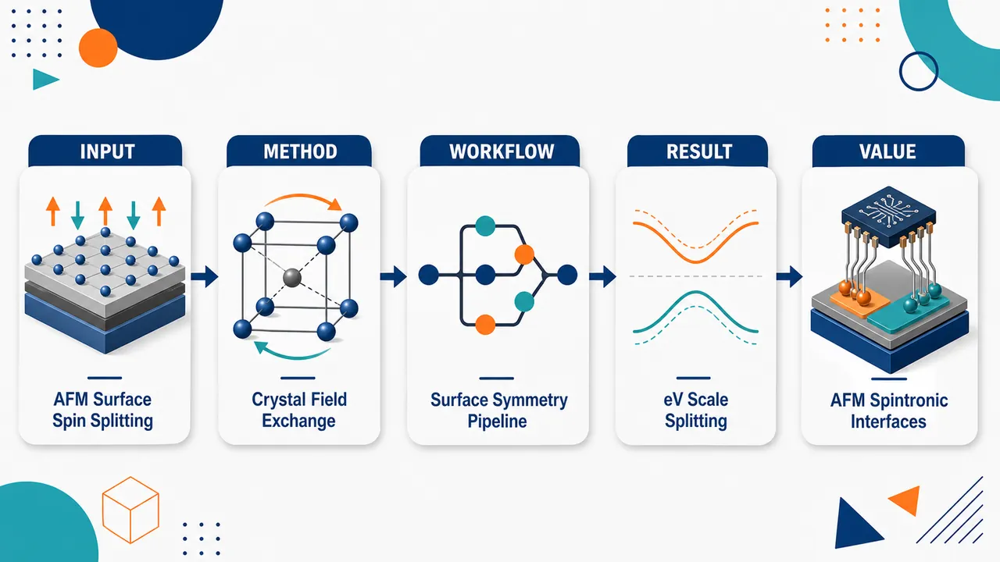
研究问题如何在保持体反铁磁体零净磁化、抗杂散场和超快动力学优势的同时，在其表面获得接近铁磁体的巨大自旋劈裂；关键追问是：表面自旋劈裂是否真的只由净表面磁化大小决定，还是还受磁子晶格补偿关系与局域晶体场差异控制。创新方法提出“体反铁磁体的铁磁表面”作为大自旋劈裂平台，并用表面磁子晶格哈密顿量拆解三种机制：单个未补偿磁子晶格直接释放局域交换劈裂；对称连接的反向子晶格只能通过微小 canting 产生小劈裂；非对称双子晶格可由晶体场差异 ΔECF 将反向交换能带拉开，即使净表面磁化极小也能释放 eV 级局域交换劈裂。Aha 点是：净磁化只是“许可条件”，晶体场能级分离才可能决定大劈裂是否显现。工作流程从体反铁磁晶体出发，选择低对称表面终止面；用表面磁空间群判断是否允许净表面磁化，并识别表面磁子晶格是否未补偿、是否仍由对称性连接；建立含交换项 ΔEEX、交换不平衡 δEEX、晶体场偏移 ΔECF 的模型哈密顿量；再用 VASP DFT 计算 Cr₂O₃(001)、Cr₂O₃(1̄20)、Cr₂O₃(100) 与 FeF₂(110) 的 slab 表面投影能带和自旋投影；最后从相邻反自旋表面带的最小能量差中提取可用于输运的表面自旋劈裂。关键结果Cr₂O₃(001) 单未补偿 Cr 子晶格产生约 0.9 eV 表面自旋劈裂；Cr₂O₃(1̄20) 仅有约 ±0.25° 相对论性 canting，劈裂约 0.01 eV；Cr₂O₃(100) 虽有约 3 eV 局域交换劈裂，但因两反向子晶格晶体场几乎等价、能带重叠抵消，净劈裂仅约 0.2 eV；FeF₂(110) 在净表面磁化同样很小、约 0.05 μB/nm² 的情况下，因 5 配位与 6 配位 Fe 产生约 1.3 eV 晶体场差异，最终获得约 1 eV 表面自旋劈裂，超过其体交替磁劈裂约一个数量级。应用价值为反铁磁自旋电子学提供一种利用天然表面终止获得强自旋极化表面态的新路线，可在体相保持反铁磁鲁棒性和低杂散场的同时，在表面或界面实现铁磁量级自旋劈裂；适合用于自旋极化输运、Néel 矢量读出、界面器件和异常霍尔等时间反演破缺输运响应，并显著扩大可筛选的反铁磁材料与表面取向空间。第一部分：核心概览 (Overview)
该研究提出体反铁磁体的铁磁表面可作为获得大尺度自旋劈裂的新平台。核心贡献在于区分三类表面磁化机制，并证明自旋劈裂大小不单由净表面磁化决定，而由表面交换劈裂、磁子晶格补偿关系与晶体场不等价性共同控制。模型哈密顿量与 DFT 计算显示，Cr₂O₃ 与 FeF₂ 表面可产生约 10 meV–1 eV 的劈裂，其中 FeF₂(110) 在极小净磁化下仍达到约 1 eV。该机制扩展了反铁磁自旋电子学中获得强自旋极化输运的材料空间，补充并区别于交替磁体、电场调控和 Janus 结构路径。
---
第二部分：结构化快速回顾
《Large spin splitting at ferromagnetic surfaces of bulk antiferromagnets》（None，）
背景
反铁磁体具有零净磁化、抗杂散场、近 THz 动力学等优势，但许多反铁磁体的 ℐ𝒯 对称性禁止铁磁体中常见的大自旋劈裂。已有路径包括交替磁体、电场破缺 ℐ𝒯、Janus 反铁磁结构，但多数劈裂小于传统金属铁磁体的 1–2 eV。
方法
采用两条互补路线：
- 构建表面磁性子晶格的模型哈密顿量，分解交换项与晶体场项；
- 使用 VASP DFT 计算 Cr₂O₃ 的 (001)、(1̄20)、(100) 表面以及 FeF₂ 的 (110) 表面投影能带与自旋投影。
结果
三种机制给出显著不同的自旋劈裂：
- Cr₂O₃(001)：单个未补偿 Cr 子晶格，约 0.9 eV；
- Cr₂O₃(1̄20)：相对称连接子晶格的相对论性 canting，约 0.01 eV；
- Cr₂O₃(100)：两子晶格交换不完全抵消，约 0.2 eV；
- FeF₂(110)：两 Fe 子晶格晶体场差异约 1.3 eV，总表面自旋劈裂约 1 eV。
讨论
最大亮点是证明大自旋劈裂可在净表面磁化极小的情况下出现。FeF₂(110) 与 Cr₂O₃(100) 的净表面磁化均约 0.05 μB/nm²，但前者因晶体场使两个反向子晶格能带分离，劈裂比后者大一个数量级。
局限
示例材料和表面多为绝缘体；表面态输运读出需要解决上下表面贡献相互抵消问题，尤其在体 ℐ𝒯 对称的 Cr₂O₃ 中。DFT 中部分表面使用无 SOC 的共线近似，且复杂能带中的交换配对依赖轨道投影判别，存在一定不可唯一性。
结论
低对称铁磁表面提供一条获得铁磁量级自旋劈裂的通用路线，可在保持反铁磁体鲁棒性的同时引入功能性自旋极化表面态，并与表面交替磁性等近期概念形成互补。
---
第三部分：逐章节冷凝解析 (Section-by-Section Condensing)
Abstract
- Surface-localized spin splitting is the central phenomenon
研究揭示体反铁磁体的低对称铁磁表面可以承载大的表面局域自旋劈裂。机制并非依赖体铁磁性，而是来自表面对称性降低导致的表面交换作用。核心表述为 *"large spin splitting of bands localized at low-symmetry, ferromagnetic surfaces of bulk antiferromagnets (AFMs)"*。
- Bulk antiferromagnets can acquire ferromagnetic surface functionality
目标是把反铁磁体的鲁棒性和超快动力学与铁磁体式大自旋劈裂结合起来。文中直接指出该领域需求：*"There is great interest in finding new material platforms combining the robustness and ultrafast dynamics of AFMs with large, functional spin splitting which is often restricted to ferromagnets."*
- Bulk degeneracy lifting occurs through sublattice-resolved exchange splittings
某些允许表面磁化的反铁磁表面能通过解除体内子晶格交换劈裂的简并来产生大自旋劈裂，即 *"a subset of AFM surfaces which have symmetry-allowed magnetization can host large spin splitting via bulk degeneracy lifting of sublattice-resolved exchange splittings"*。
- Two favorable ferromagnetic surface motifs are identified
两类表面最有利：第一类是单个未补偿磁子晶格终止面；第二类是体内磁性与电子性补偿、但表面截断后晶体场不同的双子晶格表面。原文给出：*"two ferromagnetic surface motifs: terminations with single uncompensated magnetic sublattices, and two-sublattice surfaces whose sublattices are magnetically and electronically compensated in the bulk, but acquire distinct crystal field environments via surface truncation."*
- Large splitting can coexist with vanishingly small magnetization
第二类机制尤其重要，因为它能在几乎没有未补偿磁化的情况下达到类似铁磁体的劈裂尺度：*"The latter case can yield FM-like spin splitting magnitudes while also having vanishingly small uncompensated magnetization."*
- Relativistic canting produces small splitting
若表面磁化来自相对论性自旋倾斜，且两个子晶格仍由对称性连接，则劈裂预期很小：*"when surface magnetization arises from relativistic canting on symmetry-connected sublattices, the spin splitting is expected to be small."*
- DFT validates the model across Cr₂O₃ and FeF₂
第一性原理计算覆盖 Cr₂O₃ 与 FeF₂，得到从约 10 meV 到约 1 eV 的劈裂：*"finding splittings from ∼10 meV - ∼1 eV depending on the surface in question."*
---
Introduction / 无标题引言
- Antiferromagnets are attractive for next-generation devices
反铁磁体可通过Néel 矢量编码信息，零净磁化提高抗杂散场能力，约 THz 磁动力学适合超快处理。文中总结为 *"Their staggered magnetization, or Néel vector, can encode information in a bit-like manner, their vanishing net magnetization gives robustness to stray magnetic fields, and their ∼THz magnetization dynamics make them promising for ultrafast processing applications."*
- ℐ𝒯 symmetry suppresses ferromagnet-like spin splitting
许多反铁磁体中保证零净磁化的 反演-时间反演联合对称性 ℐ𝒯 同时禁止自旋劈裂，这构成自旋电子学障碍：*"the same symmetry that guarantees a vanishing net magnetization in many AFMs ... prohibits spin split bands which are generic to ferromagnets."*
- Spin-split bands are essential for spin-polarized current
自旋劈裂能带可产生自旋极化电流，是 STT-MRAM 等器件架构的基础。原文写道：*"Spin split bands provide a method to generate spin-polarized current, which is fundamental to numerous spintronic device architectures such as Spin-Transfer Torque Magnetic Random Access Memory (STT MRAM)."*
- Existing AFM routes often yield insufficient splitting
已有路线包括交替磁体、电场诱导 ℐ𝒯 破缺、Janus 原子替换，但相对传统金属铁磁体的 1–2 eV 劈裂通常偏小。关键比较为 *"a persistent challenge with these platforms is that the associated spin splittings are generally small compared to the 1-2 eV splittings of conventional metallic FMs."*
- Electric-field and Janus mechanisms are typically hundreds of meV
电场和 Janus 机制的最大劈裂通常为数百 meV：*"Electric-field- and Janus-based mechanisms typically produce maximum splittings on the order of hundreds of meV."*
- eV-scale altermagnetic splitting exists but is exceptional
交替磁体中有少数 eV 量级例子，例如 CrSb 的 0.96 eV，但并非常态：*"eV-scale spin splittings have been reported in a few AMs, notably a 0.96 eV spin splitting in CrSb, but these are exceptional cases."*
- Spin splitting is defined transport-relevantly
自旋劈裂被定义为目标能窗中相邻反自旋能带的最小能量差，而非某对交替磁能带的特定差值，因为这更关乎鲁棒自旋输运：*"we define spin splitting as the minimum energy difference between adjacent opposite-spin bands in the energy window of interest."*
- Ferromagnetic AFM surfaces provide an alternative paradigm
新范式是具有净表面磁化的体反铁磁表面。所有表面都天然破缺 ℐ𝒯，若额外体对称性也被破缺，则可出现表面局域铁磁性：*"surfaces of bulk AFMs with a net surface magnetization. All surfaces inherently break ℐ𝒯 symmetry."*
- Surface magnetization preserves bulk AFM robustness
与体铁磁性不同，表面磁化对厚样品反铁磁鲁棒性的损害很小：*"this surface magnetization, unlike bulk ferromagnetism, has negligible detrimental effect on AFM robustness, particularly for thick samples."*
- Real-space surface magnetism was known; surface electronic structure was unresolved
既有理论和实验已研究铁磁表面的实空间性质，但其表面电子结构尚未系统探索：*"the nature of their corresponding surface electronic structure has yet to be explored."*
- Spin splitting depends on exchange-crystal-field interplay, not only magnetization
关键理论判断是劈裂大小不只由表面磁化大小决定，而取决于单个表面原子的晶体场能量 CF 与交换劈裂 EX 的相互作用：*"the magnitude of spin splitting is not only a function of the size of surface magnetization"*，以及 *"depends on an interplay between crystal field (CF) energies and exchange splitting (EX) of individual surface atoms."*
- Representative systems isolate different symmetry mechanisms
Cr₂O₃ 是具有体 ℐ𝒯 对称的磁电反铁磁体，体能带自旋简并；FeF₂ 是体交替磁体。该对比用于展示表面机制可跨不同体磁性类别成立：*"Cr₂O₃ is a magnetoelectric AFM with bulk ℐ𝒯 symmetry that enforces spin degeneracy in the bulk band structure, while FeF₂ is a bulk altermagnet."*
---
Theory
- Surface magnetic space group is obtained by restricting bulk symmetries
平面表面的磁空间群由保持表面法向且平移矢量位于表面内的体对称操作组成。形式条件为 *"R n̂ = n̂ and r ⟂ n̂"*。这说明表面天然选择出体磁空间群的子群。
- Surface point group determines whether net surface magnetization is allowed
若对应表面点群允许铁磁性，即使体内禁止磁化，表面仍可出现净磁化：*"If ferromagnetism is permitted in the corresponding surface point group, a net surface magnetization can emerge even when magnetization is prohibited in the bulk."*
- Exchange interaction splits spin-up and spin-down surface states
表面磁化允许交换相互作用，从而劈裂自旋向上和自旋向下态：*"This surface magnetization affects the surface band structure by permitting an exchange interaction which splits the energies of the spin-up and spin-down states."*
- Magnetic sublattice is defined by surface symmetry equivalence
磁子晶格不是简单晶胞概念，而是由表面对称操作连接、具有相同磁化大小和方向的一组位置：*"We define a magnetic sublattice as the set of sites that have the same magnitude and direction of magnetization due to being connected through a surface group symmetry operation."*
- On-site exchange Hamiltonian gives the elementary splitting scale
单个可区分磁子晶格的在位交换项为
H = ΔEEX/2 (m̂·σ)。其中 σ 是 Pauli 矩阵，ΔEEX 是在位交换劈裂，m̂ 是子晶格磁化方向。原文为 *"H=ΔEEX/2(m̂·σ)"* 与 *"ΔEEX is the on-site exchange splitting and m̂ is a unit vector parallel to the sublattice magnetization direction."*
- Single uncompensated sublattice gives direct large exchange splitting
单个未补偿磁子晶格表面的自旋劈裂完全来自该子晶格在位交换，方向沿 Néel 矢量：*"The spin-splitting for this surface comes exclusively from the on-site splitting of the single sublattice."* 理想单带模型劈裂正好为 ΔEEX：*"the spin splitting for the single band model in Eq. 1 would be precisely ΔEEX."*
- Realistic multiband structures reduce but preserve the exchange scale
多个非简并交换劈裂能带叠加会使实际最小劈裂低于单个在位交换，但仍处于同一量级：*"superposition of multiple non-degenerate exchange-split bands in a realistic band structure will generally lead to a spin splitting that is reduced, but on the same scale, as ΔEEX."*
- Induced surface magnetization can appear on bulk-compensated planes
“诱导”表面磁化出现在体内磁补偿的原子平面上：*"‘induced’ surface magnetization ... emerges on atomic planes that are magnetically compensated in the bulk."* 这类表面由反向磁子晶格对组成。
- Symmetry-connected opposite sublattices only allow canting magnetization
若表面对称操作仍连接两个反向子晶格，磁矩大小必须相同，表面磁化只能通过垂直于 Néel 矢量的等幅 canting 产生：*"their magnetization magnitudes must remain the same. Thus, surface magnetization can only arise via a spin canting perpendicular to the Néel vector."*
- Canting Hamiltonian predicts small transverse exchange splitting
canting 情况由
H = ΔEEX,x/2 σx τ0
描述，其中 τ 表示子晶格自由度。原文为 *"ΔEEX,x is the projection of ΔEEX along the canting direction"*。由于投影分量很小，后续 DFT 中对应劈裂也小。
- Broken sublattice-connecting symmetries allow unequal moments and crystal fields
若表面群破坏连接相反子晶格的对称性，则两个子晶格磁化大小可不等，产生沿体 Néel 矢量的净表面磁化：*"their magnetization magnitudes become inequivalent, generically leading to a net surface magnetization parallel to the bulk Néel vector."*
- Two consequences follow from breaking sublattice-connecting symmetries
第一，两个子晶格在位交换劈裂大小可不同，记为 ΔEEX + δEEX 与 −ΔEEX + δEEX；第二，配体环境不再等价，晶体场能量可发生刚性相对位移 ΔECF。原文指出 *"on-site exchanges of the two sublattices can now acquire different magnitudes"*，以及 *"the crystal fields set by their ligand environments no longer have to be equivalent."*
- Full two-sublattice Hamiltonian separates exchange imbalance and crystal-field shift
两子晶格共线模型为
H = ΔEEX/2 σzτz + δEEX/2 σzτ0 + ΔECF/2 σ0τz。
其中 ΔEEX 是反向子晶格主交换项，δEEX 是由净表面磁化带来的交换不平衡，ΔECF 是自旋无关的子晶格能级偏移。原文给出完整形式：*"H=ΔEEX/2 σzτz + δEEX/2 σzτ0 + ΔECF/2 σ0τz."*
- Large crystal-field splitting can restore single-sublattice-scale spin splitting
若 δEEX >> ΔECF，反向交换能带重叠并互相抵消，自旋劈裂小；若 ΔECF >> δEEX，晶体场把两个子晶格能带在能量上隔离，净劈裂可达到 ΔEEX 量级。核心表述为 *"the spin splitting can either be largely canceled due to overlapping, opposite-sign exchange interactions ... or reach the large ΔEEX scale of single-sublattice surfaces when ΔECF is large enough to energetically isolate single sublattice-projected exchange splittings."*
---
Ab-initio results
- Cr₂O₃ provides a bulk-ℐ𝒯-symmetric benchmark
Cr₂O₃ 为刚玉结构，磁空间群/点群为 R-3′c′ / −3′，是线性磁电反铁磁体。原文写道：*"Cr₂O₃ ... crystallizes in the corundum structure with magnetic space group (point group) R-3′c′ (−3′)."* 其磁电性质为 *"it acquires an induced magnetization in response to applied electric field and conversely, a net electric polarization in response to an applied magnetic field."*
- Cr₂O₃ is technologically relevant because of TN ≈ 300 K and switchable Néel vector
Cr₂O₃ 的 Néel 温度约 300 K，Néel 矢量可高效切换：*"It has a high Néel temperature of approximately 300 K ... and its Néel vector can be efficiently switched."*
- Three Cr₂O₃ facets represent three surface magnetization motifs
研究 Cr₂O₃ 的 (001)、(100)、(1̄20) 表面，已有实验和理论均识别这些面存在净表面磁化：*"the three surface facets (001), (100), and (1̄20) of Cr₂O₃ ... prior experimental and theoretical works have identified as having net surface magnetization."*
- Cr₂O₃(001) is a single-uncompensated-sublattice surface
Cr₂O₃(001) 是磁未补偿表面，包含单个未成对 Cr 子晶格：*"(001) Cr₂O₃ ... is a magnetically uncompensated surface with a single unpaired Cr sublattice."* 表面磁点群 3 允许沿 [001] 表面法向、与体 Néel 矢量对齐的净磁化：*"magnetic point group 3 permits a net magnetization along the [001] surface normal."*
- Cr₂O₃(001) shows ΔEEX ≈ 4 eV and surface spin splitting ≈ 0.9 eV
不含 SOC 的 DFT 表面投影能带显示代表性 Cr d 带的在位交换劈裂 ΔEEX ≈ 4 eV，Γ 点附近具体表面自旋劈裂约 0.9 eV：*"ΔEEX ≈ 4 eV for the labeled representative surface Cr d band"*，以及 *"The corresponding spin splitting for this specific surface is around 0.9 eV at the Γ point."*
- Cr₂O₃(1̄20) is compensated in bulk and magnetizes only by canting
Cr₂O₃(1̄20) 的磁点群为 2，二重旋转连接相反 Cr 子晶格，因此表面磁化只能来自垂直于面内 Néel 矢量的 canting：*"This point group has a two-fold rotation about the surface normal which connects opposite Cr sublattices, so surface magnetization arises exclusively from canting along the surface normal."*
- Cr₂O₃(1̄20) has ±0.25° canting and ≈0.01 eV splitting
最低能表面磁态对应约 ±0.25° 的面外 canting，符号取决于体 Néel 矢量方向：*"The lowest-energy surface magnetic state corresponds to an out-of-plane canting angle of approximately ±0.25°."* 代表性 d 带平均自旋劈裂约 0.01 eV：*"The average spin splitting ... is around 0.01 eV."*
- Small Cr₂O₃(1̄20) splitting confirms canting projection logic
该劈裂远小于 Cr₂O₃(001) 的约 1 eV，符合磁矩沿表面法向投影很小的模型预期：*"The small size of spin splitting ΔEEX,⊥, compared to the ∼1 eV spin splitting on the (001) surface, is consistent with the small projections of the sublattice magnetic moments along the direction of the surface normal."*
- Cr₂O₃(100) has allowed net magnetization along [001] but small magnitude
Cr₂O₃(100) 的磁点群为 m′，允许沿 [001] 的净磁化，DFT 与先前研究给出约 0.05 μB/nm²：*"This point group allows a net magnetization along [001], with a magnitude of ∼0.05 μB/nm²."*
- Cr₂O₃(100) lacks symmetry connecting opposite sublattices
m′ 中的镜面对称只连接同一子晶格中的 Cr，不连接相反子晶格，因此反向自旋 Cr 子晶格可拥有不同晶体场：*"The mirror plane in m′ connects Cr belonging to the same sublattice; no surface symmetry connects opposite sublattices."*
- Cr₂O₃(100) has negligible ΔECF because oxygen coordination is similar
对电稳定终止面，两个子晶格氧配位非常相似，导致 ΔECF 可忽略：*"the oxygen coordination of the two sublattices is very similar, so ΔECF is negligible."*
- Cr₂O₃(100) spin splitting is ∼0.2 eV despite ∼3 eV on-site splittings
两个表面子晶格的在位交换劈裂接近 3 eV，但因相反符号交换带重叠，净劈裂仅约 0.2 eV：*"the two (100) surface sublattices have similar but inequivalent on-site splittings close to ≈3 eV"*，以及 *"A small spin splitting of ∼0.2 eV is present."*
- FeF₂ is a bulk altermagnet with a distinct surface mechanism
FeF₂ 是体交替磁体，磁空间群/点群为 P4₂′/mnm′ / 4/mmm：*"FeF₂, which is a bulk altermagnet ... with magnetic space group (point group) P4₂′/mnm′ (4/mmm)."*
- FeF₂(110) has two opposite Fe sublattices and small net surface magnetization
FeF₂(110) 包含两个相反 Fe 子晶格，表面磁点群 m′m2′ 允许沿面内 [001] Néel 矢量的净磁化，大小约 0.05 μB/nm²：*"allows a net ∼0.05 μB/nm² magnetization exclusively along the in-plane [001] Néel vector direction."*
- FeF₂(110) has strong crystal-field inequivalence: 5-fold versus 6-fold coordination
电稳定 FeF₂(110) 终止面中，一个 Fe 子晶格仅由 5 个 F 原子配位，另一个保持体内 6 配位：*"one Fe sublattice is only five-fold coordinated by F atoms, whereas the other Fe sublattice retains its bulk six-fold coordination."*
- FeF₂(110) reaches the largest splitting, ≈1 eV
FeF₂(110) 总表面投影能带显示四个研究表面中最大自旋劈裂，约 1 eV：*"(110) FeF₂ has the largest spin splitting of the four surfaces examined in this work, ≈1 eV."*
- FeF₂(110) splitting comes from ΔECF ≈1.3 eV isolating sublattice bands
子晶格投影显示 ΔECF ∼ 1.3 eV，足以把两个 Fe 子晶格能带能量分离，使总劈裂等于代表性子晶格带对的在位交换劈裂：*"the large ΔECF ∼1.3 for (110) FeF₂ energetically separates sublattice bands."*
- FeF₂(110) exceeds bulk altermagnetic splitting by over an order of magnitude
FeF₂ 体交替磁价带最大自旋劈裂约 0.08 eV，而表面约 1 eV：*"The spin splitting magnitude of (110) FeF₂ can also be contrasted with the maximum value ∼0.08 eV of it bulk altermagnetic spin splitting in the valence band."*
---
Conclusion
- Ferromagnetic AFM surfaces can match conventional FM and large altermagnet scales
反铁磁铁磁表面提供大自旋劈裂平台，尺度可接近传统铁磁体和已报道最大交替磁体：*"ferromagnetic surfaces of AFMs provide a general platform for large spin splitting, on the scale of conventional FMs and the largest reported values for altermagnets."*
- Net surface magnetization is necessary but not sufficient to determine magnitude
表面净磁化相关交换是自旋劈裂必要条件，但劈裂大小可被自旋无关能标强烈增强：*"While exchange associated with the net surface magnetization is necessary for spin-split bands, its magnitude can be strongly enhanced by spin-independent energy scales."*
- Crystal-field terms are the key enhancement channel
表面终止决定的晶体场可分离相反磁子晶格能带，从而在净磁化很小的 FeF₂(110) 中产生大劈裂：*"crystal-field terms set by the surface termination can separate bands belonging to opposite magnetic sublattices, producing large spin splitting even when the net surface magnetization is small."*
- Surface localization is advantageous for devices
很多器件功能天然发生在表面和界面，因此表面局域性不是缺陷，而可能是优势：*"Since many device functionalities occurs at surfaces and interfaces, surface localization is likely to be a feature, rather than a flaw."*
- Bulk and surface can host otherwise incompatible properties
同一材料可在保持体 ℐ𝒯 对称磁电性的同时，在破缺 ℐ𝒯 的表面产生自旋劈裂：*"spin splitting at ℐ𝒯-broken surfaces together with magnetoelectricity in an ℐ𝒯-preserving bulk."*
- Low-symmetry terminations greatly expand the AFM materials space
因低对称终止和净表面磁化常见，该机制显著扩大功能性自旋劈裂反铁磁材料空间：*"because low-symmetry terminations leading to net surface magnetization are common, this mechanism substantially expands the AFM materials space for functional spin splitting."*
- Metallic surfaces could yield time-reversal-broken transport responses
尽管示例为绝缘体，相同对称性论证适用于金属表面；自旋劈裂表面带可产生异常霍尔效应等输运响应：*"the same symmetry arguments apply to metallic surfaces"*，以及 *"spin-split surface bands can generate time-reversal-broken transport responses, such as an anomalous Hall effect."*
- Opposite-surface cancellation is a practical caveat
Néel 矢量读出中的表面输运需解耦相反表面贡献，尤其当二者自旋劈裂符号相反时，如体 ℐ𝒯 对称 Cr₂O₃：*"surface-derived transport for Néel vector detection requires decoupling opposite-surface contributions when they have opposite-sign spin splitting."*
- FeF₂ avoids some bulk-conductivity constraints
FeF₂ 的相反表面具有同号自旋劈裂，因此不像 Cr₂O₃ 那样强烈要求绝缘体体相与导电表面态分离：*"In FeF₂, where opposite surfaces have the same sign of spin splitting, similar constraints on the bulk conductivity are absent."*
- The mechanism is distinct from surface altermagnetism
交换驱动机制来自有限表面磁化，并在未补偿子晶格或非对称相关相反子晶格表面产生大劈裂；这些表面 motif 不支持交替磁性：*"neither of these surface motifs support altermagnetism."*
- Surface symmetry lowering enables bulk-forbidden functionality
总体结论是表面固有对称性降低可解锁体相禁阻的功能性质：*"the intrinsic symmetry-lowering of surfaces can enable functional properties forbidden in the bulk."*
---
Acknowledgments
- Collaborative and computational support is specified
致谢对象包括 Nicola Spaldin、Denys Makarov、Raihan Ahammed；计算资源来自 Linköping University 的 National Supercomputer Centre，经 NAISS 支持。原文为 *"The authors would like to thank Nicola Spaldin, Denys Makarov and Raihan Ahammed for useful discussions"*，以及 *"DFT simulations were performed using computing resources from the National Supercomputer Centre (NSC) at Linköping University."*
---
Appendix .1 DFT calculation details for Cr₂O₃ (001), (1̄20) and (100) surfaces
- VASP, PAW, LSDA/SOC and collinear settings are surface-dependent
Cr₂O₃ 计算使用 VASP 与 PAW。对 (1̄20) slab 使用非共线 LSDA 并自洽包含 SOC；对 (001) 和 (100) 使用无 SOC 的共线自旋极化计算：*"For the (1̄20) slab geometry, the noncollinear local spin-density approximation (LSDA) is used with spin-orbit coupling (SOC) included self-consistently. In the case of the (001) and (100) slab geometries, SOC is omitted."*
- Cr and O pseudopotential valence configurations are specified
Cr 价电子组态为 3p⁶4s¹3d⁵，O 为 2s²2p⁴；积分球半径分别为 1.164 Å 与 0.820 Å：*"Cr 3p⁶4s¹3d⁵ and O 2s²2p⁴. The default integration spheres are used, which are 1.164 Å and 0.820 Å respectively."*
- Hubbard U and numerical convergence settings are fixed
Cr d 轨道采用 U = 4 eV；Gaussian smearing 宽度 0.02 eV；动能截断 800 eV：*"we apply a Hubbard correction of 4 eV for the d orbitals for Cr"*，*"Gaussian smearing ... 0.02 eV"*，以及 *"kinetic energy cutoff of 800 eV."*
- Cr₂O₃(001) slab construction uses relaxed hexagonal bulk cell and 20 Å vacuum
六方体胞含 12 个 Cr 原子；弛豫后晶格常数为面内 4.91 Å、[001] 方向 13.52 Å；加入 20 Å 真空。原文为 *"This leads to an in-plane lattice vector of 4.91 Å and an out-of-plane lattice vector along [001] of 13.52 Å"*，以及 *"adding 20 Å of vacuum in the [001] direction."*
- Cr₂O₃(001) k-mesh and relaxation criteria are stated
体相与 slab 均用 9×9×5 Γ-centered k-point mesh；力收敛到 <0.01 eV/Å：*"We use a Γ-centered k-point mesh of 9×9×5 for the bulk structure and 9×9×5 for the (001)-oriented vacuum-terminated slab."*
- Cr₂O₃(100) slab contains 48 Cr and 72 O atoms
正交胞面内参数为 4.91 Å 和 13.52 Å；沿垂直 (100) 方向复制 4 次形成 12 层；加入 15 Å 真空；最终 48 Cr + 72 O；k 网格 8×3×1：*"The final structure has 48 Cr and 72 O atoms in total"*，以及 *"We use a Γ-centered k-point mesh of 8×3×1."*
- Cr₂O₃(1̄20) slab contains 48 Cr and 72 O atoms with 15 Å vacuum
正交面内矢量为 8.51 Å 与 13.52 Å；复制两次得到 4 层，含 48 Cr 与 72 O；加入 15 Å 真空；k 网格 8×5×1：*"orthogonal in-plane lattice vectors of 8.51 and 13.52 Å"*，*"a 4-layer structure with 48 Cr atoms and 72 O atoms"*，以及 *"8×5×1."*
- Constrained magnetism fixes 0.25° canting on Cr₂O₃(1̄20)
受限磁计算固定中心两层 Cr 磁矩沿体内 [001]，上下表面层以 0.25° 向体内 canting；Lagrange 乘子 λ = 10：*"fix the Cr magnetic moments in the central two layers along their bulk in-plane [001] direction, and to cant the moments in the top and bottom layers 0.25° towards bulk"*，以及 *"λ=10."*
---
.2 DFT calculation details for FeF₂ (110)
- FeF₂ calculations use VASP with PBE+U+J
FeF₂ 表面能带计算采用 VASP、PBE 泛函、Hubbard U = 6 eV、Hund 交换 J = 0.95 eV：*"We use the Perdew-Burke-Ernzerhof (PBE) functional and select a Hubbard U of 6 eV and Hund’s exchange J of 0.95 eV."*
- Fe and F valence configurations are specified
Fe PAW 价电子组态为 3d⁷4s¹，F 为 2s²2p⁵：*"Fe and F have the following valence electron configurations: 3d⁷4s¹ and 2s²2p⁵."*
- SOC is neglected because FeF₂(110) magnetization is collinear
FeF₂(110) 的表面磁化完全沿体 Néel 矢量共线，因此忽略 SOC 并采用共线自旋极化 DFT：*"Since the surface magnetization ... is fully collinear along the direction of the bulk Néel vector, we neglect SOC and use collinear spin-polarized DFT."*
- Bulk FeF₂ relaxation and slab parameters are detailed
动能截断 800 eV，体相 k 网格 6×6×9；弛豫晶格矢量长度 4.78 Å 与 3.34 Å。表面正交/四方胞面内矢量为 6.76 Å 与 3.34 Å，沿 [110] 扩展为 8 层，加入 15 Å 真空；slab k 网格 6×9×1：*"This leads to relaxed lattice vectors of lengths 4.78 and 3.34 Å"*，*"extended along the [110] direction to 8 layers and 15 Å of vacuum is added"*，以及 *"6×9×1 Gamma-centered k-mesh."*
---
.3 Exchange splitting in Cr₂O₃
- Toy models cannot be mapped exactly to realistic DFT bands
真实表面投影能带包含多个轨道、杂化和体带混合，无法精确映射到每个子晶格一个轨道的模型：*"can of course not be mapped exactly to our toy models ... containing only one orbital per magnetic sublattice."*
- Band-pair identification relies on orbital projections and is not always unique
交换劈裂带对通过相似轨道成分推断，但若与邻近体带杂化则可能不唯一：*"We make educated guesses by assuming that the spin-up and spin-down bands of an exchange-split pair will have similar orbital character"*，以及 *"this is not always the case if hybridization with nearby bulk bands occurs."*
- Cr₂O₃(001) exchange pair is assigned using dxz projection
在图 5 所示能区，dyz 与 dxz 投影较强；最终突出 dxz 投影强的自旋上下带对，并给出未补偿 Cr 子晶格最高自旋向上价带的在位交换劈裂 ≈4 eV：*"we highlight the pair of spin-up and spin-down bands with a strong dxz projection"*，以及 *"assign an on-site exchange splitting of ≈4 eV."*
- Cr₂O₃(001) spin-polarized band ordering matches outward surface magnetization
自旋向上占据、自旋向下未占据的相对位置，与 DFT 中表面 Cr 原子的正向外磁化一致：*"the relative position of the spin polarized bands ... is consistent with the positive, outwards magnetization of the surface Cr atom."*
- Cr₂O₃(100) has two inequivalent but similar exchange splittings
图 6 分别投影两个相反 Cr 子晶格，基于 dxy 轨道相似性识别两组在位交换带对，对应 ΔEEX + δEEX 与 ΔEEX − δEEX：*"we identify the labeled pairs ... as likely related through onsite exchange splittings of ΔEEX+δEEX and ΔEEX−δEEX respectively."*
- Cr₂O₃(100) ΔECF is negligible and δEex ≈0.2 eV dominates
两个子晶格投影交换带对中心几乎相同，说明晶体场不等价 ΔECF 很小；净自旋极化来自小的交换差 δEex ≈0.2 eV：*"the crystal field inequivalence ΔECF is negligible"*，以及 *"δEex ≈0.2 eV."*
---
.4 Exchange splitting and Crystal Field inequivalence in FeF₂
- FeF₂(110) sublattice projections reveal opposite spin polarization plus rigid d-manifold shift
五配位与六配位 Fe 子晶格的 d 带具有相反自旋极化，同时五配位 Fe 的 d 流形相对六配位子晶格刚性移动约 ΔECF ≈1.3 eV：*"the highlighted groups of d bands have opposite spin polarization"*，以及 *"the d manifold for the 5-fold coordinated Fe sublattice is shifted rigidly by about ΔECF≈1.3 eV."*
- FeF₂(110) dxy orbital shows ∼1 eV spin-polarized gap
dxy 轨道投影显示两个自旋极化带之间约 1 eV 间隙：*"Here we see a clear gap of around 1 eV between two spin-polarized bands."*
- Large ΔECF prevents overlap and preserves exchange-scale splitting
FeF₂(110) 的大 ΔECF 将两个子晶格的在位交换劈裂能带能量分开，使总表面自旋极化仍正比于在位交换能：*"the large ΔECF term for (110) FeF₂ energetically separates the on-site exchange-split bands for the two FeF₂ sublattices such that the bands no longer overlap."*
- FeF₂(110) on-site exchange splittings are ≈1.2 eV and ≈1 eV
基于 dxy 投影，五配位 Fe 子晶格的在位交换劈裂约 1.2 eV，六配位 Fe 子晶格约 1 eV：*"identify inequivalent on-site exchange splittings of ≈1.2 (1) eV for the five- (six-) fold coordinated Fe sublattices."*
- FeF₂(110) contrasts with Cr₂O₃(100)
Cr₂O₃(100) 中两个相反且略不等价的交换劈裂重叠，削弱净自旋极化；FeF₂(110) 中晶体场分离避免这种抵消：*"This is in contrast to (100) Cr₂O₃ ... opposite, slightly inequivalent exchange splittings of the two sublattice overlap, leading to a reduction in net spin polarization."*
---
.5 Oxygen coordination Cr₂O₃ (100)
- Cr₂O₃(100) allows both net magnetization and ligand-field differences in principle
Cr₂O₃(100) 的两个磁子晶格不由对称性连接，因此允许沿 Néel 矢量的净磁化，也允许配体晶体场差异：*"the magnetic sublattices are not connected by a symmetry. As a result a net magnetization is allowed along the Néel vector."*
- Oxygen coordination remains very similar in the stable termination
与 FeF₂(110) 中去除表面 F 导致强烈配位差不同，Cr₂O₃(100) 电稳定终止面中表面 Cr 周围氧配位很相似：*"the coordination of oxygen atoms around the (100) surface chromium atoms is very similar for the electrostatically stable termination."*
- Same-layer oxygen atoms are identically positioned for both sublattices
表面 Cr 同层氧原子在两个子晶格周围位置相同：*"oxygen atoms in the same layer as the surface Cr are identically positioned around the two sublattices."*
- Only subsurface oxygen distances differ slightly, producing negligible energy shift
第一近表面层氧到两个表面 Cr 子晶格的距离略有不同，但导致的 Cr d 态相对能量位移可忽略：*"A slight difference in d state energies can arise due to the inequivalent distances of the oxygen atoms in the first subsurface layer"*，以及 *"the relative shift in energies ... is negligible."*
- Cr₂O₃(100) net splitting is governed by δEEX, not ΔECF
因晶体场差异很小，主文图 3(c) 中的总自旋劈裂主要由净表面磁化产生的小交换项 δEEX 决定：*"the overall spin-split band structure ... is dictated primarily by the small exchange splitting δEEX due to net surface magnetization, and not by ΔECF."*
---
.6 Symmetry relation between surfaces of slab
- Opposite-surface symmetry matters for transport verification
实验验证和表面局域自旋劈裂相关输运效应必须考虑 slab 两侧表面之间的对称关系。可见文本给出：*"For experimental verification and probing of the surface-localized spin splitting discussed in this work, and the associated transport effects, it is important to consider how the spin splitting of opposite..."*
结合结论部分，Cr₂O₃ 中相反表面可具有相反号自旋劈裂，FeF₂ 中相反表面则具有同号劈裂；这直接决定是否需要隔离单侧表面输运。
---
第四部分：深度理解与语言支持 (Understanding & Nuance)
1. 术语解析
Spin splitting
Spin splitting 指同一动量或目标能窗中不同自旋极化能带之间的能量分离。该研究采用输运导向定义，即能窗中“相邻反自旋能带的最小能量差”，而不是某一对理想模型能带的最大分离。微妙之处在于：即便某个原子在位交换劈裂达到 3–4 eV，由于反向子晶格能带重叠，实际可用于鲁棒自旋输运的最小劈裂可能只有 0.2 eV 或更小。
Surface magnetization
Surface magnetization 是由表面对称性降低产生的二维净磁化，不等同于体铁磁性。它可以来自未补偿磁子晶格，也可以来自原本补偿子晶格的磁矩大小不等，或来自相对论性 canting。关键差别是：表面磁化对厚样品整体反铁磁鲁棒性影响很小，但足以在表面能带中引入交换相互作用。
Induced surface magnetization
Induced surface magnetization 指体内磁补偿平面在表面截断后出现净磁化。这里的 “induced” 不是外场诱导，而是由表面破缺体对称性诱导。它可分为两类：若相反子晶格仍由表面对称性连接，则只能 canting；若不再连接，则磁矩大小与晶体场均可不等。
Crystal field inequivalence
Crystal field inequivalence 指两个磁子晶格因配体环境不同而具有不同的 d 轨道能级中心。该项本身不依赖自旋，但能把反向自旋极化的子晶格能带在能量上分开，从而避免互相抵消。FeF₂(110) 的 5 配位/6 配位 Fe 是典型例子，产生约 1.3 eV 的晶体场位移。
Altermagnetism
Altermagnetism 是一种体反铁磁相，具有零净磁化但因特定晶体对称性破缺而产生动量依赖自旋劈裂。该研究的表面机制不同：它依赖有限表面磁化和表面交换，不要求交替磁体的体对称条件；未补偿单子晶格表面和非对称相关双子晶格表面都“不支持交替磁性”，但仍可产生大劈裂。
---
2. 疑难查证
为什么净表面磁化很小也能产生 1 eV 自旋劈裂？
直觉上容易认为自旋劈裂应与净磁化成正比。该研究显示这只在简单情况下成立。两子晶格反铁磁表面中，每个子晶格本身都有很大的局域交换劈裂，例如 Cr₂O₃(100) 两个 Cr 子晶格各自接近 3 eV，FeF₂(110) 两个 Fe 子晶格约 1–1.2 eV。问题在于两个子晶格的交换劈裂方向相反。
若两个子晶格能带重叠，反向自旋劈裂会互相覆盖，能窗中的最小反自旋能带差只剩下小的交换不平衡 δEEX。这就是 Cr₂O₃(100) 只有约 0.2 eV 的原因。
若晶体场差异 ΔECF 足够大，两个子晶格的 d 带中心被拉开，反向交换劈裂不再重叠。此时表面能窗中主要看到单个子晶格的交换劈裂，所以即使净磁化仍只有约 0.05 μB/nm²，FeF₂(110) 仍能达到约 1 eV。简言之：净磁化提供破缺时间反演的许可，晶体场负责把大局域交换劈裂释放出来。
为什么 canting 表面劈裂很小？
Cr₂O₃(1̄20) 中相反 Cr 子晶格仍由二重旋转对称连接，因此两个子晶格磁矩大小必须相同。净表面磁化只能来自垂直 Néel 矢量的微小 canting，角度约 0.25°。交换劈裂沿 canting 方向的有效投影近似与 sin(0.25°) 成比例，因此远小于沿 Néel 矢量的完整交换劈裂。DFT 给出的平均劈裂约 0.01 eV，正是这种小投影机制的结果。
为什么表面破缺 ℐ𝒯 与体反铁磁鲁棒性不矛盾？
体内 ℐ𝒯 对称保证 Kramers-like 自旋简并和零净磁化。表面天然终止晶体周期性，破坏反演或反演-时间反演的组合操作，因此表面可拥有体内不允许的磁性与能带劈裂。对于厚样品，表面只占极小体积分数，宏观抗杂散场与反铁磁动力学基本保留；同时，器件中真正参与输运、读出或界面耦合的区域往往就在表面或界面。因此表面功能性与体鲁棒性可以共存。
---
第五部分：创新评估与关联 (Synthesis & Novelty)
1. 创新性判断
从“寻找特殊体相反铁磁体”转向“利用普通反铁磁体表面”
过去 2–5 年的相关工作集中在三类路线：
- 交替磁体：通过体晶体对称性实现动量依赖自旋劈裂；
- 电场控制反铁磁体：外场打破 ℐ𝒯 简并；
- Janus 反铁磁结构：通过原子替换破坏上下层或局域环境对称性。
该研究的新颖性在于把焦点从体相或人工化学替换转移到天然存在的表面截断。任意晶体表面都会降低对称性，因此该机制比寻找特定体相交替磁体更广泛。
明确提出“净磁化大小不是自旋劈裂大小的唯一控制量”
传统直觉会把自旋劈裂与磁化强度直接关联。该研究通过两子晶格哈密顿量证明：
- δEEX 控制净表面磁化相关的交换不平衡；
- ΔECF 虽然自旋无关，却可决定是否释放大的局域交换劈裂；
- 大劈裂可出现在净磁化极小的表面。
FeF₂(110) 与 Cr₂O₃(100) 的对比极具说服力：两者净表面磁化均约 0.05 μB/nm²，但前者因 ΔECF ∼1.3 eV 达到约 1 eV 劈裂，后者因 ΔECF 可忽略 只有约 0.2 eV。
区分了三种表面铁磁机制的能带后果
已有表面磁化研究多聚焦实空间磁矩结构；该研究首次系统给出不同表面磁化来源对应的电子结构后果：
- 单未补偿子晶格 → 大劈裂，接近局域交换尺度；
- 对称连接子晶格 canting → 小劈裂，约 10 meV；
- 非对称连接双子晶格 + 大晶体场差异 → 即使净磁化小也可获得 eV 量级劈裂。
这种分类把表面磁群、局域配位、交换项与可观测能带劈裂连接起来，具有预测材料和筛选表面的实用价值。
补充而非重复交替磁体路线
表面交替磁性近期受到关注，但该机制并不依赖 altermagnetic symmetry。单未补偿子晶格表面和非对称相关双子晶格表面不支持交替磁性，却可以通过有限表面磁化和晶体场隔离产生大劈裂。这使其成为交替磁体之外的独立路径，并能应用于体 ℐ𝒯 对称反铁磁体，如 Cr₂O₃。
解决了“反铁磁鲁棒性与大自旋劈裂难以共存”的问题
体铁磁体有大自旋劈裂但抗杂散场差；常规反铁磁体鲁棒但自旋简并。该研究提出表面局域方案：体内保持反铁磁优势，表面提供铁磁式自旋劈裂。对自旋电子学而言，这尤其适合界面主导器件、表面态输运、Néel 矢量读出和异常霍尔响应设计。
-
11
📊 含图深析
📄 摘要：采用第一性原理计算与 Wannier 紧束缚方法，研究由两个平庸 Bi2Te3 族五层片堆叠形成的范德华异质双层。结果显示体系可涌现量子自旋霍尔相，边缘态可通过层间应变和外加电场调控，具备开关拓扑边缘态的可能。
💡 亮点：两个拓扑平庸的 Bi2Te3 族五层片堆叠后可产生量子自旋霍尔相。应变和电场可调边缘态，使范德华异质结构成为可开关拓扑器件候选。
📖 展开分析 + 配图
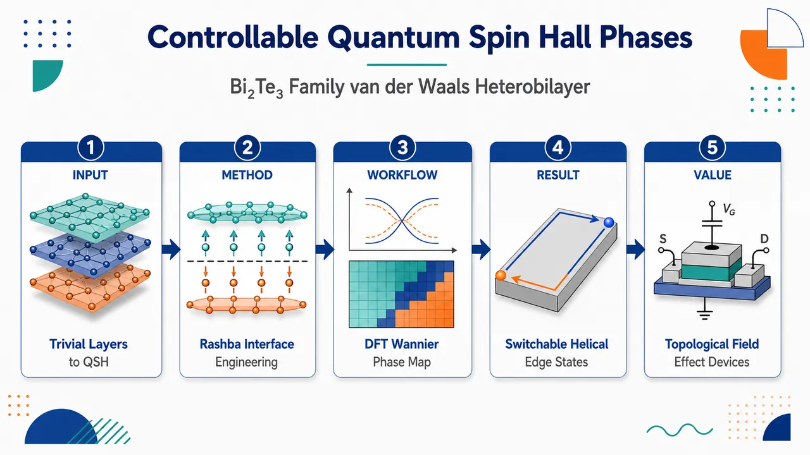
研究问题如何在 Bi₂Te₃ 家族的超薄二维极限中，用两个单独都是平庸绝缘体的五层单元构造出可控的量子自旋霍尔相；关键是弄清化学非对称 vdW 异质双层中的界面杂化、电荷转移、Rashba 自旋轨道耦合和外电场如何共同决定 Z₂ 拓扑边缘态的产生、关闭与恢复。创新方法将两个 Z₂=0 的平庸单五层 Bi₂Te₃-family 材料堆叠成 X₂Te₃/Bi₂SeTe₂（X=Sb, Bi）异质双层，利用层间电荷转移形成内建电势梯度，使不同 QL 的 pz 轨道在界面杂化，并由 SOC/Rashba 效应触发带反转；最具 Aha 的发现是：外电场不只是破坏拓扑相，还能补偿化学非对称性，把 QSH 边缘态像开关一样打开或关闭。工作流程输入 Sb₂Te₃ 或 Bi₂Te₃ 单五层与 Bi₂SeTe₂ 单五层 → 构建 1×1 vdW 异质双层并优化层间距 → DFT/VASP 加入 PBE、SOC 与 optB86b-vdW 计算能带、电荷转移和轨道投影 → Wannier90 构建紧束缚模型 → WannierTools 计算 Z₂ 不变量与边缘态谱 → 扫描层间位移、垂直外电场和扭转角 → 输出蓝/红拓扑相图、边缘态开关窗口和扭转鲁棒性。关键结果两个异质双层均从孤立 QL 的 Z₂=0 变为异质结构的 Z₂=1，并出现连接价带和导带的 QSH 边缘态；平衡层间距为 Sb 基 2.89 Å、Bi 基 2.83 Å，电荷转移分别为 1.10×10¹³ 和 0.54×10¹³ e/cm²。Sb₂Te₃/Bi₂SeTe₂ 可在 Δz≤0.15 Å 保持拓扑，Bi₂Te₃/Bi₂SeTe₂ 仅到 Δz=0.05 Å；E=-0.3 eV/Å 可增强 Γ 点拓扑能隙，反向电场可使边缘态消失。Sb 基体系在 21.8° 和 60° 扭转下仍保持拓扑边缘通道。应用价值提供一种用栅压、层距和扭角工程调控二维拓扑边缘通道的材料平台，可将绝缘体体态与无耗散自旋锁定边缘态在器件中切换；适合设计拓扑场效应晶体管、低功耗自旋电子器件和可组装 vdW 二维拓扑器件，并把 Bi₂Te₃ 家族的拓扑功能从厚膜三维体系推进到两个 QL 的原子级异质界面。第一部分：核心概览 (Overview)
通过第一性原理计算、Wannier 拓扑分析与紧束缚建模，两个本身为平庸绝缘体的 Bi₂Te₃-family 单五层 heterobilayer 可经界面杂化、层间电荷转移与 Rashba 自旋轨道耦合形成二维量子自旋霍尔相。关键突破在于：外电场并非必然破坏拓扑相，而可补偿化学非对称性并实现 QSH 边缘态开/关切换；同时边缘态对层间扭转保持鲁棒，为拓扑场效应晶体管和自旋电子器件提供可控材料平台。
---
第二部分：结构化快速回顾
《Controllable Quantum Spin Hall Phases in Bi₂Te₃₋Family van der Waals Heterobilayers》（None，）
背景
Bi₂Se₃/Bi₂Te₃/Sb₂Te₃ 家族在三维厚膜中具有成熟拓扑绝缘体行为，但在超薄极限中，上下表面态杂化会打开能隙，使二维拓扑性质高度依赖层间耦合、结构反演不对称性与外场。传统连续模型主要描述对称薄膜，而化学非对称异质双层存在能带偏移、电荷转移、层分辨轨道杂化，需要原子级第一性原理分析。
方法
采用 DFT/VASP + PBE-GGA + SOC + optB86b-vdW 优化和电子结构计算；通过 Wannier90 构建紧束缚模型；用 WannierTools 计算 Z₂ 拓扑不变量和边缘态；考察 Sb₂Te₃/Bi₂SeTe₂ 与 Bi₂Te₃/Bi₂SeTe₂ 的层间距离、外电场与扭转角影响。
结果
两种异质双层均从孤立 QL 的 Z₂ = 0 转变为异质结构的 Z₂ = 1。平衡层间距分别为 2.89 Å 和 2.83 Å；电荷转移分别为 1.10 × 10¹³ e/cm² 与 0.54 × 10¹³ e/cm²。Sb 基体系可在 Δz ≤ 0.15 Å 保持拓扑相，Bi 基体系仅到 Δz = 0.05 Å；外电场可增强或抑制 QSH 相；Sb 基体系在 21.8° 与 60° 扭转下仍保持拓扑边缘态。
讨论
拓扑相并非来自单一三维拓扑母体薄膜的上下表面态耦合，而是来自化学不同 QL 的 pz 轨道界面杂化、内建电势梯度与 SOC。外电场可补偿内建非对称性，从而诱导而非压制非平庸相，这与传统对称薄膜图像不同。
局限
计算主要基于 PBE-GGA DFT 与 Wannier 模型；未给出实验合成、输运测量、温度效应、缺陷/无序、基底、应变松弛和电子关联修正的系统检验。扭转分析重点放在 Sb₂Te₃/Bi₂SeTe₂，Bi 基扭转鲁棒性未同等展开。
结论
X₂Te₃/Bi₂SeTe₂（X = Sb, Bi）vdW heterobilayers 可把两个平庸 QL 转化为可外场调控的二维 QSH 体系。层间距离、外电场和扭转构成可调控制旋钮，尤其适合面向拓扑场效应晶体管与二维自旋电子器件。
---
第三部分：逐章节冷凝解析 (Section-by-Section Condensing)
Abstract
Tunable topological edge states
拓扑边缘/表面态的可调控性被置于器件应用核心位置，目标是实现可由外部参数控制的二维拓扑相。核心论断直接给出：*"The tunability and control of topological edge/surface states are crucial for the development of new device applications."* 研究对象不是传统厚膜三维拓扑绝缘体，而是由 Bi₂Te₃ family 中两个单独平庸五层单元堆叠而成的 vdW heterobilayers。
Quantum spin Hall phase from two trivial quintuple layers
两个本身拓扑平庸的 quintuple layers (QLs) 堆叠后产生 quantum spin Hall (QSH) phases，显示出“从平庸构件到非平庸异质结构”的界面诱导拓扑机制。核心表述为：*"we show the emergence of quantum spin Hall phases in van der Waals heterostructures formed by stacking two trivial quintuple layers from the Bi₂Te₃ family."* 方法组合为 first-principles calculations 与 Wannier-based tight-binding methods。
External control of edge-state switching
层间应变和外电场可调控边缘态，并具有拓扑边缘态开/关切换潜力：*"We demonstrate the tunability of the edge states under interlayer strain and external electric field effects, suggesting the possibility of switching topological edge states on/off by external control."* 这使体系具备类晶体管控制逻辑：拓扑导通态与平庸绝缘态可由外部场切换。
Twist robustness
层间扭转不会破坏 QSH 边缘通道，体现对几何扰动的稳定性：*"the quantum spin Hall edge channels remain robust against interlayer twist, highlighting their stability against external perturbations."* 这一点对实际 vdW 组装尤其重要，因为实验堆叠中扭角不可避免。
Device relevance
体系面向 topological field effect transistors 与 spintronic devices：*"valuable for practical applications, such as topological field effect transistors and spintronic devices."* 贡献不只是发现一种拓扑相，而是提出一种可创生、可操纵、对扭转鲁棒的二维拓扑材料路线。
---
I Introduction
Bi₂Se₃-family as a canonical topological platform
Bi₂Se₃ 家族晶体奠定了三维拓扑材料研究的经典平台地位：*"The family of Bi₂Se₃ crystal provided a ground-breaking picture in the research of topological phase in three-dimensional materials (3D)."* 该体系拥有成熟制备路线，包括 chemical vapor deposition、molecular beam epitaxy 和 sputtering；原始表述列出：*"chemical vapor deposition [1, 2], molecular beam epitaxy [3, 4, 5], and sputtering [6, 7]."*
Compositional and heterostructure flexibility
该材料族可通过化学计量调节与异质结构设计拓展性质，包括 Bi₂₋xSbxSe₃₋yTey 以及 Bi₂Se₃/Bi₂Te₃、Sb₂Te₃/Bi₂Te₃、Sb₂Se₃/Bi₂Se₃：*"different stoichiometric combinations, such as Bi₂-xSbxSe₃-yTey ... as well as heterostructures composed of different materials, including Bi₂Se₃/Bi₂Te₃, Sb₂Te₃/Bi₂Te₃ and Sb₂Se₃/Bi₂Se₃."* 这为构筑化学非对称界面提供了材料基础。
Thickness threshold for 3D topological phase
在该材料族中，三维拓扑相通常出现在超过四个五层单元的薄膜中：*"the 3D topological phase emerges in films thicker than four quintuple layers (QLs)."* 这一厚度标尺凸显当前工作的特殊性：两个 QL 极限中已经出现二维 QSH 相，而非依赖厚膜 3D TI 极限。
Perturbation robustness as a central issue
拓扑性质的鲁棒性需要面对结构和磁性扰动：*"A key aspect in the investigation of topological properties in these materials is their robustness against different perturbations, including structural modifications ... and magnetic effects."* 当前体系进一步把扰动类型扩展到层间距离、外电场和扭转角。
Ultrathin regime produces subtle topology
超薄极限中，拓扑表面态不再彼此独立；相反，局域在相反表面的波函数发生重叠：*"it becomes more subtle in the ultrathin regime, where wave functions localized on opposite surfaces overlap."* 这种杂化会在 Dirac 谱中打开能隙：*"This hybridization opens a gap in the Dirac spectrum"*，并可使体系在时间反演对称下转变为平庸或拓扑二维绝缘体：*"can transform the system into either a trivial or topological 2D insulator."*
Continuum models emphasize surface-state hybridization and asymmetry
传统连续模型把低能带描述为上下表面 Dirac 态耦合：*"the low-energy bands are described by coupled Dirac states associated with the top and bottom surfaces."* inter-surface coupling 打开杂化能隙，external potential difference 或 structure inversion asymmetry 产生 Rashba-like 分裂并可驱动能隙闭合：*"The inter-surface coupling opens a hybridization gap, while an external potential difference or structure inversion asymmetry produces Rashba-like splittings and can drive a gap closing."*
Symmetric-film expectation differs from heterobilayer behavior
在传统对称薄膜图像中，QSH 相通常靠近低外场、近对称极限，而强不对称性会压制非平庸相：*"the quantum spin Hall phase is commonly expected near the symmetric limit (low external field), whereas sufficiently strong asymmetry tends to suppress the nontrivial phase and drive the system towards a trivial insulating regime."* 当前异质双层的关键新意恰好相反：外电场可补偿内建非对称性并诱导拓扑相。
Continuum-parameter ambiguity motivates ab initio topology
仅从拟合连续模型参数判断 Z₂ 拓扑指数存在歧义：*"extracting the topological phase from fitted continuum parameters can be ambiguous, since different parameter sets may reproduce the same dispersion while implying different Z₂ indices."* 因此，化学非对称异质双层需要直接的第一性原理拓扑分析：*"a direct ab initio topological analysis is required."*
Chemically asymmetric heterobilayers have built-in asymmetry
实际 heterobilayer 不遵守对称薄膜假设；即使零外场，两个 QL 也不等价：*"the two quintuple layers are inequivalent even at zero applied field."* band offsets、charge transfer、layer-dependent orbital character、interface hybridization 会在施加外场前生成内建静电非对称性：*"generate an intrinsic electrostatic asymmetry before any external field is applied."*
Band inversion can occur away from Γ
化学非对称双层中的相关态可来自不同 QL，而不是单一拓扑母体的耦合表面态：*"the relevant states may originate from different quintuple layers rather than from the coupled surfaces of a single topological parent compound."* 因此，带反转和最小能隙可能偏离 Γ point：*"the band inversion and the minimum gap can evolve away from Γ point, requiring an atomistic description of the transition."*
External field can induce rather than suppress topology
外电场可增强或抵消内建非对称性，从而诱导而不是破坏拓扑相：*"an external field can either enhance or compensate the built-in asymmetry, making it possible to induce, rather than suppress, the topological phase."* 这构成相对于传统对称薄膜理论的中心物理反转。
Specific material platform and claimed mechanism
研究对象为 vdW X₂Te₃/Bi₂SeTe₂ heterostructures, X = Sb or Bi：*"we investigate this mechanism in van der Waals (vdW) X₂Te₃/Bi₂SeTe₂ heterostructures, with X = Sb or Bi."* 结论是两个拓扑平庸 QL 可通过界面杂化和电荷重分布形成 QSH 相：*"the stacking of two topologically trivial quintuple layers can generate a quantum spin Hall phase through interfacial hybridization and charge redistribution."*
---
II Results and discussion
Central results architecture
结果部分围绕三个控制维度展开：结构与电子性质、拓扑性质与外场/层距调控、扭转鲁棒性。核心逻辑是：层间堆叠引发 charge transfer 和 Rashba SOC，SOC 诱导带反转，Wannier 拓扑分析确认 Z₂ = 1，再通过 interlayer displacement、external electric field、twist angle 检验可控性与稳定性。
---
II.1 Structural and electronic properties
Heterobilayer construction from Bi₂SeTe₂ and X₂Te₃
研究体系由单层 Bi₂SeTe₂ QL 与单层 X₂Te₃ QL (X = Sb, Bi) 堆叠而成：*"We investigate the heterostructures formed by stacking a single QL of Bi₂SeTe₂ crystal with a single QL from the same family, X₂Te₃ (X = Sb, Bi)."* 两类 QL 同属 Pøverline3m1 空间群。
Lattice constants and small interface strain
平面晶格常数为 Sb₂Te₃: a = 4.26 Å、Bi₂Te₃: a = 4.38 Å、Bi₂SeTe₂: a = 4.29 Å：*"with in plane lattice constants a = 4.26 Å and 4.38 Å for Sb₂Te₃ and Bi₂Te₃, respectively ... Bi₂SeTe₂, a = 4.29 Å."* 异质界面使用 1 × 1 supercells 和平均晶格常数构造，导致各 QL 应变 ≲ 1%：*"Such choice leads to strain in each QLs ≲ 1%."*
Optimized interlayer separations
vdW 优化得到平衡层间距离：Sb₂Te₃/Bi₂SeTe₂ 为 z = 2.89 Å，Bi₂Te₃/Bi₂SeTe₂ 为 z = 2.83 Å：*"z = 2.89 Å and 2.83 Å equilibrium separation for Sb₂Te₃ and Bi₂Te₃, respectively, stacked on top of Bi₂SeTe₂."* 表 1 进一步给出界面晶格参数：Sb 基 LP = 4.28 Å，Bi 基 LP = 4.33 Å。
Distributed strain values
表 1 显示 Sb 基界面应变为 0.35/-0.35%，Bi 基界面应变为 -1.02/1.05%：*"The considered interface lattice parameter (LP) is given in Å, following the distribute strain in %, with compressive (tensile) strain indicated by negative (positive) values."* 这说明 Bi 基体系界面失配略大，可能影响轨道重叠和拓扑鲁棒性。
Intrinsic noncentrosymmetry and Rashba splitting
孤立 QL 为中心对称，但 heterostructures 天然非中心对称，并产生 Rashba splitting：*"Although the isolated QL show a centrosymmetric configuration, the heterostructures are intrinsically noncentrosymmetric, giving rise to a Rashba splitting."* 这一非中心对称性是外场可调拓扑机制的基础。
pz orbitals dominate near Fermi level
费米能级附近，价带顶和导带底区域主要由各 QL 的 pz orbitals 贡献：*"Near the Fermi level, only pz orbitals from each QL layer contribute to the region of valence band maximum and conduction band minimum."* 这将拓扑转变明确归因于层分辨 pz orbital hybridization，而非复杂多轨道混合。
No-SOC band character
无 SOC 时，价带顶主要来自 X₂Te₃ layer，导带底由两个 QL 的 pz 轨道杂化形成：*"In absence of SOC ... the top of valence band shows the contribution of X₂Te₃ layer, while the bottom of conduction band exhibits a hybridization of pz orbitals from both QLs."* 这提供了 SOC 诱导带反转前的参考能带排序。
SOC reduces gap and inverts band character at Γ
加入 SOC 后，能隙减小，并在 Γ point 出现带字符反转：*"The inclusion of SOC reduces the band gap and leads to an inverted band character at Γ point."* Bi₂SeTe₂ 的 pz 投影在 SOC 下出现在价带，说明层间杂化与 SOC 共同驱动带反转：*"the pz orbital projection from Bi₂SeTe₂ ... have contribution in the valence band, suggesting a band inversion mechanism driven by layer hybridization and SOC effects."*
Layer charge transfer magnitudes
堆叠后发生层间电荷转移：Bi₂Te₃ → Bi₂SeTe₂: 0.54 × 10¹³ e/cm²；Sb₂Te₃ → Bi₂SeTe₂: 1.1 × 10¹³ e/cm²：*"0.54 × 10¹³ e/cm² from Bi₂Te₃ to Bi₂SeTe₂ and 1.1 × 10¹³ e/cm² from Sb₂Te₃ to Bi₂SeTe₂ QLs."* 表 1 对应 CT 值为 0.54 和 1.10（单位 ×10¹³ e/cm²）。
Charge transfer enhances relativistic effects
电荷转移增强由反演对称性破缺引发的相对论效应：*"which enhances the relativistic effects emergent from intrinsic inversion symmetry breaking."* 这使 Sb 基体系由于更大 CT 而拥有更强 Rashba 相关调控能力。
Band offsets rationalize charge transfer
图 1(f) 使用相对真空能级的带边排列，比较 Bi₂SeTe₂、Sb₂Te₃、Bi₂Te₃ 以及其他可实验实现 QL，如 Bi₂Se₃ 和 BiSbSeTe₂：*"aligned relative to vacuum level, not only for the mentioned systems, but also for other experimentally achievable QLs, Bi₂Se₃ and BiSbSeTe₂."* 带偏移解释层间电荷转移方向，并为扩展材料组合提供依据。
Rashba Hamiltonian specifies microscopic coupling
层间电荷转移和非中心对称性诱导电势梯度 ∇V，产生 Rashba SOC：*"The charge transfer between layers, combined with a noncentrosymmetric nature, induces a potential gradient (∇V), which affects the electronic band structure due to the emergence of a Rashba SOC."* 给定哈密顿量为 Hᵣ = λᵣ ∇V · (σ × k)：*"given by the Hamiltonian HR = λR ∇V · (σ × k)."* 其中 λR 为 Rashba SOC 强度，σ 为 Pauli 矩阵，k 为动量：*"λR denotes the Rashba SOC strenght, σ the Pauli matrices, and k the momentum coordinates."*
Different from conventional thin-film limit
机制不同于传统三维 TI 超薄膜：*"This microscopic picture differs from the conventional thin-film limit of a three-dimensional topological insulator."* 对称超薄膜通常由同一母体化合物的上下表面态杂化描述，而当前体系的近费米态来自化学不同的 QL：*"the states near the Fermi level arise from chemically distinct quintuple layers."*
Band ordering controlled by orbital alignment and overlap
当前 heterostructures 的带序由带偏移、界面电荷转移和层分辨 pz 轨道杂化共同控制，而非仅由等价表面间的厚度依赖耦合决定：*"the band ordering is not controlled only by the thickness-dependent coupling between equivalent surfaces, but by the relative alignment and overlap of orbitals across the interface."* 这是必须采用原子级方法的原因。
---
II.2 Topological properties
SOC-induced orbital inversion suggests nontrivial topology
SOC 引起的层轨道贡献反转预示非平庸拓扑：*"The inversion of the layer orbital contribution upon inclusion of SOC suggests a nontrivial topology, emergent from the interplay between layer stacking and fully relativistic effects."* 这里的“fully relativistic effects”主要对应包含 SOC 的 DFT 计算。
Wannier charge centers confirm Z₂ = 1
通过 Wannier charge center method 计算 Z₂ invariant，两种 heterostructures 均为 Z₂ = 1，而孤立单 QL 均为 Z₂ = 0：*"both heterostructures show Z₂ = 1, while their isolated single QLs counterparts show Z₂ = 0."* 这直接证明拓扑相由堆叠界面产生，而非来自任一单独层的内禀拓扑性。
Other Bi₂Te₃-family combinations also become nontrivial
图 1(f) 中其他 QL 与 Bi₂SeTe₂ 构成的异质结构也呈现非平庸相：*"the other QLs from figure 1(f) in a heterostructure with Bi₂SeTe₂ also show a nontrivial phase."* 虽然具体数据位于补充材料 Fig. S1，但主文明确指出该机制具有材料族泛化潜力。
Edge states distinguish 2D QSH from 3D TI stacking
边缘态在 Sb₂Te₃/Bi₂SeTe₂ 与 Bi₂Te₃/Bi₂SeTe₂ 中分别出现；不同于超过四个 X₂Te₃ QLs 才显示 3D TI 相，当前两 QL 极限已经出现二维 QSH 相：*"Unlike the stacking of more than four X₂Te₃ QLs, which shows a 3D topological insulator phase, in these heterostructures the 2D quantum spin Hall nontrivial phase already emerges at the two QL limit."*
Interlayer separation restores triviality
由于孤立 QL 均为平庸，若层间距离趋于无穷大，体系应恢复平庸：*"Both isolated QLs display a trivial character, therefore the increase in layer separation in the heterostructure (Δz → ∞) may restore the trivial phase."* 这为通过 Δz 验证界面杂化机制提供了清晰物理检验。
Equilibrium structures show topological crossings
在平衡距离 Δz = 0 下，两种体系边缘态均出现连接价带和导带的拓扑交叉：*"Δz = 0 denotes the optimized equilibrium distance between the QLs, which shows topological crossings in ±π/a connecting the valence to conduction bands."* 这里的 ±π/a 是边缘布里渊区中的交叉位置描述。
Increasing Δz suppresses pz overlap and band inversion
增大层间距离会降低不同 QL 间 pz orbital overlap，使体能带变为非反转结构，并抑制价带中 Dirac crossing：*"by increasing the interlayer distances, a reduction in the overlap between pz orbitals from distinct QLs leads to a non-inverted bulk band structure."*
Sb₂Te₃/Bi₂SeTe₂ remains topological up to Δz = 0.15 Å
Sb 基异质结构在 Δz ≤ 0.15 Å 保持非平庸拓扑，边缘态从价带出现并连接到导带：*"In Sb₂Te₃/Bi₂SeTe₂, for interlayer separations up to Δz = 0.15 Å, the system exhibits a nontrivial topological character, with the edge states emerging from the valence band and connecting to the conduction band."*
Sb-based topology collapses for Δz > 0.15 Å
当 Δz > 0.15 Å 时，界面相互作用不足以诱导带反转：*"For larger displacements, Δz > 0.15 Å, the competition between intrinsic SOC and Rashba effect is reduced to the point where the interfacial interaction no longer induces band inversion."* 这说明非平庸相依赖有限层间耦合。
Bi₂Te₃/Bi₂SeTe₂ is less robust to vertical displacement
Bi 基体系对层间位移更敏感：*"the Bi₂Te₃/Bi₂SeTe₂ heterostructure is less robust against interlayer displacement."* 原因是层间电荷转移较小，即 Rashba 项较弱：*"This behavior arises from the smaller charge transfer between the QLs in this system, that is, smaller Rashba term."*
Bi-based critical displacement is between 0.05 Å and 0.10 Å
Bi 基体系在 Δz = 0.05 Å 仍为拓扑相，而在 Δz = 0.10 Å 变为平庸：*"The system remains topological up to Δz = 0.05 Å, while at Δz = 0.10 Å it becomes trivial."* 这与 CT 较小的 0.54 × 10¹³ e/cm² 相呼应。
Further separation increases trivial gap
在更大垂直分离下，平庸能隙继续增大：*"the trivial band gap increases with further vertical separation."* 这表明脱耦极限不是金属，而是由各自平庸 QL 构成的平庸绝缘态。
Reducing distance increases topological gap
减小层间距离会增加体拓扑能隙，扩大可量子化输运的能量窗口：*"the reduction in interlayer distance leads to the increase in topological gap in bulk, widening the energetic region of quantized transport."* 该结论位于主文并指向 Fig. S2，说明压缩 vdW 间隙可增强 QSH 可观测性。
External electric fields compete with displacement
正负层间位移会分别压制或增强拓扑能隙，因此外电场对拓扑相十分关键：*"Positive or negative interlayer displacement leads to the suppression or enhancement of the topological band gap due to hybridization and interfacial charge transfer effects, which suggests that external electric fields can play a significant role."*
External field enables switchable topology
在平衡距离下，垂直外电场可使两种 heterostructures 产生可切换拓扑相：*"For both heterostructures, at their equilibrium separation, an external electric field enables a switchable topological phase depending on its orientation."* 方向决定电场是增强还是抵消界面内建非对称性。
Negative field enhances topological gap
当 E = −0.3 eV/Å 时，电场促进电荷转移并增大 Γ 点体拓扑能隙：*"For instance, E = −0.3 eV/Å, favoring the increase in charge transfer, the topological bulk band gap at Γ point increases."* 这给出明确外场强度和响应方向。
Opposite field suppresses edge states
反向外电场使 Sb 基体系出现平庸能隙、拓扑边缘态消失；Bi 基体系到达相变临界点：*"By applying the external electric field in the opposite way ... a trivial gap appears for Sb₂Te₃, with the topological edge states connecting conduction and valence bands vanishing, while Bi₂Te₃ reaches a critical point of phase transition."* 更高反向场会导致平庸相：*"higher fields lead to a trivial phase."*
Topological field-effect transistor relevance
外电场驱动的 QSH 边缘通道开关行为使体系适合拓扑场效应晶体管：*"This switchable quantum spin Hall edge channels ... makes X₂Te₃/Bi₂SeTe₂ promising candidates for topological field effect transistors."* 其功能图像是用栅压控制拓扑边缘导电通道的存在与否。
Phase diagrams map electric field and displacement
图 3(a-3,b-3) 给出 interlayer displacement + external electric field + topology 的二维相图：*"Figures 3(a-3) and 3(b-3) show the topological phase diagram as a function of interlayer displacement and external electric field."* 红色区域表示平庸，蓝色区域表示非平庸：*"The red map indicates the trivial regime, whereas the blue indicate the nontrivial."*
Sb-based system tolerates positive field near +0.2 eV/Å at equilibrium
平衡层距下，Sb 基异质结构在约 +0.2 eV/Å 正电场附近仍保持拓扑：*"At the equilibrium separation, the topological behavior of the Sb₂Te₃/Bi₂SeTe₂ heterostructure remains resilient for electric field at the order near to +0.2 eV/Å."* 这说明 Sb 基体系相比 Bi 基具有更强调控窗口。
At Δz = +0.15 Å only zero or negative fields preserve topology
当层间距离增大到 Δz = +0.15 Å 时，仅负场或零场可保持非零拓扑指数：*"for interlayers distance on the order of Δz = +0.15 Å, only negative or zero external fields displays a non-zero topological index."* 这展示层距与外电场之间的竞争机制。
Sb-based topology reachable up to +0.6 Å with moderate fields
Sb 基异质结构即使分离到 +0.6 Å，仍可通过适度外场实现非平庸相：*"the nontrivial topological phase can be achieved with moderate electric fields for separations up to +0.6 Å."* Bi 基体系因较小 CT 而外场可调性较弱：*"the Bi-based heterostructure, due to its reduced charge transfer, shows weaker tunability under external electric fields."*
Physical interpretation of phase diagrams
相图反映 interfacial hybridization 与 electrostatic asymmetry 的竞争：*"The phase diagrams ... summarize the competition between interfacial hybridization and electrostatic asymmetry."* 增大层距削弱 pz orbital overlap 并推向平庸态；外场改变层分辨态的相对能级排列：*"an external electric field changes the relative alignment of the layer-resolved states."*
Field can compensate built-in asymmetry and restore inversion
外场可增强内建非对称性，也可补偿它，从而恢复带反转并诱导 QSH 相：*"Depending on its direction, the field can either enhance the intrinsic asymmetry of the heterobilayer or compensate it, restoring the band inversion and inducing the quantum spin Hall phase."* 这直接解释为何该体系不同于对称薄膜中“结构反演不对称性增强通常破坏非平庸相”的规律：*"This explains why the field response differs from the symmetric thin-film scenario."*
Independent Slater–Koster model supports mechanism
补充材料中的独立原子级 Slater–Koster model 再现相同定性相切换：*"An independent atomistic Slater–Koster model ... reproduces the same qualitative phase switching."* 这表明机制不依赖 Wannier 构造细节：*"confirming that the mechanism does not depend on the details of the Wannier construction."*
---
II.3 Twisted heterostructure
Twist as a robustness test
由于层间位移显著影响非平庸相，自然需要检验不同堆垛和扭转是否改变拓扑性质：*"This naturally raises the question of whether alternative staking configurations or interlayer twisting can also affects the topological properties."* 扭转研究集中于 Sb₂Te₃/Bi₂SeTe₂。
Twist angles considered
除 0° 外，考虑 21.8° 与 60° 扭转：*"we consider interlayer twists of 21.8° ... which give rise to a Moiré pattern, and for 60°."* 21.8° 形成 Moiré 图案，是在给定原子数约束下可公度的扭角。
Topology unchanged under twist
计算结果表明旋转不改变拓扑行为：*"Our results show that the topological behavior remains unchanged due to rotation."* 这意味着 QSH 相不是严格依赖高对称 AA/AB 堆垛的偶然结果，而具有 vdW 组装可容忍性。
Twist modifies dispersion but not topology
层间扭转使 Sb₂Te₃ 的 K 点相对于 Bi₂SeTe₂ 的 K 点在布里渊区中移动，从而改变能带色散，但不改变拓扑：*"Due to the interlayer twist, the K point of Sb₂Te₃ shifts to a different position in the Brillouin zone relative to that of Bi₂SeTe₂ counterpart, which affects the band dispersion, although does not affect the topological behavior."*
60° rotation has small energy penalty and clearer Γ crossing
60° 构型总能比最稳定 0° 构型高 1.9 meV/atom：*"For a 60° of rotation, which has a total energy 1.9 meV/atom higher than the 0° configuration (the most stable configuration)."* 该角度下 Γ 点交叉更清晰，因为能隙略大且体态杂化更弱：*"the crossing at Γ point becomes more clearly visible due to a slightly larger band gap and reduced bulk states hybridization."*
Energy scale comparable to other 2D vdW systems
Sb 基体系中 0° 与 60° 的能量差与其他二维 vdW 系统处于同一量级：*"The energy difference between 0° and 60° in Sb₂Te₃-based heterostructure lies on the same order of other 2D vdW systems."* 这意味着实验中可能出现多种堆垛/扭角，但拓扑相仍可保留。
Other less favorable stackings also topological
即便其他堆垛能量较高，也显示拓扑相：*"other stackings types, although less energetically favorable, also show the topological phase."* 这进一步增强了实际制备容错性。
---
III Conclusions
Two trivial QLs generate QSH phase
X₂Te₃ (X = Sb, Bi)/Bi₂SeTe₂ vdW 异质结构由两个不同且单独平庸的 QL 组成，却产生 QSH 相：*"the emergence of a quantum spin Hall phase in heterostructures composed of two trivial distinct quintuple layers from the Bi₂Te₃ family."* 这是最核心结论。
Charge transfer and noncentrosymmetry drive Rashba-mediated topology
第一性原理和紧束缚方法显示，层堆叠导致电荷转移；电荷转移与内禀非中心对称性结合，诱导 Rashba 效应，并在非平庸相形成中起关键作用：*"the layer stacking leads to charge transfer which, combined with the intrinsic noncentrosymmetric character, drives a Rashba effect playing a crucial role in the emergence of a nontrivial phase."*
Interlayer displacement confirms interface origin
增大层间距离使两种 heterostructures 都转向平庸相：*"by increasing the separation, a trivial phase emerges in both heterostructures."* 这确认 QSH 相依赖界面耦合。相反，减小层距提高拓扑能隙并增强 Sb 基体系 Dirac crossing 可见性：*"reducing the distance increases the topological band gap and enhances the visibility of the Dirac crossing in Sb₂Te₃-based system."*
Electric-field switching provides device mechanism
外电场可打开或关闭 QSH 边缘通道：*"control the quantum spin Hall edge channels by switching it on and off under an external electric field."* 该机制直接指向 topological field-effect transistors：*"suggesting potential applications in topological field-effect transistors."*
Dimensionally reduced Bi₂Te₃-family topology
该路线在以三维非平庸相著称的 Bi₂Te₃ family 中实现二维低维拓扑性质：*"a route to induce topological properties in dimensionally reduced systems from the Bi₂Te₃ family, well known for exhibiting nontrivial phases primarily in three-dimensional scenarios."* 这把材料族拓扑功能从厚膜/体相扩展到单 QL 级 vdW 异质结构。
Robustness against electric field, displacement, and twist
体系对多类外部扰动的响应被系统刻画，包括外电场、层间位移和扭转：*"their robustness against external perturbations, such as electric field, interlayer displacement, and interlayer twist."* 严格地说，外电场和位移既可破坏也可恢复拓扑相，因此“robustness”更准确应理解为可控相图和有限稳定窗口。
Application promise
由于外电场可切换拓扑性质且实验可控性高，X₂Te₃/Bi₂SeTe₂ heterostructures 被定位为二维拓扑器件候选：*"Due to their switchable topological properties under an external electric field and high experimental controllability, the X₂Te₃/Bi₂SeTe₂ heterostructures are promising candidates for applications in topological field-effect transistors and devices that require nontrivial systems with two-dimensional architecture."*
---
Methodology
DFT implementation and exchange-correlation functional
第一性原理计算基于 density functional theory (DFT)，使用 VASP：*"First-principles calculations were performed within density functional theory (DFT) employed in Vienna ab initio simulation package (VASP)."* 电子密度采用 GGA-PBE：*"The electronic density was described using the generalized gradient approximation (GGA) in the Perdew-Burke-Ernzehof formalism."*
Plane-wave cutoff
动能截断设为 300 eV：*"with the cutoff in kinect energy of 300 eV."* 该值用于平面波基组展开，决定总能和能带收敛精度。
k-point sampling
非扭转单位胞使用 11 × 11 × 1 Monkhorst-Pack grid：*"For the non twisted unit cells, the Brillouin zone were sampled using the 11 × 11 × 1 Monkhost-Pack grid."* 扭转结构使用 5 × 5 × 1 grid：*"while for the twisted we maped using 5 × 5 × 1 grid."*
Spin-orbit coupling included by default
除非特别说明，所有计算包含全相对论效应：*"Unless otherwise mentioned, all calculations were conducted with the inclusion of fully relativistic effects."* 这对 Bi/Sb/Te/Se 重元素体系至关重要，因为 SOC 是带反转和 QSH 相的核心来源。
vdW optimization and convergence
层间距离使用非局域 vdW 泛函 optB86b 优化：*"The interlayer distance were optimized within the non-local van der Waals functional optB86b."* 总能收敛标准为 10⁻⁶ eV：*"in a total energy convergence criterion of 10⁻⁶ eV."*
Twisted structures generated with SAMBA
扭转 Sb₂Te₃/Bi₂SeTe₃ 结构通过 SAMBA package 生成：*"We generate the twisted Sb₂Te₃/Bi₂SeTe₃ structure within the SAMBA package facility."* 在单位胞最多 100 atoms 的约束下，只有 21.8° 给出公度胞：*"under the criteria up to 100 atoms in unit cell, only the twisted angle of 21.8° give a comensurable cell."* 需要注意主文主体体系为 Sb₂Te₃/Bi₂SeTe₂，方法句中出现 Bi₂SeTe₃ 可能是化学式笔误。
Wannier tight-binding extraction
紧束缚模型参数由 Wannier90 提取：*"We extracted the parameters from tight-biding model within the Wannier90 package."* 这使 DFT 能带可映射到局域轨道模型，并用于边缘态与拓扑指数计算。
Topological invariant and edge states
Z₂ invariant 与拓扑边缘态使用 WannierTools 计算：*"We calculate the topological properties, such as Z₂ invariant and Topological states within the Wanniertools code."* 这为异质结构 Z₂ = 1 的结论提供计算框架。
---
Data availability statement
Data included in article and supplementary files
数据可得性声明为所有支持结论的数据均包含在正文和补充材料中：*"All data that support the findings of this study are included within the article (and any supplementary files)."* 主文依赖若干补充图，如 Fig. S1、Fig. S2、Fig. S3，分别支持其他 QL 组合、层距压缩能隙增强、Slater–Koster 模型相切换。
---
Acknowledgements
Funding and computational resources
经费与算力支持来自巴西机构 FAPESP、CNPq、INCT-Nanocarbono、INCT-Materials Informatics 以及 LNCC SDumont：*"financial support from the Brazilian agencies FAPESP ... CNPq, INCT-Nanocarbono, INCT-Materials Informatics, and the LNCC (SDumont, Projects DIDMat2 and SCAFMat2) for computer time."* FAPESP 项目号包括 23/09820-2、24/00989-7、25/13106-9。
---
第四部分：深度理解与语言支持 (Understanding & Nuance)
1. 术语解析
Quantum spin Hall phase
Quantum spin Hall phase 指二维时间反演对称拓扑绝缘相：体态绝缘，边缘存在一对自旋-动量锁定的反向传播通道。语境中核心判据是 Z₂ = 1 和边缘态连接价带与导带。不同于普通 Rashba 分裂金属，QSH 相要求全局体能隙和受时间反演保护的 helical edge states。
Quintuple layer (QL)
Quintuple layer 是 Bi₂Te₃/Bi₂Se₃/Sb₂Te₃ 家族的基本层状结构单元，通常由五个原子层组成。语境中“single QL”很关键，因为单独一个 QL 是 Z₂ = 0 的平庸绝缘体；两个不同 QL 堆叠后才通过界面效应变成 Z₂ = 1。
Band inversion
Band inversion 指导带和价带的轨道/层/宇称等角色发生反常交换。在该体系中，SOC 加入后 Bi₂SeTe₂ 的 pz 轨道投影进入价带，说明原本的层分辨能带排序被反转。微妙处在于：这里的带反转不完全是传统单体 Bi₂Se₃ 在 Γ 点的原子轨道反转，而是由不同 QL 之间的 pz 杂化、带偏移和电荷转移共同触发。
Structure inversion asymmetry
Structure inversion asymmetry 指结构沿垂直方向不再具有反演对称性。传统对称薄膜中，增强结构反演不对称性通常破坏 QSH 相；当前化学非对称 heterobilayer 已经存在内建不对称性，外电场可能补偿它，因此反而恢复带反转。这是全文最容易误读的概念之一。
Rashba splitting / Rashba SOC
Rashba splitting 是由反演对称性破缺与 SOC 共同导致的自旋分裂。哈密顿量 HR = λR ∇V · (σ × k) 表明它依赖电势梯度 ∇V、动量 k 和自旋 Pauli 矩阵 σ。语境中 Rashba 不是单纯副现象，而是与电荷转移、层间杂化一起参与拓扑相形成和外场切换。
---
2. 疑难查证
为什么两个平庸 QL 堆叠后能变成拓扑非平庸？
拓扑性质不是简单相加。两个孤立 QL 分别为 Z₂ = 0，但堆叠后出现三个新因素：
- 能带偏移：两个 QL 的价带和导带相对真空能级不同，堆叠后能级重新排列。
- 层间电荷转移：Sb₂Te₃ 或 Bi₂Te₃ 向 Bi₂SeTe₂ 转移电荷，形成内建电势梯度。
- pz 轨道界面杂化 + SOC：不同层的 pz 轨道在界面处混合，SOC 使能带角色反转。
一旦价带和导带在全局能隙内发生正确的拓扑反转，Z₂ 指数从 0 变成 1，边界必须出现 helical edge states。
为什么外电场有时增强拓扑相，有时破坏拓扑相？
该 heterobilayer 零外场时已经存在内建层间电势差。外加电场有两种方向：
- 与内建电势差同向：可能增强层间能级错位，使带反转被破坏；
- 与内建电势差反向：可能补偿过强的内建非对称性，使相关 pz 态重新靠近并恢复带反转。
因此外场不是单调“越大越拓扑”或“越大越平庸”，而是取决于它如何改变层分辨能级排列。
为什么 Sb 基体系比 Bi 基体系更鲁棒？
关键数值是电荷转移：
Sb₂Te₃/Bi₂SeTe₂: 1.10 × 10¹³ e/cm²；
Bi₂Te₃/Bi₂SeTe₂: 0.54 × 10¹³ e/cm²。
Sb 基体系电荷转移更大，内建电势梯度和 Rashba 相关效应更强，因此在层间距离增大时仍能维持拓扑带反转到 Δz = 0.15 Å；Bi 基体系只维持到 Δz = 0.05 Å，在 Δz = 0.10 Å 已转为平庸。
为什么扭转改变能带色散却不改变拓扑？
扭转会改变两个层的布里渊区相对取向，例如 Sb₂Te₃ 的 K 点相对 Bi₂SeTe₂ 的 K 点移动，因此能带折叠和色散细节会变化。但只要体能隙不闭合，Z₂ 拓扑指数不会改变。拓扑相变必须经历能隙闭合-重开；若扭转只改变色散而不关闭拓扑能隙，边缘态仍受保护。
---
第五部分：创新评估与关联 (Synthesis & Novelty)
1. 创新性判断
From thick 3D topological films to two-QL QSH heterobilayers
过去 Bi₂Se₃/Bi₂Te₃/Sb₂Te₃ 家族的拓扑研究主要集中于三维体相或厚度超过数个 QL 的薄膜；常见判断是 3D topological phase emerges in films thicker than four QLs。当前结果把拓扑相降到两个单 QL 的化学异质 vdW 结构，并且两个单独 QL 都是平庸相。这解决了低维极限中如何在 Bi₂Te₃-family 内部人工创生二维 QSH 相的问题。
Chemically asymmetric heterobilayer mechanism beyond symmetric thin-film models
近年连续模型和 GW 分析已经指出超薄 Bi₂Se₃ 薄膜中表面态杂化、结构反演不对称性和 Z₂ 判断存在复杂性。当前机制不再依赖“同一三维 TI 母体的上下表面态耦合”，而强调化学不同 QL 的带偏移、电荷转移、pz 轨道界面杂化与 Rashba SOC。这解决了连续模型难以可靠处理的化学非对称界面问题。
Electric field can induce topology by compensating built-in asymmetry
传统对称薄膜图像中，增强结构反演不对称性通常压制 QSH 相。当前体系展示相反可能：外电场可补偿内建层间非对称性，从而诱导或恢复 QSH 相。这为拓扑开关提供更灵活的物理机制，也超越了简单“外场破坏拓扑”的图像。
Topological on/off switching connected to realistic device concepts
外电场可使边缘态连接或断开价带与导带，形成可切换 QSH 通道。与过去仅预测稳定拓扑材料不同，这里直接给出 topological field-effect transistor 所需的控制变量：垂直电场、层距调节、异质层选择。
Twist robustness improves vdW experimental feasibility
vdW heterostructures 实验制备中扭角和堆垛不可避免。Sb₂Te₃/Bi₂SeTe₂ 在 0°、21.8°、60° 下均保持拓扑相，且 60° 构型只比 0° 高 1.9 meV/atom。这说明 QSH 相不是精细堆垛条件下的偶然现象，而具有实际组装容忍度。
Material-family extensibility
图 1(f) 和补充材料指出，除 Sb₂Te₃/Bi₂SeTe₂ 与 Bi₂Te₃/Bi₂SeTe₂ 外，其他 Bi₂Te₃-family QL 与 Bi₂SeTe₂ 组合也可能非平庸。这将创新点从单一材料预测扩展为一种界面工程规则：选择具有合适带偏移和电荷转移的平庸 QL，可构造二维 QSH heterobilayer。
-
12
📊 含图深析
📄 摘要：提出一维金属纳米线置于螺旋反常磁体表面并邻近 s 波超导体的拓扑超导方案，无需常规自旋轨道耦合和净磁化。规范变换表明螺旋参考系自然产生自旋-动量锁定，反常磁性破坏时间反演；拓扑相可由化学势和反常磁强度调节。
💡 亮点：螺旋反常磁体表面可同时提供自旋-动量锁定和时间反演破缺，从而在 s 波近邻纳米线中产生马约拉纳束缚态。该方案去除了常规 SOC 与净磁化要求。
📖 展开分析 + 配图
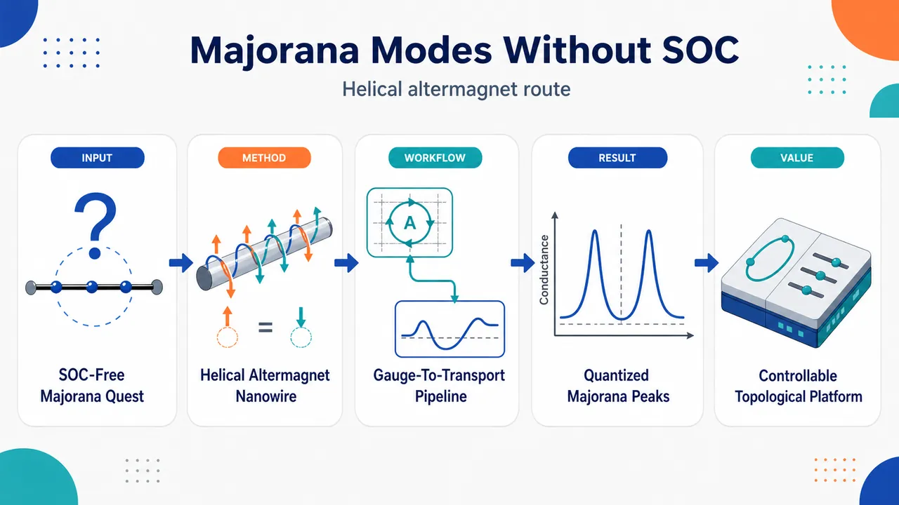
研究问题如何在不依赖传统自旋轨道耦合、外磁场或净磁矩的条件下，在一维纳米线中实现拓扑超导与 Majorana 束缚态；核心矛盾是 Majorana 通常需要“自旋-动量锁定 + 时间反演对称性破缺”，而常规方案依赖 SOC 和 Zeeman 场。创新方法提出“金属纳米线 / 二维螺旋交替磁体 / s-wave 超导体”异质结构：螺旋 Néel 矢量像一条沿纳米线旋转的磁纹理，经局域 SU(2) 规范变换后被拉直，同时在电子跃迁中生成 SOC-like 自旋-动量锁定；交替磁性虽零净磁矩，却在动量空间破坏时间反演并于 k=π 打开关键能隙，从而替代传统“SOC + 磁场”。工作流程输入为一维金属纳米线置于螺旋交替磁体表面并近邻 s-wave 超导；建立含螺旋 Néel 矢量、交替磁强度 t_J、化学势 μ、配对 Δ 的 BdG 紧束缚模型；通过局域自旋规范变换获得平移不变哈密顿量和自旋平移能带；分析 k=π 处带反转并计算 Pfaffian Z₂ 与 BDI 整数拓扑不变量；在有限链中求零能波函数；最后用金属 lead 和 STM 的 Green 函数输运计算端点与畴壁零偏压电导。关键结果得到解析拓扑条件：(4t_J)² > Δ² + (2t cos(θ/2) − μ)²；有限纳米线两端出现局域 Majorana 零模，端点产生量子化 2e²/h 零偏压峰；正、负螺旋手性 θ>0 与 θ<0 在 BDI 分类中属于不同整数拓扑相，手性畴壁处出现两个受手征对称性保护的 Majorana 模，并给出 4e²/h 零偏压峰；拓扑区域可由 μ、t_J、θ 灵活移动和开关。应用价值提供一种“无 SOC、无净磁性”的 Majorana 器件设计路线，降低对强 SOC 材料、外磁场和铁磁层的依赖；可利用交替磁体的 Néel 矢量、螺旋手性和化学势进行拓扑相工程；端点 2e²/h 与畴壁 4e²/h 电导信号为实验识别 Majorana 提供双重可视化判据，并为拓扑量子计算平台提供更可控的候选结构。第一部分：核心概览
提出一种在二维螺旋交替磁体表面的一维金属纳米线中实现拓扑超导与Majorana 束缚态的方案；只需近邻 s-wave 超导，无需传统自旋轨道耦合与净磁矩/外磁场。核心机制是：螺旋 Néel 矢量经局域 SU(2) 规范变换后自然产生类似 SOC 的自旋-动量锁定，交替磁性提供时间反演对称性破缺并在 (k=π) 打开能隙。拓扑相可由化学势、交替磁强度、螺旋频率调控，并给出端点 (2e²/h) 与畴壁 (4e²/h) 零偏压电导信号。该方案在 Majorana 平台设计中具有“无 SOC、无净磁性”的概念推进意义。
---
第二部分：结构化快速回顾
《Majorana modes in helical altermagnet without net magnetism and spin-orbit coupling》（None，）
背景
Majorana 束缚态通常依赖 p-wave 超导有效配对，而人工诱导 p-wave 往往需要强 SOC 与外磁场或铁磁邻近层。交替磁体具有零净磁矩但能产生动量空间自旋劈裂，为无净磁拓扑超导提供新路径；既无 SOC 又无净磁性的 Majorana 平台仍是关键空缺。
方法
构造一维金属纳米线置于二维螺旋交替磁体表面并近邻 s-wave 超导的 BdG 模型；通过局域规范变换将空间依赖的 Néel 矢量转化为旋转参考系中的固定交替磁项与自旋依赖跃迁项；使用能带分析、Pfaffian (Z₂) 不变量、BDI 类整数拓扑不变量、有限链波函数与 Green 函数输运计算验证拓扑性。
结果
螺旋结构产生自旋-动量锁定，交替磁性破坏时间反演并在 (k=π) 打开大小约 (± 4t_J) 的能隙。拓扑条件为
[
(4t_J)²>Δ²⁺⁽²to̧sfracθ2-μ)² .
]
有限链端点出现 Majorana 零模；金属端接测得 (2e²/h) 零偏压峰；相反手性纳米线畴壁处出现两个由手征对称性保护的 Majorana 模，对应 (4e²/h) 零偏压峰。
讨论
该体系同时实现 Majorana 所需的两项物理要素：时间反演对称性破缺与自旋-动量锁定，但不依赖传统 SOC 或净磁矩。(Z₂) 分类无法区分 (θ>0) 与 (θ<0) 的手性拓扑相，需使用 BDI 类整数拓扑分类。
局限
方案主要为理论建模与数值计算；螺旋交替磁体尤其 d-wave 类型的材料实现仍依赖实验发展。补充材料中处理了 disorder、SOC 共存、参数调控等，但主文未给出完整实验制备流程，也未系统讨论多带、界面粗糙、超导自能、有限温度与相互作用效应。
结论
螺旋交替磁体-金属纳米线-s-wave 超导异质结构构成一种无需 SOC 与净磁性的 Majorana 平台。拓扑相可由 (μ)、(t_J)、(θ) 灵活调节，端点和畴壁输运信号分别提供 (2e²/h) 与 (4e²/h) 的可观测判据。
---
第三部分：逐章节冷凝解析
Abstract
A SOC-free and net-magnetism-free Majorana platform
核心贡献是提出一维金属纳米线置于螺旋交替磁体表面并近邻 s-wave 超导体的 Majorana 实现机制，直接移除传统平台中最苛刻的两个条件：传统 SOC 与净磁性/外磁场。原始表述为 *"We propose a scheme to realize topological superconductor and Majorana bound states (MBSs) in a one-dimensional metal nanowire on the surface of a helical altermagnet and in proximity to an s-wave superconductor, removing the requirement of conventional spin-orbit coupling and net magnetism."*
Gauge transformation reveals emergent spin-momentum locking
通过规范变换，螺旋参考系中的 Néel 矢量被固定，而电子动能项产生自旋依赖动量结构，等效实现自旋-动量锁定；交替磁性则承担时间反演对称性破缺功能。关键句为 *"Through gauge transformation, we demonstrate that the helical frame naturally induces spin-momentum locking while the altermagnetism breaks time-reversal symmetry."*
Topological phase tunability
拓扑超导相可通过三类参数控制：化学势 (μ)、交替磁强度 (t_J)、螺旋频率 (θ)。摘要明确给出 *"The topological superconducting phase is well tuned by chemical potential, altermagnet strength, and helical frequency."*
Quantized transport signatures
端点 Majorana 零模产生量子化 (2e²/h) 零偏压峰；相反手性纳米线畴壁处两个 Majorana 模产生 (4e²/h) 隧穿电导。摘要给出 *"a (2e²/h) zero-bias peak at nanowire ends and a (4e²/h) tunneling conductance at the domain wall of nanowires with opposite chirality"*，检测方式分别为金属 lead 与 STM：*"detected via metal lead and scanning tunneling microscopy, respectively."*
---
Introduction
Majorana bound states as non-Abelian quasiparticles
Majorana 束缚态是自身反粒子的准粒子，因非阿贝尔统计和容错拓扑量子计算潜力受到关注。原文定义为 *"Majorana bound states (MBSs), exotic quasiparticles that are their own antiparticles, have attracted considerable interest for their non-Abelian statistics and potential applications in fault-tolerant topological quantum computation."*
Existing platforms usually require SOC, magnetism, or topological materials
已有 Majorana 平台包括拓扑绝缘体、强 SOC 半导体、磁原子链等。相关句子为 *"A number of schemes to realize MBSs have been put forward, including topological insulators, semiconductors with strong spin-orbit coupling (SOC), and magnet atom chains."* 实验证据也来自多类系统，包括 *"magnet atom chains and vortex of topological superconductor (TSC)."*
The conventional p-wave route imposes strong practical constraints
Majorana 通常出现在 p-wave 超导序中，而诱导 p-wave 有效配对一般要求 SOC 与外磁场/铁磁邻近层共存。关键表述为 *"Generally, MBSs appear in p-wave superconducting order. However, inducing p-wave superconducting order usually requires the coexistence of SOC and external magnet field or adjacent ferromagnet, which imposes substantial constraints for practical implementation."*
The central problem is realizing MBSs without SOC and net magnetism
研究目标被压缩为一个明确问题：如何在同时缺少传统 SOC 与净磁性的系统中实现 MBSs。原文直接写道 *"Consequently, realizing MBSs in systems without SOC and net magnetism is imperative."* 半导体纳米线方案虽成熟，但仍需强 SOC 与外磁场：*"A promising proposal to realize MBSs is based on a one-dimensional (1D) semiconducting nanowire with strong SOC in proximity to s-wave superconductor (SC) under an external magnet field."*
Altermagnetism supplies spin splitting without net magnetization
交替磁体属于共线反铁磁体，实空间中有补偿的反平行磁序，但动量空间中存在自旋劈裂能带。原文描述为 *"altermagnet, a class of colinear antiferromagnet"*，其特征是 *"compensated antiparallel magnet order in real space with opposite spin-sublattice connected by crystal-rotation symmetry and demonstrates a spin-splitting energy band structure in momentum space."*
Previous altermagnetic Majorana proposal still needed SOC
已有交替磁 Majorana 工作已去除净磁性，但仍依赖 SOC。关键对比为 *"Combining with the feature of altermagnet, a recent work realizes 1D TSC and MBSs without net magnetism. However, the SOC is still an essential element."*
The proposed helical altermagnet removes both requirements
新方案是在二维螺旋交替磁体表面放置一维金属纳米线，并近邻 s-wave 超导体，目标是同时去除 SOC 与净磁性。原文表述为 *"we propose a scheme to realize MBSs in a metal nanowire on the surface of a two-dimensional (2D) helical altermagnet and in proximity to an s-wave SC without both SOC and net magnetism."*
End Majoranas and chirality-domain-wall Majoranas
有限长度纳米线端点出现 MBSs；当纳米线中螺旋手性反转形成畴壁时，畴壁处还会出现两个由对称性保护的 MBSs。原文给出 *"MBSs are localized at both ends of finite-size nanowire"*，以及 *"at the domain wall of nanowire where the helical chirality is inverted, we predict the existence of two MBSs protected by the chiral symmetry."*
---
Model construction and energy band analysis
Low-energy altermagnetic nanowire Hamiltonian
一维金属纳米线沿 (z) 方向，低能哈密顿量包含自由电子项与交替磁自旋劈裂项：
[
frachbar² k_z²2m^*-tildeμ+T_J k_z²σ₁ .
]
其中 (k_z) 为波矢，(m^*) 为有效质量，(tildeμ) 为化学势，(T_J) 为交替磁强度，(σ₁,₂,₃) 作用于自旋空间。原文说明 *"the last term generates spin splitting with altermagnet Néel vector along x axis"*。
Helical altermagnetism encoded by a rotating Néel vector
螺旋交替磁序通过位置依赖矩阵
[
σₙ₍z)=o̧s(θ z)σ₁₊sin(θ z)σ₂
]
表示，其中 (θ) 是旋转频率，Néel 矢量在 (xy) 平面随 (z) 连续旋转。原文为 *"which represents that the Néel vector rotates continuously in xy plane and (θ) is the rotation frequency."*
BdG Hamiltonian includes kinetic, altermagnetic, helical, and s-wave pairing terms
BdG 哈密顿量使用 Nambu 基
[
Ψ={ψₚ̆arrow,ψ_downarrow,ψₚ̆arrow^dagger,ψ_downarrow^dagger}^T
]
构造，含有 (Δ) 近邻诱导配对势与粒子-空穴 Pauli 矩阵 (τ₁,₂,₃)。原文标注 *"(Δ) represents proximity-induced pairing potential, the Pauli matrices (τ₁,₂,₃) act on the particle-hole space."*
Tight-binding Hamiltonian is used for all discrete numerical calculations
数值计算采用紧束缚格点模型，格点 Nambu 基为
[
Ψⱼ₌{cⱼₚ̆ₐᵣᵣₒw,cⱼdₒwₙₐᵣᵣₒw,cⱼₚ̆ₐᵣᵣₒwdagger,cⱼdₒwₙₐᵣᵣₒwdagger}^T .
]
格点编号 (j=1,2,łdots,N)，(N) 为纳米线长度。参数映射为
[
t=frachbar²2m^*a²,quad t_J=fracT_Ja²,quad μ=tildeμ-2t .
]
原文强调 *"Eq. (2) is used for all the discrete calculations in this Letter."*
Natural units set (a=1) and (t=1)
计算中取晶格常数 (a=1) 作为长度单位，因此相邻格点 Néel 矢量夹角数值等于 (θ)；能量单位取 (t=1)。原文为 *"Here we set the lattice constant (a=1) as length unit. Under this nondimensionalization, the angle between Néel vectors at adjacent sites becomes numerically equal to (θ). We set (t=1) as energy unit in the following calculations."*
Local SU(2) gauge transformation removes spatial dependence
为求能谱，进行局域规范变换：
[
cⱼₚ̆ₐᵣᵣₒwi̊ghtarrow cⱼₚ̆ₐᵣᵣₒwe⁻ⁱθ j/²,quad
cⱼdₒwₙₐᵣᵣₒwi̊ghtarrow cⱼdₒwₙₐᵣᵣₒweⁱθ j/².
]
变换后哈密顿量获得平移不变性。原文写道 *"we perform a location-dependent gauge transformation"*，并说明 *"Under the spin local coordinate, the Hamiltonian in Eq. (3) has translational invariance now and can be Fourier transformed."*
Rotating spin frame fixes the Néel vector and generates SOC-like coupling
该规范变换是局域 SU(2) 旋转，使自旋坐标轴在 (xy) 平面旋转；在旋转参考系中，螺旋交替磁 Néel 矢量始终沿 (x) 轴固定。原文说明 *"The gauge transformation belongs to a local SU(2) unitary transformation, causing the coordinate axes of spin space to rotate in xy plane."* 物理结果是动能项在旋转参考系中产生自旋与动量内禀耦合：*"resulting in an intrinsic coupling between spin and momentum, similar to SOC."*
Momentum-space Hamiltonian displays spin-shifted bands
无超导的电子哈密顿量 (H₁₍ₖ₎) 中，对角项为
[
-2to̧s(kmp θ/2)-μ ,
]
即自由电子能带在动量空间平移 (±θ/2)。原文解释为 *"the diagonal term is just the free electron’s band structure which is translated by (±θ/2) from (-2to̧s(k)-μ), resulting in momentum being locked with z component of spin."*
Altermagnetism opens a gap and breaks time-reversal symmetry
非对角项来自交替磁贡献；螺旋结构提供能带劈裂，交替磁性破坏时间反演并在 (k=π) 打开能隙。原文关键句为 *"the helical structure ((θ)) provides the band splitting"*，以及 *"altermagnet ((t_J)) breaks the time-reversal symmetry and opens a gap of (± 4t_J) at (k=π)."* 能隙中心能量为
[
2to̧sfracθ2-μ .
]
Non-helical altermagnet lifts spin degeneracy except at (k=0)
当 (θ=0) 时，体系没有螺旋结构，但交替磁项仍能劈裂自旋简并；例图参数为 (μ=1.9,θ=0,t_J=0.1)。原文为 *"When (θ=0) (without helix), the spin degeneracy is lifted except (k=0) and there is a spin splitting of (± 4t_J) at (k=π)."*
Kitaev criterion links twofold Fermi-level degeneracy to TSC
依据 Kitaev 判据，费米能附近两重简并支持一维拓扑超导。原文为 *"according to the kitaev criterion, the system supports TSC when degeneracy is twofold around the Fermi level (zero energy)."* 因而可通过调节 (θ)、(μ)、(t_J) 控制拓扑相。
Tuning (θ), (μ), and (t_J) controls gap position and gap size
(θ) 与 (μ) 调整能隙中心 (2to̧s(θ/2)-μ) 相对费米能的位置；(t_J) 调整能隙大小。原文为 *"By tuning (θ) and (μ), we can adjust the relative position between the center of gap ((2to̧sθ/2-μ)) and Fermi level. Simultaneously, (t_J) can be regulated to control the size of the gap."*
Unlike semiconductor nanowires, the altermagnetic strength directly affects phase transition
半导体纳米线中 SOC 强度通常不直接决定拓扑相变；这里 (t_J) 直接影响能隙与拓扑条件。原文对比为 *"In contrast, in the semiconducting nanowire model, the strength of SOC cannot directly influence the phase transition."*
Superconducting spectra show the necessity of both helix and altermagnetism
在 (μ=1.9,Δ=0.15) 下，图 1(d-f) 分别比较无螺旋交替磁性、仅交替磁性、二者兼有三种情况。无螺旋交替磁性时存在自旋简并；仅增加 (t_J) 会使超导能隙减小，并在
[
t_J>t_J^c,quad t_J^capprox fracΔ2+μ
]
后保持闭合。原文为 *"When (t_J) increases from zero, the introduction of altermagnet term breaks the spin degeneracy and the SC gap decreases. When (t_J>t_J^c) ((t_J^capproxfracΔ2+μ)), the SC gap keeps closed."*
Helical order reopens the superconducting gap and drives TSC
当 (θ≠0) 后，超导能隙重新打开并进入拓扑超导态。原文写道 *"However, when (θ≠0) is introduced, the SC gap reopens, driving the system into TSC state, where MBSs are expected to emerge."*
Two superconducting gaps have different physical origins
超导近邻后出现两个不同能隙：gap2 主要由旋转频率 (θ) 控制；gap1 位于 (k=π)，与拓扑相变相关。原文为 *"In this situation, two distinct gaps emerge. gap2 is mainly governed by the rotation frequency, gap1 (located at (k=π)) is associated with phase transition."*
Phase transition occurs only at (k=π)
交替磁体性质保证相变仅发生在 (k=π)，因为 (k=0) 的 Kramers 简并没有被解除。原文为 *"the properties of altermagnet guarantee the phase transition only occurs at (k=π) (because Kramers degeneracy is not lifted at (k=0))."*
Analytic topological criterion
基于 (k=π) 处 gap1 的带反转，拓扑超导要求
[
(4t_J)²>Δ²⁺łeft(2to̧sfracθ2-μi̊ght)² .
]
原文为 *"According to band inversion at gap1 in Fig. 1(f), TSC requires (μ) satisfies ((4t_J)²>Δ²⁺⁽²to̧sθ/2-μ)²)."*
Experimental-scale parameter estimates are realistic
若取晶格常数 (a=6.6) nm、有效质量 (m^*=0.08mₑ)（Ge 与 GaAs 被列为候选材料），则 (tapprox0.01) eV。于是 (Δ=0.15t) 对应约 (1.5) meV，(t_J=0.1t) 对应约 (1) meV。原文为 *"Then (Δ=0.15t) corresponds to about (1.5) meV and (t_J=0.1t) corresponds to about (1) meV, which are reasonable."*
---
Topological properties in helical altermagnet nanowire
Finite-size spectrum reveals Majorana zero modes
基于 Eq. (2)，有限尺寸螺旋交替磁纳米线能谱随 (θ) 演化；图 2(a) 使用参数 (Δ=0.15,μ=2,t_J=0.05,N=200)。随 (θ) 从 0 增大，bulk 能隙从 0 增大；零能水平线对应能隙内 MBSs。原文为 *"Within the bulk gap, MBSs emerge [see the horizontal lines with zero energy Fig. 2(a)]."*
Gap2 widens with helical frequency, analogous to SOC-dominated behavior
(θ) 增大使 gap2 重新打开并逐渐增宽，与半导体纳米线中 SOC 控制的能隙行为相似。原文为 *"This behavior arises from the reopening and gradual widening of gap2 in Fig. 1(f), analogous to the behavior dominated by SOC in semiconducting nanowire system."*
Large (θ) causes gap1 to dominate and drives phase transition
当 (θ) 继续增大，gap2 超过 gap1，bulk gap 由 gap1 控制；在 (θapprox0.75) 附近发生 gap1 带反转，bulk gap 闭合再打开，MBSs 消失。原文为 *"Near the phase transition where (θapprox0.75) in Fig. 2(a), band inversion of gap1 leads to the closing and reopening of the bulk energy gap, and then the MBSs disappear."*
Wave functions confirm end localization
图 2(b) 绘制图 2(a) 红线对应波函数，清楚显示 MBSs 局域于纳米线两端。原文为 *"It clearly shows that MBSs are localized at both ends of nanowire."*
Zero helix destroys the TSC gap and MBS protection
当 (θ→0)，Majorana 局域长度超过纳米线长度，波函数出现振荡；(θ=0) 时 gap2 闭合，没有螺旋结构保护拓扑超导能隙并诱导 MBSs。原文为 *"When (θ) approaches zero, Majorana localization length increases longer than nanowire length, leading to the oscillatory behavior in the wave functions."* 以及 *"When (θ=0), gap2 is closed, there is no helical structure to protect TSC gap and induce MBSs."*
Pfaffian (Z₂) invariant agrees with finite-chain Majorana results
使用规范变换后的 bulk 哈密顿量 Eq. (4) 与 Pfaffian 方法计算 (Z₂) 不变量。图 2(c,d) 中 (Z₂₌₁) 区域与有限链 Eq. (2) 得到的 MBS 结果一致。原文为 *"The (Z₂₌₁) regions all conform the result in Figs. 2(a) and 2(b) using the Hamiltonian before gauge transformation [Eq. (2)]. The consistency of the two calculation results further validates the existence of the MBSs."*
(Z₂) classification fails at chirality inversion
尽管 (θ=0) 附近 (Z₂) 仍为 1，但能隙闭合且 MBSs 缺失，说明 (θ<0) 与 (θ>0) 之间存在由螺旋手性反转诱导的相变，普通 (Z₂) 分类不足。原文为 *"although (Z₂) remains 1, the gap closing and absence of MBSs in Figs. 2(a) and 2(b) indicate a phase transition induced by the inversion of helical chirality."* 并指出 *"This reveals the limitation of (Z₂) classification and another topological classification is required."*
Phase-boundary minima occur when the gap center aligns with the Fermi level
图 2(d) 给出 (t_J-θ) 平面相图，左/右面板分别为 (μ=2) 与 (μ=1.9)。边界曲线最小点满足
[
2to̧sfracθ2-μ=0 .
]
原文为 *"the horizontal positions of minimum points satisfy (2to̧sθ/2-μ=0) in both panels."* 物理原因是费米能位于能隙中心时所需 (t_J) 最小：*"time-reversal-breaking component ((t_J)) required to support TSC is minimal."*
Chemical potential can split the phase-boundary minimum
当 (μ) 从 2 调到 1.9，边界曲线最小点由一个分裂成两个。原文为 *"The curves exhibit one minimum point in the left panel and the point splits into two in the right panel by tuning (μ)."* 最小点位置可由
[
θₘ₌₂arccosfracμ2t
]
估计。
Deviating from (θₘ) requires larger (t_J)
沿相边界，当 (θ) 偏离 (θₘ) 时，能隙中心远离费米能，需要更大 (t_J) 保持费米能附近两重简并。原文为 *"when (θ) deviates from the minimum point (θₘ), (t_J) increase."* 原因为 *"regulating (θ) shifts the gap in Fig. 1(c) away from Fermi level, a larger (t_J) is necessary to preserve the twofold degeneracy around the Fermi level."*
Intrinsic SOC coexistence does not invalidate the mechanism
体系即便存在本征 SOC，螺旋交替磁机制仍有效。原文为 *"We also investigate the coexistence of helical structure and intrinsic SOC and find our mechanism remains valid."*
---
Transport properties in helical altermagnet nanowire
Zero-bias conductance peak is the key Majorana transport signature
MBS 的显著输运特征是通过共振 Andreev 反射产生 ZBCP。原文为 *"one of the prominent feature of MBSs is the ZBCP through the resonant Andreev reflection."*
Green’s-function conductance calculation
纳米线端点连接金属 lead，电导定义为
[
G(V)=fracdłangle I_LångledV.
]
原文为 *"Using the Green’s function method, conductance can be calculated as (G(V)=fracdłangle I_LångledV)."*
End Majoranas produce a quantized (2e²/h) ZBCP
图 3(c) 给出电导随偏压 (V) 与化学势 (μ) 的变化，参数 (N=200,θ=0.4,t_J=0.1)。当
[
μapprox1.6-2.3
]
时，出现量子化 (2e²/h) 零偏压峰。原文为 *"When (μ) lies in about (1.6-2.3), ZBCP of a quantized value (2e²/h) is observed."* 该 (μ) 区间与 MBS 存在区间一致：*"The range of (μ) where ZBCP emerges coincides the region of the existence of the MBSs."*
Trivial Andreev bound states mimic split conductance peaks below (μ<1.6)
当 (μ<1.6)，完美 ZBCP 分裂成两个具有大电导的分支，对应无拓扑保护的Andreev 束缚态。原文为 *"When (μ<1.6), perfect ZBCP splits into two branches both exhibiting a large conductance, corresponding to two Andreev bound states (ABSs) in the SC gap without topological protection."* 这些 ABS 波函数也局域在端点：*"Wave functions of ABSs are also localized at ends of nanowire."*
Large chemical potential gives a trivial insulator
当 (μ>2.3)，体系为平庸绝缘体，没有电导峰。原文为 *"When (μ>2.3), the system is a trivial insulator with no conductance peaks."*
Symmetry class is BDI, not merely class D
哈密顿量具有粒子-空穴对称性
[
mathscrH,Θ=0,quad Θ=σ₀τ₁K .
]
共面螺旋交替磁序下还具有手征对称性
[
mathscrH,C=0,quad C=σ₁τ₂ ,
]
以及涌现时间反演对称性
[
[mathscrH,T]=0,quad T=Θ C=-iσ₁τ₃K .
]
因此属于 BDI 类。原文为 *"Thus, the system belongs to the BDI class in the topological classification."*
Emergent time reversal differs from physical time reversal
涌现时间反演 (T=-iσ₁τ₃K) 与物理时间反演
[
Tₘ̊ ₜᵣᵤₑ=iσ₂K
]
不同；后者被交替磁序破坏。原文强调 *"this emergent time-reversal symmetry is distinct from the physical time-reversal symmetry with the operator: (Tₜᵣᵤₑ=iσ₂K), the latter is broken by the altermagnetic order in our model."*
Positive and negative chirality are different integer topological phases
在 (Z₂₌₁) 区域内，(θin(-π,0)) 与 (θin(0,π)) 对应不同的整数拓扑不变量。原文为 *"the region where (Z₂₌₁) can be further divided into two distinct regions depending on whether (θin(-π,0)) or (θin(0,π)), corresponding to different (Z)-valued topological invariants."*
Chirality domain wall hosts two Majorana modes
当 (θ) 跨越 0，gap 闭合并发生相变；正负手性 TSC 的畴壁预期承载两个 MBSs。原文为 *"when (θ) crosses zero, phase transition occurs accompanied by the closure of gap in Fig. 2(a)."* 以及 *"the domain wall between two TSCs where (θ) belongs to positive and negative topological regions respectively, is expected to host two MBSs."*
Two domain-wall MBSs yield (4e²/h) ZBCP
两个畴壁 MBSs 受手征对称性保护，通过共振 Andreev 反射产生 (4e²/h) 零偏压峰。原文为 *"These MBSs are protected by the chiral symmetry and can provide a (4e²/h) ZBCP through the resonant Andreev reflection."*
STM simulation resolves end and domain-wall Majoranas
图 3(b) 设计两段相反手性纳米线，左段 (N=200,θ=0.4)，右段 (N=200,θ=-0.4)，参数 (t_J=0.1,μ=2)，STM 可逐点测量电导。原文为 *"We simulate the scanning tunneling microscope (STM) as MBSs detector, which can be precisely positioned to measure the conductance of each site."*
Spatial conductance confirms doubled domain-wall signal
图 3(d) 显示 ZBCP 同时出现在两端和畴壁；端点 ZBCP 为 (2e²/h)，畴壁 ZBCP 为 (4e²/h)。原文为 *"ZBCP emerges at the domain wall and on both sides."* 以及 *"the ZBCP on the sides exhibits conductance of (2e²/h), while the ZBCP at the domain wall shows a doubled value (4e²/h)."* 该结果说明畴壁处两个相反手性的 MBS 未耦合：*"This observation confirms the existence of two MBSs with opposite chirality that remain uncoupled."*
Disorder robustness is partially verified
输运性质对 disorder 具有一定鲁棒性。原文为 *"We also investigate the impacts of disorder and find that transport properties exhibit robustness against disorder to some extent."*
---
Discussion and Conclusion
Helical antiferromagnetism has an experimental foundation
螺旋反铁磁结构已经在多类系统中观测超过二十年。原文为 *"The helical antiferromagnetic structure has been observed in various systems for two decades."*
MnTe demonstrates nanoscale helical structures in an altermagnet
近期实验在 MnTe 中展示不同畴之间可控形成约 100 nm 尺度螺旋结构；MnTe 被称为 g-wave altermagnet。原文为 *"a recent experiment demonstrates the controlled formation of 100-nanometre-scale helical structure between different domains in MnTe, a g-wave altermagnet."*
d-wave helical altermagnets are anticipated but not yet guaranteed
基于 MnTe 的 g-wave 结果，预期 d-wave 交替磁体中也可能存在螺旋交替磁结构。原文为 *"Thus, we also anticipate the existence of helical altermagnet in d-wave altermagnet."* 这里“anticipate”意味着材料实现仍属前景判断，而非已完成验证。
Helical antiferromagnetic textures are manipulable
已有研究表明螺旋反铁磁结构可被电流与激光操控。原文为 *"numerous studies have investigated the manipulation of the helical antiferromagnet structure"*，具体包括 *"controlling the motion of the structure by current"* 与 *"laser dragging."*
RuO(₂) experiments support Néel-vector manipulation in altermagnets
对于交替磁体，已有实验实现 RuO(₂) 中 Néel 矢量取向操控；RuO(₂) 被称为 d-wave altermagnet。原文为 *"several experiments manipulate the alignment of the Néel vector in RuO(₂), a d-wave altermagnet."*
The platform combines band analysis, topology, wave functions, and transport
结论建立在四类证据链上：能带结构分析、拓扑不变量、波函数局域性、电导计算。原文为 *"Combined with band structure analysis, topological invariants, wave-function analysis and conductance calculations, we demonstrate the robust localization of MBSs at ends of the helical structure."*
Two Majorana ingredients arise without SOC or net moment
该模型同时提供 Majorana 所需的两大核心要素：时间反演对称性破缺与自旋-动量锁定。原文为 *"such a model simultaneously provides the two key ingredients required to support MBSs: time-reversal symmetry breaking and spin-momentum locking."*
The central practical advantage is removal of SOC and net magnetism
最终优势是无需传统 SOC 与净磁矩，使平台更可控、更具可实现性。原文为 *"More importantly, it requires neither spin-orbit coupling nor a net magnetic moment, thereby offering a more achievable and controllable platform for realizing MBSs."*
---
Acknowledgements
Funding and computational support
研究获得中国国家重点研发计划、国家自然科学基金、量子科技国家重大专项、中国博士后科学基金与北京大学高性能计算平台支持。原文列明 *"National Key R and D Program of China (Grant No. 2024YFA1409002)"*、*"National Natural Science Foundation of China (Grants No. 12374034 and No. 12447147)"*、*"Quantum Science and Technology-National Science and Technology Major Project (Grant No. 2021ZD0302403)"*、*"China Postdoctoral Science Foundation (Grant No. 2024M760070)"*，以及 *"The computational resources are supported by High-performance Computing Platform of Peking University."*
---
第四部分：深度理解与语言支持
1. 术语解析
#### Altermagnet
Altermagnet 通常译为交替磁体，不是普通反铁磁体，也不是铁磁体。它在实空间中具有补偿的反平行磁矩，因此净磁矩为零；但由于自旋子晶格由晶体旋转对称性连接，动量空间能带仍可出现显著自旋劈裂。文中语境中的关键价值是：它能提供类似磁场的时间反演破缺效应，却不产生宏观净磁性。
#### Helical altermagnetism
Helical altermagnetism 指 Néel 矢量沿空间方向连续旋转的交替磁序。这里具体是
[
σₙ₍z)=o̧s(θ z)σ₁₊sin(θ z)σ₂ ,
]
即 Néel 矢量在 (xy) 平面随 (z) 旋转。微妙之处在于：“helical”并不表示电子轨道螺旋运动，而是磁序方向在空间中的螺旋纹理。
#### Spin-momentum locking
Spin-momentum locking 指电子动量与自旋方向之间形成确定关联。传统拓扑绝缘体或 Rashba 系统中，该效应来自 SOC；这里来自螺旋磁序的局域自旋参考系变换。换言之，这是一种纹理诱导的有效 SOC-like 机制，而不是材料本征 SOC。
#### Emergent time-reversal symmetry
Emergent time-reversal symmetry 是有效 BdG 哈密顿量中的反幺正对称性，不等同于真实物理时间反演。文中
[
T=-iσ₁τ₃K
]
仍可与哈密顿量对易，但真实时间反演
[
Tₘ̊ ₜᵣᵤₑ=iσ₂K
]
被交替磁序破坏。微妙点在于：体系“物理上破坏时间反演”，但“有效对称分类中仍有一个涌现时间反演”，从而进入 BDI 类。
#### Chiral symmetry
Chiral symmetry 指存在算符 (C) 使
[
mathscr H,C=0 .
]
这意味着能谱关于零能对称，并允许使用整数绕数分类。文中 (C=σ₁τ₂)，保护正负手性拓扑超导畴壁处的两个 Majorana 模不互相湮灭。
---
2. 疑难查证
#### 为什么没有 SOC 也能产生自旋-动量锁定？
在实验室参考系中，Néel 矢量随位置旋转，哈密顿量显含 (z)。进行局域自旋旋转后，Néel 矢量被“拉直”为固定 (x) 方向；代价是电子从一个格点跳到下一个格点时，自旋坐标系已经旋转了 (θ)。因此原本普通的动能跃迁项变成含有
[
itsin(θ/2)σ₃τ₀
]
的自旋依赖跃迁项。动量空间中表现为两种自旋分量的能带分别平移 (±θ/2)。这就是有效的自旋-动量锁定。
#### 为什么交替磁体没有净磁矩却能破坏时间反演？
净磁矩为零只说明总磁化抵消，不等于时间反演对称存在。交替磁体的反平行磁序在真实空间中由晶体旋转而非简单平移连接；时间反演会翻转所有自旋，但不能单独恢复原态。因此动量空间能带可发生自旋劈裂。这里 (t_J) 项在 (k=π) 打开能隙并提供拓扑超导所需的 TRS-breaking ingredient。
#### 为什么相变只发生在 (k=π)，不是 (k=0)？
交替磁的自旋劈裂项在格点模型中包含
[
2t_J-2t_Jo̧s k .
]
当 (k=0) 时，该项为 0，因此 (k=0) 的 Kramers 简并没有被解除；当 (k=π) 时，该项达到 (4t_J)，正好产生关键能隙并控制 band inversion。拓扑相变因此锁定在 (k=π)。
#### 为什么畴壁处有两个 Majorana，而不是一个？
(θ>0) 与 (θ<0) 在普通 (Z₂) 分类中可能都属于非平庸相，但在 BDI 整数分类中对应不同绕数。畴壁连接的是两个不同整数拓扑数的相，拓扑不变量差值为 2 时，界面必须出现两个零模。由于手征对称性禁止这两个 Majorana 以普通方式耦合并移出零能，所以电导为 (4e²/h)，即两个独立 Majorana 通道各贡献 (2e²/h)。
---
第五部分：创新评估与关联
1. 创新性判断
#### 从“无净磁性但仍需 SOC”推进到“无净磁性且无 SOC”
过去 2–5 年交替磁 Majorana 方向的关键进展是利用交替磁体的零净磁矩与自旋劈裂实现拓扑超导，例如 altermagnetic routes to Majorana modes in zero net magnetization。但相关方案仍通常保留 SOC 作为形成有效 p-wave 配对或自旋-动量结构的核心条件。这里的增量是：螺旋交替磁纹理本身生成 SOC-like 自旋-动量锁定，因此传统 SOC 不再必要。
#### 把螺旋磁纹理与交替磁能带劈裂合并为两个互补 ingredient
传统半导体 Majorana 纳米线需要：
[
SOC+Zeeman field+s-wave SC.
]
该方案替换为：
[
helical texture-induced spin-momentum locking
+
altermagnetism-induced TRS breaking
+
s-wave SC.
]
这种分工非常清晰：(θ) 控制有效自旋-动量锁定与 gap2，(t_J) 控制 TRS-breaking gap 与 band inversion，(μ) 调节费米能位置。
#### 给出解析拓扑判据而非仅数值观察
拓扑条件
[
(4t_J)²>Δ²⁺łeft(2to̧sfracθ2-μi̊ght)²
]
直接揭示了相图边界、最小 (t_J) 条件以及 (θ)-(μ) 的协同调控方式。这比单纯观察零能态更强，因为它说明如何设计参数窗口。
#### 发现 (Z₂) 分类不足并引入 BDI 整数分类
普通一维 class D 超导只区分平庸/非平庸；这里 (θ>0) 与 (θ<0) 虽可同为 (Z₂₌₁)，但仍是不同 BDI 整数拓扑相。该点带来一个新可观测后果：相反手性畴壁处不是一个而是两个 Majorana 模。
#### 提出畴壁 (4e²/h) 作为强判据
端点 (2e²/h) ZBCP 在 Majorana 实验中常受 ABS、无序、软 gap 等因素干扰。畴壁处由两个手征保护 Majorana 产生的 (4e²/h) 局域 STM 信号更具结构特异性，且与正负手性工程直接相关，为实验识别提供额外维度。
#### 材料可行性建立在近年 altermagnet 与 helical texture 实验进展上
近年 RuO(₂)、MnTe、CrSb 等交替磁材料的能带劈裂、Néel 矢量操控与畴结构研究快速发展；MnTe 中 100 nm 尺度螺旋结构的实验证据使“helical altermagnet”不再是纯数学构造。该方案将这些材料进展与 Majorana 工程结合，具有明显时效性。
#### 仍未完全解决的前沿问题
主要未解问题包括：真实材料中能否稳定实现所需 d-wave helical altermagnet；金属纳米线与交替磁体界面是否能产生足够大的 (t_J)；s-wave 超导近邻是否保持硬 gap；无序、畴壁粗糙、有限温度、多带效应、库仑相互作用是否会削弱 (4e²/h) 信号；以及如何区分畴壁双 Majorana 与偶然简并 ABS。总体创新点仍然明确：构建了一个理论上自洽、参数可调、信号可检验的 SOC-free and net-magnetism-free Majorana nanowire platform。
-
13
📊 含图深析
📄 摘要：提出在 s 波超导体和反常磁体近邻的一维纳米线中工程化自旋三重态超导和自旋超流。利用非平衡格林函数方法，计算正常金属-超反常磁超导纳米线结，显示存在非零等自旋 Andreev 反射系数，表明自旋三重态 Cooper 对可携带自旋流。
💡 亮点：反常磁近邻纳米线可由 s 波超导诱导等自旋 Andreev 反射和三重态配对。该结构为无耗散自旋输运提供可计算的反常磁超导平台。
📖 展开分析 + 配图
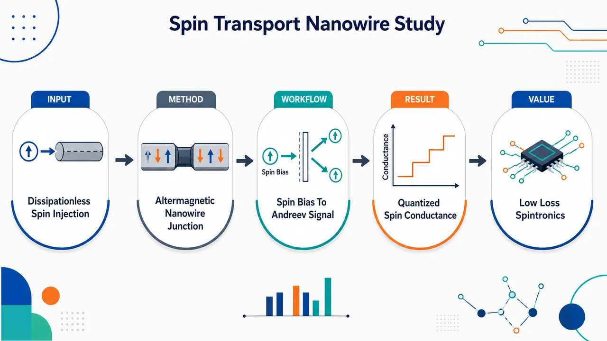
研究问题如何在没有净磁化、甚至无需自旋轨道耦合的条件下，在正常金属–超导纳米线界面产生并检测可承载无耗散自旋流的自旋三重态 Cooper 对？核心画面是：正常金属注入自旋偏压，交替磁超导纳米线在零净磁化背景下产生动量空间自旋劈裂，并通过等自旋 Andreev 反射把电子转化为同自旋空穴，向纳米线注入等自旋 Cooper 对。创新方法提出“正常金属–交替磁超导纳米线结”：一维纳米线同时邻近 s-wave 超导体和交替磁体，利用交替磁交换项产生无净磁化的自旋劈裂，从普通 s-wave 配对中工程化出三重态配对。Aha 点是：无 SOC 时也能通过选择自旋偏压垂直 Néel 矢量获得等自旋 Andreev 反射；有 SOC 时进一步进入拓扑超导相，由 Majorana 零模产生近完美零能等自旋 Andreev 反射和量子化自旋电导。工作流程输入端为带自旋偏压的正常金属电子；电子进入邻近 s-wave 超导体与交替磁体的一维纳米线；BdG/紧束缚模型描述动能、化学势、交替磁自旋劈裂、Rashba SOC 与诱导 s-wave 配对；非平衡 Green 函数计算 spin-flip 反射、普通 Andreev 反射、等自旋 Andreev 反射和准粒子透射；配对关联函数分解 singlet 与 d-vector triplet 成分；输出等自旋 Andreev 反射谱、自旋电导、注入效率、拓扑相变与零偏压量子化峰。关键结果无 SOC 时三重态 d-vector 只有 dz 分量，等自旋配对在自旋偏压垂直 Néel 矢量时最大，沿 Néel 矢量时消失；化学势 μ 和交替磁强度 tJ 可增强自旋劈裂并拉大反射峰间距。有 SOC 时 dx、dy、dz 均非零，z 方向自旋也能注入等自旋 Cooper 对；满足拓扑条件后出现 Majorana 零模，等自旋 Andreev 反射零能峰接近 1，零偏压自旋电导从近零跃迁到量子化值 e/2π，沿 ±z 方向自旋注入效率可接近 1。应用价值为低耗散超导自旋电子学提供一种无铁磁杂散场的可调器件平台：交替磁体提供强自旋劈裂但保持零净磁化，s-wave 超导提供易实现的配对来源，栅压和自旋偏压方向可调控自旋超流强度、注入效率与拓扑相变。该方案可用于设计无耗散自旋流通道、量子化自旋电导器件，以及连接交替磁材料、三重态超导和 Majorana 零模的实验平台。第一部分：核心概览
该研究提出一种正常金属–交替磁超导纳米线结，通过把一维纳米线同时邻近 s-wave 超导体与交替磁体，在无净磁化条件下工程化产生自旋三重态配对与自旋超流。核心贡献在于证明：即使无自旋轨道耦合，交替磁交换项也可诱导等自旋 Andreev 反射；加入 SOC 后体系可进入拓扑超导相，零偏压自旋电导达到量子化值。该工作连接了交替磁学、三重态超导、自旋输运与 Majorana 物理，为低耗散自旋电子学提供可调平台。
---
第二部分：结构化快速回顾
《Spin transport in a normal meta-altermagnetic superconducting nanowire junction》（None，）
背景
自旋电子学追求高效自旋流产生与控制，但常规器件受 SOC、磁杂质、D’yakonov-Perel’ 相互作用、声子 Raman 散射等机制导致的自旋弛豫限制。自旋三重态超导体可由 Cooper 对承载无耗散自旋流。交替磁体兼具动量空间自旋劈裂与实空间零净磁化，为无铁磁杂散场的三重态超导工程提供新路径。
方法
构建正常金属–一维交替磁超导纳米线结。纳米线由 s-wave 超导体与交替磁体邻近诱导，模型采用 BdG Hamiltonian 与紧束缚格点 Hamiltonian。利用非平衡 Green 函数计算反射系数、自旋流、自旋电导与自旋注入效率；利用配对关联函数分解 singlet/triplet 配对结构。
结果
无 SOC 时，三重态 d-vector 仅有 (d_z) 分量，等自旋配对在自旋量子化轴垂直 Néel 矢量时最大。存在非零等自旋 Andreev 反射系数，且可由化学势 (μ)、交替磁强度 (t_J)、自旋偏压方向调控。加入 SOC 后，(dₓ,d_y,d_z) 均非零，z 方向自旋也可发生等自旋 Andreev 反射；进入拓扑超导相后，零能峰接近 1，自旋电导达到 (e/2π)。
讨论
交替磁自旋劈裂增强三重态成分，并控制反射谱峰间距。SOC 一方面保护超导能隙，另一方面允许拓扑相变与 Majorana 零模介导的共振 Andreev 反射。自旋注入效率与自旋偏压方向密切相关，尤其在拓扑相中沿 (± z) 方向可接近 1。
局限
分析主要基于理想一维模型与弹道输运框架，未显式纳入无序、有限温度退相干、界面粗糙、真实材料多带效应、诱导参数空间不均匀性、有限长度纳米线端态耦合等实验复杂性。给定文本未包含完整结论章节与附录细节。
结论
交替磁超导纳米线可作为无耗散自旋输运平台。无 SOC 时，自旋超流依赖自旋偏压与 Néel 矢量的相对方向；有 SOC 时，体系可进入拓扑超导相并产生量子化自旋电导。该机制为交替磁材料参与超导自旋电子学提供了明确理论方案。
---
第三部分：逐章节冷凝解析
Abstract
- Spin-triplet superconductivity as dissipationless spin channel
自旋三重态超导体被定位为无耗散自旋输运平台，因为自旋流由自旋三重态 Cooper 对承载；摘要明确指出 *"Spin-triplet superconductors are considered as a promising platform for dissipationless spin transport, where spin currents are carried by spin-triplet Cooper pairs."* 这一物理图像区别于普通金属自旋流中的准粒子耗散输运。
- Altermagnetic superconducting nanowire as engineered platform
平台设计为一维纳米线放置在 s-wave superconductor 表面并邻近 altermagnet，通过双重 proximity effect 同时获得超导配对与交替磁自旋劈裂；关键表述为 *"a one-dimensional (1D) nanowire is placed on the surface of an s-wave superconductor and in proximity to the altermagnet."*
- Equal-spin Andreev reflection verifies triplet injection
非平衡 Green 函数方法用于证明正常金属–交替磁超导纳米线界面存在非零等自旋 Andreev 反射系数，该过程等价于注入等自旋 Cooper 对；摘要给出直接判据：*"we demonstrate a nonzero equal-spin Andreev reflection coefficient at the normal metal-altermagnetic superconducting nanowire interface, thereby verifying the injection of spin-triplet Cooper pairs."*
- Chemical potential and spin-bias orientation tune spin transport
化学势与自旋偏压方向是主要调控旋钮，摘要中明确写道 *"these properties can be effectively tuned by the chemical potential and spin bias orientation."* 这意味着器件可通过门电压与自旋注入方向实现可控自旋超流。
---
I Introduction
- Spintronics motivation and dissipation bottleneck
自旋电子学过去二十年持续活跃，核心动因是利用自旋流实现数据存储与逻辑操作；原文表述为 *"Spintronics has evolved into a persistently active research field in condensed matter physics over the past two decades, owing to its promising applications in data storage and logical operations controlled by spin currents."* 相比电荷自由度，自旋自由度具有更快开关速度和更低能耗，原文强调 *"faster switching speed and significantly lower energy consumption."* 但实际器件中，自旋弛豫降低输运效率，机制包括 *"spin-orbit coupling (SOC), elastic spin flips by magnetic impurities, the D’yakonov-Perel’ interaction and phonon Raman scattering."*
- Conventional superconductors cannot carry spin via Cooper pairs
普通超导体支持无耗散电荷超流，但传统 s-wave 超导中的 Cooper 对为自旋单态，无自旋极化，无法由 Cooper 对传递自旋；关键句为 *"conventional superconductors (SCs) host spin-singlet Cooper pairs with no spin polarization, preventing spin transport mediated by Cooper pairs."*
- Spin-triplet superconductors enable Cooper-pair-mediated spin transport
自旋三重态超导体打开 Cooper 对介导自旋输运的可能。等自旋 Andreev 反射是其界面输运标志：入射电子可反射为同自旋空穴，从而向三重态超导体注入等自旋 Cooper 对；原文写道 *"When an electron is incident on the spin-triplet superconductor, it can be reflected as a hole within the same spin sub-band via equal-spin Andreev reflection."* 该过程 *"corresponds to the injection of equal-spin Cooper pairs into the spin-triplet superconductor."*
- Altermagnetism provides spin splitting without net magnetization
交替磁体区别于铁磁体与反铁磁体，其核心特征是动量空间自旋劈裂与实空间零净磁化；原文定义为 *"a novel magnetic phase distinct from conventional ferromagnet and antiferromagnet, characterized by spin-splitting band structures in momentum space and vanishing net magnetization in real space."* 这为超导邻近结构提供了无宏观磁化但有强自旋劈裂的新型磁序源。
- Altermagnet-superconductor integration supports triplet pairing
交替磁性破坏自旋旋转对称性，与超导结合后可诱导自旋三重态超导性，原文指出 *"As a magnetic phase, altermagnetism breaks spin-rotational symmetry. Therefore, when combined with superconductivity, it can also exhibit spin-triplet superconductivity."* 该点是器件设计的理论基础。
- Central proposal and two regimes
研究对象为正常金属–一维交替磁超导纳米线结，纳米线由 s-wave 超导与交替磁邻近诱导；原文给出设计：*"The altermagnetic superconducting nanowire is realized by a nanowire placed on the surface of an s-wave SC and in proximity to the altermagnet."* 重点比较无 SOC与有 SOC两种情形。无 SOC 时仍存在显著等自旋配对，方向垂直于 Néel 矢量；原文称 *"Remarkably, even in the absence of SOC, a substantial equal-spin pairing component persists with the spin orientation perpendicular to the Néel vector of the altermagnet."*
- SOC enables topological superconductivity and quantized spin conductance
加入 SOC 后，交替磁超导纳米线可进入拓扑超导态，自旋电导量子化；关键表述为 *"In the presence of SOC, the altermagnetic superconducting nanowire can be tuned into a topological superconducting state, with the spin conductance reaching a quantized value."*
---
II Mechanism and methods
- Continuum BdG Hamiltonian encodes kinetic, altermagnetic, SOC, and s-wave pairing terms
低能模型在 (Γ) 点附近展开，Nambu 基为
[
Ψ={ψₖ_ₓ,ₚ̆ₐᵣᵣₒw,ψₖ_ₓ,dₒwₙₐᵣᵣₒw,ψ^dagger₋ₖ_ₓ,ₚ̆ₐᵣᵣₒw,ψ^dagger₋ₖ_ₓ,dₒwₙₐᵣᵣₒw}T.
]
BdG Hamiltonian 为
[
HBdG=
łeft(frachbar² kₓ²2m^*-μ+Tⱼ kₓ²σ_z+α_R kₓσ_yi̊ght)τ_z-Δσ_yτ_y.
]
原文说明 *"Tj is the proximitized altermagnet strength with its Néel vector along z direction, αR is the SOC strength and Δ is the proximity-induced s-wave pairing potential."* 其中 (Tⱼ kₓ²σ_z) 是交替磁动量依赖自旋劈裂，(α_R kₓσ_y) 是 Rashba SOC。
- Proximity-induced terms are weaker than bulk but significant
(Δ) 与 (Tⱼ) 均由邻近效应诱导，原文强调 *"Δ and Tj are induced by the proximity from superconductor and altermagnet, respectively."* 这些诱导效应通常源于弱耦合，因而 *"weaker than those in bulk systems, but still significant."*
- Parent altermagnet and s-wave superconductor are omitted from transport Hamiltonian
在自旋偏压下流入纳米线的是由三重态 Cooper 对承载的自旋超流，这些 Cooper 对不能传入非超导交替磁体或普通 s-wave 超导体；原文给出模型简化理由：*"These spin-triplet Cooper pairs are completely prohibited from transferring to the non-superconducting altermagnet and s-wave superconductors. Therefore, the altermagnet and s-wave superconductors can be neglected in our Hamiltonian."*
- Tight-binding Hamiltonian realizes numerical model
总 Hamiltonian 写为
[
H=Hₙw+Hₗₑₐd+Hcₒᵤₚₗₑ.
]
(Hₙw) 包含普通 hopping (t)、化学势 (μ)、交替磁 hopping (t_J)、SOC hopping (α)、onsite s-wave pairing (Δ)。原文明确 *"Hnw is the altermagnetic superconducting nanowire Hamiltonian, which is used for all subsequent calculations."* 参数映射为
[
t=hbar²/(2m^*a²⁾,quad t_J=Tⱼ/a²,quad α=α_R/a.
]
- Normal lead and point contact are modeled explicitly
正常金属 lead 通过令 (t_J=0,α=0,Δ=0,μ=t) 得到；原文写道 *"Hlead is the metal lead Hamiltonian, obtained by just setting tJ=0, α=0, Δ=0, and μ=t in Eq. (3)."* 耦合项为
[
Hcₒᵤₚₗₑ=-sumₛ t_c(a^dagger₀,ₛc₁,ₛ+H.c.),
]
其中 (t_c) 是接触 hopping，原文称 *"Hcouple is the point coupling between superconducting nanowire and metal lead with tc the hopping strength."*
- Spin current is defined by opposite spin-resolved particle currents
自旋偏压方向为
[
hatmathbf n=(sinθo̧sφ,sinθsinφ,o̧sθ),
]
对应本征态 (|±ångle=|hatmathbf nḑotěcmathbf S=±hbar/2ångle)。自旋流定义为
[
Jₛ₌frachbar2(J₊₋J₋₎.
]
原文说明 *"Under a spin bias of n direction in normal metal lead, the spin current in normal lead can be obtained by"* 此式。
- Landauer-Büttiker and nonequilibrium Green’s functions yield spin-resolved currents
(J_σ) 由三类输运过程组成：spin-flip reflection、equal-spin Andreev reflection、quasiparticle tunneling。原文定义
*"Tbₐᵣ ₑ ₑ,σ is the spin-flip reflection coefficient where an electron is reflected to an opposite-spin electron"*；
*"Tₕₑ,σ is the equal-spin Andreev reflection coefficient where an electron is reflected to an equal-spin hole"*；
*"Tₜᵣₐₙₛ,σ is the transmission coefficient corresponding to the quasiparticle tunneling."*
- Normal Andreev reflection does not contribute to spin current
普通 Andreev 反射 (Tbₐᵣ ₕ ₑ,σ) 中电子反射为空穴且自旋相反，对应注入自旋单态 Cooper 对，因此不携带净自旋；原文总体结论为 *"The normal Andreev reflection coefficient ... and normal reflection coefficient ... do not contribute to the spin current."*
- Spin bias shifts electron and hole distributions oppositely
正常 lead 中分布函数满足
[
fL,ₑ₊=fL,ₕ₋=f(E-eV),quad
fL,ₑ₋=fL,ₕ₊=f(E+eV).
]
这体现自旋偏压对相反自旋施加相反能量偏移；原文指出 (V) 是 *"the spin bias which drives opposite-spin electrons oppositely."*
- Differential spin conductance contains reflection and tunneling channels
低温极限下
[
Gₛ,ₜₒₜ=dJₛ/dV
]
由 (Tbₐᵣ ₑ ₑ)、(Tₕₑ)、(Tₜᵣₐₙₛ) 贡献。原文强调 *"three processes contribute to the total spin conductance: spin-flip reflection, equal-spin Andreev reflection and quasiparticle tunneling."* 计算中以 (e/4π) 为单位：*"we set e/4π as spin conductance unit."*
- Spin injection efficiency removes dissipative spin-flip reflection
因为 spin-flip reflection 贡献的自旋流通常耗散在界面，不能注入超导纳米线；原文写道 *"spin current contributed by spin-flip reflection process dissipates at the interface and does not inject into the altermagnetic superconducting nanowire."* 因此定义
[
η=1-Gₛ,dᵢₛ/Gₛ,ₜₒₜ,
]
其中
[
Gₛ,dᵢₛ=frace4πsumσ₌±
[Tbₐᵣ ₑ ₑ,σ(eV)+Tbₐᵣ ₑ ₑ,σ(-eV)].
]
- Pairing correlation function diagnoses singlet and triplet components
配对关联函数定义为
[
Fσσ'(kₓ,E)
=
-iint₀ⁱⁿfty dt,eⁱ⁽E⁺ⁱ⁰^⁺⁾t
łangleψₖ_ₓ,σ(t),ψ₋ₖ_ₓ,σ'(0)ångle.
]
矩阵分解为
[
mathbf F=(d₀σ₀₊mathbf dḑotboldsymbolσ)iσ_y,
]
原文说明 *"d0 represents the spin-singlet pairing and d vector represents spin-triplet pairing."*
- d-vector reveals joint roles of altermagnetism and SOC
得到
[
mathbf d=frac2ΔM(iAJ,AT,JE),
]
其中
[
A=α_R kₓ,quad J=Tⱼ kₓ²,quad
T=frachbar²kₓ²2m^*-μ.
]
原文解释 *"A, J and T respectively correspond to orbit component of SOC term, altermagnet splitting term and kinetic energy term."* 因此 SOC 与交替磁项共同诱导三重态配对，原文总结为 *"the altermagnet and SOC induce effective spin-triplet pairing correlations."*
- Numerical parameters are experimentally grounded
数值参数取
[
m^*=0.02mₑ,quad Δ=0.25 meV,quad
α_R=0.28 eVÅ,quad a=10 nm.
]
对应
[
tsimeq20 meV=80Δ,quad
α=2.8 meV=11.2Δ,quad
t_c=0.5t=40Δ.
]
原文给出 *"In the numerical calculations, we set effective mass m*=0.02me, induced superconducting pairing strength Δ=0.25 meV, αR=0.28 eV Å."*
---
III Spin transport in the absence of SOC
- Without SOC the d-vector has only z component
设 (α=0) 后 (A=0)，因此
[
mathbf d=(0,0,d_z).
]
原文写道 *"Through Eq. (10), we obtain d=(0,0,dz) because the SOC term A=0."* 这意味着三重态配对形式为
[
|S=1,S_z=0ångle=frac1sqrt2(|p̆arrowdownarrowångle+|downarrowp̆arrowångle)_z.
]
- Spin along z cannot generate spin supercurrent through equal-spin pairs
在 z 自旋基中，Cooper 对由相反自旋电子组成，不携带沿 z 方向的等自旋超流；原文明确 *"In the spin basis along z direction, the Cooper pairs are formed by electrons with opposite spin. Thus, they do not contribute to spin transport when spin bias is along z direction."*
- Rotating spin quantization axis creates equal-spin components
对任意方向
[
hatmathbf n=(sinθo̧sφ,sinθsinφ,o̧sθ),
]
三重态配对可展开为
[
(|p̆arrowdownarrowångle+|downarrowp̆arrowångle)_z
=
sinθ(eⁱφ|p̆arrowp̆arrowångleₕₐₜ ₙ
-e⁻ⁱφ|downarrowdownarrowångleₕₐₜ ₙ)
+o̧sθ(|p̆arrowdownarrowångle+|downarrowp̆arrowångle)ₕₐₜ ₙ.
]
原文结论为 *"equal-spin pairing Cooper pairs emerge as long as θ≠0."*
- Equal-spin pairing is maximal perpendicular to Néel vector
Néel 矢量沿 z 方向，等自旋成分系数为 (sinθ)，因此 (θ=π/2) 时最大；原文写道 *"equal-spin pairing component reaches its maximum at θ=π/2, where the spin orientation is perpendicular to the direction of Néel vector of the altermagnet."*
- Nonzero equal-spin Andreev reflection confirms triplet transport channel
图 2 选择入射电子自旋沿 x 方向，即 (θ=π/2,φ=0)。参数包括 (α=0)、(t_J=0.8Δ)、(μ=80Δ)。原文描述 *"The nonzero equal-spin Andreev reflection coefficient The appears."* 峰出现在子带底或顶附近：*"peaks emerging around the energy region corresponding to the bottom or the top of subbands."*
- Altermagnet splits BdG bands into four branches
图 2(a) 显示交替磁存在时 BdG 能带出现自旋劈裂并形成四条带；原文写道 *"in the presence of altermagnet, the BdG energy band demonstrates spin splitting as four bands."* 该劈裂直接决定反射谱峰位置。
- Total reflection equals unity inside the superconducting gap
总反射定义为
[
sum T=Tₑₑ+Tbₐᵣ ₑ ₑ+Tₕₑ+Tbₐᵣ ₕ ₑ.
]
原文指出 *"The total reflection coefficient equals unity within the SC gap and decreases outside the gap due to the quasiparticle tunneling."* 这说明能隙内无准粒子透射，散射完全由反射过程承担。
- Normal Andreev reflection injects singlet Cooper pairs and carries no spin current
普通 Andreev 反射 (Tbₐᵣ ₕ ₑ) 与 (Tₕₑ) 有类似能量依赖，但不贡献自旋输运；原文解释为 *"the incident electron is reflected as an opposite-spin hole, equivalent to injecting a spin-singlet Cooper pair into SC."*
- Chemical potential enhances and separates equal-spin Andreev peaks
图 2(c) 显示调节 (μ) 可显著增强 (Tₕₑ)，原文写道 *"The can be significantly enhanced by tuning the chemical potential μ, indicating a strong spin-triplet component in the superconducting nanowire."* 增大 (μ) 还会增强峰间距：*"increasing μ could lead to enhanced peak separation."*
- Mechanism of chemical-potential dependence is stronger Fermi-level spin splitting
增大 (μ) 等价于下移交替磁能带，使 Fermi 面附近自旋劈裂更显著；原文解释 *"when increasing the chemical potential, altermagnetic energy band is lowered, exhibiting more pronounced spin splitting near the Fermi level."* 结果是超导邻近能带中自旋劈裂更强、超导能隙减小，反射谱峰间隔变宽。
- Altermagnet strength produces analogous peak widening
图 2(d) 中增大 (t_J) 同样加剧能带劈裂并拉大峰间距；原文总结 *"The increased tJ induces more pronounced band splitting, resulting in widened peak spacings."*
- Polar-angle dependence matches analytic pairing decomposition
图 3 选择图 2(c) 中四个蓝色十字点，参数为 (α=0,t_J=0.8Δ,μ=80Δ,φ=0)。(Tₕₑ) 在自旋垂直 z 时最大，接近 (± z) 时趋零；原文写道 *"The The reaches its maximum when the incident electron spin is aligned along the direction perpendicular to z, and diminishes to zero as the spin orientation rotates toward the ±z direction."*
- Spin conductance peaks grow with chemical potential
图 4(a) 中自旋偏压沿 x 方向，(θ=π/2,φ=0)，(α=0,t_J=0.8Δ)。随 (μ) 增大，自旋电导峰间距和峰幅均增大；原文写道 *"The peak spacings expand and the peak amplitudes increase when increasing chemical potential."*
- Subgap spin conductance comes only from reflection processes
当自旋偏压小于超导能隙时，自旋电导只由 spin-flip reflection 与 equal-spin Andreev reflection 贡献；原文明确 *"When spin bias is smaller than the SC gap, spin conductance is contributed only by Tbₐᵣ ₑ ₑ and Tₕₑ."* 超过能隙后，准粒子 tunneling 也参与：*"When the spin bias is larger than the SC gap, quasiparticle tunneling also contributes to spin conductance."*
- Spin conductance vanishes for spin bias along Néel vector
图 4(b) 中 (μ=80Δ,V=0)，自旋电导在自旋偏压垂直 (± z) 时最大，沿 (± z) 时为零；原文写道 *"the spin conductance reaches its maximum when the spin bias is oriented perpendicular to the ±z direction."* 以及 *"diminishes to zero when spin bias rotates toward the ±z direction."*
- Diagonal spin splitting forbids spin-flip when quantization axis is z
当自旋偏压沿 Néel 矢量时，自旋量子化轴为 z，(σ_z) 项对角化，z 自旋为好量子数；原文解释 *"the spin splitting term in spin space becomes diagonal and spin z is maintained as a good quantum number, which effectively forbids the spin-flip processes at the interface."*
- Spin injection efficiency is nearly angle independent without SOC
图 4(c) 显示 (η) 几乎不随极角变化，因为 (Tₕₑ) 与 (Tbₐᵣ ₑ ₑ) 的角依赖相似；原文写道 *"the efficiency is almost angle-independent. This is because the angle-dependence of equal-spin Andreev reflection and spin-flip reflection is similar."*
- Azimuthal independence follows σz symmetry
无 SOC 时 Hamiltonian 具有 (σ_z) 对称性，导致自旋电导与注入效率不依赖 (φ)；原文结论为 *"due to the σz symmetry of the Hamiltonian HBdG in Eq.(1) at the absence of SOC, the spin conductance and the spin injection efficiency are independent of the azimuthal angle ϕ."*
---
IV Spin transport in the presence of SOC
- SOC makes all triplet d-vector components nonzero
有 SOC 时 (A=α_R kₓ≠0)，因此
[
mathbf d=(dₓ,d_y,d_z)
]
三个分量均非零；原文写道 *"Through Eq. (10), we obtain d=(dx,dy,dz), where three components are all nonzero."* 这表示纳米线中存在关于 x、y、z 各方向的三重态配对：*"spin-triplet pairing exists in 1D nanowire with (|↑↓⟩+|↓↑⟩)x,y,z."*
- SOC relaxes spin-orientation constraint for equal-spin pairing
无 SOC 时 z 自旋不能发生等自旋 Andreev 反射；有 SOC 后，(dₓ,d_y) 允许形成 z 方向等自旋 Cooper 对。原文解释 *"with the introduction of SOC, the d vector acquires dx and dy components. This enables the formation of spin zz Cooper pairs."*
- Finite equal-spin Andreev reflection appears for z-spin injection
图 5(a,b) 选择入射电子自旋沿 z 方向，参数 (α=11.2Δ,φ=0)，并观察到有限 (Tₕₑ)；原文写道 *"the finite The displays the nonzero equal-spin pairing component."* 这说明 z 极化自旋超流可被注入。
- SOC protects the superconducting gap compared with no-SOC case
图 5(a) 的 (Tₕₑ) 峰仍对应子带底或顶，但与无 SOC 图 2(c) 相比，能隙减小较弱；原文指出 *"the SC gap here is protected by SOC, showing weaker reduction under the same parameter conditions with Fig. 2(c)."*
- Topological phase transition condition is explicit
随 (μ) 增大，体系进入拓扑超导相，条件为
[
(4t_J)²>Δ²⁺⁽⁴t-μ)².
]
原文写道 *"the system experiences a topological phase transition and enters into topological superconducting phase, which requires μ and tJ to satisfy (4tJ)²>Δ²⁺⁽⁴t−μ)²."*
- Critical chemical potential is approximately 317Δ
图 5(a) 中相变临界值约为
[
μₘ₌₃₁₇Δ.
]
原文给出 *"the critical value for the transition is approximately μm=317Δ."* 相变前能隙逐渐闭合且 (Tₕₑ) 峰相互靠近：*"Before the transition, the gap gradually closes, accompanied by approach of The peaks."*
- Majorana zero mode pins equal-spin Andreev peak at zero energy
当 (μ>μₘ) 时，超导能隙重新打开，但 (Tₕₑ) 峰固定在零能，幅度接近 1；原文写道 *"the The peak is pinned at zero energy with its amplitude close to 1 because of resonant Andreev reflection from Majorana zero mode."* 这是拓扑超导相的核心输运信号。
- Spin-up equal-spin Cooper pairs dominate in topological regime
由于交替磁自旋劈裂，(μ>μₘ) 时 Fermi 面附近几乎只有 spin-up 电子；原文解释 *"almost only spin-up electrons exist near the Fermi level."* 因而 (|p̆arrowp̆arrowångle_z) Cooper 对主导：*"the equal-spin Cooper pairs |↑↑⟩z are dominant in the superconducting nanowire."*
- Critical altermagnet strength is approximately 2.5Δ
图 5(b) 扫描 (t_J)，相变临界值约为
[
tJₘ=2.5Δ.
]
原文给出 *"The critical value for the phase transition is approximately tJm=2.5Δ."* 当 (t_J>tJₘ) 时，零能峰幅度接近 1：*"the The peak is pinned at zero energy with its amplitude close to 1."*
- x-spin injection shows similar topology-driven features
图 5(c,d) 选择入射电子自旋沿 x 方向，(θ=π/2)，特征与 z 自旋注入类似；原文写道 *"the results exhibit similar characteristics to those presented in Figs. 5(a) and 5(b)."* 峰值大小不同源于不同自旋配对与纳米线中 Cooper 对匹配程度不同：*"The magnitudes of peaks differ because the corresponding xx- and zz-spin Cooper pairs match differently."*
- Angular dependence reveals dominant |↑↑⟩z pairing in topological phase
图 6 选择 (α=11.2Δ,t_J=0.8Δ,μ=320Δ,E=0)，即拓扑相。(Tₕₑ) 在入射自旋接近 (+z) 时最大，接近 (-z) 时趋零；原文写道 *"The The reaches its maximum when the incident electron spin is oriented close to the +z direction, and diminishes to zero as the spin orientation rotates toward near −z direction."* 原因为 (|p̆arrowp̆arrowångle_z) 配对主导并排斥 (|downarrowdownarrowångle_z) 注入。
- SOC breaks σz symmetry and creates azimuthal dependence
有 SOC 后 (σ_z) 对称性被破坏，等自旋 Andreev 反射依赖 (φ)；原文写道 *"under the presence of SOC, the σz symmetry is broken, which causes the equal-spin Andreev reflection coefficient to depend on the azimuthal angle ϕ."*
- Spin conductance evolves into a quantized zero-bias peak
图 7(a) 选择自旋偏压沿 z 方向。中等 (μ=200Δ) 且远离相变时，电导能隙约固定在 (eV=±Δ)，但峰不明显；原文写道 *"the conductance gap remains pinned at approximately eV=±Δ with μ being moderate and far from transition point."* 随 (μ) 增大，(Tbₐᵣ ₑ ₑ) 与 (Tₕₑ) 贡献增强并出现峰；跨过拓扑相变后，峰固定于零偏压且幅度量子化为
[
e/2π.
]
原文表述为 *"eventually become pinned at zero spin bias when μ>μm, with its magnitude reaching a quantized value of e/2π."*
- Zero-bias spin conductance jumps at topological transition
图 7(b) 显示零偏压自旋电导在拓扑相变点出现显著变化，相变前近零，相变后达到 (e/2π)；原文写道 *"Before the transition, it is nearly zero, but after the transition, it reaches a quantized value of e/2π."*
- Quantized spin conductance is independent of spin-bias direction
图 7(c) 显示拓扑相中自旋电导对所有自旋偏压方向保持 (e/2π)；原文写道 *"Figure 7(c) illustrates the direction dependence of spin conductance, which maintains a quantized value of e/2π at all directions of spin bias."* 该现象源于 Majorana 零模与拓扑超导相，原文说明 *"arising from the topological superconducting phase and Majorana zero mode."*
- Spin injection efficiency remains direction dependent despite quantized conductance
虽然总自旋电导方向无关，(η) 仍强烈依赖方向，因为 (Tbₐᵣ ₑ ₑ) 对自旋方向敏感；原文写道 *"due to the Tbₐᵣ ₑ ₑ's sensitivity to spin orientation, the spin injection efficiency exhibits strong dependence on the direction of the spin bias."*
- Maximum spin injection efficiency reaches unity along ±z
当自旋偏压位于 xoy 平面，spin-flip reflection 较大，注入效率降低；当沿 (± z) 时，电导主要来自近量子化 (Tₕₑ)，(η) 接近 1；原文给出 *"when the spin bias aligns along ±z direction, spin conductance is mainly contributed by the nearly quantized The, leading to a significantly enhanced spin injection efficiency near θ=0 and θ=π, with the maximum spin injection efficiency reaching 1."*
- Injected spin conductance approaches e/2π near ±z
定义
[
Gₛ,ᵢₙ=Gₛ,ₜₒₜ-Gₛ,dᵢₛ.
]
图 7(e) 显示自旋偏压接近 (± z) 时，注入电导由等自旋 Andreev 反射贡献并接近 (e/2π)；原文写道 *"When the spin bias aligns near ±z direction, the injected spin conductance contributed by the equal-spin Andreev reflection reaches the nearly quantized value of e/2π."*
---
第四部分：深度理解与语言支持
1. 术语解析
- Equal-spin Andreev reflection
学术含义：入射电子被反射为同自旋空穴，同时向超导体注入一个等自旋 Cooper 对，如 (|p̆arrowp̆arrowångle) 或 (|downarrowdownarrowångle)。普通 Andreev 反射是电子反射为相反自旋空穴，对应 singlet 配对；equal-spin 版本是三重态超导的界面指纹。文中定义为 *"an electron is reflected to an equal-spin hole."*
- Altermagnet
学术含义：不同于铁磁体的非零净磁化，也不同于传统反铁磁体的自旋简并能带；交替磁体具有动量空间自旋劈裂但实空间净磁化为零。其微妙之处在于它可提供类似铁磁交换劈裂的自旋选择性，却避免宏观磁场破坏超导。文中定义为 *"spin-splitting band structures in momentum space and vanishing net magnetization in real space."*
- Spin injection efficiency
学术含义：总自旋电导中真正注入超导纳米线、形成自旋超流的比例。spin-flip reflection 虽然对正常 lead 中定义的自旋流有贡献，但它耗散在界面，不等价于注入超导体。因此 (η=1-Gₛ,dᵢₛ/Gₛ,ₜₒₜ) 是区分“测到的自旋电导”和“有效注入超流”的关键量。
- d-vector
学术含义：描述自旋三重态配对方向与结构的向量。配对矩阵写成 (mathbf F=(d₀σ₀₊mathbf dḑotboldsymbolσ)iσ_y)，其中 (d₀) 是 singlet，(mathbf d) 是 triplet。若 (mathbf d=(0,0,d_z))，则 z 基下为 (S_z=0) 三重态；换到垂直 z 的自旋基后会出现等自旋分量。
- Resonant Andreev reflection from Majorana zero mode
学术含义：拓扑超导端点 Majorana 零模在零能处提供完美 Andreev 反射通道，使反射系数接近 1，并导致零偏压电导量子化。这里的“resonant”表示入射准粒子能量与零模能量匹配，散射概率被拓扑边界态增强。
2. 疑难查证
- 为什么无 SOC 仍能产生等自旋 Andreev 反射？
无 SOC 时 (mathbf d=(0,0,d_z))，看似只有 ((|p̆arrowdownarrowångle+|downarrowp̆arrowångle)_z)，不包含 (|p̆arrowp̆arrowångle_z)。但“等自旋”取决于测量或注入的自旋量子化轴。若自旋偏压沿 x 方向，则 z 基中的 (S_z=0) 三重态可重写成 x 基中的 (|p̆arrowp̆arrowångleₓ) 与 (|downarrowdownarrowångleₓ) 组合。数学上，等自旋权重为 (sinθ)，因此自旋方向垂直 Néel 矢量时最大，沿 Néel 矢量时为零。
- 为什么 spin-flip reflection 贡献自旋电导却降低注入效率？
自旋电导定义在正常金属 lead 中，只要反射改变 lead 中的自旋流平衡，就会贡献 (Gₛ,ₜₒₜ)。但 spin-flip reflection 是界面局域散射：入射电子变成相反自旋电子返回正常金属，净自旋角动量在界面耗散或转移给局域磁结构，并未形成超导纳米线中的 Cooper 对自旋超流。因此 (Gₛ,dᵢₛ) 被从有效注入部分中扣除。
- 为什么拓扑相中总自旋电导方向无关，但注入效率方向有关？
Majorana 零模保证零偏压总自旋电导量子化，所有自旋方向的散射通道总和固定为 (e/2π)。但这个总和可由不同过程分摊：某些方向主要是 equal-spin Andreev reflection，注入效率高；某些方向包含较多 spin-flip reflection，虽总电导仍量子化，但有效注入的超流比例下降。因此量子化电导不等于方向无关的注入效率。
---
第五部分：创新评估与关联
1. 创新性判断
- 从 ferromagnet-based triplet superconductivity 转向 altermagnet-based triplet engineering
过去 2–5 年中，自旋三重态超导常依赖铁磁体–超导体结构、Ising 超导体或SOC 纳米线加外磁场。该工作引入交替磁体作为三重态配对源，在零净磁化背景下实现自旋劈裂与自旋旋转对称性破缺，避免铁磁杂散场对超导的破坏风险。
- 证明无 SOC 条件下仍存在可用等自旋配对通道
常规 Majorana 纳米线方案高度依赖 SOC 与 Zeeman 场。这里显示只要交替磁诱导 (mathbf d=(0,0,d_z))，通过选择自旋偏压垂直 Néel 矢量即可获得等自旋 Andreev 反射。这解决了“没有 SOC 时是否还能产生自旋超流注入”的问题。
- 把 altermagnetic superconductivity 与可测自旋输运量直接连接
不仅讨论配对对称性，还计算了 (Tₕₑ)、(Gₛ,ₜₒₜ)、(η)、(Gₛ,ᵢₙ) 等实验相关量。等自旋 Andreev 反射系数成为三重态 Cooper 对注入的直接可测标志，使理论从“存在配对关联”推进到“可通过界面输运验证”。
- 提出化学势与自旋偏压方向双调控策略
化学势控制 Fermi 面附近交替磁自旋劈裂与拓扑相变；自旋偏压方向控制等自旋配对投影与注入效率。这种双调控机制为栅压和自旋泵浦实验提供明确操作参数。
- 在 SOC 存在时实现拓扑超导与量子化自旋电导
拓扑相变条件 ((4t_J)²>Δ²⁺⁽⁴t-μ)²) 给出清晰设计准则。进入拓扑相后，Majorana 零模诱导零能等自旋 Andreev 反射峰接近 1，零偏压自旋电导达到 (e/2π)，将交替磁自旋电子学与拓扑超导/Majorana 输运直接耦合。
- 解决前人未充分处理的“有效注入”问题
通过定义 (η=1-Gₛ,dᵢₛ/Gₛ,ₜₒₜ)，区分界面耗散 spin-flip 贡献与真正注入超导纳米线的自旋超流。该指标比单独报告总自旋电导更严谨，尤其适合评估无耗散自旋输运器件性能。
-
14
📊 含图深析
📄 摘要：基于第一性原理计算研究二维 Cr3Sb5 与 CsCr3Sb5 单层的电子结构。动机来自块体 CsCr3Sb5 中平带和反常磁基态，但其范霍夫奇点远离费米能级；二维化被用于调制范霍夫奇点靠近 EF，以探索关联增强和反常磁输运性质。
💡 亮点：二维 CsCr3Sb5 单层被提出用于把范霍夫奇点调向费米能级并增强电子关联。它延续了块体 kagome 金属 CsCr3Sb5 的反常磁基态问题。
📖 展开分析 + 配图
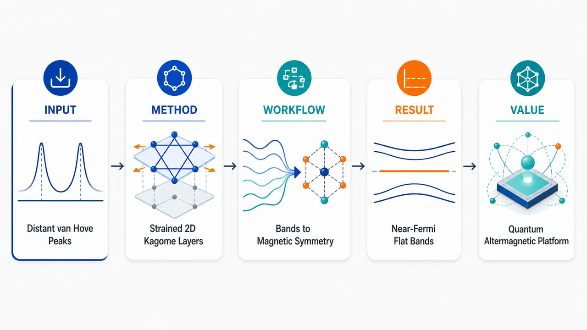
研究问题体相 kagome 金属 CsCr₃Sb₅ 虽具有费米能级附近平带和交替磁性基态，但 van Hove 奇点远离费米能级，限制强关联输运和非常规量子态；核心问题是：二维单层化与应变能否把平带和 vHS 同时推近 EF，并在二维极限中保留 altermagnetic ground state。创新方法采用第一性原理计算，将研究对象从体相 CsCr₃Sb₅ 转向可机械剥离的二维 Cr₃Sb₅ 与 CsCr₃Sb₅ 单层；Aha 点在于用“二维化 + 拉伸应变”作为能带调控旋钮，使 kagome 平带与 van Hove 奇点同步靠近费米能级，同时利用双子晶格镜面对称性维持交替磁性基态。工作流程输入层状 CsCr₃Sb₅ 体相结构，构建 Cr₃Sb₅ 与 CsCr₃Sb₅ 单层模型；通过第一性原理计算获得晶体结构、能带与低能电子态；定位平带、van Hove 奇点和费米能级的相对位置；施加拉伸应变，观察关键能带特征向 EF 的移动；分析两个磁性子晶格的镜面对称性，判断交替磁性基态是否保留；输出可调强关联二维 kagome 交替磁体平台。关键结果Cr₃Sb₅ 单层中平带和 van Hove 奇点同时位于费米能级附近，显示比体相 CsCr₃Sb₅ 更强的低能电子关联潜力；对 Cr₃Sb₅ 与 CsCr₃Sb₅ 两种单层施加拉伸应变后，初现平带和 vHS 可进一步同步移向 EF；两种单层因保留双子晶格镜面对称性，均呈现交替磁性基态。应用价值该研究提出二维 Cr₃Sb₅/CsCr₃Sb₅ 单层作为同时具备 kagome 平带、van Hove 奇点、可调强关联和交替磁性的材料平台，可用于探索非常规输运、关联量子态、密度波或超导不稳定性，以及兼具零净磁矩和自旋劈裂特征的新型自旋电子学器件。第一部分：核心概览（Overview）
二维 Cr₃Sb₅ 与 CsCr₃Sb₅ 单层被提出为调控 kagome 金属电子关联与交替磁性 altermagnetism的新平台。核心贡献在于：通过第一性原理计算显示，单层化可使 平带 flat bands 与 van Hove 奇点 vHSs 同时接近 费米能级 EF，尤其在 Cr₃Sb₅ 单层中电子关联显著增强；进一步施加拉伸应变可同步推动两类能带特征靠近 EF，实现可调电子关联与潜在量子效应。相较于体相 CsCr₃Sb₅ 中 vHS 远离 EF 的限制，二维化与应变工程提供了更有效的能带调控路径，并保留镜面对称性导致的 altermagnetic ground state。
---
第二部分：结构化快速回顾
《Enhanced electronic correlations and altermagnetic ground state of two-dimensional CsCr3Sb5 monolayers》（None，）
背景
层状 kagome 金属 CsCr₃Sb₅ 因 费米能级附近平带与 altermagnetic ground state 受到关注；但体相材料中的 van Hove 奇点距离 EF 较远，限制了关联电子输运和量子态探索。
方法
采用 first-principles calculations 研究可能由体相材料机械剥离获得的二维 Cr₃Sb₅ 与 CsCr₃Sb₅ 单层的电子结构、能带特征、应变响应和磁性基态。
结果
Cr₃Sb₅ 单层中 flat bands 与 vHSs 同时接近 EF，指向增强电子关联；对两种单层施加拉伸应变后，初现平带与 vHS 可进一步同步移向 EF 附近。
讨论
二维化改变了体相 CsCr₃Sb₅ 中 vHS 远离 EF 的问题；应变工程提供连续调控手段；保留的双子晶格镜面对称性支持 altermagnetism。
局限
可见材料仅包含摘要与 arXiv 元数据，缺少计算细节，例如交换关联泛函、U 值、k 点网格、声子稳定性、剥离能、应变范围、能带能量偏移量、磁矩、总能差等定量结果。
结论
二维 Cr₃Sb₅/CsCr₃Sb₅ 单层兼具可调 强电子关联与 交替磁性基态，是探索非常规量子现象、kagome 电子结构与新型自旋有序的重要候选平台。
---
第三部分：逐章节冷凝解析（Section-by-Section Condensing）
可见原始内容仅包含 Abstract 与 arXiv 条目信息，未提供完整 PDF 正文、章节标题、图表、方法参数与数值结果。因此，逐章节解析只能覆盖已给出的 Abstract；所有证据均严格来自所给文本，不补造未提供的章节和数据。
---
Abstract
#### Layered kagome CsCr₃Sb₅ is positioned as a correlated and magnetic platform
CsCr₃Sb₅ 被界定为一种近期受到高度关注的层状 kagome 金属，关注点来自两个核心电子/磁性特征：费米能级附近平带与 交替磁性基态。摘要直接给出背景依据：*"Recently, layered corrected kagome metal CsCr3Sb5 have garnered significant attention attributed to its flat bands near the Fermi level (EF) and altermagnetic ground state [ Yi Liu et al., Nature 632, 1032 (2024)]."*
其中 flat bands near EF 意味着局域化倾向增强、态密度升高，通常容易诱发关联电子现象；altermagnetic ground state 则表明该体系并非普通铁磁或反铁磁，而可能具有动量依赖自旋劈裂与零净磁矩等新型磁性特征。
#### Bulk CsCr₃Sb₅ has a key limitation: vHSs are far from EF
体相 CsCr₃Sb₅ 的主要问题在于 van Hove singularities 未位于费米能级附近，导致高态密度奇点难以直接参与低能输运和关联不稳定性。摘要明确指出：*"However, the van Hove singularities (vHSs) in bulk CsCr3Sb5 are far away from the EF, while an effective modulation of VHS toward the EF is essential for exploring intriguing electron transport properties."*
这里的关键科学矛盾是：虽然体相已有平带和交替磁性，但若 vHS 不接近 EF，许多由鞍点态密度增强驱动的现象——例如非常规超导、电荷序、自旋密度波、非费米液体行为或异常霍尔响应——可能难以充分释放。
#### First-principles calculations are used to examine 2D Cr₃Sb₅ and CsCr₃Sb₅ monolayers
研究对象从体相扩展到二维极限，具体为 Cr₃Sb₅ 与 CsCr₃Sb₅ 单层。方法是 第一性原理计算，目标是判断二维化是否能重新组织低能能带结构。摘要给出方法与对象：*"In this work, using first-principles calculations, we investigate electronic structures of two-dimensional (2D) Cr3Sb5 and CsCr3Sb5 monolayers which may be mechanically exfoliated from bulk materials."*
mechanically exfoliated from bulk materials 指向实验可实现性：这些单层不是完全假想的孤立结构，而是可能由层状体相通过机械剥离获得，类似石墨烯、过渡金属硫族化物或层状 kagome 材料的制备路径。
#### Cr₃Sb₅ monolayer simultaneously hosts flat bands and vHSs near EF
最核心结果集中在 Cr₃Sb₅ 单层：平带与 vHSs 同时靠近 EF。摘要给出直接结论：*"Notably, it is revealed that both flat bands and vHSs simultaneously reside in close proximity to the EF in Cr3Sb5 monolayer, signifying enhanced electronic correlations."*
这一点比单独出现平带或单独出现 vHS 更重要。flat bands 提供低色散、高有效质量和高态密度；vHSs 来自能带鞍点，同样导致态密度发散或峰值。二者同时接近 EF，意味着低能电子态密度被双重增强，电子-电子相互作用相对动能更占优势，因此被解释为 enhanced electronic correlations。
#### Tensile strain tunes incipient flat bands and vHSs toward EF in both monolayers
拉伸应变 tensile strain 被提出为可控调节旋钮，可同时推动两种单层材料中的初现平带和 vHS 靠近 EF。摘要写道：*"Importantly, a tensile strain further shifts the incipient flat bands and vHSs of two monolayers simultaneously to the vicinity of the EF, suggesting strain tunable electronic correlations and concomitant quantum effects."*
这里的 two monolayers 指 Cr₃Sb₅ 与 CsCr₃Sb₅ 单层；incipient flat bands and vHSs 表示这些关键能带特征可能已经接近但尚未完全位于 EF，外加应变可进一步调节其相对能量。物理含义是：通过改变晶格常数、Cr–Sb 键长和 kagome 网络电子跃迁强度，可调节能带鞍点和平带位置，从而调控关联强度。
#### Mirror symmetry between two sublattices supports altermagnetic ground state
两种单层均保留 altermagnetic ground state，其来源被归因于两个子晶格之间的镜面对称性。摘要明确给出：*"Furthermore, altermagnetic ground state is also revealed due to retained mirror symmetry between two sublattices in these two monolayers."*
altermagnetism 的关键不是简单自旋反平行排列，而是晶体对称性与磁性子晶格之间的特殊耦合。保留的 mirror symmetry between two sublattices 使单层化后仍可能维持交替磁性所需的对称条件，从而避免二维剥离破坏磁性基态。
#### 2D CsCr₃Sb₅ monolayers are proposed as platforms for unconventional quantum phenomena
最终意义在于，二维 CsCr₃Sb₅ 相关单层可同时承载 kagome 电子结构、增强电子关联、应变可调性与交替磁性。摘要总结为：*"Thus, this work advances understanding and modulations of electronic properties of 2D CsCr3Sb5 monolayers, strengthening their great potential for exploring unconventional quantum phenomena and altermagnetism."*
unconventional quantum phenomena 在此语境下主要指由高态密度、平带、vHS、强关联和非传统磁性共同诱发的量子态，包括但不限于非常规输运、磁性自旋劈裂、拓扑响应、关联绝缘态、密度波或超导不稳定性。
---
arXiv 条目信息
#### The study is an arXiv preprint in condensed-matter materials science
条目信息显示该研究属于 Condensed Matter > Materials Science，编号为 arXiv:2606.19740，投稿时间为 18 Jun 2026。原始条目写明：*"arXiv:2606.19740 (cond-mat) [Submitted on 18 Jun 2026]"*，并列出主题：*"Subjects: Materials Science (cond-mat.mtrl-sci)"*。
这说明该研究目前作为预印本公开，重点定位在材料物理与计算材料科学，而不是实验合成或器件测量。
#### The manuscript length and figure count indicate a compact computational study
条目信息给出稿件规模：*"Comments: 22 pages, 5 figures"*。
22 页、5 幅图通常对应一篇较完整但篇幅适中的计算论文：可能包含晶体结构、稳定性、能带、态密度、磁构型、应变调控等图示。但由于正文未提供，无法确认具体图中数值、图注和计算参数。
#### The cited benchmark is the 2024 Nature report on bulk CsCr₃Sb₅
摘要背景引用了 2024 年 Nature 论文：*"[ Yi Liu et al., Nature 632, 1032 (2024)]"*。
该引用构成研究的直接前沿背景：体相 CsCr₃Sb₅ 已被证明具有 near-EF flat bands 和 altermagnetic ground state，而当前二维单层研究的增量在于解决 vHSs far away from EF 的问题，并提出二维化和应变调控路径。
---
第四部分：深度理解与语言支持（Understanding & Nuance）
1. 术语解析
#### Flat bands
Flat bands 指能量随动量变化很小的能带，即低色散能带。电子群速度低、有效质量大，动能被压低，电子-电子相互作用相对更强。语境中 *"flat bands near the Fermi level (EF)"* 表示这些强关联有利条件直接出现在低能电子态中，因此更容易影响实际输运和磁性。
#### Van Hove singularities, vHSs
van Hove singularities 是由能带临界点，尤其是二维鞍点，导致的态密度峰或发散。语境中 *"vHSs in bulk CsCr3Sb5 are far away from the EF"* 表示体相虽然有奇点，但奇点不在低能激发窗口内，难以有效参与费米面不稳定性。将 vHS 推向 EF 是增强关联效应的常见策略。
#### Fermi level, EF
Fermi level EF 是零温下电子占据态与未占据态的分界能量，也是金属低能物理的中心。摘要反复使用 *"near EF"*, *"toward the EF"*, *"vicinity of the EF"*，核心含义是：只有靠近 EF 的能带特征才会主导低温输运、磁性、超导或密度波等现象。
#### Altermagnetic ground state
Altermagnetic ground state 指一种区别于传统铁磁和反铁磁的新型磁性基态。它通常具有补偿的反平行磁矩，因此宏观净磁矩可为零；但由于晶体对称性允许，自旋能带可出现动量依赖劈裂。语境中 *"retained mirror symmetry between two sublattices"* 是维持该态的重要对称性条件。
#### Incipient flat bands and vHSs
Incipient 的微妙含义是“正在出现的、初现的、接近形成关键作用但尚未完全成熟的”。语境中 *"incipient flat bands and vHSs"* 暗示这些能带特征可能尚未精确钉扎在 EF，但已接近低能区域；通过 tensile strain 可进一步把它们推到 EF 附近。
---
2. 疑难查证
#### 为什么 vHS 靠近 EF 会增强电子关联？
二维能带中的 鞍点会导致态密度显著增加。态密度越大，单位能量范围内可参与散射、配对或自旋极化的电子态越多。若 vHS 位于 EF 附近，极小的相互作用也可能被放大，触发电子不稳定性。直观地说，EF 附近的电子是“活跃电子”；vHS 远离 EF 时，它像一个高态密度资源但不在工作窗口内；vHS 被推到 EF 附近后，电子系统更容易进入强关联或有序态。
#### 平带与 vHS 同时接近 EF 为什么比单独接近更重要？
平带提高态密度并降低动能尺度，vHS通过能带鞍点造成态密度峰。二者同时靠近 EF，会在低能区叠加两种增强机制：
- 平带使电子运动被“压慢”，相互作用更容易占主导；
- vHS 增加费米面附近可散射态数量；
- kagome 晶格天然容易产生几何阻挫和平带；
- 强关联、磁性、拓扑响应或非常规超导的可能性同步提高。
#### 二维化为什么可能把 vHS 推向 EF？
从体相到单层，层间耦合被削弱或消失，晶体势场、带宽、轨道杂化、电子填充环境都会改变。对于 CsCr₃Sb₅/Cr₃Sb₅，去除或保留 Cs 层会改变电荷转移和 Cr–Sb kagome 网络的能带排布。因此，体相中远离 EF 的 vHS 可能在二维极限中重新排列到 EF 附近。
#### 拉伸应变为什么能调平带和 vHS？
Tensile strain 增大晶格常数，改变 Cr–Cr、Cr–Sb、Sb–Sb 距离，从而改变轨道重叠和跃迁积分。跃迁强度降低通常会缩窄带宽，平带可能更接近 EF；能带鞍点位置也会随晶格变形移动。若应变能同步移动平带和 vHS，就能形成连续可调的关联强度旋钮。
#### altermagnetism 与普通反铁磁的区别在哪里？
普通共线反铁磁通常具有两个反向磁子晶格，总磁矩为零，很多情况下自旋能带仍保持某些简并。Altermagnetism 同样可具有零净磁矩，但由于特定晶体旋转/镜面对称与磁子晶格的关系，动量空间中可出现自旋劈裂，类似铁磁体的自旋分辨能带，却没有宏观铁磁杂散场。这使其在自旋电子学中很有吸引力：既有反铁磁的低 stray field，又可能有铁磁式自旋极化输运特征。
---
第五部分：创新评估与关联（Synthesis & Novelty）
1. 创新性判断
#### 从体相 CsCr₃Sb₅ 转向二维单层，解决 vHS 远离 EF 的核心障碍
2024 年 Nature 工作已经建立了体相 CsCr₃Sb₅ 的重要地位：flat bands near EF 与 altermagnetic ground state。新的增量在于识别体相缺陷：*"the van Hove singularities (vHSs) in bulk CsCr3Sb5 are far away from the EF"*。
二维 Cr₃Sb₅ 单层中 flat bands 与 vHSs 同时接近 EF，构成相对体相的关键改进。
#### 将电子关联增强与 altermagnetism 放入同一二维平台
过去几年的 kagome 材料研究通常分别强调平带、vHS、拓扑能带、超导或磁性。该体系的独特性在于把 增强电子关联 与 交替磁性基态结合到同一二维材料候选中。摘要中的核心组合是：*"both flat bands and vHSs simultaneously reside in close proximity to the EF"* 以及 *"altermagnetic ground state is also revealed"*。
#### 提出应变工程作为调控低能 kagome 能带的有效手段
不仅发现二维化效应，还给出外场调控路径：*"a tensile strain further shifts the incipient flat bands and vHSs of two monolayers simultaneously to the vicinity of the EF"*。
相较于单纯化学掺杂或外延生长，应变具有可逆、连续、器件兼容的优势，适合二维材料平台。
#### 扩展 CsCr₃Sb₅ 家族的研究空间
Cr₃Sb₅ 与 CsCr₃Sb₅ 单层的并行研究说明，关键物理不只依赖 Cs 层，而可能根植于 Cr–Sb kagome 网络本身。若无 Cs 的 Cr₃Sb₅ 单层也能显示 EF 附近平带与 vHS，则电子关联调控可通过层间组分、剥离终止面或电荷转移进一步扩展。
#### 前人未充分解决的问题
核心未解问题包括：
- 体相 CsCr₃Sb₅ 中 vHS 远离 EF；
- 如何在保持 altermagnetism 的同时增强低能电子关联；
- 二维极限是否仍能保留关键磁性对称性；
- 是否存在外部可控手段把 flat bands 与 vHSs 同步推向 EF。
该研究给出的答案是：二维化可显著改善 vHS/平带位置，拉伸应变可进一步调控，镜面对称性保留使 altermagnetic ground state 在单层中仍可存在。
-
15
📊 含图深析
📄 摘要：针对滑移二维方格晶格，结合第一性原理、通用堆垛理论和自旋-Laue 对称性，研究反常磁性与耦合准反常磁态的关系。文章指出非相对论自旋劈裂是反常磁体核心，而此前滑移诱导谷极化只体现部分反常磁性，因此建立基于自旋劈裂特征的分类框架。
💡 亮点：滑移二维方格晶格中，谷极化态被重新纳入反常磁与准反常磁自旋劈裂分类。该对称性框架有助于系统设计可滑移调控的二维反常磁体。
📖 展开分析 + 配图
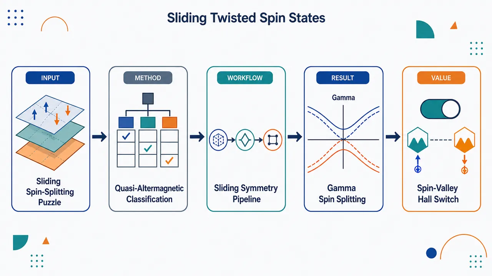
研究问题二维方格/Lieb 交替磁双层在层间滑移后，出现的零净磁矩自旋劈裂相是否都属于传统交替磁态？核心判据是：相反自旋子晶格是否仍由有效旋转/镜面对称连接，以及无 SOC 时 Γ 点是否保持自旋简并。创新方法提出“耦合准交替磁态”分类框架：用 spin-Laue 自旋群与 Γ 点无 SOC 自旋劈裂作为诊断，将滑移构型分为交替磁态与准交替磁态。Aha 点在于 AC₁/AC₂ 虽零净磁矩且有 NRSS，但因 G−H 为空、Γ 点也劈裂，应被视为由滑移破坏关键对称性产生的新型补偿磁态。工作流程从二维方格 d-wave 交替磁/Lieb 模型出发，构建 Mn₂WS₄ 与 Janus Mn₂WS₂Se₂ 双层；施加不同层间滑移 t∥：AA(0,0)、AB(1/2,1/2)、AC₁(1/2,0)、AC₂(0,1/2)；用 DFT+U 计算无 SOC/含 SOC 能带；用自旋群分析 Mφ、C₄z 等连接对称性；检查 Γ 点与 X/X′ 谷自旋劈裂；再用 Wannier-Kubo Berry 曲率计算反常霍尔电导，得到滑移—自旋—谷—输运映射。关键结果AA、AB 及 ta=tb 滑移构型保留 Mφ 等有效连接对称性，属于交替磁态：X/X′ 谷自旋相反，Γ 点无 SOC 下保持简并。AC₁、AC₂ 中 ta≠tb，破坏 Mφ/C₄z 连接，G−H 为空，Γ 点无 SOC 自旋简并完全解除，形成耦合准交替磁态；两态通过 [C₂∥Os] 互相映射，实现 X/X′ 谷与 spin-up/spin-down 同步反转，并因 C₄z 破缺产生可反号的反常霍尔响应。应用价值提供一种用机械滑移非易失调控二维补偿磁体自旋劈裂、谷极化和反常霍尔信号的机制，可用于低杂散场自旋电子器件、自旋谷电子学开关、滑移可写入的霍尔读出器件，并为更多二维方格/Lieb 晶格材料筛选准交替磁相提供分类准则。第一部分：核心概览（Overview）
该研究提出“耦合准交替磁态”（coupled quasi-altermagnetic states），将二维方格晶格滑移诱导的自旋劈裂相从单一“谷极化交替磁”描述扩展为交替磁态与准交替磁态两类。核心判据是：是否存在连接相反自旋子晶格的有效旋转/镜面对称，以及Γ 点无 SOC 条件下是否保持自旋简并。在 Mn₂WS₄ 与 Janus Mn₂WS₂Se₂ 等二维 Lieb 方格体系中，层间滑移可诱导可逆 type-IV 非相对论自旋劈裂（NRSS），并在准交替磁态中打破 Γ 点自旋简并，同时产生可反号的反常霍尔响应。该框架为二维交替磁、自旋谷电子学与滑移调控自旋电子器件提供了新的分类语言和物理机制。
---
第二部分：结构化快速回顾
《Interplay of Altermagnetism and Coupled Quasi-Altermagnetic states in Sliding Two-dimensional Square Lattice》（None，）
背景
交替磁体（altermagnets）在零净磁矩、无 SOC 条件下可产生显著非相对论自旋劈裂（NRSS），突破传统反铁磁体自旋简并图像。二维范德华体系中，层间滑移已被用于诱导谷极化，但此前缺乏基于自旋劈裂特征的系统分类。
方法
采用第一性原理 DFT+U、广义堆垛理论、spin-Laue 对称性分析与 Wannier-Kubo Berry 曲率输运计算。VASP/PBE/PAW 计算中使用 600 eV 平面波截断、30 Å 真空层、10×10×1 k 网格、Mn-3d 的 U = 3.0 eV。
结果
滑移诱导相被划分为两类：
- 交替磁态：如单层、AA、AB 构型，Γ 点无 SOC 下保持自旋简并；
- 准交替磁态：如 AC₁、AC₂ 构型，缺少有效相反自旋子晶格连接，对称性集合 (G-H) 为空，Γ 点自旋简并被完全解除。
讨论
准交替磁态虽不严格满足传统交替磁定义，但保持零净磁矩并具有有限自旋劈裂和类铁磁可切换性。AC₁ 与 AC₂ 通过实空间 ([C₂|Oₛ]) 变换相互映射，实现自旋与谷的同步反转。
局限
当前证据主要来自理论计算与对称性分析；缺少实验验证、热稳定性定量、滑移势垒、畴结构动力学、有限温度磁有序温度和器件级可控性评估。部分材料与构型讨论在给定文本中被截断，Janus Mn₂WS₂Se₂ 的完整结果未呈现。
结论
二维方格交替磁体中，层间滑移不仅可调控谷极化，还可在保持磁补偿的同时诱导一种新的准交替磁自旋劈裂相。该机制可推广到广泛二维方格晶格体系，并可能用于非易失自旋、谷与反常霍尔输运控制。
---
第三部分：逐章节冷凝解析（Section-by-Section Condensing）
Abstract
Non-relativistic spin splitting defines a new compensated-magnetism paradigm
非相对论自旋劈裂（NRSS）使交替磁体系在净磁矩为零的同时表现出类似铁磁体的自旋分裂能带。摘要明确将该问题定位为反铁磁体系中的新范式：*"The emergence of non-relativistic spin splitting (NRSS) in altermagnetic systems has introduced a new paradigm in antiferromagnets with vanishing net magnetization."* 关键点在于：该自旋劈裂不依赖 SOC，因此与 Rashba/Dresselhaus 型相对论劈裂不同。
Sliding-induced valley polarization is incomplete as a description of altermagnetism
已有二维交替磁体中的滑移诱导谷极化只描述了交替磁性的部分表现，而非完整分类。原文指出：*"Although sliding-induced valley-polarized phases have recently been demonstrated in two-dimensional altermagnets, the observed valley-polarized state represents only a partial manifestation of altermagnetism, and a comprehensive classification based on spin-splitting characteristics remains lacking."* 该研究的直接问题是：滑移后出现的自旋劈裂相是否都应归为传统交替磁态。
Coupled quasi-altermagnetic state is introduced as a distinct subclass
提出耦合准交替磁态，其核心性质是通过层间滑移控制可逆 type-IV NRSS。摘要给出定义性表述：*"we propose a coupled quasi-altermagnetic state representing a distinct subclass of altermagnetism, in which reversible type-IV NRSS is controlled through interlayer sliding."* 该概念将“滑移诱导相”从现象层面的谷极化提升为对称性分类。
Sliding-induced phases are divided into altermagnetic and quasi-altermagnetic states
滑移诱导相被分为交替磁态与准交替磁态两类：*"the sliding-induced phases are classified into two categories: altermagnetic and quasi-altermagnetic states."* 分类判据不是单纯是否有自旋劈裂，而是结合Γ 点自旋简并、相反自旋子晶格连接对称性与实空间—倒空间映射关系。
Quasi-altermagnetic states remain spin split at Γ without SOC
准交替磁态最突出的区分特征是：即使无 SOC，Γ 点仍保持自旋劈裂。原文强调：*"the spin-polarized bands in these states remain spin split at Γ point even in the absence of spin-orbit coupling (SOC), distinguishing them within the proposed classification framework."* 这与传统 d-wave 交替磁在 Γ 点受对称性保护的简并形成强烈对比。
Mn₂WS₄ and Mn₂WS₂Se₂ serve as demonstration platforms
研究对象包括二维 Lieb 晶格材料 Mn₂WS₄ 及其 Janus 衍生物 Mn₂WS₂Se₂，用于展示局域化学环境如何调节不同磁相：*"we investigate the two-dimensional Lieb-lattice material Mn2WS4 and its Janus derivative Mn2WS2Se2, analysing how changes in the local environment influence the different magnetic phases."* 其中 Mn₂WS₄ 是方格 Lieb 模型的材料化实现。
Broken C₄z symmetry enables anomalous Hall conductivity reversal
准交替磁相中，连接四方结构子晶格的 (C₄z) 对称性破缺，导致反常霍尔电导（AHC）出现且可反号：*"Owing to the breaking of 𝒞4z symmetry, which connects the sublattices in the tetragonal quasi-altermagnetic phase, anomalous Hall conductivity emerges and exhibits opposite-sign reversal behaviour."* 这赋予准交替磁态可观测的输运签名。
---
1 Introduction
Conventional antiferromagnets are spin-degenerate due to combined symmetries
传统反铁磁体被视为零净磁矩磁序的标准例子，实空间和倒空间中相反自旋子晶格彼此抵消。原文表述为：*"Antiferromagnets (AFMs) have long been regarded as the paradigmatic example of magnetic order without net magnetization, where opposite spin sublattices cancel each other in both real and reciprocal space."* 其能带通常因时间反演与反演或平移组合对称而自旋简并：*"The preserved time-reversal (𝒯) symmetry combined with inversion or translation leading to largely spin-degenerate bands."*
Altermagnets combine compensated magnetism with spin-split bands
交替磁体（AMs）打破时间反演对称，却仍保持零净磁矩，并在无 SOC 条件下产生显著自旋劈裂。关键原文为：*"Altermagnets (AMs) reshape this familiar picture by 𝒯 symmetry breaking sizable spin-split bands across the Brillouin zone even without net magnetization and spin-orbit coupling (SOC) effects."* 其物理定位是铁磁与反铁磁的交叉：*"AMs unite a spin-split bands like ferromagnets (FMs) and hallmark traits of compensated sublattices of AFMs."*
Altermagnets are relevant for spintronics and valleytronics
交替磁体可在无宏观磁化背景下提供自旋极化电流，降低杂散场干扰，适合自旋电子学。原文指出：*"AMs enables efficient spin-polarized manipulate currents while retaining zero net magnetization, offering a unique advantage for spintronic applications."* 同时，自旋劈裂与自旋谷极化直接相关：*"spin-splitting in AMs is directly tied with the degree of spin valley polarization, making them ideal for valleytronics applications."*
Three-dimensional altermagnets already have theoretical and experimental support
已提出多类三维交替磁候选，包括 NiAs-type MnTe、CrSb、rutile RuO₂、MnF₂、SrRuO₃、LaMnO₃ 等。原文列举：*"A wide range of three-dimensional AMs has been theoretically proposed, including NiAs-type MnTe and CrSb, rutile RuO2 and MnF2, perovskite SrRuO3 and LaMnO3."* 其中 α-MnTe 与 CrSb 的 NRSS 已由软 X 射线 ARPES 验证：*"NRSS in α-MnTe and CrSb has been experimentally verified using soft X-ray angle-resolved photoemission spectroscopy."*
Altermagnetic quasiparticles fall into winding and spin-valley classes
交替磁自旋劈裂可按自旋绕数分为两类。第一类在 Γ 附近具有二次色散和自旋绕数 2：*"altermagnetic quasiparticles exhibiting quadratic dispersion around high symmetry point Γ, characterized by spin-winding number 2."* 这不同于 Rashba 模型的自旋绕数 1：*"This significantly differs from the Rashba model (spin-winding number 1)."* 第二类是无自旋绕转的 C-paired spin-valley locking：*"altermagnetic spin-polarized valley quasiparticle exhibit C-paired spin-valley locking (SVL), at time reversal invariant momenta (TRIM) k and −k, without spin-winding."*
C-paired SVL differs from T-paired SVL in TMDs
交替磁体中的 C-paired SVL 与过渡金属二硫族化物中的 T-paired SVL 本质不同。原文指出：*"this C-paired SVL in AM is fundamentally different from the T-paired SVL in transition-metal dichalcogenides (TMDs)."* 差异在于前者通过晶体对称连接自旋—谷—实空间关系，且可无 SOC 出现：*"coupled spin and valley to real space through crystal symmetry and observed without SOC."*
Two-dimensional altermagnets provide tunable spin-valley platforms
二维候选包括 V₂Se₂O、Cr₂O₂、Cr₂SO、Fe₂WTe₄ 等：*"several two-dimensional (2D) monolayers V2Se2O, Cr2O2, Cr2SO and Fe2WTe4 have been predicted."* 其中 V₂Se₂O 已展示自旋谷操纵与巨大压磁性：*"The spin-valley manipulation accompanied by giant piezomagnetism has been observed in 2D V2Se2O crystal."* CrO 则具有强自旋劈裂、自旋动量锁定和高转变温度：*"2D CrO displays pronounced spin splitting, spin-momentum locking, and a high transition temperature."*
Stacking engineering is central in two-dimensional vdW systems
二维体系中的弱层间范德华耦合为堆垛调控提供平台：*"The weak interlayer van der Waals (vdW) coupling in 2D systems provide a versatile platform for tuning spin-valley properties via stacking engineering."* 双层金属有机框架 Cr(tcb)₂ 与 Cr(hcb)₂ 已实现自旋—谷—层构型耦合：*"coupling of spin-valley and layer configuration has led to the realization of altermagnetism in bilayer metal-organic framework systems such as Cr(tcb)2 and Cr(hcb)2."*
Ferroelectric-like sliding can reverse altermagnetic spin splitting
层间平移打破反演对称，产生面外极化；AB 与 BA 极性堆垛切换可反转极化并反转交替磁自旋劈裂。原文为：*"switching between distinct polar stacking configurations (AB ↔ BA) reverses P, thereby reversing the altermagnetic spin splitting."* 这提供非易失调控路径：*"This mechanism enables non-volatile modulation of layer-sliding-induced VP in altermagnetic-ferroelectric(ferroelastic) systems."*
Prior sliding-induced VP studies lacked a full spin-splitting classification
已有研究将滑移视为实现交替磁双层谷极化的高效方法，但缺少系统分类和理论框架。原文直接指出：*"Previous studies have identified sliding as an efficient route to achieve VP in altermagnetic bilayers spanning diverse 2D materials."* 随后强调缺口：*"a systematic exploration, detailed categorization of distinct spin-splitting phenomena in altermagnets, and a comprehensive theoretical framework for the coupling between different states remain absent."*
Coupled quasi-altermagnetic states fill this conceptual gap
提出的核心概念是耦合准交替磁态，其定义是通过层间滑移调制可逆 type-IV NRSS：*"we investigate 'coupled quasi-altermagnetic states', representing a distinct subclass of altermagnetism in which reversible type-IV NRSS is modulated through interlayer sliding."* 关键主张是以 Γ 点自旋简并为区分工具：*"Detailed symmetry analysis, together with an examination of spin degeneracy at the Γ-point, reveals that these phases cannot be assigned to the same class."*
Transport sign reversal parallels ferroic switching mechanisms
准交替磁态与铁电/铁弹性交替磁机制类似，可导致反常霍尔电导等输运性质的可逆反号。原文为：*"analogous to ferroic mechanisms in altermagnetic systems, including ferroelectricity and ferroelasticity, the proposed coupled quasi-altermagnetic states also lead to reversible sign changes in transport properties such as the anomalous Hall conductivity (AHC)."*
---
2 Methodology
Density functional theory is implemented with VASP and PAW
第一性原理计算采用 VASP 与 PAW 方法：*"All first-principles calculations were carried out within the framework of density functional theory as implemented in the Vienna ab initio simulation package (VASP) and the projector augmented-wave (PAW) method."* 交换关联泛函使用 GGA-PBE：*"The exchange-correlation functionals were treated by the generalized gradient approximation (GGA) with the Perdew-Burke-Ernzerhof (PBE) parametrization."*
Numerical convergence settings are stringent
计算参数包括 30 Å 真空层、600 eV 平面波截断、0.001 eV/Å 力收敛、10⁻⁷ eV 总能量收敛和 10×10×1 Monkhorst-Pack k 点网格。原文分别给出：*"A vacuum layer of 30 Å was included along the vertical direction to suppress interactions between periodic images."* 以及 *"Structural optimizations were performed using a plane-wave kinetic energy cutoff of 600 eV, force convergence criterion of 0.001 eV/Å, and total energy convergence criterion of 10−7 eV."* BZ 采样为：*"The Brillouin zone (BZ) was sampled using a 10 × 10 × 1 Monkhorst-Pack k-point mesh."*
Mn-3d correlations are treated by DFT+U with U = 3.0 eV
Mn 的强关联 3d 电子使用旋转不变 DFT+U，Hubbard 参数为 U = 3.0 eV：*"the rotationally invariant DFT+U approach was employed with an on-site Hubbard parameter of U = 3.0 eV."* 该值与 Mn₂WS₂ 既有研究一致，并能复现实验/理论相关带隙和磁矩：*"This value is consistent with previous studies on Mn2WS2 and reliably reproduces the electronic band gap and magnetic moments."*
All magnetic states remain fully compensated
所有堆垛构型和磁序中，单胞总磁矩小于 10⁻³ μB，表明完全补偿反铁磁状态：*"For all investigated stacking configurations and magnetic orderings, the total magnetic moment per unit cell remained negligible < 10−3 μB, indicating fully compensated magnetic states characteristic of antiferromagnetic behaviour."* 这对区分准交替磁态与铁磁态至关重要：准交替磁态有自旋劈裂但无净磁矩。
Wannier Hamiltonians and Kubo Berry curvature are used for AHC
收敛电荷密度后，使用 Wannier90 构建最大局域 Wannier 函数紧束缚哈密顿量：*"the tight-binding Hamiltonian was constructed using maximally localized Wannier functions as implemented in the Wannier90 code."* AHC 计算包含 SOC，并用 Kubo 公式对占据能带 Berry 曲率积分：*"Spin-orbit coupling was included in the AHC calculations, which were performed using the Kubo formalism by integrating the Berry curvature over all occupied bands in momentum space."*
AHC is computed from Berry curvature over occupied states
反常霍尔电导表达为
[
σαβAH=frace²hbarintBZfracdk(2π)³Ømegaαβ(k)
]
原文写作：*"(σαβAH=frace²hbarintBZfracdk(2π)³,Ømegaαβ(k))."* Berry 曲率由占据分布加权求和：*"(Ømegaαβ(k)=sumₙfₖₙ,Ømegaₙ,αβ(k))."* 带分辨项含速度算符矩阵元与能量差平方分母：*"(Ømegaₙ,αβ(k)=2isumₘ≠ ₙfrac{łangle n|partialhatH/partial kα|månglełangle m|partialhatH/partial kβ|nångle}(ϵₙk-ϵₘk)²)."*
Symmetry and data analysis rely on multiple crystallographic tools
晶体和对称性分析使用 Bilbao Crystallographic Server、FINDSYM 及相关参考方法：*"Crystallographic and symmetry analyses were further performed using the Bilbao Crystallographic Server, FINDSYM, and the approach described in Ref."* 结构可视化和电子结构后处理使用 VASPKIT、VESTA、Materials Project、PyProcar、MAGNDATA：*"several auxiliary packages and databases, including VASPKIT, VESTA, Materials Project, PyProcar, and MAGNDATA, were utilized for structural visualization, data post-processing, and electronic structure characterization."*
---
3 Results and Discussion
3.1 Symmetry Considerations
Spin-group symmetry is the natural language for SOC-independent spin splitting
交替磁体的自旋劈裂不依赖 SOC，因此用自旋群对称性描述更自然。原文表述：*"AMs exhibit SOC-independent spin splitting and are therefore naturally characterized by spin-group symmetries [Ri||Rj], where Ri and Rj acting independently govern spin space and real space, respectively."* 这里 (Rᵢ) 作用于自旋空间，(Rⱼ) 作用于实空间。
Collinear magnets allow identity and spin-inverting twofold operations
共线磁体允许的自旋操作为 (RᵢᵢₙE) 或 (E,øverlineC₂)：*"Collinear magnets are characterized by a spin-only allowed symmetry operations are (RᵢᵢₙE or E,øverlineC₂)."* 其中 (E) 是恒等操作，(øverlineC₂) 是垂直自旋方向的二重旋转加自旋反转：*"E and (øverlineC₂) represents an identity operation and twofold rotation about an axis perpendicular to spin alignment followed by spin inversion."*
Some combined symmetries restore spin degeneracy at every k point
若存在 ([øverlineC₂|T][C₂|P]) 或 ([C₂|τ]) 等组合对称，能量满足 (ǎrepsilon(s,k)→ǎrepsilon(-s,k))，从而在任意 k 点恢复自旋简并。原文为：*"when combined symmetries such as [(øverlineC₂|T)][(C₂|P)] and [(C₂|τ)] are present, the transformation becomes (ǎrepsilon(s,k)i̊ghtarrowǎrepsilon(-s,k)), which restores spin degeneracy at any k point."*
Altermagnetic spin groups require a non-trivial halving-subgroup structure
交替磁自旋劈裂可表示为
[
Rₛ₌[E|H]+[C₂|G-H]=[E|H]+[C₂|AH],
]
其中 (H) 是空间群 (G) 的半子群，(Ain G-H)。原文为：*"altermagnetic spin-splitting represented by a non-trivial spin group (Rₛ₌[E||H]+[C₂||G-H]=[E||H]+[C₂||AH]), where H is halving subgroup of space group G and A∈G−H."*
Two-dimensional altermagnets must exclude four degeneracy-enforcing operations
二维共线磁体受限于 x-y 平面时，交替磁有效连接操作不能属于 (τ,P,C₂z,M_z)。原文明确写道：*"2D representation imposes a constrain (Anotinτ,P,C₂z,Mz), within condition that 2D collinear magnet restricted in x−y plane."* 这些操作会强制自旋简并，不适合作为非平庸交替磁连接。
Mirror and C₂z operations can protect degeneracy rather than altermagnetic splitting
二维体系中 ([C₂|M_z]) 和 ([C₂|C₂z]) 会保护 Kramers 型简并。原文为：*"two spin group symmetries [(C₂|Mz)] and [(C₂|C₂z)] transform as (ǎrepsilon(s,k)i̊ghtarrowǎrepsilon(s,-k)), protect Kramers spin degeneracy."* 因此这类对称性必须被排除。
A valid opposite-spin connector is still required for zero net magnetization
尽管 (τ,P,C₂z,M_z) 要排除，但仍需要某种对称性连接相反自旋子晶格，以保证零净磁矩。原文指出：*"the presence of at least one symmetry relating these sublattices is essential to guarantee zero net magnetization enforced by symmetry operations like in-plane two-fold rotation [(C₂|C₂ₓ)], out of plane four-fold rotation [(C₂|C₄z)], and vertical mirror plane [(C₂|Mₓ)] in 2D altermagnets."*
The square-lattice model starts from d-wave altermagnetism
基础构型是二维方格 d-wave 交替磁晶格，相反自旋子晶格的零净磁矩由 ([C₂|C₄z]) 保护。原文为：*"We begin with a 2D square d-wave AM lattice model as the basic building unit."* 以及 *"This system comprises a opposite sublattices having zero net magnetization protected by [(C₂|C₄z)] rotational symmetry."*
Γ-point degeneracy is symmetry enforced in the monolayer altermagnet
Γ 点在 ([C₂|C₄z]) 实空间变换下不变，因此保持自旋简并。原文为：*"Γ-point is invariant under [(C₂|C₄z)] real space transformations enforce spin degeneracy at Γ."* 这是后续区分准交替磁态的核心判据。
Bilayers are constructed through a stacking operator
双层结构由堆垛算符 (widehatP=O|t₀) 生成，其中 (O) 为旋转算符，(t₀) 为平移算符。原文为：*"To construct the bilayer, two AM monolayers L and its counterpart L′ were stacked using a designated stacking operator (widehatP), where (widehatP=O|t₀)."* 对应双层为 (L+widehatPL)：*"The counterpart L′ is generated through (widehatP) as (widehatPL), which leads to the (L+widehatPL) bilayer configuration."*
The studied stacking operation is mirror plus in-plane translation
采用堆垛操作 (widehatP=[E|M_z|tₚₐᵣₐₗₗₑₗ])，其中 (tₚₐᵣₐₗₗₑₗ₌ₜₐěca+t_běcb)。原文为：*"the stacking operation (widehatP=[E|Mz|t|]) is considered, where (tₚₐᵣₐₗₗₑₗ=tₐěca+tběcb) denotes translation vector parallel to the layer."*
AA stacking preserves altermagnetism despite breaking P and Mz spin symmetries
AA 构型由 (tₚₐᵣₐₗₗₑₗ₍₀,0)) 生成：*"AA-bilayer configuration ... is constructed using (widehatP=[E|Mz|tₚₐᵣₐₗₗₑₗ(0,0)])."* 它打破 ([C₂|P]) 和 ([C₂|M_z])，但保留交替磁自旋劈裂：*"which breaks [(C₂|P)] and [(C₂|Mz)] symmetries. Consequently, the observed spin splitting in the energy bands indicates that altermagnetism is preserved."*
AA and AB retain Mφ symmetry and Γ degeneracy
AA 中 ([C₂|M_φ]) 连接 (kₓ) 与 (kₓ')，保证交替磁特征：*"the [(C₂|Mφ)] symmetry operation relating the wave vectors (kₓ) and (kₓ') ensures the preservation of altermagnetic characteristics."* AB 构型由 (tₚₐᵣₐₗₗₑₗ₍₁/2,1/2)) 生成，并保留同样对称性：*"The AB bilayer configuration ... constructed using (widehatP=[E|Mz|tₚₐᵣₐₗₗₑₗ(1/2,1/2)]), retains [(C₂|Mφ)] symmetry and consequently exhibits the same degeneracy."*
AC₁ and AC₂ break Mφ and lift Γ-point degeneracy without SOC
AC₁ 与 AC₂ 分别由 (tₚₐᵣₐₗₗₑₗ₍₁/2,0)) 和 (tₚₐᵣₐₗₗₑₗ₍₀,1/2)) 生成：*"AC1 and AC2 configurations ... are constructed using (widehatP=[E|Mz|tₚₐᵣₐₗₗₑₗ(1/2,0)]) and (widehatP=[E|Mz|tₚₐᵣₐₗₗₑₗ(0,1/2)])."* 这种滑移打破 (M_φ)：*"This interlayer displacement breaks the (Mφ) symmetry and still retain spin-splitting in BZ."* 关键结果是 Γ 点无 SOC 下简并解除：*"For the AC1 and AC2 configurations, band degeneracy at Γ-point is lifted without inclusion of SOC."*
Quasi-altermagnets lack PT symmetry and a valid spin-exchanging connector
准交替磁相定义为 type-IV 补偿反铁磁自旋劈裂子类。原文写道：*"This phase can be classified as a distinct subclass of spin-splitting type-IV compensated antiferromagnets, known as 'quasi-altermagnet'."* 其缺少 (PT)、有效自旋交换连接和退简并强制集合：*"The quasi-AM phase lacks (PT) symmetry, a valid spin-exchanging connector, and (Anotinτ,P,C₂z,Mz) degeneracy-enforcing set."*
The G−H set becomes empty in quasi-altermagnets
准交替磁体可视作交替磁体经旋转对称性破缺衍生而来，导致 (G-H) 为空。原文为：*"Quasi-altermagnets can be understood as systems derived from altermagnets through rotational symmetry breaking, resulting in the empty G−H set."* 因为没有相反自旋子晶格的旋转连接，所有自旋简并包括 Γ 点均可被解除：*"opposite-spin sublattices are not connected by rotational symmetry, yielding spin splitting and fully lifted spin degeneracy, even at Γ."*
Quasi-altermagnets show anisotropic spin splitting without a nodal plane
准交替磁体具有各向异性的动量依赖自旋劈裂，不再表现为跨节点平面的等大反号结构。原文为：*"They exhibit anisotropic momentum-dependent spin splitting that is not equal and opposite across the nodal plane."* 节点平面缺失导致完全退简并：*"the absence of a well-defined nodal plane leads to complete lifting of spin degeneracy while preserving zero net magnetization in insulating systems."*
AC₁ and AC₂ form coupled quasi-altermagnetic states
AC₁ 与 AC₂ 分别对应准交替磁态 a 与 b，二者在无铁电序的情况下仍完全补偿并相互变换。原文为：*"two quasi-altermagnetic states, a (AC1 configuration) and b (AC2 configuration), exhibit complete compensation of opposite spin sublattices and remain invariant under transformation between one another, in the absence of any ferroelectric order."* 它们通过 ([C₂|Oₛ]) 关联：*"The spin sublattice configuration of quasi-altermagnetic state a is related to that of state b through an orthogonal transformation (Oₛ)."*
Real-space switching produces reciprocal-space spin-valley reversal
两个准交替磁态满足
[
ǎrepsilon_b(s,k)=[C₂|Oₛ]ǎrepsilonₐ₍ₛ,k)
=ǎrepsilonₐ₍₋ₛ,Oₛₖ₎.
]
原文为：*"The formulation reveals that quasi-altermagnetic states a and b are related via a [(C₂|Oₛ)] real-space transformation, leading to spin-valley reversal signature."* 具体映射为：*"the spin-up (spin-down) band of state a at the X (X′) valley maps onto the spin-down (spin-up) band of state b at X′ (X)."*
Sliding with ta ≠ tb plays a dual role
当 (tₐ≠ t_b) 时，滑移同时诱导耦合准交替磁态和 Γ 点自旋劈裂。原文为：*"The (tₚₐᵣₐₗₗₑₗ(tₐ,t_b)), where (tₐ≠ t_b) sliding plays a dual role by inducing these coupled quasi-altermagnetic states and spin-splitting at Γ point."* 但准交替磁构型不仅由磁序决定，也受到周围非磁原子显著影响：*"the coupled quasi-altermagnetic configuration is governed not only by the magnetic ordering but also significantly influenced by the surrounding non-magnetic atoms."*
---
3.2 Material Considerations
A minimal Lieb-lattice altermagnetic model is constructed
为实现方格晶格交替磁性，构建二维 Lieb 晶格最小模型：两个相反磁矩磁性子晶格与一个非磁位点。原文为：*"To realize AM in square lattice, we construct a minimal 2D Lieb altermagnetic model comprising two magnetic sublattices carrying opposite magnetic moments ... and one non-magnetic site."* 四重旋转连接这些位点：*"connected through four-fold rotational symmetry."*
The magnetic symmetry is P4′/mm′m with spins at 2c Wyckoff sites
模型磁对称性为 (P4′/mm′m)，自旋上下分别位于 (2c) Wyckoff 位置 ((0,1/2)) 和 ((1/2,0))，非磁原子在 (1b) 位点。原文为：*"The underlying magnetic symmetry is described by the space group (P4′/mm′m), with spin up and down states residing at 2c Wyckoff site ((0,1/2)) and ((1/2,0)), respectively, while the 1b site hosts a non-magnetic atom."* 该磁排列显式打破时间反演：*"Such a magnetic arrangement explicitly breaks (T) symmetry."*
The model Hamiltonian uses dz² spin basis and anisotropic hopping
基函数为 (|dz^₂;p̆arrowångle) 与 (|dz^₂;downarrowångle)，包含在位能、最近邻跃迁和各向异性次近邻跃迁。原文为：*"Using, (|d_z²;p̆arrowångle) and (|d_z²;downarrowångle) as basis functions, we include on-site energies e, nearest neighbour hopping t, and anisotropic next nearest neighbour hopping r."* 参数包括 (e₁,e₂,t₁,t₂,r₁₋ᵣ₄)：*"characterized by the parameters (e₁, e₂, t₁, t₂) and (r₁₋ᵣ₄)."*
The Lieb Hamiltonian is a 4×4 block matrix
哈密顿量写成由 (2×2) 对角与非对角块组成的 (4×4) 矩阵：*"The resulting Hamiltonian is a (4×4) matrix composed of (2×2) diagonal and off-diagonal blocks (HLᵢₑb(kₓ,k_y)=beginbmatrixE₁₁&T₁₂T₂₁&E₂₂endbmatrix)."* 详细块形式被置于补充材料：*"Detailed form of diagonal and off-diagonal blocks are given in supplementary material."*
The model produces d-wave altermagnetic spin splitting
能带路径为 (Γ(0,0)→ X(π,0)→ M(π,π)→Γ(0,0)→ M′(-π,π)→ X′(0,π)→Γ(0,0))。原文列出：*"along (Γ(0,0)i̊ghtarrow X(π,0)i̊ghtarrow M(π,π)i̊ghtarrowΓ(0,0)i̊ghtarrow M′(-π,π)i̊ghtarrow X′(0,π)i̊ghtarrowΓ(0,0)) high symmetry path."* 在 (Γ-M) 与 (Γ-M′) 路径中心对称，能带自旋简并：*"The (HLᵢₑb) is centrosymmetric along (Γ−M) and (Γ−M′) paths, resulting in degenerate spin bands."* 在 (Γ→ X→ M) 和 (Γ→ M′→ X′) 非中心对称，出现最大劈裂：*"leading to a maximum spin splitting of (Δ EX₍X′₎=4(r₁₍₂₎−r₃₍₄₎)) at the X(X′) point, classified as a d-wave AMs."*
Mn₂WS₄ is selected as a realistic Lieb-lattice platform
基于模型分析与二维 Lieb 材料族，选取单层 Mn₂WS₄ 作为候选体系：*"we considered monolayer Mn2WS4 ... as a candidate system for coupled quasi altermagnetism."* 它此前已被识别为交替磁平台：*"The monolayer Mn2WS4 has previously been identified as a promising platform for altermagnetism."*
Monolayer Mn₂WS₄ has symmorphic tetragonal Pbar42m symmetry
Mn₂WS₄ 为共形四方结构，空间群 (Pbar42m)（No.111），点群 (D₂d)。原文为：*"Structurally, it adopts a symmorphic tetragonal crystal structure with space group (Pbar42m(No.111)), characterized by (D₂d) point-group symmetry."* 结构由中心 Mn-W 层夹在两层 S 之间形成四面体晶格：*"monolayer consists central Mn-W layer sandwiched between two S layers, forming a tetrahedral lattice geometry."*
Mn₂WS₄ reproduces the Lieb-model altermagnetic band features
Mn₂WS₄ 的能带与二维 Lieb 模型相似，特别是在非中心对称路径上出现交替磁自旋劈裂。原文为：*"Band structure of Mn2WS4 closely resembles the characteristic features of the 2D Lieb lattice model, particularly the altermagnetic spin splitting observed along the non-centrosymmetric paths (Γi̊ghtarrow Xi̊ghtarrow M) and (Γi̊ghtarrow M′i̊ghtarrow X′)."* d-wave 交替磁性来自 ([C₂|C₄z])：*"The resulting d-wave altermagnetism arises from the underlying combined [(C₂|C₄z)] symmetry operations."*
X and X′ valleys are connected by Mφ spin symmetry
相反自旋子晶格以及 (X)、(X′) 谷通过 ([C₂|M_φ]) 连接。原文为：*"the opposite spin sublattices and the X and X′ valleys are connected through [(C₂|Mφ)] spin symmetry."* 这解释了单层与部分双层中谷间对应关系。
Berry curvature vanishes without SOC but becomes finite with SOC
无 SOC 条件下，([C₂T|C₂zT]) 保护 Berry 曲率在整个 BZ 中为零：*"In the SOC-free limit, symmetry protection arising from [(C₂T|C₂zT)] constrains Berry curvature to vanish throughout BZ."* 加入 SOC 后，自旋群降为磁群，X 和 X′ 谷 Berry 曲率符号相反：*"Upon incorporating SOC, the spin-group symmetry is reduced to the magnetic-group symmetry, giving rise to finite Berry curvatures that are opposite in sign at X and X′ valleys."*
Mn₂WS₄ supports valley Hall effect under in-plane electric field
SOC 下谷间相反 Berry 曲率与保留的相反自旋极化可导致谷霍尔效应。原文为：*"These features give rise to a valley Hall effect (VHE) in Mn2WS4 subjected to an applied in-plane electric field."* 同时，只要 Néel 矢量位于 ab 平面，(TC₂z) 仍保护谷简并：*"with SOC, the combined (TC₂z) is preserved within the condition that Néel vector lying within ab plane."*
SOC induces additional pronounced splitting near M
SOC 会沿特定方向诱导显著自旋劈裂，尤其在 M 点附近。原文为：*"SOC induces a pronounced spin splitting along the direction, which becomes especially significant near the M point."* 但非相对论极限的 DOS 显示相反自旋子晶格完全补偿：*"density of states (DOS) in the non-relativistic regime demonstrates complete compensation between the opposite spin sublattices."*
AA bilayer Mn₂WS₄ preserves altermagnetism and Γ degeneracy
第一类双层满足 (tₐ₌ₜ_b)，在无 ([C₂|P]) 与 ([C₂|M_z]) 条件下考察滑移对交替磁劈裂的影响。原文为：*"we constructed bilayer Mn2WS4 structures using (widehatP=[E|Mz|tₚₐᵣₐₗₗₑₗ(tₐ,t_b)]), where (tₐ₌ₜ_b), in the absence of [(C₂|P)] and [(C₂|Mz)] symmetries."* AA 构型空间群为 (Pbar42m)，自旋空间群为 (Pbar¹bar4¹2bar¹mⁱⁿfty¹⁰⁰m1)。原文为：*"The AA-Mn2WS4 configuration is characterized by the (Pbar42m) ... space group."* 其 (H) 与 (G-H) 分别为：*"H∈E, P, C2z, Mz and G−H∈Mφ, Mφ′, C2φ, C2φ′."* 因而保持交替磁行为：*"AA-configuration exhibits altermagnetic behaviour exhibit alternating spin splitting and spin degeneracy at Γ."*
AB bilayer changes space group but retains Mφ and Γ degeneracy
AB 由 AA 沿 ((1/2,1/2)) 滑移得到：*"The AB-bilayer configuration is obtained from AA-bilayer by sliding one layer relative to other along the fractional coordinate ((1/2,1/2))."* 空间群从 (Pbar42m) 变为 (Pbar42₁ₘ)：*"This transformation drives Mn2WS4 system from (Pbar42m) ... to (Pbar42₁ₘ)."* 仍保留 (M_φ)、(Mφ′)、交替磁劈裂和 Γ 点简并：*"The (Mǎᵣₚₕᵢ), (Mǎᵣₚₕᵢ′) symmetries, altermagnetic spin-splitting, and spin degeneracy at Γ-point remain preserved."*
Intermediate ta = tb sliding remains altermagnetic through Mφ
在 (tₚₐᵣₐₗₗₑₗ₍₀,0)) 到 (tₚₐᵣₐₗₗₑₗ₍₁/2,1/2)) 之间，且 (tₐ₌ₜ_b)，构型属于 Cm 空间群。原文为：*"Within the range between, (tₚₐᵣₐₗₗₑₗ(0,0)) and (tₚₐᵣₐₗₗₑₗ(1/2,1/2)), Mn2WS4 configuration belongs to the Cm space group."* 其 (G-H) 仍含 (M_φ) 与 ([C₂φ|tₚₐᵣₐₗₗₑₗ₍ₜₐ,t_b)])：*"G−H∈(Mǎᵣₚₕᵢ), [(C₂ǎᵣₚₕᵢ|tₚₐᵣₐₗₗₑₗ(tₐ,t_b))], where (tₐ₌ₜ_b)."* 因而 (X) 和 (X′) 谷保持简并但携带相反自旋：*"the preserved [(C₂|Mφ)] symmetry gives rise to the degenerate valley at the X and X′ points carrying opposite spin characters."*
Valley degeneracy in AB follows from Hamiltonian–mirror commutation
AB 中 (X) 与 (X′) 等能来自 (M_φ) 与哈密顿量对易。原文推导：*"Because (widehatH) commute with the (widehatMφ) operator, (widehatHwidehatMφ=widehatMφwidehatH)."* 若 (|ψ_Xångle) 是 (X) 点本征态，则 (widehatM_φ|ψ_Xångle) 也是同能量本征态：*"This clearly demonstrates that (widehatMǎᵣₚₕᵢ|ψ_Xångle) constitute another eigenstate possessing the same energy eigenvalue (E_X)."* 因此 (E_X=EX′)：*"A similar treatment at the X′ point gives (E_X=E_X′)."*
---
第四部分：深度理解与语言支持（Understanding & Nuance）
1. 术语解析
Non-relativistic spin splitting（NRSS）
指不依赖 SOC 的自旋劈裂。普通 Rashba、Dresselhaus 劈裂来自相对论 SOC，而 NRSS 来自磁序与晶体对称性。文中关键语境是：*"sizable spin-split bands across the Brillouin zone even without net magnetization and spin-orbit coupling (SOC) effects."* 细微差别：NRSS 并非“无 SOC 时有磁矩”那么简单，而是即使总磁矩为零，能带仍可按自旋分裂。
Altermagnetism（交替磁性）
一种介于铁磁与反铁磁之间的磁相：零净磁矩，但能带有动量依赖自旋劈裂。其本质不是弱铁磁，也不是普通反铁磁，而是由晶体旋转/镜面对称连接相反自旋子晶格。文中表述：*"AMs unite a spin-split bands like ferromagnets and hallmark traits of compensated sublattices of AFMs."*
Quasi-altermagnetic state（准交替磁态）
由交替磁体经滑移破坏关键旋转/镜面对称后产生的补偿磁态。它仍有零净磁矩和自旋劈裂，但不满足严格交替磁的相反自旋子晶格连接条件。关键表述：*"Quasi-altermagnets can be understood as systems derived from altermagnets through rotational symmetry breaking, resulting in the empty G−H set."* 微妙点在于“quasi”不是弱化自旋劈裂，而是弱化/破坏交替磁的群论定义。
Spin-valley locking（SVL，自旋谷锁定）
指特定谷与特定自旋极化绑定，例如 X 谷主要为 spin-up，X′ 谷主要为 spin-down。交替磁中的 SVL 可无 SOC 出现，且由晶体对称而非时间反演配对决定。文中称为：*"C-paired spin-valley locking (SVL) ... without spin-winding."*
Spin-Laue symmetry / spin group symmetry（自旋 Laue / 自旋群对称性）
描述自旋空间与实空间可独立变换的对称框架，记作 ([Rᵢ|Rⱼ])。该语言比普通空间群更适合无 SOC 的共线磁体，因为无 SOC 时自旋旋转与实空间旋转可以解耦。文中定义：*"spin-group symmetries [Ri||Rj], where Ri and Rj acting independently govern spin space and real space, respectively."*
2. 疑难查证
为什么 Γ 点是否劈裂是关键判据？
Γ 点是布里渊区中心，动量 (k=0)。许多旋转、镜面和反演类操作都会把 Γ 点映射回自身。如果存在连接相反自旋子晶格的有效对称性，那么 Γ 点的 spin-up 与 spin-down 态通常被强制等能。传统 d-wave 交替磁体中，自旋劈裂在某些非中心对称路径或谷点出现，但 Γ 点保持简并。准交替磁态中，滑移破坏了连接相反自旋子晶格的 (M_φ)、(C₄z) 等操作，使 Γ 点也不再有保护简并的理由，因此无 SOC 也可劈裂。
为什么 AC₁/AC₂ 有零净磁矩却不是严格交替磁？
零净磁矩只要求总自旋补偿；严格交替磁还要求相反自旋子晶格由特定晶体旋转/镜面对称连接，并产生特定动量空间自旋劈裂模式。AC₁/AC₂ 仍保持上下自旋数量和局域磁矩补偿，但滑移使相反自旋子晶格不再由允许的 (G-H) 操作连接。于是它们“像交替磁”一样有 NRSS 和零净磁矩，却“不严格是交替磁”，因此被称为准交替磁。
为什么 AC₁ 与 AC₂ 被称为 coupled？
AC₁ 与 AC₂ 不是两个孤立相，而是通过一个实空间正交变换 (Oₛ) 互相映射。这个映射同时反转自旋和谷：AC₁ 中 X 谷的 spin-up 对应 AC₂ 中 X′ 谷的 spin-down。数学关系为
[
ǎrepsilon_b(s,k)=ǎrepsilonₐ₍₋ₛ,Oₛₖ₎.
]
这意味着滑移不仅改变结构，还在倒空间中实现可预测的自旋—谷重排，所以称为耦合准交替磁态。
为什么破坏 C₄z 会导致 AHC？
反常霍尔电导来自 Berry 曲率在动量空间的不完全抵消。高对称交替磁态中，某些旋转或镜面对称会让 Berry 曲率在对称相关谷之间反号抵消。准交替磁态破坏 (C₄z) 后，X 与 X′ 或其他对称点不再等价，Berry 曲率积分可出现净值。AC₁ 与 AC₂ 互为自旋—谷反转态，因此 AHC 也可表现出反号切换。
---
第五部分：创新评估与关联（Synthesis & Novelty）
1. 创新性判断
从“滑移诱导谷极化”推进到“滑移诱导自旋劈裂相分类”
近 2–5 年二维交替磁研究主要集中在发现候选材料、证明 NRSS、展示电场/应变/滑移诱导谷极化或铁电耦合。该研究的新颖性在于指出：滑移诱导的谷极化并不等同于完整交替磁相描述。某些滑移构型虽然仍为零净磁矩并有 NRSS，却因 Γ 点无 SOC 劈裂和 (G-H) 为空而不能归入传统交替磁态。
提出准交替磁态作为新的补偿磁性子类
“准交替磁态”不是简单材料现象，而是基于自旋群、spin-Laue 对称性和 Γ 点简并判据定义的新类别。它解决了前人没有明确回答的问题：当滑移破坏连接相反自旋子晶格的关键对称性，但系统仍保持零净磁矩和自旋劈裂时，应如何分类？
建立实空间滑移与倒空间自旋—谷反转的一一对应
AC₁/AC₂ 的关系给出了
[
ǎrepsilon_b(s,k)=ǎrepsilonₐ₍₋ₛ,Oₛₖ₎
]
这一直接映射。该框架把结构滑移、磁子晶格变换、谷位置和自旋极化统一起来，比单纯报告某个谷极化能量差更具普适性。
将 Γ 点自旋劈裂作为准交替磁态的清晰诊断信号
传统交替磁研究常关注 X、M、K 等非 Γ 谷点自旋劈裂。该研究强调 Γ 点在无 SOC 下是否简并，给出一个强判据：
- Γ 点保持简并：交替磁态；
- Γ 点无 SOC 也劈裂：准交替磁态。
这一判据便于第一性原理计算、ARPES 或磁输运间接验证。
将准交替磁性与可反号 AHC 连接起来
过去交替磁—铁电/铁弹耦合工作强调非易失调控和谷极化反转；该研究进一步指出，耦合准交替磁态可诱导反常霍尔电导反号。这样，滑移不仅是能带调控手段，也是可读出的输运开关机制。
材料平台具有可推广性
Mn₂WS₄ 与 Mn₂WS₂Se₂ 只是展示体系，真正的新意在于二维方格/Lieb 晶格中由 (tₐ₌ₜ_b) 与 (tₐ≠ t_b) 区分的对称性机制。只要材料满足类似方格磁子晶格、弱层间耦合、可滑移堆垛和补偿磁序，该机制原则上可推广。
-
16
📊 含图深析
📄 摘要：针对二维 d 波反常磁体，建立从弹道到扩散输运统一的半经典玻尔兹曼框架，分析自旋劈裂与动量弛豫的可辨识性。自旋依赖费米面各向异性导致显著尺寸效应，两自旋通道因纵向速度差异呈现不同有效弛豫行为，说明输运测量会混合本征劈裂与外禀散射。
💡 亮点：二维 d 波反常磁体中，费米面各向异性使两自旋通道出现强尺寸依赖的有效弛豫差异。该玻尔兹曼约束方案把自旋劈裂与散射反演放在同一框架内，有助于解释反常磁体输运实验。
📖 展开分析 + 配图
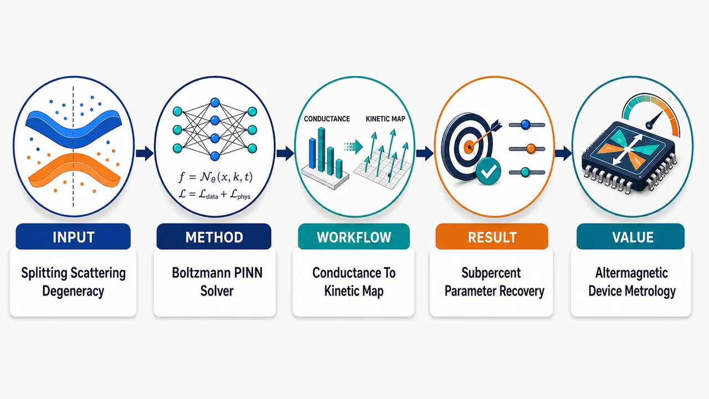
研究问题如何仅凭稀疏的费米能级依赖纵向电导谱，区分 d-wave altermagnet 中“本征自旋劈裂强度 α”和“外源动量弛豫时间 τ₀”？核心视觉可表现为：二维参数平面中一条狭窄弯曲的低误差谷，谷内“α 增大”与“τ₀ 减小”相互抵消，导致多个参数组合产生几乎相同的标量电导。创新方法将参数提取重写为受 Boltzmann 方程约束的反问题，用 PINN 作为可微 Boltzmann 求解器，而不是黑箱拟合器。Aha 点是：神经网络重构高维相空间分布 gσ(x,θ;EF)，同时强制满足局域 Boltzmann 残差、方向性接触注入、局域粒子守恒和全局电流连续，把少量标量电导点转化为受物理守恒约束的动力学重构。工作流程输入稀疏 G(EF) 电导谱与二维 d-wave altermagnetic Hamiltonian；计算自旋分辨费米面、角向速度 vσx(θ) 和弛豫长度 vσxτ₀；PINN 表示非平衡分布 g↑/g↓(x,θ,EF)；在器件内部最小化 Boltzmann 残差，在左右接触施加右行/左行方向注入边界，在全器件约束粒子守恒与电流连续；由重构分布积分得到预测电导；反向优化网络参数与 α、τ₀；输出自旋劈裂强度、动量弛豫时间及相空间动力学纹理。关键结果前向求解在普通金属 α=0 与 altermagnet α=0.4、扩散到弹道三种区间 lf/Lx=0.2/1.0/5.0 中，电导相对误差均低于 0.14%。固定 τ₀ 反演 α 时，仅 2–20 个电导点即可使误差低于 0.67%，10% 高斯噪声下 α 平均误差为 3.67%。联合反演目标 (α,τ₀)=(0.4,1.0) 时，无噪声得到 α=0.4014、τ₀=0.9917，误差 0.36% 与 0.83%；1% 噪声下仍稳定得到 α=0.4017、τ₀=0.9990。应用价值为 altermagnetic 器件输运测量提供一种可微、守恒、可解释的微观参数提取路线，可从普通双端电导中分离自旋劈裂与散射效应。视觉意义上，它把“单条电导曲线”升级为“自旋-角度-空间分布图”，有助于设计无净磁化、低杂散场的自旋电子器件，并为凝聚态中病态反问题提供物理约束机器学习范式。第一部分：核心概览 (Overview)
该研究把 d-wave altermagnet 中的 自旋劈裂强度 α 与 动量弛豫时间 τ₀ 的分离，表述为受 Boltzmann 方程约束的反问题。核心贡献在于证明纵向电导中 α 与 τ₀ 存在强补偿退化，并用 PINN 可微 Boltzmann 求解器 强制满足接触注入、局域粒子守恒与全局电流连续，从稀疏费米能级电导谱中同时提取两者。该工作处于 altermagnetic transport parameter identifiability 与 physics-informed inverse modeling 的交叉前沿。
---
第二部分：结构化快速回顾
《Boltzmann-constrained extraction of spin splitting and momentum relaxation in d-wave altermagnets》（None，）
背景
Altermagnets 无需自旋轨道耦合即可产生动量依赖的自旋劈裂，但输运测量把本征 spin splitting 与外源 scattering 混合在同一个标量电导中。纵向电导中 α 增大与 τ₀ 减小可相互补偿，导致严重参数不可辨识。
方法
采用二维最小 d-wave altermagnetic Hamiltonian，推导自旋分辨 Boltzmann transport equation、局域粒子守恒条件与电导泛函。构建 physics-informed neural network 表示 (g_σ(x,θ;E_F))，通过 Boltzmann 残差、方向性边界注入、电流连续与电导数据联合优化。
结果
前向求解在正常金属与 α=0.4 的 altermagnet 中覆盖 (l_f/Lₓ₌₀.2,1.0,5.0)，电导相对误差均低于 0.14%。单参数反演 α 时，(Ndₐₜₐ=2–20) 的相对误差低于 0.67%；10% 高斯噪声下 α 平均相对误差为 3.67%。联合反演目标 ((α,τ₀)=(0.4,1.0)) 时，无噪声得到 (α=0.4014,τ₀=0.9917)。
讨论
d-wave 费米面各向异性导致两自旋通道纵向速度分布显著不同，同一器件中出现不同有效弛豫长度。标量电导压缩了这种相空间动力学纹理，造成 ((α,τ₀)) 空间中的窄弯曲低误差谷。严格物理约束把低维标量数据转化为高维动力学重构问题。
局限
模型故意最小化，忽略 spin-orbit coupling、多能带交叉、磁畴、相干干涉、接触无序；反演数据为同一半经典模型生成的合成电导数据。真实实验仍需材料特异能带、有限温度、多畴平均与额外输运通道扩展。
结论
结合 Fermi-level-dependent conductance 与严格 Boltzmann constraints，可在所测试参数范围内稳定区分 spin splitting 与 momentum relaxation，为 altermagnetic conductors 中微观参数提取提供可微、物理守恒的反演路线。
---
第三部分：逐章节冷凝解析 (Section-by-Section Condensing)
Abstract
Identifiability problem in altermagnetic transport
Altermagnets 的关键物理优势是无需 spin-orbit coupling 即可产生自旋劈裂，但输运观测量通常同时包含本征能带效应与外源散射效应，形成参数辨识难题。摘要直接给出问题核心：*"Altermagnets exhibit spin-split electronic structure without requiring spin-orbit coupling, but transport measurements generally mix intrinsic spin splitting with extrinsic scattering."* 研究对象限定为二维 d-wave altermagnet，并使用从弹道到扩散统一覆盖的半经典框架：*"We examine this identifiability problem for a two-dimensional d-wave altermagnet within a unified semiclassical framework spanning ballistic to diffusive transport."*
Spin-dependent size effect from Fermi-surface anisotropy
自旋依赖费米面各向异性 会在有限尺寸器件中放大为明显的 size effect：两自旋通道纵向速度差异巨大，因此在相同器件几何中表现出不同的有效弛豫长度。关键表述为：*"The spin-dependent Fermi-surface anisotropy produces a pronounced size effect, where vastly different longitudinal velocities cause the two spin channels to exhibit markedly different effective relaxation lengths within the same device geometry."* 这说明 altermagnetic spin splitting 不只是改变电导大小，还改变载流子在器件中保持接触记忆的距离分布。
Strong compensation between α and τ₀
altermagnetic coupling (α) 与 momentum relaxation time (τ₀) 在纵向电导中强烈补偿，导致严重参数退化。摘要中的核心诊断是：*"However, the altermagnetic coupling α and the momentum relaxation time τ0 strongly compensate each other in longitudinal conductance, creating a severe parameter degeneracy."* 物理含义是，增大 α 可增强高速自旋通道贡献，而减小 τ₀ 可缩短传播长度，两者在标量电导上可能产生相似结果。
PINN as differentiable Boltzmann solver
为解除退化，构建 physics-informed neural network (PINN)，不是单纯拟合电导，而是作为可微 Boltzmann solver，严格执行三类物理条件：接触注入、局域粒子守恒、全局电流连续。摘要表述为：*"we formulate a physics-informed neural network (PINN) to act as a differentiable Boltzmann solver that strictly enforces contact injection, local particle conservation, and global current continuity."* 这使反演过程被动力学方程正则化。
Sparse conductance spectra enable simultaneous extraction
稀疏的 (G(E_F)) 电导谱在严格物理约束下足以同时恢复 (α) 与 (τ₀)，且在中等测量噪声下达到亚百分比精度。核心结果为：*"Driven by sparse conductance spectra, this neural solver leverages the Fermi-level dependence of transport to unlock the coupled parameters simultaneously, achieving sub-percent accuracy even under moderate measurement noise."* 结论性意义是：*"combining the Fermi-level dependence of transport with strict physical constraints provides a robust route to separating spin splitting from scattering in altermagnetic conductors."*
---
I Introduction
Altermagnetism as compensated but spin-split magnetic order
Altermagnetism 被定位为一种特殊的共线磁序：无净磁化、无需相对论性 SOC，却由晶体对称性产生动量依赖自旋劈裂。开篇定义为：*"Altermagnetism has emerged as a distinct form of collinear magnetic order in which crystal symmetries generate momentum-dependent spin splitting even in the absence of net magnetization and relativistic spin-orbit coupling."* 这种性质把 antiferromagnetic compensation 与 spin-polarized band structure 结合，使其适合无杂散场的自旋输运：*"This combination of antiferromagnetic compensation and spin-polarized band structure makes altermagnets attractive for spin transport."*
Transport characterization requires separating microscopic spin splitting from scattering
输运研究的中心问题不是简单检测 altermagnetic spin splitting 是否存在，而是从器件测量中提取其微观强度并与普通散射分离。关键句为：*"A central question for transport studies is therefore not only whether altermagnetic spin splitting is present, but how its microscopic strength can be separated from ordinary scattering processes in a device measurement."* 这种分离困难来自宏观输运量对自旋和角度依赖费米面的平均：*"the most accessible observables are macroscopic averages over a spin- and angle-dependent Fermi surface."*
Existing probes and transport signals are entangled with extrinsic complications
ARPES 等谱学探针在候选材料中可能受多畴平均影响；输运信号又受接触几何、杂质散射和竞争性 spin-charge conversion 机制影响。具体表述为：*"Spectroscopic probes such as angle-resolved photoemission can be complicated by multidomain averaging in candidate materials, while transport signals are also affected by contact geometry, impurity scattering, and competing spin-charge conversion mechanisms."* 因而单一实验读数难以直接映射到 (α)。
Boltzmann description exposes compensation mechanism
在 Boltzmann 图像中，(α) 改变费米面速度分布，(τ₀) 控制注入载流子失去接触记忆的速度。二者在纵向电导中可相互补偿：*"In a Boltzmann description, the altermagnetic coupling changes the velocity distribution on the Fermi surface, whereas the relaxation time controls how rapidly injected carriers lose memory of the contacts."* 退化机制被明确描述为：*"increasing the spin splitting may enhance the contribution of fast carriers, while reducing the relaxation time suppresses their propagation."* 因此参数提取需要处理真正的动力学反问题，而不是拟合单条曲线：*"A reliable extraction of microscopic parameters must therefore resolve a genuine kinetic inverse problem rather than fit a single conductance curve."*
Unified semiclassical Boltzmann theory bridges ballistic and diffusive limits
semiclassical Boltzmann equation 是连接微观能带动力学与介观输运的自然桥梁。引言给出理论地位：*"The semiclassical Boltzmann equation provides the natural bridge between microscopic band dynamics and mesoscopic transport."* 已有统一半经典框架可连续插值扩散到弹道区间，其核心是局域平衡粒子守恒与接触方向注入：*"a unified semiclassical formulation that interpolates continuously from the diffusive to the ballistic regime has been established ... in which the nonequilibrium distribution is determined self-consistently by a local equilibrium enforcing particle conservation together with directional carrier injection at the contacts."*
Direct discretized solution is feasible forward but cumbersome inverse
对于强各向异性费米面，直接求解需要对非局域自洽积分方程进行角度和空间离散。前向计算可行，但在两参数反演中重复调用会变得繁重：*"For a strongly anisotropic Fermi surface, however, direct numerical solution requires angular and spatial discretization of a nonlocal self-consistent integral equation."* 以及：*"This is manageable for a forward calculation but becomes cumbersome when repeated many times in a two-parameter inverse search."*
Purely data-driven regression can violate conservation laws
纯数据驱动回归可能重现实验电导，却不保证粒子守恒或电流连续，从而得到非物理稳态参数。引言中的批判为：*"purely data-driven regression can reproduce measured conductances without enforcing particle conservation or current continuity, and therefore may identify parameter sets that do not correspond to a physically admissible steady state."* 因而反问题必须用同一套定义输运观测量的动力学方程正则化：*"the inverse problem should be regularized by the same kinetic equations that define the transport observable."*
Boltzmann-constrained extraction targets α and τ₀ from sparse G(EF)
研究方案是把 (α) 和 (τ₀) 的提取重写为由 Fermi-level-dependent conductance data 驱动的 Boltzmann-constrained extraction：*"Here we reformulate the problem as a Boltzmann-constrained extraction of the altermagnetic coupling α and relaxation time τ0 from sparse Fermi-level-dependent conductance data."* PINN 作为可微 (g_σ) 表示，在反演模式中把 (α,τ₀) 作为物理参数而非标签优化：*"in the inverse mode, α and τ0 are optimized as physical parameters rather than treated as labels."*
Three guiding questions define the research program
三个问题分别检验：稳态电化学势与电导在扩散/交叉/弹道区间的重构精度；d-wave altermagnetic Fermi surface 产生的自旋分辨 kinetic texture；如何解除 (α) 与 (τ₀) 的电导补偿。原文连续列出：*"First, how accurately can the steady-state electrochemical-potential profile and conductance be reconstructed across diffusive, crossover, and ballistic regimes? Second, what spin-resolved kinetic texture is produced by the d-wave altermagnetic Fermi surface? Third, under what conditions can the conductance compensation between α and τ0 be lifted?"*
Main physical finding: kinetic contrast visible in distribution but compressed in conductance
主要物理发现是，altermagnetic 费米面各向异性与有限器件尺寸结合，产生强烈自旋依赖动力学对比；这种对比在非平衡分布中清楚可见，但在标量电导中被压缩。原文表述为：*"the altermagnetic Fermi-surface anisotropy, when coupled with the finite device size, produces a pronounced spin-dependent kinetic contrast that is visible in the reconstructed nonequilibrium distribution but largely compressed in the scalar conductance."* 电导误差图揭示补偿谷：*"Mapping the conductance error in the (α,τ0) plane exposes the corresponding compensation valley."* 物理约束把补偿谷转化为良定反演：*"Adding the local Boltzmann equation and global continuity constraint converts this valley into a well-conditioned inverse calculation within the parameter range studied."*
---
II Boltzmann formulation for a two-dimensional d-wave altermagnet
Minimal two-dimensional d-wave Hamiltonian
二维介观通道长度为 (Lₓ)，连接理想源漏库。低能模型为
[
hatH(k)=frachbar²k²2mhatI+α(kₓ²-ky²)hatσz.
]
关键定义是：*"where m is the effective mass, α is the altermagnetic coupling, and σ̂z is defined with respect to the Néel-vector axis."* 该 Hamiltonian 的 altermagnetic 项具有 (dₓ^₂₋y^₂)-wave 角动量结构。
Spin conservation along the Néel axis
由于 Hamiltonian 与 (hatσ_z) 对易，Néel 轴方向自旋守恒。原文给出：*"Since [Ĥ(k),σ̂z]=0, the spin along the Néel axis is conserved."* 这使两条自旋分支在动力学上可分解，但后续碰撞项仍将其驱向共同局域平衡。
Spin-space-group symmetry protects d-wave splitting
altermagnetic 项由定义性 spin-space-group 生成元保护：*"The altermagnetic term α(kx2−ky2)σ̂z is protected by the defining altermagnetic generator g=[C4zR∥C2xS]."* 该生成元包含动量空间 (π/2) 旋转与自旋空间 (σₓ) 操作。动量旋转令 (kₓ²⁻k_y²) 变号，自旋操作令 (σ_z) 变号，两次变号相互抵消：*"The rotation R sends (kx2−ky2)→−(kx2−ky2), while U=σ̂x maps σ̂z→−σ̂z ...; the two sign changes cancel and the term is invariant."*
Ferromagnetic k²σz term is forbidden
常规铁磁型 ((kₓ²⁺k_y²⁾σ_z) 项被相同的空间-自旋解耦对称性禁止，因为其空间部分不会补偿 (σ_z) 的变号。原文明确指出：*"The same decoupling of spatial and spin operations forbids a conventional ferromagnetic coupling (kx2+ky2)σ̂z, whose spatial part carries no compensating sign change."* 这强制产生非常规 (dₓ^₂₋y^₂)-wave 自旋劈裂：*"enforcing the unconventional dx2−y2-wave momentum dependence of the spin splitting."*
Spin branch dispersions and closed elliptical Fermi contours
两自旋分支色散为
[
ǎrepsilonₚ̆ₐᵣᵣₒwdₒwₙₐᵣᵣₒw(k)=frachbar²2m(kₓ²⁺k_y²⁾±α(kₓ²⁻k_y²⁾.
]
当 (|α|<hbar²/(2m)) 时，费米轮廓为闭合椭圆，且两自旋主轴正交：*"For |α|<ℏ2/(2m) the Fermi contours are closed ellipses with orthogonal principal axes for the two spin branches."*
Angular representation enables kinetic and conductance integrals
通过 (kₓ₌ₖₒ̧sθ,k_y=ksinθ)，能量写为
[
ǎrepsilon_σ(k,θ)=A_σ(θ)k²,quad A_σ(θ)=frachbar²2m+s_σαo̧s2θ.
]
其中 (sₚ̆arrow=+1,s_downarrow=-1)。费米波矢为 (kFσ(θ)=sqrtE_F/A_σ(θ))，面积元为 (dkₓdk_y=frac12A_σ(θ)dǎrepsilon dθ)。该角表示被用作后续积分基础：*"This angular representation is the form used below for both the kinetic equation and conductance integral."*
Linearized Boltzmann equation removes explicit electric-field term
弱纵向偏压下，稳态 Boltzmann 方程为
[
vσ ₓfracpartial f_σpartial x-eEₓᵥσ ₓfracpartial f₀partialǎrepsilonₖ
=-fracf_σ-barfτ₀.
]
线性响应展开 (f_σ=f₀₊₍₋partial f₀/partialǎrepsilon)[eV(x)+g_σ])，局域平衡 (bar f=f₀₊₍₋partial f₀/partialǎrepsilon)[eV(x)+bar g])。代入后显式电场项抵消，得到
[
vσ ₓfracpartial g_σpartial x=-fracg_σ-bar gτ₀.
]
原文强调：*"Substitution into Eq. (6) cancels the explicit electric-field term and gives the transport equation for the electrochemical-potential perturbation."*
Local particle conservation fixes a common local equilibrium
碰撞项守恒局域粒子数，因此 (bar g(x)) 由总载流子密度守恒确定：*"The collision term conserves local particle number, so ḡ(x) is fixed by"*
[
sum_σint f_σ(k,x)dk=sum_σintbar f(k,x)dk.
]
零温下
[
bar g(x)=
fracsum_σint₀²πg_σ(x,θ)[2A_σ(θ)]⁻¹dθ
sum_σint₀²π[2A_σ(θ)]⁻¹dθ.
]
重要设定是单一共同 (bar g(x))，而非自旋分辨 (bar g_σ(x))：*"Here a single local electrochemical potential ḡ(x) is shared by both spin channels, rather than a spin-resolved ḡσ(x)."*
Shared local equilibrium is appropriate for nonmagnetic two-terminal charge measurement
虽然 ([H,σ_z]=0) 使两自旋分支动力学独立，碰撞项仍驱动总载流子密度守恒下的共同局域平衡：*"Although [Ĥ(k),σ̂z]=0 makes the two spin branches dynamically independent, the collision term drives the distribution toward a common local equilibrium fixed by conservation of the total carrier density."* 该处理适合非磁接触的双端电荷测量：*"Such a unified description is appropriate for the two-terminal charge measurement considered here, in which non-magnetic contacts inject both spin species at the same electrochemical potential and no net spin accumulation is generated."* 若存在磁接触或自旋积累，则需要独立 (bar g_σ(x))：*"A fully spin-resolved treatment with independent ḡσ(x) would instead be required for magnetic contacts or spin-accumulation phenomena."*
Directional ideal-contact boundary conditions
理想接触边界条件具有方向性：右行载流子在 (x=0) 由源极注入，左行载流子在 (x=Lₓ) 由漏极注入。原文给出：*"right-moving carriers injected at x=0 satisfy gσ(0,θ)=gσL=eVL for vσx>0, while left-moving carriers injected at x=Lx satisfy gσ(Lx,θ)=gσR=eVR for vσx<0."* 这一区分是弹道-扩散统一理论的关键，因为不同速度方向具有不同接触记忆。
Formal solution contains exponential memory of contacts and local equilibrium
Boltzmann 方程形式解包含从边界注入项的指数衰减，以及沿路径对局域平衡 (bar g(ξ)) 的指数加权积分。其结构体现了有效弛豫长度 (vσ ₓτ₀)：右行部分含 (e⁻x/⁽vσ ₓτ₀₎)，左行部分含 (e⁻⁽Lₓ₋ₓ₎/⁽|vσ ₓ|τ₀₎)。这使速度各向异性直接进入空间记忆核。
Self-consistent integral equation makes α–τ₀ correlation explicit
将形式解代入粒子守恒方程，得到
[
bar g(x)=h(x)+int₀LₓK(x,ξ)bar g(ξ)dξ.
]
核函数含 (e⁻|x⁻ξ|/⁽|vσ ₓ|τ₀₎)，因此 (α) 通过 (vσ ₓ) 改变核形状，(τ₀) 通过弛豫长度改变衰减尺度。原文直接指出：*"This equation makes the parameter-correlation problem explicit: both α and τ0 enter the decay kernel through the spin-dependent velocities and relaxation length."*
Conductance functional follows from Fermi-surface average
纵向电流密度为
[
jₓ₌fraceh²sum_σint₀²π
vσ ₓfracg_σ(x,θ)2A_σ(θ)dθ.
]
并由源漏电压归一化得到
[
G=fracjₓL_yV_L-V_R.
]
局域粒子守恒与电流表达式共同保证源自由稳态电流连续：*"Equations (12) and (15) imply ∂jx/∂x=0 in a source-free steady state."*
---
III Differentiable constrained inversion
PINN is introduced to differentiate the forward map repeatedly
直接积分方程可通过空间-角度离散求解，但反问题需要反复求值和微分 (α,τ₀mapsto G(E_F))。原文给出动机：*"the inverse problem requires the forward map α,τ0↦G(EF) to be evaluated and differentiated repeatedly."* 因此使用 PINN 表示自旋分辨分布：
[
Nₘₐₜₕbf W,ₘₐₜₕbf b:(x,θ,E_F,σ)mapsto g_σ(x,θ;E_F).
]
Neural network is a numerical device, not a replacement for physics
网络只提供可微函数表示，允许 automatic differentiation 计算 (partial g_σ/partial x)，角积分由采样 collocation points 估计。关键限定是：*"The use of a neural representation is only a numerical device; the admissible solution space is defined by the Boltzmann residual, boundary injection, particle conservation, and current continuity."* 因而模型不是黑箱回归器，而是物理方程约束下的函数逼近器。
Boltzmann residual enforces local kinetic equation
内部 collocation points (xᵢ,θⱼ) 上的动力学损失为
[
mathcal LBTE=
frac1Ncₒₗsumᵢ,ⱼ,σ
łeft|
vσ ₓ,ⱼfracpartial g_σ(xᵢ,θⱼ₎partial x
+fracg_σ(xᵢ,θⱼ₎₋bar g(xᵢ₎τ₀
i̊ght|².
]
该项直接把局域输运方程嵌入优化：*"For internal collocation points xi,θj, the transport residual is..."*
Boundary loss enforces directional contact injection
边界损失只约束从接触注入的速度方向：
[
mathcal Lbc
=frac1Nbcsumⱼ,σ
[Θ(vσ ₓ,ⱼ)|g_σ(0,θⱼ₎₋gσ L|²
+Θ(-vσ ₓ,ⱼ)|g_σ(Lₓ,θⱼ₎₋gσ R|²].
]
这对应物理上右行从左接触注入、左行从右接触注入，而非在所有角度上强加 Dirichlet 条件。
Current-continuity loss removes source-violating steady states
全局源自由稳态通过惩罚 (partial jₓ/partial x) 实现：
[
mathcal Lcₒₙₜ=frac1Nₓsumᵢ
łeft|fracpartial jₓ₍ₓᵢ₎partial xi̊ght|².
]
原文说明目的：*"To enforce the global source-free steady state we also penalize deviations from current continuity."* 这项在反演中特别重要，因为局域残差小并不自动排除空间变化电流。
Forward loss combines BTE, boundary, and continuity
前向损失为
[
mathcal Lfwd=
łambdaBTEmathcal LBTE
+łambdabcmathcal Lbc
+łambdacₒₙₜmathcal Lcₒₙₜ.
]
该损失无数据项，目标是在给定 (α,τ₀) 时重建物理允许的 (g_σ)。
Inverse loss adds sparse conductance spectra
反演数据损失为
[
mathcal Ldₐₜₐ=
frac1Ndₐₜₐsumᵢ
|Gₚᵣₑd(EF,ᵢ)-Gₒbₛ(EF,ᵢ)|²,
]
总损失为
[
mathcal Lᵢₙᵥ=mathcal Lfwd
+łambdadₐₜₐmathcal Ldₐₜₐ.
]
关键机制是未知物理参数与分布函数同时优化，但每一步都满足同一动力学约束：*"The unknown physical parameters are updated together with the distribution representation, but they are constrained at every step by the same kinetic equations used in the forward problem."*
Implementation uses a five-layer tanh network and Adam optimizer
实现细节包括：五个隐藏层、每层 128 个神经元、tanh 激活，输出端使用 bounded activation 保持扰动处于偏压窗口数值范围内。原文为：*"Unless otherwise noted, the network contains five hidden layers with 128 neurons per layer and hyperbolic tangent activations."* 以及：*"A bounded activation is used at the output to keep the perturbation within the numerical range set by the bias window."* 优化器为 Adam：*"The Adam optimizer is used for both network parameters and physical parameters."*
Two-parameter inversion learning rates and hardware are specified
联合反演中，网络参数学习率为 (10⁻³)，物理参数 ((α,τ₀₎) 学习率为 (5×10⁻³)，并使用 cosine annealing 和 gradual activation of loss weights。具体表述为：*"For the two-parameter inversion shown below, the learning rates are 10−3 for (W,b) and 5×10−3 for (α,τ0), with cosine annealing and gradual activation of the loss weights."* 计算平台为单张 RTX 4090：*"The calculations were performed on a single NVIDIA GeForce RTX 4090 GPU."* 这些是优化实现，而非物理模型组成部分：*"These implementation details are not part of the physical model."*
---
IV Results and Discussion
IV.1 Forward benchmark across transport regimes
Dense discretized Boltzmann solver provides the benchmark
前向验证先于参数提取，用密集空间-角度离散求解 (bar g(x)) 的自洽积分方程作为基准。原文目的明确：*"We first verify that the differentiable solver reproduces the Boltzmann solution before using it for parameter extraction."* 基准为：*"a dense spatial-angular discretization of the self-consistent integral equation for ḡ(x)."*
Small longitudinal velocities require a cutoff in collision integral
接近横向运动的载流子 (|vσ ₓ|) 很小，会导致碰撞核很长，因此参考计算在碰撞积分中使用 (|vσ ₓ|>0.02) 截断。原文为：*"Because very small |vσx| produces long collision kernels for carriers moving nearly transverse to the channel, the reference calculation uses a cutoff |vσx|>0.02 in the collision integral."* 这是数值稳定处理，与 PINN 反演物理约束区分开。
Benchmark covers normal and altermagnetic channels
基准覆盖正常金属 (α=0) 与 altermagnet (α=0.4)，输出局域电化学势与电导：*"This benchmark provides the local electrochemical-potential profile and the conductance for normal (α=0) and altermagnetic (α=0.4) channels."* 图 2 比较三种输运区间：(l_f/Lₓ₌₀.2,1.0,5.0)，费米能级 (E_F=1.0)。
Diffusive-to-ballistic interpolation is reproduced
三种 (l_f/Lₓ) 从近线性扩散剖面过渡到弱变化弹道剖面。原文总结为：*"The three regimes interpolate from an almost linear diffusive profile to a weakly varying ballistic profile."* PINN 与密集 Boltzmann 解吻合，说明同时捕捉了局域弛豫与边界注入：*"The agreement shows that the constrained representation captures both the local relaxation to ḡ(x) and the boundary-injected nonequilibrium component."*
Conductance errors remain below 0.14% in all six cases
表 1 给出六组电导对比，最大相对误差 0.14%。原文为：*"The relative conductance error remains below 0.14% for all six cases."* 数值细节如下：
- (α=0.0,l_f/Lₓ₌₀.2)：(GNᵤₘ=1.3367)，(GDᵢff=1.3384)，误差 0.13%，(TNᵤₘ=686.0129) s，(TDᵢff=510.9195) s。
- (α=0.0,l_f/Lₓ₌₁.0)：(3.3808) vs (3.3761)，误差 0.14%。
- (α=0.0,l_f/Lₓ₌₅.0)：(4.9423) vs (4.9409)，误差 0.03%。
- (α=0.4,l_f/Lₓ₌₀.2)：(2.1266) vs (2.1265)，误差 0.00%。
- (α=0.4,l_f/Lₓ₌₁.0)：(5.0716) vs (5.0646)，误差 0.14%。
- (α=0.4,l_f/Lₓ₌₅.0)：(7.3120) vs (7.3048)，误差 0.10%。
Differentiability matters more than timing
运行时间比较仅是反演实用性参考；关键是前向映射可对 (α,τ₀) 微分。原文说明：*"The timing comparison is included only as a practical reference for the repeated inverse calculations; the essential point is that the forward map is differentiable with respect to α and τ0."*
---
IV.2 Spin-resolved kinetic texture of altermagnetic transport
Scalar conductance hides phase-space kinetic structure
标量电导压缩了 microscopic kinetic structure。该小节开头直接指出：*"The scalar conductance compresses the microscopic kinetic structure."* 图 3 的 (gₚ̆arrow(x,θ)) 与 (g_downarrow(x,θ)) 显示这种压缩中丢失的信息：*"The reconstructed phase-space distributions in Fig. 3 show what is lost in that compression."*
Parameters reveal strong spin-dependent velocity contrast
图 3 使用 (α=0.4,E_F=1.0,l_f/Lₓ₌₁.0)。两自旋分支具有正交费米面畸变，产生不同纵向速度分布：*"For α=0.4, EF=1.0, and lf/Lx=1.0, the two spin branches have orthogonal Fermi-surface distortions and therefore different longitudinal velocity distributions."*
Spin-up retains sharp contact memory over large device fraction
自旋向上通道的较大纵向速度导致有效 mean free path 接近器件长度，使注入分布在器件相当大范围内保持清晰接触记忆。原文为：*"In the spin-up channel, the larger longitudinal velocity leads to a long effective mean free path comparable to the device size, allowing the injected distribution to retain a sharp contact memory over a substantial fraction of the device."*
Spin-down rapidly relaxes toward local equilibrium
自旋向下通道纵向速度较小，有效弛豫长度较短，注入分布迅速平滑到局域平衡。原文为：*"In the spin-down channel, the smaller longitudinal velocity shortens the effective relaxation length and rapidly smooths the injected distribution toward local equilibrium."*
Finite-size velocity anisotropy creates the extraction problem
同一器件中两自旋有效弛豫长度差异巨大，是有限尺寸效应与强速度各向异性耦合的结果，也是参数提取问题的微观来源。原文明确总结：*"This strong disparity in effective relaxation lengths—a manifestation of finite size effects in the presence of strong velocity anisotropy—is the microscopic origin of the parameter-extraction problem."*
α affects the distribution of relaxation lengths, not only conductance magnitude
altermagnetic coupling 不只改变电导大小，还改变费米面上弛豫长度分布。原文为：*"The altermagnetic coupling changes not only the magnitude of the conductance but also the distribution of relaxation lengths over the Fermi surface."* 因此反演应从 (g_σ(x,θ)) 的动力学演化推断 (α)，而非只依赖 (G)：*"A transport inversion should therefore infer α from the kinetic evolution of gσ(x,θ), not only from a scalar change in G."*
---
IV.3 Single-parameter extraction from sparse conductance spectra
Single-parameter inverse test fixes τ₀ and targets αtrue=0.4
较简单反问题固定 (τ₀)，从选定费米能级的电导值提取 (α)。目标为 (αₜᵣᵤₑ=0.4)。原文为：*"We next test the simpler inverse problem in which τ0 is fixed and the altermagnetic coupling α is extracted from conductance values at selected Fermi levels. The target is αtrue=0.4."*
Relative error stays below 0.67% for 2–20 conductance points
当 (Ndₐₜₐ) 从 2 到 20 变化时，α 相对误差均低于 0.67%。原文为：*"Figure 4(a) shows that the relative error remains below 0.67% when the number of conductance points is varied from 2 to 20."* 这说明稀疏电导谱已足够在强物理约束空间中选择正确解。
Weak dependence on data volume indicates physics-constrained inference
误差对数据量依赖弱，表明电导点不是被当作黑箱标签，而是在 Boltzmann 方程与守恒律已限制的解空间中筛选解。原文为：*"The weak dependence on data volume indicates that the conductance points are not being used as independent labels for a black-box fit; they select a solution within a space already restricted by the Boltzmann equation and conservation laws."*
Representative trajectory for Ndata=8 rapidly approaches target
图 4(b) 使用 (Ndₐₜₐ=8)，展示参数快速接近目标，随后随 kinetic residual 与 data loss 平衡而缓慢松弛。原文为：*"The parameter moves rapidly toward the target and then relaxes slowly as the kinetic residual and data loss are balanced."*
Noise robustness remains meaningful up to 10% Gaussian noise
对于 (Ndₐₜₐ=8)，在电导数据中加入 1% 到 10% 高斯噪声；点值为三次独立运行平均。原文为：*"With Ndata=8, Gaussian noise levels from 1% to 10% were added to the conductance data."* 即使 10% 噪声下，α 平均相对误差仍为 3.67%：*"Even at 10% noise, the mean relative error in α remains 3.67%."*
Robustness comes from kinetic regularization
噪声鲁棒性不是简单统计平均，而是来自动力学正则化：含噪电导仍必须与满足 Boltzmann 方程、接触注入和连续性的分布兼容。原文为：*"This robustness should be interpreted as a consequence of kinetic regularization: noisy conductance values must still be compatible with a distribution satisfying the Boltzmann equation, contact injection, and continuity."*
Current continuity is essential
图 5 比较有无 (mathcal Lcₒₙₜ)。无连续性惩罚时，边界拟合可产生空间变化电流，即使局域残差较小；加入连续性约束后，非物理变化被抑制。原文为：*"Without the continuity constraint, boundary fitting can produce spatially varying currents even when the local residual is small."* 以及：*"Including the constraint suppresses these unphysical variations and restores the source-free steady state over the full device."*
Continuity prevents incorrect parameters from being hidden by nonconserved currents
反演中，若允许非守恒电流，优化器可能用空间变化电流剖面补偿错误微观参数。原文给出关键作用：*"For inverse extraction, this prevents the optimizer from using a nonconserved current profile to compensate for an incorrect microscopic parameter."*
Weak-coupling sensitivity reaches α=0.05
不同目标 (α) 也被测试，包括接近各向同性金属极限的弱耦合情形。对于 (α=0.05)，绝对误差为 (|Δ α|=0.0067)。原文为：*"For α=0.05 the absolute error is |Δα|=0.0067, showing that the approach remains sensitive to small Fermi-surface distortions in the present minimal model."*
---
IV.4 Resolving the compensation between spin splitting and scattering
Joint inversion is harder because neither α nor τ₀ is known
真实输运表征中 (α) 与 (τ₀) 通常都未知。原文开头为：*"In realistic transport characterization, neither α nor τ0 is known a priori."* 因而联合反演比固定 (τ₀) 的单参数反演更困难。
Conductance-error landscape contains a narrow curved compensation valley
图 6 绘制试探参数 ((α,τ₀₎) 产生的电导谱与目标谱的均方误差。低误差区域不是圆形孤立盆地，而是狭窄弯曲谷：*"The low-error region forms a narrow curved valley rather than an isolated circular basin."* 这说明纵向电导对 (α,τ₀) 的响应高度相关。
Larger spin splitting can be offset by shorter relaxation
补偿机制清晰：更大的 altermagnetic spin splitting 可被更短的 momentum relaxation 部分抵消，从而保留相似纵向电导谱。原文为：*"Along this valley, a larger altermagnetic spin splitting can be partly offset by shorter momentum relaxation, leaving a similar longitudinal conductance spectrum."* 这正是需要解决的 transport compensation：*"This is the transport compensation that must be resolved."*
Boltzmann-constrained joint inversion uses 12 conductance points
联合反演使用 (Ndₐₜₐ=12) 个电导点，并保留 kinetic 与 continuity losses。原文为：*"The Boltzmann-constrained inverse calculation uses Ndata=12 conductance points while retaining the kinetic and continuity losses."* 这展示稀疏谱数据在强约束下仍可用于两参数反演。
Optimization path first follows valley, then turns to target
图 7(a) 的优化轨迹反映误差地形各向异性：先沿补偿谷浅方向移动，随后当分布函数同时满足电导数据与动力学约束后转向目标。原文为：*"The trajectory initially follows the shallow direction of the compensation valley, then turns toward the target as the distribution function becomes consistent with both the conductance data and the kinetic constraints."*
α and τ₀ relax on different scales
(α) 控制角向速度结构，较早被固定；(τ₀) 控制整体弛豫长度，沿补偿谷演化更慢。原文为：*"The two parameters relax on different scales: α, which controls the angular velocity structure, is pinned relatively early, whereas τ0, which controls the overall relaxation length, evolves more slowly along the valley."*
Noise-free joint inversion achieves sub-percent errors
目标值为 (α=0.4,τ₀₌₁.0)。无噪声反演得到 (α=0.4014,τ₀₌₀.9917)，相对误差分别为 0.36% 和 0.83%。原文数值为：*"For the target values α=0.4 and τ0=1.0, the extracted values in the noise-free case are α=0.4014 and τ0=0.9917, corresponding to relative errors of 0.36% and 0.83%."*
1% Gaussian noise does not destabilize joint extraction
加入 1% 高斯噪声后，提取得到 (α=0.4017,τ₀₌₀.9990)，相对误差 0.43% 与 0.10%。原文为：*"With 1% Gaussian noise added to the conductance data, the extracted values are α=0.4017 and τ0=0.9990, with relative errors of 0.43% and 0.10%."* τ₀ 在该噪声实例中更准不应解释为噪声有益：*"The improvement in τ0 for this noisy realization should not be viewed as a general benefit of noise."* 正确结论是中等噪声未破坏受约束解：*"the joint extraction remains stable when the measured scalar conductance is perturbed."*
---
V Conclusion
Characterization is reformulated as a Boltzmann-constrained inverse problem
结论将 altermagnet 表征重写为 Boltzmann-constrained inverse transport problem。原文为：*"We have reformulated the characterization of a d-wave altermagnet as a Boltzmann-constrained inverse transport problem."* 在最小模型中，(α) 控制角向自旋劈裂并产生自旋依赖弹道-扩散传播，(τ₀) 控制注入非平衡载流子的衰减：*"the altermagnetic coupling α controls the angular spin splitting and produces spin-dependent ballistic–diffusive propagation, while the relaxation time τ0 controls the decay of injected nonequilibrium carriers."*
Scalar fitting produces a low-error valley
由于 (α) 与 (τ₀) 在纵向电导中补偿，直接标量拟合会在参数平面产生窄低误差谷。原文为：*"Because these effects compensate in longitudinal conductance, direct scalar fitting produces a narrow low-error valley in the (α,τ0) plane."* 这总结了整个可辨识性问题。
Differentiable Boltzmann solver has forward and inverse functions
可微 Boltzmann 求解器具有两种功能。前向模式中，它在扩散到弹道区间复现基准电化学势剖面与电导；反演模式中，它允许优化 (α,τ₀) 的同时强制物理约束。原文为：*"In forward mode it reproduces benchmark electrochemical-potential profiles and conductances over diffusive-to-ballistic regimes."* 以及：*"In inverse mode it allows α and τ0 to be optimized while enforcing the local kinetic equation, directional contact injection, local particle conservation, and global current continuity."*
Sparse conductance data become constrained kinetic reconstruction
稀疏 (G(E_F)) 数据通过物理约束转化为动力学重构，从而实现所测试参数范围内自旋劈裂与散射的同时提取。原文为：*"This converts sparse Fermi-level-dependent conductance data into a constrained kinetic reconstruction and enables the simultaneous extraction of spin splitting and scattering within the tested parameter range."*
Minimal model restrictions define experimental next steps
模型故意最小化，忽略多个现实复杂因素。原文完整列出：*"It neglects spin-orbit coupling, multiband crossings, magnetic domains, coherent interference, and contact disorder, and the inverse tests use synthetic conductance data generated from the same semiclassical model."* 这些限制让可辨识机制透明，但也要求实验扩展：*"These restrictions make the identifiability mechanism transparent, but they also define the next steps toward experimental use."*
Future extensions require material specificity and experimental complications
真实器件应用需要材料特异能带、有限温度展宽、多畴平均与额外输运通道。原文为：*"Extending the approach to material-specific band structures, finite-temperature broadening, multidomain averaging, and additional transport channels will determine how robustly altermagnetic spin splitting can be extracted from real device measurements."*
Physically constrained neural representations offer a broader paradigm
更广泛意义是，物理约束神经表示可用于凝聚态复杂病态反问题。结论句为：*"More broadly, the physically constrained neural representation demonstrated here offers a rigorous paradigm for utilizing machine learning to resolve complex, ill-posed inverse problems across condensed matter physics."*
---
Data Availability
Data are available on request and source code is public
数据可向通讯作者合理请求获取，源代码公开在 GitHub。原文为：*"The data that support the findings of this study are available from the corresponding authors upon reasonable request."* 代码地址明确给出：*"The source code is publicly available at GitHub: https://github.com/GaoYX88/Boltzmann-Constrained-Altermagnet-Transport."*
---
Acknowledgements
Funding and computational support
经费支持来自国家自然科学基金 Grant No. 12304068 与南京航空航天大学启动基金 Grant No. YAH24076。原文为：*"This work was supported by the National Natural Science Foundation of China under Grant No. 12304068 (H.G.), the startup Fund of Nanjing University of Aeronautics and Astronautics Grant No. YAH24076 (H.G.)."* 计算部分由南京航空航天大学高性能计算平台支持：*"The computations are partially supported by the High Performance Computing Platform of Nanjing University of Aeronautics and Astronautics."*
---
第四部分：深度理解与语言支持 (Understanding & Nuance)
1. 术语解析
Altermagnetism
Altermagnetism 不是普通 antiferromagnetism，也不是 ferromagnetism。其关键是净磁化补偿，但能带仍呈动量依赖自旋劈裂。语境中 *"spin-split electronic structure without requiring spin-orbit coupling"* 强调其自旋劈裂不是 SOC 诱导，而是由晶体-自旋对称性保护。
Identifiability problem
Identifiability problem 指多个微观参数可产生几乎相同观测量，导致仅从数据无法唯一确定参数。这里的歧义不是噪声造成，而是物理映射本身存在退化：(α) 和 (τ₀) 都改变 (G(E_F))，且可相互补偿。
Compensation valley
Compensation valley 是参数空间中一条低误差轨迹，而非单个最优点。沿这条谷，增大 (α) 可由减小 (τ₀) 抵消。学术上它意味着 Hessian 高度各向异性，某个参数组合方向很难由标量电导区分。
Kinetic texture
Kinetic texture 指 (g_σ(x,θ)) 在空间 (x)、角度 (θ)、自旋 (σ) 上的非平衡分布结构。它比电导 (G) 包含更多信息；电导只是对这个相空间分布加权积分后的标量。
Physics-informed neural network
PINN 在这里不是用神经网络学习经验映射，而是用神经网络表示未知函数，并把 Boltzmann 方程、边界条件、粒子守恒、电流连续写进损失函数。微妙差别在于：网络自由度服从物理方程，而不是替代物理方程。
---
2. 疑难查证
为什么 α 和 τ₀ 会在电导中补偿？
(α) 改变费米面的角向形状，从而改变 (vσ ₓ(θ))。某些方向和自旋的载流子会更快，能够更有效穿过器件，提升纵向电导。(τ₀) 控制散射前保持动量和接触记忆的时间；(τ₀) 越小，传播距离 (vσ ₓτ₀) 越短，电导被压低。因此“更大的 (α)”和“更小的 (τ₀)”可能给出近似相同的 (G(E_F))。单看电导，无法知道电导变化来自能带速度结构，还是来自散射长度。
为什么费米能级依赖可以帮助解除退化？
如果只在一个 (E_F) 测量电导，(α) 与 (τ₀) 的组合可能落在补偿谷上。改变 (E_F) 会改变费米波矢、速度权重、角向积分权重和弛豫长度分布。真正的 (α) 必须在多个 (E_F) 上同时产生正确的角向速度结构；真正的 (τ₀) 必须同时给出正确的空间衰减尺度。稀疏 (G(E_F)) 谱提供多个约束面，再加 Boltzmann 方程与守恒律，可把补偿谷压缩成稳定解。
为什么必须加入电流连续约束？
局域 Boltzmann 残差小并不保证整体电流在空间中恒定。神经网络可能在不同 (x) 位置生成轻微不一致的 (g_σ(x,θ))，使 (jₓ₍ₓ₎) 空间变化，但仍能拟合边界和部分电导数据。这种解相当于在器件内部凭空产生或吸收电荷，不是源自由稳态。加入 (partial jₓ/partial x=0) 惩罚后，优化器不能用非守恒电流来掩盖错误 (α) 或 (τ₀)。
为什么一个共同 (bar g(x)) 而不是自旋分辨 (bar g_σ(x))？
虽然 (σ_z) 守恒使两自旋分支在 Hamiltonian 动力学中独立，但双端非磁接触注入两种自旋时没有自旋积累目标。碰撞项被构造为保持总粒子数守恒，并把系统推向共同局域电化学势。若使用独立 (bar g_σ(x))，相当于允许每个自旋通道有独立局域化学势，这更适合磁接触或自旋积累实验，而非这里的普通电荷输运。
---
第五部分：创新评估与关联 (Synthesis & Novelty)
1. 创新性判断
从“检测 altermagnetic signal”推进到“定量分离 α 与 τ₀”
近年 altermagnetism 研究大量关注材料中是否存在 altermagnetic spin splitting、如何与 inverse spin Hall effect 等竞争机制区分、以及谱学证据是否受多畴影响。该研究把问题推进到更难的层面：从器件电导中定量提取 微观自旋劈裂强度 (α) 与 散射时间 (τ₀)，并明确指出二者在纵向电导中存在补偿退化。
把 altermagnetic transport 的参数提取定义为 kinetic inverse problem
传统拟合常把电导曲线作为目标函数，搜索最佳参数。这里的创新在于把反演对象从“拟合 (G)”提升为“重建满足 Boltzmann 动力学的 (g_σ(x,θ))”。这解决了前人未充分处理的问题：同一电导可能对应非物理分布或多个物理参数组合，必须用局域粒子守恒与全局电流连续消除假解。
把统一弹道-扩散 Boltzmann 框架推广到 d-wave altermagnetic spin-split Fermi surface
已有统一半经典理论主要用于普通电荷输运或 anomalous transport。该研究将其扩展到两个自旋劈裂分支、正交椭圆费米面、d-wave (kₓ²⁻k_y²) 自旋纹理，并展示有限尺寸下的自旋依赖有效弛豫长度差异。这一物理图像直接解释了为什么 altermagnetic transport 中标量电导特别容易隐藏关键信息。
PINN 的新颖性在于严格守恒，而非机器学习拟合
近 2–5 年 PINN 已用于流体、电子-声子 Boltzmann 方程和科学机器学习。该研究的新意不是简单使用 PINN，而是把 PINN 作为 可微 Boltzmann 求解器，在反演过程中同时强制接触注入、Boltzmann 残差、局域粒子守恒、全局电流连续。尤其是电流连续约束被证明可防止非物理稳态被误认为正确参数。
稀疏 Fermi-level conductance spectra 被转化为高维动力学信息
仅用 (Ndₐₜₐ=12) 个电导点就联合反演 ((α,τ₀₎)，无噪声误差为 0.36% 与 0.83%，1% 噪声下仍为 0.43% 与 0.10%。关键新颖性在于：稀疏标量谱不是直接拟合参数，而是在 Boltzmann 约束下选择唯一兼容的相空间演化。
前人未解决的问题
该研究主要解决三类未充分解决的问题：
- altermagnetic spin splitting 与 ordinary scattering 在电导中的不可辨识性；
- 从标量输运数据恢复微观能带参数时的非物理解问题；
- 弹道-扩散 crossover 中有限尺寸、速度各向异性与自旋通道差异共同导致的参数补偿问题。
仍待验证的创新边界
创新目前在合成数据和最小模型内成立。真实材料中的 SOC、多带交叉、磁畴、接触无序和有限温度可能重塑补偿谷，也可能引入新的不可辨识参数。下一步真正决定影响力的是能否结合第一性原理能带、真实器件几何和实验噪声模型，保持同样的可辨识性。
-
17
📄 摘要：研究三维磁斯格明子管中沿管方向引入扭转后的动力学与涌现响应。区别于简单二维斯格明子堆叠，作者发现局域“扭转孤子”可通过热过程产生，并进一步讨论其驱动行为，为理解实空间观测到的斯格明子管动力学提供模型。
💡 亮点：斯格明子管可承载沿轴向局域的扭转孤子，而非仅是二维斯格明子的堆叠。该三维拓扑纹理为磁孤子动力学和涌现电磁响应增加了新的自由度。
📖 展开分析 + 配图
研究问题磁性 skyrmion tube 是否存在不只是管线弯曲的本征三维“扭转自由度”：沿管轴 z 方向局域化的 helicity 2π 绕转能否形成稳定 twist soliton，并被电流驱动、被电学信号识别？创新方法提出 DMI 手性磁体中的局域 2π helicity twist soliton：每个 xy 截面仍是 skyrmion，但自旋旋绕相位 η 沿 z 轴连续转一圈并局域成“扭结”。通过 LLG+STT 大规模模拟和 Thiele 集体坐标理论揭示 Aha 点：面内电流诱导 helicity 形变，使耗散张量交叉项 𝒟YZ 非零，把 y 向驱动力转换成 z 向运动，产生 vz ∝ χje² 的手性非线性推进。工作流程输入三维手性磁体模型：竞争交换、DMI、Zeeman 场和可选各向异性；从随机高温自旋态进行零温热淬火式弛豫，生成带 2π helicity 绕转的 skyrmion tube；施加 y 方向面内电流 STT，记录管中心 xy Hall 运动与 twist soliton 沿 z 轴位移；用 Thiele 方程提取 𝒟YZ、𝒟ZZ 等耗散耦合；进一步计算 emergent electric field 的 z 分量，转化为面外 Hall 电压读出。关键结果热淬火弛豫在 500 次独立模拟中可概率生成多种 twisted tube，单个局域 2π twist soliton 可稳定存活。面内电流驱动普通 skyrmion Hall 面内运动，同时让 twist soliton 沿管轴移动：χ = −1 与 χ = +1 朝相反 z 方向运动，速度满足 vz ∝ χje²。轻微面内磁场 By/Bz 约 ±10° 可将轴向速度增强数倍并可反转方向。面外 emergent electric field 同样满足 Ezem ∝ χje²，可区分 twist chirality。应用价值为三维拓扑自旋器件提供可写入、可推动、可调速、可电学读出的新自由度：twist chirality 可作为沿 skyrmion tube 传播的信息位；小面内磁场可实现低能耗方向与速度控制；面外 Hall 电压读出避免依赖复杂三维磁成像，并为多 twist soliton 集体器件、hopfion 与结拓扑自旋纹理研究提供基础模块。第一部分：核心概览
磁性 skyrmion tube 不只是二维 skyrmion 的简单堆叠，还具有沿管轴方向的 twist degree of freedom。该研究提出并数值验证一种局域 2π helicity twist，命名为 twist soliton；证明其可在热淬火式弛豫中随机生成，并在面内电流驱动下发生由手性决定方向的非线性轴向运动，满足 vz ∝ χje²。通过 Thiele 集体坐标理论解释该运动源于耗散张量耦合项 𝒟YZ，并提出利用 emergent electric field 的面外 Hall 电压检测 twist soliton 及其手性。该工作把 3D skyrmion tube 研究从弯曲模推进到扭转模，为三维拓扑自旋纹理器件提供新自由度。
---
第二部分：结构化快速回顾
《Creating and Driving a Twist Soliton on a Magnetic Skyrmion Tube》（None，）
背景
三维磁性拓扑纹理研究正从一维畴壁、二维 skyrmion 扩展到 skyrmion tube、chiral bobber、toron、hopfion 等结构。既有研究重点关注 skyrmion tube 的弯曲、Kelvin 模、非线性 Hall 响应；沿管轴方向的 helicity twisting 仍缺乏系统研究。
方法
采用含竞争交换相互作用、Dzyaloshinskii-Moriya interaction（DMI） 与 Zeeman 耦合的三维手性磁体模型，通过含 spin-transfer torque（STT） 的 Landau-Lifshitz-Gilbert（LLG） 方程进行大规模数值模拟，并结合基于 Thiele equation 的集体坐标解析理论。
结果
局域 2π twist soliton 可在随机自旋初态经零温弛豫后随机形成。面内电流不仅驱动 skyrmion tube 的常规面内 Hall 运动，还驱动 twist soliton 沿 z 方向移动；方向由 twist chirality χ = ±1 决定，速度呈 je² 标度。轻微面内磁场 By 可将轴向速度增强数倍并反转运动方向。
讨论
轴向运动来自 STT 诱导的 helicity deformation，使耗散张量交叉项 𝒟YZ 非零；由于 𝒟YZ ∝ χje 且面内速度 vy ∝ je，产生 vz ∝ χje² 的非线性运动。面外 emergent electric field 同样呈 χje² 标度，可作为电学检测信号。
局限
研究集中于单个 singly twisted skyrmion tube；Hall 电压实际可测性可能需要多个 twist soliton 的集体贡献。twist soliton 的确定性生成、边界注入、晶格态、多重扭转管、磁激发耦合及实验材料实现仍未解决。
结论
twist degree of freedom 是 skyrmion-tube physics 的本征三维自由度，可用于构造可驱动、可调控、可电学读出的三维拓扑自旋功能单元。
---
第三部分：逐章节冷凝解析
Abstract
- Twist soliton as a new three-dimensional topological object
magnetic skyrmion tube 被定义为沿面外方向堆叠二维 skyrmion 形成的三维拓扑孤子；核心新对象不是普通直管，而是沿管轴方向引入局域 twist 的管状纹理。摘要明确指出：*"A magnetic skyrmion tube is a three-dimensional topological soliton formed by stacking two-dimensional skyrmions along the out-of-plane direction."* 随后的关键推进是：*"we go beyond simple skyrmion stacking and investigate how a “twist” introduced along the tube direction affects the dynamics and emergent responses of skyrmion tubes."*
- Thermal quench can create a localized twist texture
twist soliton 的形成机制不是预设静态 ansatz，而是在热淬火式弛豫中自发生成。摘要给出直接结论：*"such a twist can be created as a localized texture, termed a twist soliton, through thermal quench dynamics."* 这使 twist soliton 具有非平衡拓扑缺陷生成意义，与 Kibble-Zurek mechanism 的物理图像相连。
- Chirality-dependent nonlinear current-driven motion
结合大规模数值模拟和集体坐标解析，得到 twist chirality χ 决定轴向运动方向的非线性动力学。摘要强调：*"By complementarily combining large-scale numerical simulations with analytical calculations based on collective coordinates, we clarify its current-driven nonlinear motions that depend on its twist chirality."* 主体中进一步量化为 vz ∝ χje²。
- In-plane magnetic field strongly enhances velocity
面内磁场分量可显著增强 twist soliton 的轴向速度，摘要中的结论为：*"its velocity can be substantially enhanced by a magnetic-field component perpendicular to the tube."* 主体数值结果显示小倾角 By/Bz ∼ ±10° 即可使速度提高数倍并实现方向控制。
- Emergent electric field enables electrical chirality readout
emergent electric field（EEF） 提供了检测 twist soliton 及其手性的电学方案。摘要明确指出：*"the associated emergent electric field enables identification of the twist soliton, including the sign of its chirality, through Hall measurements."* 这将三维拓扑纹理动力学与可测 Hall 电压联系起来。
---
Main text
- Three-dimensional topological magnetism motivates tube deformation modes
一维畴壁与二维 skyrmion 的电流驱动动力学已经支撑自旋电子学应用，而三维磁成像技术推动拓扑磁性进入真正三维体系。原文背景为：*"Magnetic media can host topological solitons unique to one-, two-, and three-dimensional geometries, whose stability, dynamics, and emergent electromagnetic responses have attracted broad interest."* 关键转折是三维成像进展：*"With recent progress in three-dimensional (3D) magnetization imaging, research on topological magnetism is now extending from well-established 1D and 2D textures to fully 3D systems."*
- Skyrmion tube is the simplest three-dimensional solitonic texture
skyrmion tube 被定位为三维磁体中最基本的孤子纹理，其他三维对象可视为其变体。原文表述为：*"The simplest solitonic texture in 3D magnets is the skyrmion tube, formed by stacking skyrmions along the out-of-plane direction."* chiral bobber、toron、hopfion 被归入相关变体：*"Other examples such as chiral bobbers, torons, and hopfions can be viewed as its variants."*
- Bending is studied, twisting remains underexplored
skyrmion tube 的第三维延展带来 bending 与 twisting 两类额外形变模；前者已有丰富研究，后者仍缺口明显。原文给出对比：*"skyrmion tubes possess additional deformation modes, such as bending and twisting."* 并指出研究空白：*"In contrast, the role of tube twisting in dynamics and response phenomena remains largely unexplored."*
- Twist means z-dependent helicity modulation
twist 的精确定义是 skyrmion helicity η 沿管轴 z 方向变化，而不是管中心线弯曲。图 1 描述局域 twist：*"Cross sections parallel to the xy plane host a magnetic skyrmion with z-dependent helicity η, which varies continuously by 2πχ from bottom to top."* 正文进一步定义：*"Here, the twist refers to a modulation of the skyrmion helicity η along the tube direction."*
- Helicity is usually locked by interactions, explaining past neglect of intrinsic twisting
helicity 决定 skyrmion 的面内旋绕图案，通常由 DMI 或 dipole-dipole interaction（DDI） 固定，因此普通 skyrmion tube 常被假设为 helicity 均匀。原文为：*"The helicity determines the swirling pattern of a skyrmion"*，以及：*"is typically fixed by spin interactions such as Dzyaloshinskii-Moriya interactions (DMI) and dipole-dipole interaction (DDI)."* 由此导致：*"skyrmion tubes are often assumed to have uniform helicity, and intrinsic twisting has received limited attention."*
- Prior work found π twists stabilized by DDI, but DMI-stabilized 2π twists remained open
既有理论发现无表面效应时 twisted skyrmion tube 也可稳定，尤其 DDI 可稳定局域 π twist，源于 helicity 二重简并。原文指出：*"Recent theoretical studies, however, have shown that twisted skyrmion tubes can be stable even without surface effects."* 对 DDI 情况的描述为：*"a localized π twist was found to be stabilized by the DDI, reflecting the twofold helicity degeneracy in such systems."* 未解决问题则是：*"Since the DMI instead selects a single helicity, it may support a distinct type of twisted structure, but this possibility remains unexplored."*
- Central program: create, drive, and detect a 2π twist soliton
研究对象是三维手性磁体中的 2π-twisted skyrmion tube，目标覆盖生成、动力学与检测。原文概括为：*"we numerically investigate the creation and current-driven dynamics of a 2π-twisted skyrmion tube in a 3D chiral magnet."* 三个主要结论依次为：*"a localized 2π twist, termed a “twist soliton”, is probabilistically generated through a thermal quench"*；*"an in-plane electric current induces not only linear transverse motion within the plane but also nonlinear out-of-plane motion"*；*"we propose a detection scheme for the twist solitons based on Hall voltage measurements of their associated emergent electric field."*
- Model combines competing exchange, DMI, Zeeman coupling, LLG, and STT
数值模型是三维手性磁体，包含竞争交换、DMI 与 Zeeman 耦合；动力学由含 STT 的 LLG 方程求解。原文为：*"We consider a 3D chiral magnet, incorporating competing exchange interactions, the DMI, and a Zeeman coupling."* 动力学方法为：*"Spin dynamics is investigated by solving the Landau-Lifshitz-Gilbert (LLG) equation in Eq. (9) including spin-transfer torque (STT) in Eq. (10)."*
- Thermal-quench-like relaxation creates twist solitons under thin-plate geometry
生成模拟受 Kibble-Zurek mechanism（KZM） 启发，从高温极限随机自旋态在零温弛豫。原文为：*"motivated by the Kibble-Zurek mechanism (KZM), a general theory of defect formation during thermal quench"*，并说明初态：*"starting from a random spin state corresponding to the high-temperature limit at time τ = 0."* 为增强 tube 生成概率，采用薄板几何 N = 101² × 31，加入弱 easy-axis anisotropy K = 0.01：*"we consider a thin-plate geometry with a system size N = 101² × 31 and add a weak easy-axis anisotropy K = 0.01."*
- A single 2π-twisted tube survives after relaxation at Bz = 0.01, K = 0.01
图 2 条件为 (Bz, K) = (0.01, 0.01)，周期边界条件，显示 Sz ≲ 0 自旋；在 τ = 1200–1800 阶段磁场逐渐使自旋朝上，至 τ = 8000 留下单个管状纹理。原文为：*"the magnetic field gradually aligns spins upward, eventually leaving a single tubelike texture at τ = 8000."* 该残余纹理被识别为 χ = −1 的 2π-twisted skyrmion tube：*"This remnant is identified as a 2π-twisted skyrmion tube with twist chirality χ = −1."*
- DMI favors η = 3π/2 and localizes the twist
局域 twist 的形成归因于当前 DM 向量选择单一 helicity η = 3π/2，从而抑制 twist 在 z 方向宽泛分布。原文为：*"The twisted region is spatially localized, which we attribute to the present choice of the DM vector: it favors the helicity η = 3π/2 and thus suppresses the broad distribution of the twist."* 类比于磁场下 helimagnet 的 chiral soliton：*"This behavior resembles helimagnetism under an external magnetic field, where a spin helix evolves into a chiral soliton."*
- Probabilistic generation was tested over 500 independent simulations
twist soliton 生成不是单次偶然现象，而是在统计采样中随机出现多种 twisted tube。原文给出样本量：*"We performed 500 independent simulations and confirmed that several types of twisted tubes are generated probabilistically during the relaxation process."* 这一点支撑热淬火式拓扑缺陷生成图景。
- Current-driven dynamics simulated in isotropic N = 61³ systems with K = 0
为研究动力学，转向各向同性立方系统 N = 61³，设 K = 0，并确认非零 K 不改变定性动力学。原文为：*"We hereafter consider an isotropic system with N = 61³ and K = 0."* 稳健性说明为：*"We have confirmed that a nonzero K does not qualitatively change the dynamics."*
- In-plane current drives ordinary skyrmion Hall motion plus axial twist-soliton motion
面内电流方向由 ν̂ = ŷ 指定；在 (Bz, je) = (0.02, 0.2) 下，χ = −1 与 χ = 1 的初态管中心均在 (x, y) = (30, 30)，twist 初始位置 z = 30。原文为：*"The tube centers are initially placed at (x,y) = (30,30), and the green planes mark the initial position of the twist soliton at z = 30."* 最终位置显示面内运动：χ = −1 到 (50, 28)，χ = 1 到 (50, 23)：*"resulting in final positions of (x,y) = (50,28) for χ = −1 and (50,23) for χ = 1."* 同时 twist soliton 轴向运动分别到 z = 37 与 z = 24：*"the red planes marking their final positions at z = 37 for χ = −1 and z = 24 for χ = 1."*
- Chirality determines axial direction but not lateral velocity trends
面内速度 vx, vy 在 τ = 20,000–50,000 时间窗平均，随 je 线性变化且几乎不依赖 χ。原文为：*"the je dependences of the in-plane velocities vx and vy averaged over τ = 20,000−50,000"*，以及：*"show a linear trend in both cases, with no discernible dependence on χ."* 相比之下，vz 随 χ 反号并随 je² 标度：*"the twist soliton velocity vz changes sign with χ. Moreover, vz scales quadratically with je."* 关键关系为：*"vz ∝ χje²."*
- Thiele collective-coordinate theory identifies the dissipative tensor as the mechanism
稳态运动用 Thiele equation 解析；轴向速度由耗散张量交叉项 𝒟YZ 控制。原文为：*"The steady-state dynamics of the twisted tube can be analyzed using a collective-coordinate approach based on the Thiele equation."* 核心机制句为：*"the dissipative tensor 𝒟ij in Eq. (13) plays a key role in the out-of-plane motion."* 简化表达式为
vz = (β/α − 1)(𝒟YZ/𝒟ZZ)(pje/2)，原文直接给出：*"the soliton velocity vz is given by vz=(β/α−1)(𝒟YZ/𝒟ZZ)pjₑ/2."*
- Thiele theory quantitatively captures vx, vy and qualitatively captures vz
Thiele 方程对面内速度与 LLG 直接模拟定量一致，但对 vz 有偏差；偏差来源于刚体近似与格点离散效应。原文为：*"The Thiele-based results for vx and vy are in quantitative agreement with those directly obtained from the LLG simulations."* 对轴向运动：*"the analytical lines for vz deviate from the numerical results, although they capture the quadratic trend."* 偏差解释为：*"This discrepancy may be attributed to the limitations of the rigid-body approximation in the Thiele-based analysis, as well as lattice-discretization effects."*
- Analytical ansatz explains 𝒟YZ ∝ χje
自旋场参数化为 S(ρ,φ,z) = (sinΘ cosΦ, sinΘ sinΦ, cosΘ)，取 Θ = f(ρ)，满足 f(0)=π、f(ρ→∞)=0；helicity 相位取
Φ = φ + η(z) + jeu(φ)。原文为：*"A classical spin field can generally be parametrized as S(ρ,φ,z)=(sinΘcosΦ,sinΘsinΦ,cosΘ)."* 关键 ansatz 为：*"We adopt its ansatz as Φ = φ + η(z) + jeu(φ)."* twist 总绕转满足：*"∫0Lz dη(z)/dz dz = 2πχ."*
- First harmonic deformation controls motion direction
对 u(φ) 作 Fourier 展开，一阶谐波系数记为 cje，得到
𝒟YZ = 2χπ²jecje ∫0∞ dρ sin²f。原文为：*"The second line is obtained by expanding u(φ) in Fourier series and denoting the coefficient of the first harmonic by cje."* 在 β/α = 1/2 下，方向关系为
sign(vz) = −sign(χcje)，原文写作：*"we find that the direction of the twist soliton motion arising from an in-plane current is determined by sign(vz) = −sign(χ cje)."*
- STT-induced y magnetization provides an observable sign rule
假设 Φ = φ + η(z) + jecje sinφ，得到平面积分磁化
My(z) = −jeπcje sinη(z)I，其中 I = ∫0∞ ρ sinf dρ > 0。原文为：*"the current-induced magnetization is obtained as My(z)=−jeπcje sinη(z)I."* 在 twist 位置 η = π/2 与完整区域 η = 3π/2 之间，
ΔMy = −2jeπcjeI。由此运动方向变为
sign(vz) = sign(χΔMyje)，原文总结为：*"the direction of the out-of-plane motion is governed by the product of the twist chirality χ, the STT-induced ΔMy, and current je."*
- Numerical My profiles validate the sign rule
图 4(a) 比较 je = 0.2, Bz = 0.02 下 χ = −1 与 χ = 1 的 My(z)。初态因方位角对称性 My = 0；加电流后出现非零非单调曲线，dip 对应 twist soliton 位置。原文为：*"In the initial state, My vanishes due to the azimuthal symmetry of the skyrmion tube."* 电流后：*"nonzero and nonmonotonic My profiles appear, with dips corresponding to the twist-soliton positions."* 因两种手性均有 ΔMy < 0，Eq. (5) 预测相反 z 方向运动：*"Since ΔMy is negative for both chiralities, Eq. (5) predicts motion in opposite z directions for χ = −1 and χ = 1."*
- In-plane magnetic field enables linear velocity control and nonreciprocity
By 诱导的线性响应把 𝒟YZ 改写为
𝒟YZ ∝ χ(jecje + BycBy)，从而使 ΔMy ∝ cje je + cBy By。原文为：*"the linear-response contribution of By to 𝒟YZ modifies Eq. (2) as 𝒟YZ ∝ χ(je cje + By cBy)."* 物理后果为：*"an in-plane magnetic field enables linear control of the soliton velocity and induces nonreciprocity through its coupling to je."*
- A small magnetic-field tilt enhances velocity by several times and can reverse direction
图 4(b) 以磁场相对面外方向的 tilt angle 为横轴，固定 Bz = 0.02；因 By ≪ Bz，倾角近似 By/Bz。原文为：*"Since By ≪ Bz = 0.02, this angle is approximately By/Bz."* 关键数值趋势为：*"a small in-plane component, By/Bz ∼ ±10°, enhances the twist soliton velocity by several times and enables control of its direction of motion."* 速度增强对手性不同，可能源于 DMI 模型中结构形变 susceptibility 的手性依赖：*"The chirality dependence of this enhancement likely reflects the chirality-dependent susceptibility of the tube to structural deformation."*
- Emergent electric field offers electrical detection of twist soliton chirality
EEF 又称 spin motive force，由动态自旋纹理产生。原文定义为：*"The EEF, also known as the spin motive force, is an effective electric field generated by the dynamics of spin textures."* 其积分分量为
Eqem = ∫S·(∂τS × ∂qS)dr + β∫(∂τS·∂qS)dr，原文直接给出：*"Its q component (q = x,y,z) integrated over the space is defined as..."*
- For z-directed detection, gyrotropic contribution vanishes and dissipative contribution dominates
考虑 y 方向电流驱动的 z 分量 EEF；连续极限下，由于 xz 与 yz 截面的 skyrmion number 为零，gyrotropic contribution 消失。原文为：*"In the continuum limit, the gyrotropic contribution vanishes because the skyrmion numbers on both the xz and yz cross sections are zero."* 剩余耗散项为
Ezem = −β(vx𝒟XZ + vy𝒟YZ + vz𝒟ZZ)。由于 𝒟ZZ ≫ 𝒟YZ ∼ 𝒟XZ 且 vy ≫ vx ∼ vz，第二、三项主导：*"the second and third terms in Eq. (7) dominate the EEF."*
- EEF scales as χje² and distinguishes twist chirality
因 𝒟YZ ∝ χje、vz ∝ χje²、vy ∝ je、𝒟ZZ 与 χ 和 je 无关，得到 Ezem ∝ χje²。原文为：*"the EEF scales as χje²."* 图 5 在 β = 0.02, Bz = 0.02 下展示非绝热贡献随 je 的二次关系；圆点来自 LLG 直接计算，虚线为 je² 拟合，实线为 Thiele 预测。原文为：*"The circles represent the values obtained by directly evaluating the time derivative in Eq. (6) using the LLG equation"*，以及：*"are fitted by the dashed lines proportional to je²."*
- Out-of-plane Hall voltage can read out the soliton and its chirality
EEF 的符号随 χ 改变，提供电学识别手段。原文明确结论为：*"This chirality-dependent EEF suggests that twist solitons, including their chirality, can be electrically detected through out-of-plane Hall-voltage measurements."* 这一路径避免必须直接三维成像每个 twist soliton。
- Summary establishes formation, motion, enhancement, and detection
总结性结果包括热淬火随机生成、面内电流驱动轴向手性运动、轻微磁场倾斜增强速度、Hall 电压检测。原文为：*"we have identified a twist soliton formed on a skyrmion tube and clarified its formation mechanism, current-driven dynamics, and potential detection scheme."* 进一步概括：*"twisted skyrmion tubes are created probabilistically during relaxation dynamics that mimics a thermal quench."* 动力学总结为：*"an in-plane electric current induces chirality-dependent out-of-plane motion of the twist solitons via STT-induced magnetization."*
- Open problems include many-soliton states, deterministic creation, excitations, hopfions, and astrophysical flux tubes
局限与前景集中在多重 twist tube 晶体、可测 Hall 电压所需的 collective contribution、确定性生成协议、磁激发耦合、hopfion 关联与天体物理磁通管。原文指出：*"While this work focused on a singly twisted skyrmion tube, crystalline states of multiply twisted tubes warrant further investigation."* 可测性问题为：*"a measurable Hall-voltage may require the collective contributions of many twist solitons."* 生成挑战为：*"Developing more direct and deterministic creation protocols, such as twist injection from a sample edge using tailored electromagnetic fields, is another important challenge."* 拓扑关联为：*"the intimate connection between twisted tube and knot topology suggests that these research directions may shed light on the physics of hopfions."*
---
Acknowledgments
- Funding and computational resources define the research infrastructure
经费来自 JSPS KAKENHI 与 JST PRESTO，多项课题号包括 22K13998, 23K25816, JP24K22870, JP25H01247, 26H00634, JPMJPR2595。原文为：*"This work was supported by the JSPS KAKENHI (No. 22K13998, No. 23K25816, No. JP24K22870, No. JP25H01247, and No. 26H00634) and JST PRESTO (No. JPMJPR2595)."* 计算资源来自东京大学物性研究所超算中心：*"The computation in this work has been done using the facilities of the Supercomputer Center, the Institute for Solid State Physics, The University of Tokyo."*
---
References
- Reference network situates the work across skyrmion dynamics, 3D imaging, tube modes, and hopfions
参考文献覆盖畴壁与 skyrmion 电流驱动、三维磁成像、skyrmion tube 实空间观测、弯曲模与孤立波、hopfion 与复杂三维拓扑纹理。例如 skyrmion tube 实空间成像引用 Birch et al.：*"Real-space imaging of confined magnetic skyrmion tubes."* 弯曲/孤立波方向引用 Kravchuk et al.：*"Solitary wave excitations of skyrmion strings in chiral magnets."* 与 hopfion 拓扑相关的近期方向包括：*"3D Magnetic Textures with Mixed Topology: Unlocking the Tunable Hopf Index."*
---
第四部分：深度理解与语言支持
1. 术语解析
- Twist soliton
指 skyrmion tube 上沿 z 方向局域化的 helicity winding，总 helicity 变化为 2πχ。这里的 soliton 强调局域、稳定传播或可作为集体坐标运动的非线性纹理，不是整根管的弯折。区别于普通 twisted tube：普通 twist 可分布很宽；twist soliton 是被 DMI 锁定 helicity 后压缩成的局域扭转缺陷。
- Helicity η
表示二维 skyrmion 横截面内自旋旋绕图案的相位。Bloch 型、Néel 型或中间型 skyrmion 可用不同 η 描述。该研究中 η(z) 沿管轴变化，因此每个 xy 截面都是 skyrmion，但旋绕方向随 z 连续旋转。
- Twist chirality χ
表示 helicity 沿 z 增加还是减少，即 twist 的拓扑方向。若从底到顶 helicity 改变 2πχ，则 χ = +1 与 χ = −1 对应相反绕转方向。它直接决定 vz 与 Ezem 的符号。
- Emergent electric field / Spin motive force
动态非共线自旋纹理对传导电子产生的有效电场。它不是外加电场，而是电子自旋绝热跟随磁纹理时积累 Berry phase 的结果。该研究中 z 分量 EEF 可转化为面外 Hall 电压信号，用于检测 twist soliton 手性。
- Collective-coordinate approach / Thiele equation
将复杂自旋纹理的无限多自由度近似压缩为少数集体变量，如整体位置 X, Y, Z。Thiele 方程描述这些变量的稳态运动，适合解释 skyrmion 的 Hall 运动与耗散耦合。但它依赖 rigid-body approximation，因此对会形变的 twist soliton 轴向速度只能半定量。
2. 疑难查证
- 为什么面内电流会导致面外运动？
普通二维 skyrmion 在面内电流下只在 xy 平面运动，因为纹理没有 z 方向内部结构。twist soliton 不同：它的 helicity 沿 z 变化，使 z 方向导数 ∂zS 与面内导数 ∂yS 不再独立。STT 诱导的面内形变产生非零交叉耗散张量 𝒟YZ = ∫(∂YS·∂ZS)dr。因此 y 方向驱动力可通过 𝒟YZ 投影到 z 方向，形成轴向运动。
- 为什么 vz 是二次而不是一次依赖 je？
轴向速度公式中含有 pjₑ 这一驱动因子，同时 𝒟YZ 本身由电流诱导形变产生，满足 𝒟YZ ∝ χje。两者相乘得到 vz ∝ χje²。直觉上：第一次 je 负责把 skyrmion tube 形变出可耦合的“倾斜耗散通道”，第二次 je 负责沿这个通道推动 soliton。
- 为什么 χ 反号会使 z 方向运动反号？
χ 反映 helicity 随 z 的绕转方向。耗散交叉项 𝒟YZ 含有 ∂zη，而 ∫∂zη dz = 2πχ，因此 𝒟YZ 对 χ 奇变。其他主要驱动项不随 χ 反号，最终 vz 与 Ezem 都随 χ 反号。
- 为什么 By 可以大幅增强速度？
电流诱导的形变项为 jecje，面内磁场也能诱导同一对称性的第一谐波形变 BycBy，两者在线性响应下相加：𝒟YZ ∝ χ(jecje + BycBy)。即使 By ≪ Bz，只要其诱导形变与电流诱导形变同号叠加，𝒟YZ 就会明显增大，进而放大 vz；若异号抵消，则速度降低甚至反向。
---
第五部分：创新评估与关联
1. 创新性判断
- 从 bending-dominated skyrmion tube physics 转向 twisting dynamics
过去 2–5 年 skyrmion string/tube 研究大量集中在弯曲、Kelvin 模、纵向电流不稳定性、三维成像与 hopfion 复杂拓扑。该研究把焦点转向沿管轴的 helicity twist，并把 twist 处理为可生成、可驱动、可检测的动力学准粒子。
- 提出 DMI 手性磁体中的局域 2π twist soliton
既有 twist 研究更多涉及表面诱导 twist 或 DDI 稳定的 π twist。DMI 锁定单一 helicity，理论上不天然支持宽泛 helicity 简并；该研究展示 DMI 背景中可形成局域 2π twist soliton，解决了“单 helicity 选择体系是否存在内禀 twist 缺陷”的问题。
- 建立 chirality-dependent axial motion 的机制与标度律
关键动力学新颖性是面内电流驱动面外 soliton 运动，并满足 vz ∝ χje²。这不同于二维 skyrmion 常规的线性电流-速度关系，也不同于管中心线弯曲模传播。机制上，STT 诱导 helicity 第一谐波形变，使 𝒟YZ 非零，从而将面内驱动转换为轴向运动。
- 发现轻微面内磁场可强放大并反转 twist soliton 运动
By/Bz ∼ ±10° 量级即可使速度增强数倍并控制方向，这为低能耗调控 3D 拓扑缺陷提供明确手段。该结果也揭示 twist soliton 对外场方向具有高灵敏度，可能优于仅依赖电流调控的 skyrmion 轨道器件。
- 提出 chirality-resolved Hall readout
三维磁纹理直接成像成本高，器件应用需要电学读出。该研究把 twist soliton 动力学与 emergent electric field 联系起来，给出 Ezem ∝ χje² 的可判别信号，解决了 twist soliton 如何在电输运中识别的问题。
- 把 skyrmion tube、hopfion 与 knot topology 的研究路径连接起来
局域 helicity twist 是通向更复杂三维拓扑结构的重要中间自由度。多重 twist tube 晶体、twist 注入、twist 与磁激发耦合、hopfion 拓扑转换等问题因此获得可计算、可调控的基础模型。
-
18
📊 含图深析
📄 摘要：提出深度学习伪解析概率解 PAPS，用一次训练同时求解任意多峰初始分布、系统参数和时间条件下的瞬态 Fokker-Planck 方程。目标是克服传统数值方法难以在多参数、多初值条件下并行探索的问题，从而支持随机系统瞬态分析。
💡 亮点：PAPS 将瞬态 Fokker-Planck 解表示为可跨初值、参数和时间查询的深度模型。它面向参数化随机动力学的大规模扫描，而非单一条件重复数值积分。
📖 展开分析 + 配图
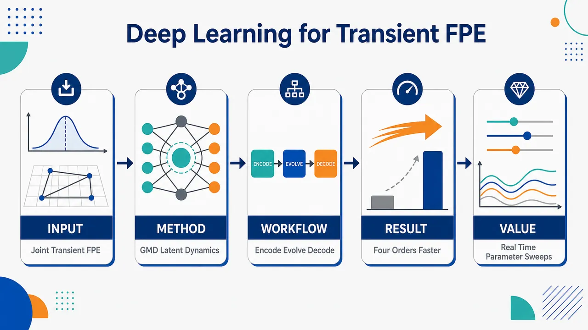
研究问题如何在一次训练后，联合求解瞬态 Fokker–Planck 方程在不同初始概率分布、系统参数和时间点下的概率密度演化，避免传统方法对每组参数—初值重复网格求解或慢速 Monte Carlo 模拟。创新方法提出 TPAPS 伪解析概率解框架：用高斯混合分布统一表示初始、瞬态和稳态 PDF；通过凸性保持编码器将多峰分布压缩为置换不变的潜向量；再用约束嵌入解码器恢复合法 GMD，使非负性、权重归一和标准差为正由结构保证。Aha 点是把“受约束概率密度演化”转化为“无约束潜空间向量演化”，并利用 FPE 的线性凸结构提升跨复杂分布泛化。工作流程输入初始 GMD 分布、系统参数 Θ 和目标时间 t；每个高斯成分经 EMB-RN 提取局部特征；按混合权重加权求和得到置换不变嵌入；REP-RN 生成低维无约束潜表示；单一演化网络在潜空间执行瞬态 time-leaping；解码器输出目标时刻 GMD 参数；最终生成状态空间中的概率密度曲面或多峰 PDF。关键结果框架可在状态 × 时间 × 参数 × 初始分布的组合域内并行生成瞬态 FPE 解，避免逐条件重新求解；实验声称在典型随机系统上保持高精度，并比 GPU 加速 Monte Carlo 推断快四个数量级；边缘归一化把积分复杂度从随维数指数增长降为线性增长。应用价值可用于实时参数扫描、不同初始不确定性对比、随机分岔分析和多维参数化随机系统的快速概率预测；将瞬态随机动力学分析从重复数值仿真转向一次训练后的类解析式概率推断，适合工程设计、控制、可靠性评估和复杂系统不确定性分析。第一部分：核心概览 (Overview)
TPAPS 将瞬态 Fokker–Planck 方程的概率密度解统一表示为高斯混合分布，再通过约束保持自编码器映射到低维无约束潜空间，并用单一演化网络联合处理任意初始分布、系统参数与时间点。其核心地位在于把原先需逐参数、逐初值重复求解的瞬态 FPE，转化为一次训练后的类解析式并行推断框架；实验声称相较 GPU 加速 Monte Carlo 可实现四个数量级推断加速，适用于参数扫描与随机分岔分析。
---
第二部分：结构化快速回顾
《A deep learning framework for jointly solving transient Fokker-Planck equations with arbitrary parameters and initial distributions》（None，）
背景
Fokker–Planck 方程用于描述随机动力系统状态概率密度随时间的演化，是连接微观随机性与宏观统计行为的核心工具。传统有限差分、有限元方法受维数灾难限制，Monte Carlo 虽不受网格维数限制但收敛慢；现有深度学习方法多缺乏跨初始分布、系统参数、时间点的并行瞬态求解能力。
方法
提出 TPAPS / transient pseudo-analytical probability solution。方法将初始、瞬态、稳态概率分布统一为 Gaussian mixture distributions (GMDs)；构造凸性保持编码器与约束嵌入解码器，把受约束 GMD 参数映射到低维无约束表示空间；再用单一神经网络学习潜空间中的 FPE 瞬态演化，并通过递归 time-leaping 支持长时间预测。
结果
实验声称在典型随机系统上保持高精度，并实现比 GPU-accelerated Monte Carlo simulations 快四个数量级的推断速度。该速度提升支持实时参数扫描、多个初始分布比较与系统性随机分岔研究。
讨论
框架的关键思想是将概率分布表示学习与Fokker–Planck 物理动力学学习解耦：自编码器先学习通用概率分布流形，演化网络再在潜空间学习纯动力学。这种模块化设计降低了直接在物理空间建模 PDF 的约束复杂度。
局限
给定内容只展示到 3.2.1 The encoder，缺少完整实验表格、误差指标、训练设置、网络超参数、消融结果与第 5 节局限讨论。已显式可见的局限包括：初始分布集合被设为最多 5-component GMDs，状态域被截断为有限盒子 𝒮，归一化在有限域内近似成立。
结论
TPAPS 旨在用一次训练获得覆盖 状态 × 时间 × 参数 × 初始分布 的瞬态 FPE 近似解，结构性保证非负性，近似保证归一化，并硬编码初始条件；其目标是把瞬态随机动力学分析从重复数值求解推进到可并行、可快速评估的类解析概率建模范式。
---
第三部分：逐章节冷凝解析 (Section-by-Section Condensing)
Abstract
Parameterized transient FPE solving is the central target
Fokker–Planck equation (FPE) 被定位为分析复杂参数化随机系统的核心方程，目标不是单个参数或单个初值下的单次求解，而是对不同初始分布、系统参数、时间点的联合瞬态求解。摘要明确指出：*"Efficiently solving the Fokker-Planck equation (FPE) is central to analyzing complex parameterized stochastic systems."* 当前方法的瓶颈在于跨条件并行能力不足：*"current numerical methods lack parallel computation capabilities across varying conditions, severely limiting comprehensive parameter exploration and transient analysis."*
Single training resolves arbitrary multimodal initials, parameters, and times
核心方法是 deep learning-based pseudo-analytical probability solution (PAPS)，其功能是在一次训练后同时生成不同条件下的瞬态解。摘要中的关键表述为：*"via a single training process, simultaneously resolves transient FPE solutions for arbitrary multi-modal initial distributions, system parameters, and time points."* 这里的 “arbitrary” 不是无限制数学任意性，而是在预设初始分布集合、参数域和时间域内的任意组合。
GMD unifies initial, transient, and stationary distributions
概率分布表示层面的创新是用 Gaussian mixture distributions (GMDs) 统一三类分布：初始分布、瞬态分布、稳态分布。摘要给出核心思想：*"The core idea is to unify initial, transient, and stationary distributions via Gaussian mixture distributions (GMDs)"*。GMD 的优势在于天然非负、权重可归一化、多峰表达能力强，适合表示从单峰到多峰、从宽分布到局部分布的 PDF。
Constraint-preserving autoencoder maps constrained GMDs to latent representations
GMD 参数本身受约束：权重为正且和为 1，标准差为正。框架通过自编码器把这些受约束参数映射到无约束低维潜空间：*"develop a constraint-preserving autoencoder that bijectively maps constrained GMD parameters to unconstrained, low-dimensional latent representations."* 这里的 constraint-preserving 表示模型结构内生保持 PDF 的非负性与概率结构，而非依赖大量惩罚项。
A single evolution network models panoramic transient dynamics
潜空间中的动态演化由单一网络表示：*"In this representation space, the panoramic transient dynamics across varying initial conditions and system parameters can be modeled by a single evolution network."* “panoramic transient dynamics” 强调覆盖多个初始条件、多个参数和多个时间点的全景式动力学，而非一条轨迹或一个参数截面。
Inference is four orders faster than GPU Monte Carlo
性能主张是相较 GPU-accelerated Monte Carlo simulations 快四个数量级：*"achieving inference speeds four orders of magnitude faster than GPU-accelerated Monte Carlo simulations."* 该速度提升使此前难以进行的任务变得可行：*"This efficiency leap enables previously intractable real-time parameter sweeps and systematic investigations of stochastic bifurcations."*
Representation learning is decoupled from physics-informed dynamics
框架层面的范式贡献是解耦表示学习和物理动力学学习：*"By decoupling representation learning from physics-informed transient dynamics, our work establishes a scalable paradigm for probabilistic modeling of multi-dimensional, parameterized stochastic systems."* 这种解耦使 GMD 自编码器可作为通用概率分布流形学习器，而演化网络只处理潜变量动力学。
---
1 Introduction
FPE links microscopic randomness and macroscopic statistical behavior
FPE 被定义为随机动力学的基础方程，用确定性 PDE 描述随机系统状态 PDF 的时间演化。关键表述为：*"deterministically describes the time evolution of probability density functions (PDFs) of the system states, offering a profound link between microscopic randomness and macroscopic, predictable statistical behavior."* 因此，快速准确求解瞬态和稳态 FPE 对多个领域重要，包括 mechanics、ecology、energy、biomedicine、neuroscience。
Transient responses depend jointly on time, parameters, and initial distributions
非线性随机系统的瞬态响应不仅依赖时间，还依赖多个系统参数和初始分布。原文明确指出：*"the transient responses of nonlinear stochastic systems depend on time, as well as on multiple system parameters and the initial distributions."* 若采用传统求解方式，必须对每个参数—初值组合重复求解 FPE：*"researchers must repeatedly solve the FPE for each distinct combination of parameters and initial states."* 这造成高计算成本：*"This process incurs prohibitively high computational costs."*
Analytical FPE solutions are rare and difficult
解析解只存在于少数特殊情形，且推导困难：*"analytical solutions for the FPE are confined to a few special cases and are highly nontrivial to derive."* 因此，核心问题转化为构造可跨条件并行的数值求解器：*"the development of an efficient parallel numerical solver for diverse conditions [is] central to advancing stochastic dynamical systems analysis and design."*
Traditional numerical methods face dimensionality and efficiency barriers
有限差分和有限元方法依赖空间网格，受维数灾难制约：*"finite difference and finite element methods rely on spatial grid discretization and struggle to overcome the curse of dimensionality."* 维数灾难被具体解释为：*"the number of grid points increases exponentially with the system dimension."* Monte Carlo 不受维数直接限制，但收敛慢：*"While Monte-Carlo simulations (MCS) are not limited by dimensionality, their slow convergence rate leads to poor computational efficiency."*
Existing DL FPE methods still lack parallel solving across initial conditions and parameters
深度学习已用于 FPE，例如 DL-FP 使用无网格全连接网络表示稳态解，并把方程、初始、边界条件放进单一损失函数：*"the DL-FP method uses mesh-free fully connected neural networks to parameterize stationary solutions, incorporating equation, initial, and boundary conditions into a single loss function."* 但引言强调，现有传统与深度学习方法均未展示跨多个初始条件和系统参数的并行能力：*"neither category has demonstrated the capability for parallel computation across multiple initial conditions and system parameters."*
The PAPS ideal is a closed-form-like probability solution
深度学习的优势在于训练阶段学习大规模映射关系，推断阶段快速并行预测：*"the core strength of DL lies in its ability to learn extensive mapping relationships during the training phase, which subsequently enables fast, parallel predictions for different tasks during inference."* 因此目标是构造 pseudo-analytical probability solution (PAPS)：*"Such a solution would function similarly to a closed-form solution, yielding the corresponding probability distribution immediately for any given set of initial conditions, control parameters, and evolution time."*
Two challenges define the technical agenda
实现 PAPS 需要解决两个关键问题：概率密度的灵活低维表示，以及不同参数和初值下的时间演化学习。原文明确列出：*"(i) designing an efficient and flexible representation for diverse PDFs, and (ii) learning the temporal evolution of these PDFs under varying parameters and initial conditions in a way that supports parallel inference."*
An ideal PDF representation must be general, compact, and constraint-preserving
表示必须能统一刻画从单峰到多峰、从宽分布到局部分布、从初始到稳态的各种 PDF：*"It should unify and flexibly characterize diverse PDFs from unimodal to multimodal, from broad to localized, and across the entire evolution from initial to stationary states using a low-dimensional parameterization."* 同时必须内生保持 PDF 约束：*"the representation must intrinsically preserve the mathematical constraints of the FPE solution, such as PDF normalization and non-negativity."* 若显式通过损失惩罚施加约束，会使优化复杂化：*"Explicit constraint enforcement in a parallel solver would overload the loss function with penalties, complicating optimization."*
Previous stationary PAPS motivates but cannot directly handle transients
已有 PAPS 使用 GMD 表示 PDF，并学习从系统参数到 GMD 参数的解码器，已实现多参数系统稳态解并行求解：*"The recently proposed PAPS method parameterizes PDFs using a GMD and learns a decoder that transforms system parameters to the corresponding GMD parameters."* 但瞬态扩展引入了初始分布和时间两个额外维度：*"extending this method to transient solving introduces additional dimensions, i.e., arbitrary initial distributions and time."* 因而解流形变得高维复杂：*"This makes the solution manifold extremely high-dimensional and complex."*
Latent ODE ideas are useful but insufficient for probability densities
自编码器和 latent ordinary differential equations (latent ODEs) 提供 encode-evolve-decode 范式：*"model the dynamics within such space, and finally use a decoder to reconstruct the solutions back to the physical space."* 但 FPE 的解必须始终是合法概率分布，而非任意实值函数：*"we must ensure that its solution always remains a valid probability distribution, not merely an arbitrary real-valued function or vectorial state."* 因此需要专为 PDF 设计的约束保持编码—解码框架。
TPAPS introduces three innovations
第一，概率空间表示与物理动力学解耦：*"We learn a universal manifold of PDFs using a GMD autoencoder with a simple convexity-preserving encoder and a constraint-embedding decoder, trained independently of the FPE dynamics."* 第二，单网络潜空间演化与硬编码初始条件：*"The initial condition is hard-encoded via an affine construction, eliminating its loss term."* 动力学从 FPE 残差学习，无需预计算轨迹或分布数据：*"Latent dynamics are learned from the FPE residual without pre-computed trajectory or distribution data."* 第三，跨参数、初始分布和时间点并行推断：*"After a single training session, the cost of evaluating the transient PDF for any combination of system parameters, initial distribution, and time point is only one forward pass per leap step."*
TPAPS is a systematic transient extension of PAPS
整体定位是对 PAPS 的系统性扩展，使其具备完整瞬态演化建模能力：*"This work constitutes a systematic extension of the PAPS framework, equipping it with full transient evolution modeling."*
---
2 Problem definition
The stochastic system is an Ito-type SDE
研究对象是 D_STA 维 Ito-type stochastic differential equations：
*"We consider a general (DSTA)-dimensional stochastic system described by the following Ito-type stochastic differential equations"*。
形式为
[
dotx(t)=A(x,t;Θ)+B(x,t;Θ)Ξ(t).
]
状态向量为
[
x(t)=[x₁₍ₜ₎,ḑots,x_DSTA(t)]^→pinRDSTA.
]
Initial states are sampled from a predefined initial distribution set
初始状态 (x(0)) 来自任意初始分布 (p_I(x))，该分布属于预定义集合 (K)。原文定义为：*"the state (x(0)) is drawn from any initial distribution (pI(x)) in a predefined initial distribution set (IDS) (K)."* IDS 的用途是覆盖多种瞬态随机动力学行为：*"thereby capturing a wide range of transient stochastic dynamical behaviors."*
Drift, diffusion, and white noise are explicitly parameterized
漂移项为
[
A(x,t;Θ)=[a₁,ḑots,a_DSTA]^→p,
]
扩散项为
[
B(x,t;Θ)=[bᵢⱼ]ᵢ,ⱼ₌₁DSTA,M,
]
由 (DPAR) 个参数
[
Θ=[θ₁,ḑots,θ_DPAR]^→p
]
控制。噪声向量为 (M) 个相互独立标准白高斯噪声：*"a vector of (M) mutually independent standard white Gaussian noises (SWGNs)"*，自相关满足
[
E(ξᵢ₍ₜ₎ξᵢ₍ₛ₎₎₌δ(t-s).
]
Transient PDF solves the FPE because the SDE is Markovian
由于 SDE 是 Markov 过程，其瞬态分布就是 FPE 的解：*"As the stochastic system in Eq. (1) is a Markov process, its transient distribution (p(x,t;Θ,pI)) at time (t) corresponds to the transient solution of the FPE."* FPE 初值问题为
[
fracpartialpartial tp=LFPp,qquad
p(x,0;Θ,p_I)=p_I(x).
]
The FP operator includes drift divergence and diffusion Hessian terms
FP 算子定义为
[
LFPp
=
-sumᵢ₌₁DSTAfracpartialpartial xᵢ[aᵢ₍ₓ;Θ)p]
+frac12
sumᵢ₌₁DSTAsumⱼ₌₁DSTA
fracpartial²partial xᵢpartial xⱼ[dᵢⱼp].
]
扩散矩阵由
[
D=BB^→p
]
给出，(dᵢⱼ) 是其第 (ij) 个元素。
Natural boundary condition justifies finite state-domain truncation
自然边界条件为
[
łim|ₓ|ᵢ̊gₕₜₐᵣᵣₒw₊ᵢₙfₜyp(x,t;Θ,p_I)=0.
]
原文表述为：*"We assume that the FPE satisfies the natural boundary condition."* 为数值研究，状态域截断为足够大的 (DSTA)-维盒子 (S)，其依据是：*"such that the probabilities of transient PDFs are always negligible outside (S) due to the natural boundary condition."*
Time, parameter, and state domains are bounded boxes
时间域限定为
[
T=[0,Tₘₐₓ],
]
参数域为
[
P=Θ|θᵢᵢₙ[θᵢmⁱⁿ,θᵢmax],i=1,ḑots,DPAR,
]
状态域为
[
S=x|xᵢᵢₙ[xᵢmⁱⁿ,xᵢmax],i=1,ḑots,DSTA.
]
原文说明：*"the time domain of Eqs. (1) and (2) is confined in the interval (T=[0,Tₘₐₓ])."*
TPAPS is defined on the quaternary Cartesian product
目标函数是
[
q(x,t;Θ,p_I):S×T×P×Ki̊ghtarrowR.
]
它被命名为 TPAPS，用于联合近似不可得的解析瞬态解。原文目标为：*"jointly model the unavailable analytical transient solutions (p(x,t;Θ,p_I)) with all states (x), times (t), control parameters (Θ), and initial distributions (p_I) in the quaternary Cartesian product (S×T×P×K)."*
One training session replaces one-by-one solving
学习目标不是逐个条件求解，而是在一次训练中覆盖整个组合域：*"during one training session, the TPAPS (q) can jointly approximate (p) in (S×T×P×K)."* 直接后果是：*"it is unnecessary to solve the systems with different parameters or initial distributions one by one."* 训练完成后可瞬时生成瞬态解：*"the TPAPS can generate transient solutions instantaneously."*
TPAPS must satisfy non-negativity, normalization, initial condition, and FPE residual
作为 PDF 近似，TPAPS 需满足非负性：
[
q(x,t;Θ,p_I)≥0.
]
原文写作：*"the non-negativity condition of the PDF."*
归一化为
[
int_Sq(x,t;Θ,p_I)dxapprox1,
]
原文称为：*"the normalization condition of the PDF restricted to the state domain (S)."*
初始条件为
[
q(x,0;Θ,p_I)=p_I(x).
]
最重要的是满足 FPE：*"Above all, the TPAPS satisfies the FPE in Eq. (2)."*
Ergodic systems require convergence to a unique stationary solution
若系统遍历，从任意初始分布出发，真实瞬态解收敛到唯一稳态解：*"if the system (2) is ergodic, from any initial distributions (p_I), the transient solution ... always converges to a unique stationary solution."* 稳态解满足
[
LFPp_S(x;Θ)=0.
]
相应地，TPAPS 的大时间行为也应收敛到唯一 PDF：*"we expect the asymptotic behaviors of the TPAPS align with the true stationary solutions."*
---
3 The TPAPS
The solution is intricate because of constraints and nonlinear dependence
瞬态解在 (S×T×P×K) 上高度复杂，原因包括 PDF 约束、多参数非线性和时间非线性。原文概括为：*"The transient solution (p) ... is very intricate, not only because it has several constraints, but also because it is highly nonlinear on the system parameters and the time."*
The framework is modularized into distribution representation, autoencoding, latent dynamics, time-leaping, architecture, and loss
第 3 节按模块推进：
- 3.1：用 GMD 统一初始、瞬态、稳态多维多峰分布；原文为：*"the initial, transient, and stationary distributions, as multi-dimensional multi-modal distributions, are unified and parameterized by the GMD."*
- 3.2：构建 GMD 自编码器，把 GMD 映射到结构保持低维嵌入空间和无约束表示空间；原文为：*"a GMD autoencoder is further developed, which enables transforming GMDs into a structure-preserving low-dimensional embedding space and an unconstrained representation space."*
- 3.3：用单一深度网络在表示空间建模瞬态动力学，并结构性满足初始条件；原文为：*"model transient dynamics in the representation space using a single deep neural network ... which structurally satisfies the initial condition."*
- 3.4：长时间动力学分解为递归短期预测；原文为：*"the long-term transient dynamics is split into recursive short-term forecasts."*
- 3.5：网络结构；3.6：损失函数。
给定内容未包含 3.3–3.6 的具体正文。
---
3.1 The GMD
Direct neural modeling of PDF is inefficient and constraint-heavy
直接用标准神经网络建模
[
q(ḑot,t;Θ,p_I):Si̊ghtarrowR
]
效率低，因为必须对所有时间、参数、初始分布同时满足非负、归一化、初值、FPE 约束。原文判断为：*"Directly modeling the TPAPS in Eq. (7) with a standard neural network is inefficient."* 约束优化会变得难以处理：*"Enforcing all these constraints within the optimization process would lead to an intractable learning problem."*
GMD encodes PDF constraints structurally
改用 Gaussian mixture distribution 表示瞬态分布，核心优势是结构性嵌入约束：*"This parameterized family allows the constraints to be inherently encoded into the model structure, thereby enabling efficient and stable training."*
A GMD is a convex combination of Gaussian components
含 (n) 个成分的 GMD 定义为
[
fGMD(x;Φ)=sumⱼ₌₁ⁿwⱼN(x;μⱼ,Σⱼ₎.
]
原文表述为：*"A GMD (fGMD(x;Φ)) with (n) components is a convex combination of (n) (DSTA)-D Gaussian distributions."*
Weights lie in a simplex-like convex set
权重集合为
[
C(n)=[w₁,ḑots,wₙ]^→p|All wⱼ>0,sumⱼ₌₁ⁿwⱼ₌₁.
]
这是 PDF 非负和归一的重要结构来源。原文写作：*"the weights are in the convex set (C(n))."*
Gaussian components use diagonal covariance matrices
第 (j) 个高斯成分的均值为
[
μⱼ₌[μⱼ₁,ḑots,μⱼDSTA]^→p,
]
协方差为对角矩阵
[
Σⱼ₌diagσⱼ₁²,ḑots,σⱼDSTA².
]
原文明确：*"where (bmμⱼ) is the mean vector and (Σⱼ₌diagσⱼ₁²,ḑots,σⱼDSTA²) is the diagonal covariance matrix."*
The GMD parameter dimension is exactly controlled
GMD 参数数目为
[
n(1+2DSTA),
]
包括 (n) 个权重、(nDSTA) 个均值和 (nDSTA) 个正标准差。原文写作：*"The GMD has (n(1+2DSTA)) parameters."* 可行域为
[
Q(n)=C(n)×RⁿDSTA×R₊ⁿDSTA.
]
Initial distributions are represented by 5-component GMDs
初始分布集合通过 initial Gaussian mixture set (IGMS) 定义。原文给出关键设置：*"In this work, we set (NINIT=5)."* 因此初始分布为最多 5 个成分的 GMD：*"The IGMS is defined ... consisting of 5-component GMDs with restricted means and SDs."*
Five-component IGMS can include effectively one- or two-component test distributions
虽然 (NINIT=5)，但一些权重可接近 0，因此可表示实际主导成分较少的分布。原文说明：*"This configuration allows the IGMS to encompass test distributions that effectively have only one or two dominant Gaussian components, since some sampled weights may be close to zero."*
GMD unification reduces TPAPS learning to a parameter transform
统一后，学习 (q) 转化为学习从
[
(t,Θ,Φ_I)
]
到瞬态 GMD 参数
[
Φₜ₍Θ,Φ_I)
]
的映射。原文写作：*"learning the TPAPS in Eq. (7) is then reduced to find a transform (Φₜ₍Θ,Φ_I)) from the time (t), the system parameters (Θ) and the initial GMD parameters (Φ_I) to the GMD parameters of the transient distribution."*
GMD automatically removes the non-negativity loss
由于 GMD 是非负高斯 PDF 的正权重凸组合，非负性自动成立。原文表述为：*"The non-negativity condition in Eq. (8) is eliminated in the learning process as the GMD automatically satisfies it."*
GMD marginals are analytically available
GMD 的边缘分布仍是 GMD，可通过删除无关维度直接得到，无需数值积分：*"The marginal distribution of a GMD is still a GMD, which can be conveniently obtained by directly omitting the irrelevant dimensions from each component, requiring no numerical integration."* 这对多维 PDF 的边缘检查和归一化损失构造非常关键。
Normalization is approximated by one-dimensional marginal conditions
原本 (DSTA) 维归一化积分代价高，框架用各维 1D 边缘归一化近似：
[
intₓₖₘⁱⁿxₖmaxsumⱼ₌₁NGAU
wⱼN(xₖ;μⱼₖ,σⱼₖ²⁾dxₖapprox1.
]
原文称：*"can be approximated by (DSTA) separate normalization conditions on the 1-D marginal distributions."*
Normalization grid complexity drops from exponential to linear in dimension
若每维用 (NNORM) 个积分点，原始多维积分需要
[
O(NNORMDSTA)
]
点，边缘归一化只需
[
O(NNORMḑot DSTA).
]
原文强调：*"this reduces the number of required integral points from (O(NNORMDSTA)) to (O(NNORMḑot DSTA)), a crucial simplification."*
---
3.2 The GMD autoencoder
GMD parameters remain constrained even after GMD representation
虽然 GMD 保证 PDF 结构，但其参数空间仍含约束，包括权重凸组合、标准差为正。原文指出：*"The GMD parameter domain (Q(n)) ... still has constraints, including the conditions that weights must form a convex combination and the SDs must be positive."* 这些约束会妨碍直接建模瞬态动态：*"These constraints complicate the modeling of the transient dynamics."*
The autoencoder maps constrained GMD parameters to unconstrained feature vectors
GMD 自编码器的作用是双向转换：
[
H=f_E(Φ),qquad widehatΦ=f_D(H).
]
原文目标为：*"transform the constrained GMD parameters to an unconstrained feature vector and vice versa."* 因而瞬态动力学可在无约束表示空间中建模：*"the transient dynamics can be easily modeled in the unconstrained representation space."*
The encoder supports arbitrary component numbers
编码器 (f_E) 可将任意成分数的 GMD 参数映射为表示向量：*"The encoder (f_E(ḑot)) transforms the GMD parameters (Φ) with an arbitrary number of components to a feature vector (H) in the representation space."* 这与固定 (NGAU) 解码输出形成配合：解码器恢复 (NGAU) 成分的 GMD 参数。
Parameter equality is not required; distributional equivalence is required
重构参数 (widehatΦ) 不必与 (Φ) 数值相同，只需对应几乎相同的 PDF：*"such that (widehatΦ) is functionally equivalent to (Φ), i.e., (fGMD(x;widehatΦ)approx fGMD(x;Φ)) for all (x)."* 这是因为 GMD 参数有不可辨识性，例如成分置换不改变分布：*"permuting the Gaussian components of a GMD leaves the distribution unchanged."*
---
3.2.1 The encoder
The encoder uses embedding and refined representation in two steps
给定任意 (n) 成分 GMD，编码器先用 EMB-RN 编码每个高斯成分，再按权重加权求和得到嵌入 (h)，最后用 REP-RN 得到最终表示 (H)。公式为
[
h=fₑₘbₑd(Φ)=sumᵢ₌₁ⁿwᵢ fEMB₋RN(μᵢ,Σᵢ₎ᵢₙRDEMB,
]
[
H=fREP₋RN(h)inRDREP.
]
原文称为：*"the following two-step embedding (EMB) and refined representation (REP)."*
EMB-RN maps each Gaussian component to a local feature
EMB-RN 将第 (i) 个高斯成分的均值和标准差映射到 (DEMB)-维局部特征：*"The embedding ResNet (EMB-RN) ... first transforms the (DSTA)-D mean (μᵢ) and the (DSTA) SDs ... into a (DEMB)-D feature vector (hᵢ)."*
Weighted aggregation represents the full GMD
所有局部特征按 GMD 权重聚合，形成整个 GMD 的特征：*"These (n) local features ... are then aggregated into an integrated (DEMB)-D feature (h) via a weighted combination using the component weights."* 这一步把混合分布的概率权重直接编码进表示。
REP-RN adapts the embedding for downstream transient dynamics
REP-RN 进一步细化 (h)，输出 (DREP)-维表示 (H)。原文解释为：*"This second refinery stage is designed to fine-tune the embedding, ensuring the encoder’s output is optimally adapted for the subsequent modeling of transient dynamics."*
Embedding and representation dimensions are fixed at 50 and 100
给定实现中
[
DEMB=50,qquad DREP=100.
]
原文写作：*"In this work, we fix (DEMB=50) and (DREP=100)."* 表示空间比嵌入空间更大：*"As the representation space will be used to model the transient dynamics, it is more capacious than the embedding space."*
Permutation invariance removes redundant GMD encodings
GMD 成分顺序不影响分布，因此编码也必须不受成分置换影响。原文目标为：*"we expect that they are encoded to a unique feature."* 加权求和天然满足置换不变性：*"This property is satisfied by Eq. (22) since the summation is invariant to permutation."* 数学上，对于任意置换 (τ)，
[
fₑₘbₑd(Φ_τ)=fₑₘbₑd(Φ).
]
Convexity-preserving embedding improves generalization
FPE 对概率密度是线性的，因此同一方程多个瞬态解的凸组合仍是合法瞬态解。原文写作：*"any convex combination of various transient solutions is itself a valid transient solution of the same equation."* 编码器希望保持这种凸结构，即 GMD 的凸组合与嵌入操作可交换：*"A natural idea is to let the embedding (EMB) operator and the convex combination (CC) of GMDs commute."*
The embedding of a mixture equals the mixture of embeddings
若
[
sumᵢ₌₁mvᵢ fGMD(x;Φᵢ₎₌fGMD(x;øverlineΦ),
]
则期望
[
fₑₘbₑd(øverlineΦ)=sumᵢ₌₁mvᵢ fₑₘbₑd(Φᵢ₎.
]
原文公式后解释：*"The property in Eq. (24) not only brings computational efficiency but also grants the autoencoder strong generalization ability."*
Training on few-component GMDs can generalize to multi-component GMDs
由于复杂 GMD 可分解为简单 GMD 的凸组合，复杂分布的嵌入可由简单分布嵌入合成。原文说明：*"Since any complex GMD can be decomposed into a combination of simpler, few-component GMDs, its embedding can be synthesized from its constituent parts."* 因而模型可从较易训练的少成分 GMD 泛化到多成分 GMD：*"This enables our model trained on tractable, few-component GMDs to be directly applied to more challenging, multi-component ones."*
Equation (22) and convexity preservation are essentially equivalent
原文给出理论关系：*"Essentially, Eq. (22) and the more general Eq. (24) imply each other, establishing their equivalence."* 若把每个 GMD 限制为单高斯，凸性保持公式退化为加权嵌入公式；反过来，加权嵌入公式可推出任意 GMD 凸组合的嵌入可交换性。
---
第四部分：深度理解与语言支持 (Understanding & Nuance)
1. 术语解析
#### Pseudo-analytical probability solution (PAPS)
字面是“伪解析概率解”。语境中并非真正闭式解析解，而是训练完成后像解析公式一样快速输入 ((t,Θ,p_I)) 并输出概率密度。关键语义来自：*"function similarly to a closed-form solution."* “Pseudo-analytical” 强调推断阶段近似解析式、无需重新数值积分或重新训练。
#### Constraint-preserving autoencoder
指自编码器的结构设计能保持概率分布的合法性，例如非负性、权重归一、标准差为正。它不同于普通 autoencoder：普通 AE 只重构数据，可能输出非法 PDF；这里的解码器输出必须落在 GMD 可行域 (Q(NGAU))。
#### Convexity-preserving embedding
指嵌入映射与概率分布的凸组合相容：先混合分布再嵌入，等价于先嵌入各分布再按同权重混合嵌入。这一性质利用 FPE 的线性结构，有助于从少量训练分布泛化到复杂多峰分布。
#### Initial distribution set (IDS) / initial Gaussian mixture set (IGMS)
IDS 是初始概率分布的集合 (K)；IGMS 是这些分布在 GMD 参数空间中的对应集合 (widehatK)。两者关系为
[
K=fGMD(ḑot;Φ_I)|Φ_IinwidehatK.
]
IDS 是函数层面的集合，IGMS 是参数层面的集合。
#### Natural boundary condition
表示概率密度在无穷远处趋于 0。它不是人工边界条件，而是概率密度在远离主要状态区域时自然衰减的假设。该条件允许把无限状态空间截断为足够大的有限盒子 (S)，并认为盒子外概率质量可忽略。
---
2. 疑难查证
#### 为什么 GMD 能“自动”满足非负性，但只能“近似”满足归一化？
GMD 是正权重高斯 PDF 的凸组合。每个高斯 PDF 非负，权重 (wⱼ>0)，因此总和必然非负。若积分区域是整个 (RDSTA)，且 (sumⱼ wⱼ₌₁)，GMD 精确归一。
但数值求解在有限状态域 (S) 上进行，而高斯分布有无限支撑，所以
[
int_SfGMD(x;Φ)dx
]
通常小于 1，只要 (S) 足够大才近似为 1。因此非负性是结构性精确保证，有限域归一化是截断意义下近似保证。
#### 为什么成分置换会导致 GMD 参数不可辨识？
GMD 的表达
[
w₁N₁₊w₂N₂
]
与
[
w₂N₂₊w₁N₁
]
代表完全相同的概率密度，但参数向量排列不同。若普通神经网络直接学习参数向量，会把同一个分布视作多个不同样本，增加冗余和训练困难。加权求和型编码器天然消除这种排列差异。
#### 为什么潜空间演化比直接演化 GMD 参数更容易？
GMD 参数空间有约束：权重必须在 simplex 内，标准差必须为正，成分顺序还存在不可辨识性。直接在该空间学习时间演化容易输出非法参数或出现成分交换不连续。自编码器把分布映射到无约束 (RDREP) 表示空间，演化网络只需学习普通向量动力学，最后由约束嵌入解码器恢复合法 GMD。
#### 为什么凸性保持对 FPE 特别重要？
FPE 对概率密度 (p) 是线性 PDE。如果 (p₁,p₂) 都满足同一个 FPE，那么
[
α p₁₊₍₁₋α)p₂
]
也满足同一个 FPE。概率分布空间本身也具有凸结构：两个 PDF 的凸组合仍是 PDF。编码器若保留这种结构，就能把物理方程的线性叠加性质传递到潜空间，从而提升泛化能力。
---
第五部分：创新评估与关联 (Synthesis & Novelty)
1. 创新性判断
#### 从单条件求解转向跨初值、参数、时间的联合瞬态求解
近年深度学习 PDE/FPE 方法常见做法是对某一固定参数、固定初值或固定任务训练一个模型，或者主要求稳态分布。TPAPS 的新颖点在于直接学习
[
S×T×P×K
]
上的联合映射，使一次训练后可对任意参数、任意初始 GMD、任意时间点并行推断。
#### 把 PDF 表示学习与 FPE 动力学学习解耦
相比直接用 PINN 或神经网络表示 (p(x,t))，TPAPS 先独立学习概率分布流形，再在潜空间学习动力学。这解决了传统 PINN 损失函数同时承担 PDE 残差、初值、边界、非负、归一化等多重任务导致的优化负担。
#### 用 GMD 自编码器处理概率分布的合法性约束
普通 latent ODE 或 autoencoder 适用于实值状态向量，但不保证输出是合法 PDF。TPAPS 通过 GMD 与约束嵌入解码器保证非负性、权重结构和标准差正性，针对 FPE 的概率解特征进行专门设计。
#### 凸性保持编码器提供跨分布复杂度泛化机制
训练集即便只覆盖较少成分 GMD，凸性保持嵌入仍可组合出多成分 GMD 的表示。这是相对普通 neural operator、PINN、latent ODE 的重要结构创新，因为它利用了概率分布和 FPE 的线性凸结构，而非单纯依赖数据覆盖。
#### 递归 time-leaping 支持任意长时间范围
长时间瞬态动力学高度非线性。TPAPS 使用短时间演化网络递归应用，降低单步网络学习难度，并允许通过重复 leap 扩展时间范围。该设计旨在让同一网络同时覆盖短期与长期演化，并对新参数和新初始分布泛化。
#### 解决前人未充分解决的问题
主要解决的问题包括：
- 多初始分布并行瞬态 FPE 求解：不再为每个 (p_I) 单独求解。
- 多参数并行瞬态分析：不再为每个 (Θ) 重复运行 FPE solver 或 MCS。
- 概率合法性结构保证：避免普通神经网络输出负概率或非归一 PDF。
- 稳态与瞬态统一建模：初始、瞬态、稳态都用 GMD 流形表达。
- 实时参数扫描与随机分岔分析：依靠四数量级推断加速，使大规模参数探索成为可操作任务。
-
19
📄 摘要：综述用于太阳高能粒子事件预测的机器学习模型。SEP 事件对航空、航天器电子学和地球磁层外载人任务构成辐射风险，其物理过程跨越太阳表面、日冕到日球层；文章梳理数据驱动预测与粒子加速、传播机制理解之间的联系。
💡 亮点：该综述系统整理 SEP 预测中的机器学习方法，面向辐射预警和太阳-日球层物理。其价值在于把事件预报与粒子加速、输运机制建模联系起来。
📖 展开分析 + 配图
研究问题太阳高能粒子（SEP）事件会威胁航天器、航空、通信导航、电力系统及月球/火星载人任务，但现有机器学习预报研究模型类型、输入数据、标签定义、输出目标和验证方式高度分散，导致“哪个模型更可靠、能否业务化运行”难以公平判断。创新方法不是提出单个新模型，而是建立 SEP 机器学习预报的三轴系统图谱：以 Architecture / Input / Output 为主框架，对 24 个英文文献模型、5 个专门数据集、9 类航天器数据源进行统一标注；特别用“可训练参数数量”量化模型复杂度，并把模型容量、输入信息量、输出任务和运行模式放到同一比较坐标系中。工作流程收集 SEP 机器学习文献与开发者元数据 → 整理 24 个模型及其数据来源 → 按架构类型、参数规模、输入维度、物理观测量、历史跨度、类别不平衡和样本规模编码 → 按分类/概率/回归、触发式/连续式、预报窗口定义输出 → 汇总成可比较的模型地图，诊断数据、模型、任务和业务化缺口。关键结果现有 SEP ML 模型呈现强异质性：11/24 使用森林或决策树，11/24 使用神经网络，7/24 使用集成架构，5/24 使用回归或 SVM 等低复杂度方法；多数模型仍较小，12/24 位于 1–1,000 参数，8/24 位于 1,000–100,000 参数，仅 3 个超过 10⁵ 参数。21/24 模型依赖 GOES 数据，输出目标从 SEP 发生、all-clear、安全窗口、耀斑到 SEP 概率，到粒子强度剖面不等，直接比较非常困难。应用价值为下一代可靠、可解释、可运行的 SEP 预报系统提供标准化蓝图：推动统一基准数据集、共享验证资源、清晰输出任务、近实时输入评估和物理知识融合；帮助空间天气预报中心、航天任务规划和深空载人探索识别哪些模型具备业务化潜力，哪些环节仍需补强。第一部分：核心概览 (Overview)
围绕 SEP 机器学习预报建立首个面向模型、数据与输出任务的系统化图谱：汇总 24 个英文文献模型、5 个专门数据集、9 类航天器数据来源，以 Architecture / Input / Output 三轴分类比较模型复杂度、输入形态、预报目标与业务化潜力。学术地位在于从“模型罗列”推进到“可比性、可解释性、业务化成熟度”的领域级诊断，为下一代可靠、可解释、可运行的 SEP 预报系统提供规范化框架。
---
第二部分：结构化快速回顾
《Review of Machine Learning Models for Solar Energetic Particle Prediction》（None，）
背景
太阳高能粒子事件（SEP events） 对航空、航天器电子设备、通信导航、电力基础设施，以及月球和火星载人任务构成严重辐射风险。传统 物理模型 计算成本高，经验/统计模型 依赖历史相关性；机器学习（ML） 逐渐成为识别非线性太阳—日球层模式的新工具。
方法
围绕 24 个 SEP 机器学习模型 建立统一分类体系，按 Architecture、Input、Output 三类描述模型。模型复杂度以 可训练参数数量 衡量；输入按 维度、物理类型、时间跨度、类别不平衡、样本规模、覆盖时长 描述；输出按 分类、概率、回归、触发式或连续式、预报窗口 描述。
结果
现有 SEP ML 模型高度异质：11/24 使用森林或决策树，11/24 使用神经网络，7/24 使用集成架构，5/24 使用较低复杂度回归或 SVM。多数模型仍处于低复杂度阶段，12/24 位于 1–1,000 参数 区间；8/24 位于 1,000–100,000 参数 区间；仅 3 个模型 超过 10⁵ 参数。
讨论
不同研究的输入、目标变量、SEP 定义、预处理流程和验证指标差异很大，导致模型之间难以公平比较。部分模型预测 SEP onset time，部分给出 all-clear prediction，部分估计 flare-to-SEP probability，还有模型输出 内日球层粒子强度剖面 或 物理模拟替代模型。
局限
领域仍以 proof-of-concept 为主；SEP 事件稀少，尤其高能 SEP 更少，造成严重 class imbalance。数据源虽丰富，但事件定义、时间覆盖、标签和预处理流程不一致。现有综述覆盖 2026 年前英文文献，快速发展的新模型可能未完全纳入。
结论
SEP ML 预报进入快速形成期，但距离完全业务化仍需统一基准数据、标准化输出目标、共享验证资源、融合领域知识、提高物理可解释性，并在近实时数据条件下评估实际运行可行性。
---
第三部分：逐章节冷凝解析 (Section-by-Section Condensing)
Abstract
SEP prediction is both a scientific and operational priority
SEP events 同时具有基础科学价值和空间安全意义：其物理链条从太阳表面、日冕延伸到日球层，涉及粒子加速与输运机制；其工程风险覆盖航空、航天器电子设备和地球磁层外载人任务。摘要直接给出双重动机：*"SEP events have attracted increasing attention due to their significant radiation hazards for aviation, spacecraft electronics, and human missions beyond Earth’s magnetosphere."* 同时，SEP 也是研究宇宙等离子体中粒子加速和输运的自然实验场，因为其产生过程 *"arise from a set of physical processes extending from the solar surface and corona through the heliosphere"*。
Machine learning is positioned as a new layer beyond physics-based and empirical SEP models
SEP 预报传统上依赖 physics-based simulations 和 empirical methods，但新兴 ML 方法能够从多源太阳和日球层数据中学习复杂模式。摘要明确区分三类路径：*"Traditionally, researchers have modeled SEPs using physics-based simulations and empirical methods. More recently, machine learning (ML) has emerged as a new tool for understanding and predicting SEP events."* 贡献重点不是提出单一模型，而是对已有 ML 预报体系进行横向审查。
Review scope centers on models, datasets, architectures, inputs, outputs, and future practice
综述目标包括：识别当前可用 ML models，整理训练数据集，比较 architectures、inputs、outputs，并提出未来研究建议。摘要中的范围界定非常清楚：*"review the currently available ML models for SEP prediction, identify the datasets used for training, compare their architectures, inputs, and outputs, and, based on these insights, outline good practices and recommendations for future research."*
---
I Introduction
The heliosphere is framed as an interconnected complex system
日球层（heliosphere） 被定义为太阳影响主导的区域，并被视为由多个相互连接子系统组成的复杂系统。开篇给出系统论框架：*"The heliosphere, the region dominated by the Sun’s influence, can be seen as a complex system of interconnected subsystems."* 这一视角为 SEP 预报的多源输入需求奠定基础，因为 SEP 并非孤立由单一太阳爆发决定，而是由太阳磁活动、日冕结构、行星际磁场和粒子输运共同塑造。
Space weather hazards are driven by flares, CMEs, and SEP events
空间天气扰动主要由 solar flares、coronal mass ejections (CMEs)、solar energetic particle events 等高能太阳事件驱动。关键表述为：*"Space weather disturbances, particularly their more hazardous aspects, are driven by highly energetic solar events such as flares, coronal mass ejections (CMEs), and solar energetic particle (SEP) events."* 这些过程与空间和地面技术系统中断直接相关，因此 SEP 预报不是纯学术问题，而是风险缓解问题。
SEP particles include electrons, protons, and heavier ions across keV–GeV energies
SEP 事件涉及高能 electrons、protons、heavier ions 快速加速并释放到日球层，能量范围从 keV 到 GeV。原始定义包含粒子种类和能谱尺度：*"SEP events are characterized by the rapid acceleration and release of high-energy electrons ... protons and heavier ions ... into the heliosphere."* 以及 *"These particles, accelerated by transient solar phenomena such as solar flares and CMEs, exhibit energies spanning from keV to GeV."* 这解释了为何不同模型可能针对不同能道、通量阈值和预报目标。
SEP spatial-temporal distributions depend on acceleration and transport physics
SEP 的空间和时间分布由源区物理、冲击加速和行星际输运共同控制。关键机制包括 diffusive shock acceleration 和磁场线约束传播。描述为：*"Once energized, SEPs propagate along interplanetary magnetic field lines, creating complex spatial and temporal distributions influenced by the physical characteristics of their sources, e.g., diffusive shock acceleration ... and by their transport through the interplanetary medium."* 这意味着单靠太阳表面指标可能不足以预测地球处粒子强度和到达时间。
Operational risks include astronauts, aviation, satellites, communications, navigation, and power systems
SEP 是重大辐射风险源，尤其威胁 extravehicular activities、高纬航班人员、卫星电子设备和通信导航基础设施。风险描述具体而广泛：*"SEPs are central to space weather concerns as they represent a major radiation hazard for astronauts, particularly during extravehicular activities, and for passengers and crew on high-latitude flights."* 技术影响包括：*"damage satellite electronics, disrupt communication systems, and impair navigation and power infrastructure on Earth."*
Moon and Mars missions amplify SEP forecasting requirements
月球和火星缺乏强行星磁场屏蔽或厚大气层，因此 SEP 对深空载人任务的风险更高。任务背景被明确连接到 NASA 和其他航天机构的长期计划：*"For interplanetary missions, SEP events present critical risks, especially for astronauts on the Moon or Mars, where the lack of a planetary magnetic field and thin or non-existent atmospheres offer limited shielding from solar radiation."* 因而，准确预报已成为载人深空探索安全条件之一：*"accurate forecasting of SEP events has become imperative for ensuring mission success and the safety of human explorers."*
High-confidence SEP forecasting remains unresolved despite decades of work
尽管已有数十年研究，SEP 高置信度预报仍未解决。核心困难来自快速起始、事件变异性和复杂物理链条。原文直接指出：*"Despite decades of research, forecasting SEP events with high confidence remains an open challenge."* 传统模型各有短板：物理模型可模拟加速和输运但计算昂贵，经验统计模型快但依赖历史相关性：*"physics-based models —which simulate particle acceleration and transport processes, but often require substantial computational resources— to empirical and statistical models that provide faster predictions, but rely heavily on historical correlations."*
Machine learning is motivated by nonlinear pattern discovery across heterogeneous observations
ML 被定位为可在多源太阳和日球层数据中发现非线性结构的工具。关键句为：*"machine learning (ML) has emerged as a powerful alternative tool, capable of uncovering nonlinear patterns across diverse solar and heliospheric datasets."* 随着空间观测数据量增加，ML 的潜在优势体现在预报精度和速度：*"ML methods hold promise for improving both the accuracy and the speed of SEP forecasts, particularly as the volume of space-based observations continues to grow."*
SEP ML faces rarity, class imbalance, heterogeneity, and sparse-data challenges
SEP 事件稀少，尤其高能 SEP 更稀少；常用事件定义为 ≥10 MeV particles surpassing a 10 pfu limit。关键定义为：*"typically an SEP event is defined as ≥ 10 MeV particles surpassing a 10 pfu limit."* 类别不平衡随粒子能量增加而加剧：*"the severe class imbalance between SEP and non-SEP cases (which becomes more pronounced as the particle’s energy increase)."* 数据层面还需融合 proton fluxes、solar images、flare catalogs、active region properties 等异质且常稀疏来源：*"heterogeneous and often sparse data sources such as proton fluxes, solar images, flare catalogs, and active region (AR) properties."*
Proof-of-concept diversity prevents meaningful model comparison
多数 SEP ML 研究仍是 proof-of-concept，采用不同验证指标、输入数据、目标定义和模型设置，导致横向比较困难。原文诊断为：*"because most ML‑based SEP prediction efforts remain proof‑of‑concept, researchers have adopted widely varying validation metrics, input data choices, target definitions, and modeling setups, which makes meaningful comparison between studies difficult."* 因此，领域需要协调化设计、数据增强、领域知识融合和可解释性约束。
The review scope includes 24 models and emphasizes ML-specific synthesis beyond previous cataloging
研究对象为 24 个 ML SEP 预报方法，按模型架构、输入数据和输出预报分类。范围陈述为：*"Twenty four approaches are categorized based on their model architectures, input data, and output predictions."* 相比已有 SEP 预报方法目录，重点转向 ML 应用：*"Moving beyond cataloging existing SEP forecasting approaches ... the current review is focused on ML applications and synthesizes common trends, limitations, and emerging directions."* 最终目标是建立 SEP ML 研究图谱：*"provides a cartography of the current state of SEP‑prediction research using ML."*
---
II Overview and Categorization of ML Models
Twenty-four SEP ML models are ordered by trainable-parameter complexity
模型清单包含 24 个 SEP ML 模型，按 complexity = trainable parameters 从低到高排序。表 1 说明：*"Models are summarized in this table —and in the manuscript as a whole— in order of complexity (number of trainable parameters), beginning from the least complex models."* 复杂度跨度极大，从 XGBoost：2 参数 到 EPREM-S：285,881,344 参数。中间代表包括 SMARP-SHARP：Linear SVM，7 参数，SPRINTS：MLP，5,401 参数，BiLSTM-SEP：333,699 参数，MEMPSEP：CNN，6,092,617 参数，PSPSP：13,814,081 参数。
Model architectures range from classical ML to deep neural surrogates
表 1 中模型类型覆盖 Gradient Boosting、Time Series Classifier、Linear SVM、Random Forest、Logistic Regression、Regression Tree Ensemble、Decision Tree、Random Ensemble of NNs、Neural Network、Custom Architecture NN、MLP、Transformer、BiLSTM NN、Convolutional NN、Feed-Forward NN。这种跨度显示 SEP ML 领域尚未收敛到单一技术路线。分类目标为系统比较：*"To facilitate a systematic comparison of ML models for SEP prediction, we organize the descriptions of 24 models ... into three major categories: Architecture, Input, and Output."*
The three-axis taxonomy is Architecture, Input, and Output
统一描述框架由 Architecture、Input、Output 三大类组成。原文定义为：*"Each category contains several subfields that capture aspects of the model’s design."* 其中 Architecture 包括算法类型和复杂度；Input 包括数据形状、物理类型、历史深度、多样性、类别不平衡和样本特征；Output 包括预测格式、触发机制和预报窗口。该框架用于 Appendix A 中单页模型描述：*"This type of categorization is followed throughout Appendix A, where single-page model descriptions are provided."*
Architecture captures algorithm class and parameterized capacity
Model Type 是算法类别描述符，如 SVMs、random forests、deep Neural Networks、LSTM methods；Model Complexity 是可训练参数总数。定义为：*"The Architecture subgroup captures the structural and computational characteristics of each SEP prediction system."* 复杂度定义为：*"a numerical value representing the total number of trainable parameters, i.e., the number of internal weights adjusted during training."* 其意义在于反映表达能力、计算成本和过拟合风险：*"offering insight into its expressiveness, computational cost, and potential for overfitting."*
Complexity spans orders of magnitude from shallow models to modern deep networks
复杂度指数跨越多个数量级：浅层模型通常几十到几百参数，深度网络可达数千万参数。原文写道：*"this index spans several orders of magnitude: shallow models such as SVMs or random forests typically involve only tens to a few hundred trainable parameters, whereas modern deep NNs can contain tens of millions of parameters."* 表 1 中最大模型 EPREM-S 达 285,881,344 参数，已经接近基础模型规模；最小模型 XGBoost 标为 2。
Input descriptors encode data dimensionality, physical quantity, temporal depth, and imbalance
Input Shape 描述单一样本维度：0D 点状、1D 时间序列、1D 光谱、2D 图像。定义为：*"The Input Shape is a categorical descriptor that defines the dimensionality of each individual sample—whether it is point-like (0D), time series (1D), spectra (1D), or imagery (2D)."* Input Type 则指物理量，如 magnetic fields、EUV/X-ray imagery、electric fields、white-light observations、radio measurements。数据统计维度包括 Input History 年数、Input Diversity 正负样本数、Input Imbalance SEP 事件比例、Input Sample Size 字节数、Input Sample Coverage 小时数。
Output descriptors distinguish prediction target and operational logic
输出类型可为 binary classification、all-clear warnings、time-series regression、probability estimates。原文定义：*"The Output Prediction is a categorical descriptor that defines the kind of prediction made, such as binary classification (SEP vs. non-SEP, all-clear warnings), regression of time-series quantities (onset or peak time forecasts) and probability estimates."* Output Type 区分 Triggered 和 Continuous：触发式模型由耀斑或 CME 触发，连续式模型基于背景太阳/日球层条件持续预报。关键句为：*"triggered models ... issue predictions in response to specific solar events ... while continuous models provide ongoing forecasts based on ambient solar or heliospheric conditions."*
Forecast window standardizes the temporal validity of predictions
Forecast Window 是模型预测有效的时间跨度，例如未来 7 小时 SEP onset 或未来 24 小时 all-clear。定义为：*"Forecast Window, a quantitative metric, defines the forecast window, the time span over which the prediction is valid or expected to occur, such as SEP onset within the next 7 hours or an all-clear prediction for the next 24 hours."* 该指标有助于区分短临预警、全天候清除预报和事件到达时间预测。
---
III Datasets for SEP Prediction Using ML
Dataset quality controls model performance, generalizability, and interpretability
SEP ML 模型高度依赖训练和评估数据集的质量、相关性和结构。核心判断为：*"ML applications for SEP prediction rely fundamentally on the quality, relevance, and structure of the datasets used for training and evaluation."* 数据选择直接影响模型表现、泛化能力和解释性：*"The choice of dataset directly influences model performance, generalizability, and interpretability."*
ML requires labeled data capturing solar activity, particle flux, and heliospheric context
不同于传统模型，监督式 ML 需要大量带标签数据，覆盖 SEP 相关的太阳活动指标、粒子通量观测和日球层背景条件。原文强调：*"ML methods require large volumes of labeled data that capture the complexity of SEP-related phenomena, including solar activity indicators, particle flux measurements, and contextual heliospheric conditions."* 当前审查中的所有模型均为监督式：*"all models presented in this manuscript are supervised, therefore they require datasets that provide event labeling."*
Five curated SEP ML datasets are identified
专门面向 SEP ML 预报的数据集有 5 个：
- MEMPSEP-III Dataset，DOI 10.1029/2023SW003765；
- MTS-SEP Dataset，DOI 10.3847/1538-4365/ad1de0；
- GSEP Dataset，DOI 10.3847/1538-4365/ac87ac 与 10.3847/1538-4365/acdace；
- SHARP-SMARP Dataset，DOI 路径含 10.3847/1538-4357/ad60c3；
- CLEAR SEP Benchmark Dataset。
表 2 的功能被概括为：*"A list of these five datasets, along with the links to access them, can be found in Table 2."*
Unsupervised SEP learning remains an open future direction
由于当前模型均为监督式，现有数据若去除标签，可用于探索 unsupervised ML 在 SEP 预报中的能力。原文给出明确方向：*"Future studies could utilize these datasets, without their labels, to explore the capabilities of unsupervised ML approaches for SEP prediction."* 这表明当前领域几乎完全依赖事件标签，尚未充分开发聚类、异常检测、自监督表征学习等路线。
The dataset list is curated but not exhaustive
五个数据集并非 SEP ML 训练数据的完整集合，而是专门为 SEP 预报任务整理并公开描述的数据集。限制被明确说明：*"this list is not exhaustive, but rather a list of datasets curated for the specific task of SEP prediction."* 许多模型使用了经过大量处理但未作为同行评审数据集单独发表的数据：*"A majority of the works ... have used data from various sources for which although extensive processing might have taken place, they have not been published as peer reviewed publications."*
Twenty-four models use data from nine spacecraft, dominated by GOES
24 个研究使用来自 9 个不同航天器 的数据，其中 21/24 使用 NOAA GOES 系列。原文给出统计：*"the 24 studies have used data from nine different spacecraft ... with an overwhelming majority (21/24) using the National Oceanic and Atmospheric Administration (NOAA) Geostationary Operational Environmental Satellite (GOES) series."* 其他常见航天器包括 SOHO、SDO、Wind、ACE、DSCOVR、STEREO；特定模型还使用 IMP 和 Parker Solar Probe (PSP)。
Most data sources sample Earth-orbit or L1 geoeffective conditions
大多数被使用的航天器位于地球轨道或 Sun–Earth L1，如 GOES、SDO、SOHO、WIND、ACE、DSCOVR。原文指出：*"The majority of missions from which data are used for ML-aided SEP predictions reside either in Earth orbits ... or at the Sun–Earth Lagrange 1 (L1) point."* 因此，它们主要观测对地球有效的 SEP 事件：*"These spacecraft therefore primarily sample the space environment relevant to geoeffective events."*
Geoeffective SEP events are defined by measurable Earth-near impacts
Geoeffective SEP event 指粒子抵达地球且强度和能量足以影响近地空间环境。定义为：*"A geoeffective SEP event generates particles that reach Earth with sufficient intensity and energy to produce measurable impacts on the near‑Earth space environment."* 该概念解释了 GOES 和 L1 数据为何在 SEP 机器学习中占主导，也揭示了非地球视角数据不足的问题。
Only a handful of studies use off-Sun–Earth-line observations and imagery
少数研究使用远离地球—L1 系统的航天器数据，例如 PSP 和 STEREO。原文写道：*"Only a handful of studies (PSPSEP and MEMPSEP) use data from spacecraft located away from the Earth–L1 system, such as the PSP ... and STEREO."* 这些模型也是使用 2D imagery 输入的少数案例：*"These are also the only studies that have used imagery as inputs to their models."* 这说明图像型太阳观测在 SEP ML 中仍未成为主流。
Near-real-time data availability supports possible operational transition
多数地球轨道或 L1 航天器可提供近实时甚至实时数据：SDO、SOHO、WIND 近实时，GOES、ACE、DSCOVR 实时。关键句为：*"Since most satellites in Earth orbit or at L1 downlink their measurements in near‑real‑time ... and some even in real‑time ... the majority of existing SEP‑prediction studies could in principle evolve toward operational forecasting using near‑real‑time inputs."* 这为业务化 SEP ML 提供数据基础，但不等于模型已满足业务标准。
Dataset inconsistency blocks fair model comparison
不同模型的数据选择造成事件定义、预处理流程和时间覆盖不一致，是公平比较的主要障碍。结论性表述为：*"inconsistencies in event definitions, preprocessing pipelines, and temporal coverage ... remain significant barriers to fair model comparison."* 领域推进需要数据协调和共享验证资源：*"Continued efforts toward dataset harmonization and shared validation resources will be essential for advancing ML-based SEP forecasting."*
---
IV Discussion
The field is broad, immature, and dominated by proof-of-concept studies
过去十年，日球物理社区探索了多种 ML SEP 模型，但成熟度不一，多数仍处于概念验证阶段。原文判断为：*"Predicting SEP events using ML is an emerging field, and most studies are proofs of concept."* 与已能提供实时业务预报的物理模型和经验模型相比，SEP ML 仍处于早期：*"compared to other physics-based and empirical models that are well-established and already provide real-time operational forecasts."*
The model inventory is community-driven but temporally bounded
表 3 来自模型开发者问卷，汇总模型架构、输入和输出。数据来源被描述为：*"Table 3 provides a community‑driven overview of existing SEP ML models, summarizing their architectures, inputs, and outputs based on the grouping described in Section II and the detailed questionnaire completed by model developers."* 范围受限于 2026 年前英文文献：*"it reflects only the English‑language literature and the state of the field prior to 2026."* 因此该图谱是动态领域快照：*"a snapshot of an active and continually developing domain rather than a definitive or static inventory."*
Model comparison is organized around inputs, architectures, and outputs
讨论部分的比较轴为 inputs、architectures、outputs。原文明确：*"Our review compares three key aspects of these works: the inputs, the ML models’ architectures trained on those inputs, and their outputs."* 架构比较用于映射复杂度；输入比较用于判断哪些观测、物理量、数据集更常被采用或更有价值；输出比较则揭示领域尚未标准化的问题。
Input comparison reveals used observations and overlooked information
输入分析目标包括识别社区使用的空间/地面观测、有效物理量、易用数据源，以及潜在被忽略的信息。关键句为：*"by comparing the inputs ... we can understand which space- or ground-based observations the community has used, which physical quantities have proven most useful, which datasets are more accessible or easier to work with, and whether there is valuable information that has been overlooked for SEP forecasting tasks."* 这使数据选择从经验实践转化为可审计对象。
Output heterogeneity makes direct model comparison inherently difficult
SEP ML 模型预测目标不统一：有的预测 SEP onset time at Earth，有的提供 all-clear predictions，有的估计耀斑产生 SEP 的概率，有的输出内日球层粒子强度剖面或物理仿真替代。原文列举：*"Some works predict the expected SEP onset time at Earth ... others provide all-clear predictions ... and several estimate the probability that a flare will produce an SEP."* 更复杂的输出包括：*"inner-heliosphere particle intensity profiles ... or surrogate physics-based simulations."* 结论是：*"These diverse output targets make direct comparison between models inherently challenging or even impossible."*
Triggered and pre-eruptive forecasting represent different operational regimes
部分模型属于 post-eruptive triggered prediction，依赖耀斑或 CME 触发；部分执行 pre-eruptive forecasting，基于事件前条件预测。原文指出：*"some studies perform pre-eruptive forecasting while others rely on post-eruptive, triggered prediction setups."* 二者不能简单用同一指标比较，因为触发式模型通常获得更接近事件发生的信息，前兆式模型则承担更困难但更早的预警任务。
---
IV.1 Model Architectures
Forests and decision trees are among the most common SEP ML architectures
11/24 模型使用某种 forest or decision tree architecture。类型覆盖 XGBoost gradient-boosted decision tree、Random Forest、Classification and Regression Tree (CART)。原文统计为：*"Many models (11/24) use some type of forest or decision tree architecture."* 这类方法适合 SEP 任务的原因包括小样本表现、抗噪声、抗不平衡和特征重要性解释：*"Such methods are appealing because they perform well with relatively small datasets, are robust to noise and imbalance, and offer easier interpretability through feature importance analysis."*
Neural networks are equally common but architecturally diverse
11/24 模型使用 neural networks，且架构多样。原文统计为：*"Similarly, NNs are also a popular type of model (11/24)."* 示例包括 BiLSTM-SEP 的 Bidirectional LSTM / RNN，MEMPSEP 的 CNNs，SEPNET 的 Transformers，以及 UNSPELL 和 RH 的 NN 集成：*"BiLSTM-SEP uses a Bidirectional LSTM network ... the MEMPSEP model uses Convolutional Neural Networks (CNNs), SEPNET uses Transformers and approaches such as UNSPELL and RH use ensembles of NNs."*
Ensemble architectures are used by seven models
7/24 模型采用 ensemble architecture，通过组合多个模型获得单一预测，通常优于单模型。定义为：*"Seven of the models (7/24) use some type of ensemble architecture, a method where multiple models are combined to produce a single, usually better, prediction than any individual model could achieve on its own."* 集成方法在 SEP 场景中有特殊价值，因为事件稀少、噪声高、输入源异质，模型方差控制尤其重要。
Lower-complexity regression and SVM models remain useful baselines
仅 5/24 模型采用较低复杂度架构，如回归或 SVMs，但它们仍是可解释基线和物理参数筛选工具。原文写道：*"Fewer models (5/24) have used lower-complexity architectures, such as regression models or SVMs."* 其价值在于：*"they remain valuable and can act as useful baselines or exploratory tools for identifying useful information about physical parameters."*
Model complexity is defined by free trainable parameters
Model Complexity 被定义为模型中的自由参数或可训练权重数量。原文给出定义：*"Model Complexity refers to the number of free parameters (trainable weights) contained within each model."* 图 2a 将复杂度与输入大小关联，用于观察模型容量是否与输入信息量匹配。
Most SEP ML models remain low-complexity
模型复杂度分为三类：low complexity：1–1,000 参数，medium complexity：1,000–100,000 参数，high complexity：≥100,000 参数。原文分组为：*"low complexity (1–1,000 parameters; bottom row), medium complexity (1,000–100,000 parameters; middle row), and high complexity (≥100,000 parameters; top row)."* 由于领域仍新，12/24 模型属于低复杂度：*"most models (12/24) fall into the low-complexity range."* 8 个研究 为中等复杂度，仅 3 个 超过 10⁵ 参数：*"Eight studies use models in the medium-complexity range ... and only three employ deeper architectures with more than 10⁵ trainable parameters."*
SEP ML models remain far smaller than contemporary foundation-scale models
现代大规模模型如 LLMs 通常拥有 ≥10⁹ 参数；日球物理基础模型 SuryaFM 有 3.7 × 10⁸ 参数，规模接近 EPREM-S surrogate model。原文比较为：*"modern large-scale ML models such as Large Language Models ... contain billions of trainable parameters (≥10⁹⁾, while the heliophysics foundation model SuryaFM ... has 3.7 × 10⁸ parameters —comparable to the EPREM-S surrogate model."* 这说明 SEP ML 仍有发展高容量模型的空间：*"This contrast highlights a clear opportunity for future research: the development and exploration of more complex, higher-capacity ML models."*
Complexity–input-size alignment is used to assess whether capacity matches information volume
图 2a 被分为 9 个区域，绿色区域表示模型复杂度与输入大小匹配：低复杂度配小输入，中复杂度配中等输入，高复杂度配大输入。原文说明：*"The green regions highlight groups of models whose complexity and input size align —low complexity with small input size, medium complexity with moderate input size, and high complexity with large input size."* Input size 被解释为训练时每个模型可获得的信息量：*"Input size reflects the amount of information available to each model during training."* 已提供文本在此处截断，后续统计未完整呈现。
---
第四部分：深度理解与语言支持 (Understanding & Nuance)
1. 术语解析
#### Solar energetic particle events
Solar energetic particle events / SEP events 指太阳爆发活动后，高能电子、质子和重离子被加速并进入日球层的事件。语境中 SEP 不只是“高能粒子”，而是具有事件性、时间演化、空间传播和阈值定义的预报对象。常见业务定义为 ≥10 MeV proton flux 超过 10 pfu，但不同研究可能采用不同能道和阈值，因此模型标签不一定可直接比较。
#### Geoeffective
Geoeffective 字面是“对地有效”，在空间天气中指太阳事件的粒子、等离子体或磁结构到达地球附近并产生可测影响。SEP 语境下，geoeffective SEP event 不是所有太阳爆发，而是“粒子以足够强度和能量抵达近地空间”的事件。该词隐含观测偏差：GOES/L1 数据天然偏向地球视角，未必能代表全日球层 SEP 分布。
#### Triggered vs. Continuous
Triggered 模型在特定太阳爆发后启动，例如耀斑或 CME 发生后给出 SEP 概率或到达时间；Continuous 模型持续运行，基于背景太阳、日冕或日球层条件定期输出预报。微妙差别在于信息可用性不同：Triggered 模型利用了“事件已经发生”的强信号；Continuous 模型更接近全天候预警，但任务更难、误报压力更高。
#### All-clear prediction
All-clear prediction 不是预测 SEP 会发生，而是预测未来某个窗口内不会出现危险 SEP。该任务在业务上非常重要，因为航天任务和高纬飞行需要知道“安全窗口”。统计上，全清预报容易受类别不平衡影响：若 SEP 极少，简单地总预测“无事件”也可能获得高准确率，因此必须配合召回率、误报率、漏报率等指标评估。
#### Proof-of-concept
Proof-of-concept 表示模型主要用于证明方法可行，而非已经达到稳定业务运行标准。SEP ML 语境中，它通常意味着：训练集小、验证方式不统一、近实时输入链路未完全测试、模型输出未经过严格业务阈值校准、跨太阳周期泛化能力尚不明确。
---
2. 疑难查证
#### 为什么 SEP 机器学习模型很难公平比较？
SEP 预报不是单一任务，而是一组相关但不同的任务。若模型 A 预测“未来 24 小时是否超过 10 pfu”，模型 B 预测“耀斑后 7 小时内是否出现 SEP”，模型 C 预测“SEP onset time”，模型 D 预测“内日球层粒子强度时间序列”，这些模型的输入时刻、标签定义、输出单位、损失函数和风险场景完全不同。即使都报告 accuracy 或 TSS，也不代表同一难度。
更深层问题在于 event definition。SEP 是否发生取决于粒子能道、通量阈值、观测航天器位置、背景扣除方法、事件起止时间划分方式。一个数据集中标为正例的事件，在另一个定义下可能是负例或弱事件。因此，模型性能差异可能来自标签体系，而不是算法优劣。
#### 为什么类别不平衡在高能 SEP 预测中尤其严重？
SEP 事件本来就少，高能 SEP 更少。能量越高，能够达到阈值的事件越罕见。假设训练集中只有 2% 是高能 SEP，模型若始终预测“无 SEP”，accuracy 可达 98%，但对安全预警毫无价值。真正关键的是模型能否在极少正例中捕捉危险事件，同时控制误报。这也是为什么 SEP ML 需要专门指标、重采样、代价敏感学习、物理先验和严谨时间切分。
#### 为什么高复杂度模型不一定更好？
高复杂度模型需要足够大、足够多样、标签一致的数据。SEP 数据存在小样本、太阳周期非平稳、观测平台变化、标签不一致和严重类别不平衡。若用数百万参数模型训练几十到几百个正例，很容易记住训练集而不能泛化。复杂模型真正发挥优势，需要更大规模多任务数据、跨航天器观测、自监督预训练、物理约束和严格的外推验证。
#### 为什么近实时数据不等于业务化模型？
GOES、ACE、DSCOVR 等可实时或近实时提供数据，只说明输入链路可能可用。业务化还需要：自动数据清洗、缺测处理、延迟容忍、模型稳定性监测、阈值校准、误报/漏报成本评估、长期回放测试、跨太阳周期验证、可解释输出、版本控制和人工预报员可用界面。实时输入是必要条件，不是充分条件。
---
第五部分：创新评估与关联 (Synthesis & Novelty)
1. 创新性判断
#### From model catalog to structured ML taxonomy
近年已有 SEP 预报综述涵盖物理模型、经验模型和部分 ML 方法，但该工作的新意在于专门面向 ML-based SEP prediction 建立统一分类框架。核心推进不是再列模型，而是把模型拆成 Architecture / Input / Output 三个可比较维度，并进一步量化 model complexity、input diversity、input imbalance、sample size、sample coverage、forecast window。这解决了过去 2–5 年中 SEP ML 文献“各做各的、指标和任务不可比”的问题。
#### Community-driven model metadata improves comparability
模型描述来自开发者问卷，形成 24 个模型 的社区级元数据集合。相比单纯从论文中摘录信息，这种方式更容易获得模型复杂度、输入形态、输出逻辑、代码和数据链接等细节。其新颖性在于构建了可扩展的领域登记表，使后续模型能按同一模板补充，从而推动标准化比较。
#### Explicit linking of ML architecture capacity to input information volume
通过将 trainable parameters 与 input size 放在同一图谱中，SEP ML 模型第一次被系统置于“容量—数据量匹配”视角下评估。过去很多工作关注某一模型的性能分数；这里更关注模型容量是否与输入信息规模相称、是否存在过拟合风险、是否存在高容量模型探索不足。对近年深度学习快速扩张的背景而言，这提供了 SEP 领域特有的模型规模诊断。
#### Dataset harmonization is elevated to a central scientific bottleneck
SEP ML 过去常将数据预处理视为单个项目内部技术步骤；该综述将 event definitions、preprocessing pipelines、temporal coverage 的不一致提升为公平比较和业务化落地的核心障碍。创新点在于把“数据集标准化”定位为和模型创新同等重要的前沿任务，而不是附属工程问题。
#### Operational readiness becomes an organizing criterion
许多近年 SEP ML 工作停留在离线分类性能；该工作强调 Triggered / Continuous、forecast window、近实时输入可用性、业务预报可迁移性等运行条件。它解决了前人未充分统一的问题：一个高分模型是否真的能在空间天气中心运行、在缺测和延迟下输出稳定预警、并支持任务决策。
#### Open space for next-generation SEP ML is clearly identified
未来创新方向被指向四类缺口：
- 统一基准数据和验证资源；
- 更复杂、高容量模型与更大输入的匹配探索；
- 无监督或自监督学习利用未标注数据；
- 物理可解释性与领域知识融合。
这些方向对应过去 2–5 年 ML SEP 研究中仍未解决的结构性问题：样本少、标签不统一、输出目标分裂、模型难解释、业务化验证不足。
-
20
📊 含图深析
📄 摘要：面向蒂罗尔阿尔卑斯降雨诱发滑坡，提出物理感知双分支深度学习框架。动态 30 天前期降水序列由高级 LSTM 处理，并与 5 米分辨率静态地貌特征融合，以缓解区域滑坡易发性制图中过粗数据和黑箱模型问题。
💡 亮点：该模型把 30 天降水记忆与 5 米地形特征耦合，用于阿尔卑斯降雨滑坡预测。其物理感知双分支结构试图提升地貌过程可解释性。
📖 展开分析 + 配图
研究问题阿尔卑斯山地滑坡为何在特定地形与触发条件下发生：如何利用高分辨率地形细节识别区域尺度滑坡易发区，并揭示可能的降雨/对流触发转换信号。创新方法提出物理感知双分支深度学习框架：一支学习高分辨率地形中的坡度、曲率、沟谷、脊线等空间纹理，另一支引入地貌/触发机理约束，避免纯黑箱预测，把“地形细节 + 物理线索”融合为滑坡易发性图。工作流程输入阿尔卑斯高分辨率地形数据与滑坡样本；提取地形形态和空间纹理特征；送入双分支深度网络分别学习数据驱动特征与物理相关特征；融合两路信息；输出区域滑坡易发性分布图和潜在触发因素解释。关键结果研究表明高分辨率地形能更细致刻画陡坡、沟谷汇流区和破碎山坡等滑坡敏感单元；物理感知双分支框架可用于阿尔卑斯区域滑坡易发性制图，并增强对触发因素的解释能力；摘要未提供具体精度提升数值。应用价值可为阿尔卑斯山区滑坡风险预警、道路与村镇规划、灾害隐患排查和气候变化背景下的山地灾害管理提供更精细的空间风险底图。核心概览
本文属于滑坡易发性制图与地质灾害预测方向，尝试结合高分辨率地形数据与物理感知双分支深度学习，改进区域尺度研究中过度依赖粗分辨率数据和黑箱模型的问题。
方法要点
- 使用高分辨率地形数据作为滑坡易发性分析的重要输入。
- 构建“物理感知”的双分支深度学习模型，用于滑坡易发性制图。
- 方法目标是提高模型对地形相关滑坡触发机制的表达能力。
- 试图缓解传统区域滑坡研究中粗分辨率数据带来的信息损失问题。
- 试图降低深度学习模型“黑箱化”带来的可解释性不足。
- 具体网络结构、输入变量、训练策略、验证方法等摘要未详述。
关键结果
- 摘要明确指出该研究用于滑坡易发性制图。
- 摘要表明其目标是克服粗分辨率数据和黑箱架构在区域研究中的局限。
- 是否显著优于传统模型、提升幅度、评价指标、研究区表现等，摘要未详述。
- “Convective Switch”具体指代的滑坡触发机制或模型解释结论，摘要未详述。
创新性判断
- 可能的新颖点在于将高分辨率地形信息与物理感知深度学习结合，用于区域尺度滑坡易发性建模。
- 双分支架构可能用于分别学习不同类型特征或融合物理约束与数据驱动特征，但具体分支设计摘要未详述，因此只能作谨慎判断。
- 相比常规黑箱深度学习模型，该研究可能强调可解释性或物理一致性，这是其潜在创新方向。
- 相比依赖粗分辨率地形或环境因子的传统滑坡制图，使用高分辨率地形可能提升对局地地貌控制因素的刻画，但实际效果摘要未给出。
-
21
📄 摘要：提出基于神经网络的量子点模拟器自调谐模型，用输运电导图把器件推向 Majorana 模工作区。模型以合成电导图无监督训练，损失函数嵌入 Majorana 零模关键物理性质；深度视觉变换器可学习宽广工作区景观，并据此辅助实验调参。
💡 亮点：视觉变换器从电导图学习量子点工作区，可自动逼近 Majorana 零模条件。该方法把物理约束无监督学习引入拓扑量子器件调谐。
-
22
📄 摘要：分析量子视觉变换器与量子卷积网络中两个经验现象：更多或更均匀纠缠提升泛化，量子噪声有时提高测试精度。论文将二者统一归因于量子核的有效维数这一可测量量，尝试用模型复杂度指标解释纠缠结构和噪声对视觉任务泛化的影响。
💡 亮点：量子视觉模型的纠缠收益与噪声增益被归结为有效维数变化。该结果把量子机器学习架构选择从经验网格搜索转向可测复杂度指标。
-
23
📄 摘要：提出把量子发射体嵌入反向设计纳米光子结构的光学神经计算架构。量子发射体的饱和特性产生远强于常规材料的光学非线性；结合物理感知训练进行数值验证，目标是在降低深度网络能耗的同时弥补光学神经网络非线性器件不足。
💡 亮点：量子发射体饱和响应被用作光学神经网络中的强非线性单元。反向设计纳米光子结构与物理感知训练共同面向低能耗光计算。
-
24
📄 摘要：围绕锂离子电池 Doyle-Fuller-Newman 高保真模型，比较用于内部电化学状态自回归预测的神经代理架构。DFN 方程数值求解难以实时部署；机器学习代理利用 GPU 降低推理延迟，但既有模型常绑定特定工况，论文关注跨运行条件的可泛化状态预测。
💡 亮点：多类神经代理被用于替代 DFN 模型的电池内部状态求解。重点从单一工况拟合转向可泛化自回归预测，利于电池包与车队级实时估计。
-
25
📄 摘要：作者考察神经网络结构在常微分方程控制问题中的隐式函数先验。对象为受控线性 RLC 电路和非线性 Duffing 系统，先与经典最优控制对照，再分析不同神经结构对受控动力学解的偏置。
💡 亮点：RLC 与 Duffing 两个可解释系统揭示神经结构本身会选择特定控制函数族。该结论提醒物理信息控制不能只比较损失函数，也要审视架构先验。
-
26
📄 摘要：提出 QCPIKAN，将切比雪夫多项式 KAN 层与参数化量子线路结合，并把 PDE 物理约束写入训练损失。理论分析基于逼近理论，声称可使高频误差收敛达到指数速率并减弱数值色散；通过典型 PDE 算例验证混合量子—经典求解框架。
💡 亮点：QCPIKAN 把 KAN、量子线路和物理约束损失合并用于 PDE 求解。其核心卖点是加速高频误差收敛并抑制数值色散。
-
27
📄 摘要：提出面向可合成分子空间的模块化多目标搜索流程，把可解释线性元学习模型、自适应置信度不确定性量化和高效全局优化结合。目标是在量子级化学计算受限条件下替代深度黑箱代理模型，同时处理多个竞争目标并保持可解释性。
💡 亮点：线性元学习代理被嵌入多目标 EGO 化学搜索，在可解释性与不确定性上优先于黑箱深度模型。该框架适合昂贵量子化学评价下的分子发现。
-
28
📄 摘要：在环境稳定的反铁磁双层 CrSBr 中，利用双栅器件实现无有意载流子掺杂的电场驱动反铁磁—铁磁可逆切换。体系具有强磁各向异性和激子—自旋耦合；同时观测到紧束缚层间激子，使电场磁序控制与光学激子读出在同一二维范德华磁体中耦合。
💡 亮点：双栅双层 CrSBr 可在无有意掺杂下实现反铁磁与铁磁态可逆电切换。紧束缚层间激子提供光学读出通道，适合低功耗二维自旋器件。
-
29
📄 摘要：在 Kagome 超导体 CsV3Sb5 相关体系中直接观测沟道化超电流。AV3Sb5 家族此前显示内禀约瑟夫森结、高阶库珀配对和零场二极管效应等非常规输运；该成像结果表明超电流空间分布偏离常规与多数非常规超导体的简单图样。
💡 亮点：CsV3Sb5 中超电流以沟道形式流动，直接支持其非常规输运的空间非均匀图像。该观测有助于理解 Kagome 超导中的内禀结与零场二极管现象。
-
30
📄 摘要：扩展 Hubbard 模型含在位库仑、最近邻与次近邻跃迁，并加入最近邻库仑、关联跃迁、交换和成对跃迁。作者用 4×4 团簇 Lanczos 精确对角化，并在部分参数区用投影量子蒙特卡洛检验，分析 s 波与 d 波超导关联对各非局域项的响应。
💡 亮点：4×4 精确对角化把最近邻库仑、交换、关联跃迁和成对跃迁逐项纳入同一扩展 Hubbard 框架。结果直接服务于强关联模型中 s/d 波配对机制的数值判别。
-
31
📄 摘要：藤码是一类可在平面方格上用近邻双量子比特门实现的量子 LDPC 码，面向超导硬件。目标是在保留表面码局域门优势的同时降低量子比特开销，避免常规量子 LDPC 对长程连接的依赖。
💡 亮点：藤码把量子 LDPC 的低开销潜力嵌入平面近邻门结构。对超导量子计算而言，它直接瞄准表面码开销与非局域连接之间的核心矛盾。
-
32
📄 摘要：针对双团量子自旋玻璃，作者用离散截断维格纳近似研究近绝热退火动力学。小体系基准显示，该方法能在宽退火时间范围内复现 Edwards-Anderson 序参量的样本间涨落，且体系尺寸增大时保真度提高，并用于提取临界指数。
💡 亮点：离散截断维格纳近似可捕捉双团量子自旋玻璃的样本涨落。它为量子优化退火中的大体系半经典动力学检验提供了可扩展近似。
-
33
📄 摘要：在硅量子点中，作者利用电子自旋轨道耦合作为内部相位参考，对 ²⁹Si 核自旋系综进行相位锁定。核自旋在电子驱动下对齐到由自旋轨道耦合决定的相位，无需外部微波相位参考。
💡 亮点：硅量子点中的 ²⁹Si 核自旋可由内部自旋轨道耦合锁相。该方案减少外部相位基准需求，利于长相干核自旋量子存储与片上控制。
-
34
📄 摘要：挪威董事—公司数据按月覆盖 9 年，被建模为单纯复形：董事为节点，公司为面。作者用 Betti 数得到 Euler 示性数，用高阶拉普拉斯约化行列式计算扭结，并结合高阶聚类与热核展开曲率追踪金融网络冲击。
💡 亮点：董事关联网络被提升为单纯复形后，高阶拉普拉斯与热核曲率可用于识别冲击。该框架展示了拓扑数据分析在复杂系统风险传播中的结构分辨率。
-
35
📄 摘要：当信号为概率质量函数时，信息格学习中的分割会诱导确定性商变量，学习到的规则对应这些商变量的边缘律。作者系统建立其概率图模型解释，把分割格上的投影—提升过程联系到可解释结构学习。
💡 亮点：信息格学习被重释为带确定性商变量的概率图模型结构学习。该联系把抽象层级规则转化为可计算的概率依赖结构。
-
36
📄 摘要：常规层析只能估计密度矩阵，通常不能唯一分解其纯态组分。该实验实现 Agarwal 等提出的协议：对任意两个纯态组成的量子比特混合态，用成对光子测量推断密度矩阵及其组成纯态和概率。
💡 亮点：成对光子实验突破了单份层析对混合态分解的不可辨识性。它把量子态学习从密度矩阵估计推进到两纯态混合的成分恢复。
-
37
📄 摘要：围绕交错磁体中的量子自旋霍尔效应建立对称性约束，系统识别可实现该效应的磁点群。工作把通常限于非磁材料的 QSHE 拓展到零净磁化但具动量依赖自旋劈裂的交错磁体，强调非平庸拓扑不变量与螺旋边缘态可由磁晶体对称保护。
💡 亮点：交错磁体被纳入 QSHE 候选体系，对称性筛选给出允许磁点群。该结果把拓扑边缘输运与零净磁化自旋劈裂相结合，扩展了磁性拓扑材料设计空间。
-
38
📄 摘要：从烧绿石晶格 jₑff=1/2 紧束缚模型出发，说明铱酸盐全进全出磁态可视为强自旋轨道耦合稳定的 d 波交错磁体非共线对应物。该体系虽非共线且 SOC 很强，仍产生类似交错磁体的动量依赖自旋劈裂图样。
💡 亮点：全进全出烧绿石铱酸盐被解析为 d 波交错磁体的强 SOC 非共线版本。该联系把交错磁体概念推广到 5d 非共线磁序与拓扑关联材料。
-
39
📄 摘要：哈密顿量特征学习服务于量子器件标定、传感和纠错。作者讨论无拟设、Heisenberg 极限标度的实时演化学习，并针对既有方案需深电路交错探针控制和极短时间分辨率的瓶颈，提出更适合近中期装置的原位方案。
💡 亮点：无拟设哈密顿量学习从完全指定相互作用结构中解放出来，并追求 Heisenberg 极限。该工作关注近中期量子硬件可执行的原位标定。
-
40
📄 摘要：提出分布式训练核心原语环形全归约的量子版本，适用于经典和量子学习模型。通过量子通信，在线每链路通信量可达到可证明最优的二分之一因子降低，同时实现信息论隐私；目标场景是大模型跨设备训练中的梯度聚合。
💡 亮点：量子环形全归约把每链路在线通信量降低一半，并引入信息论隐私。该原语面向大规模分布式学习的通信瓶颈。
-
41
📄 摘要：在拓扑反铁磁 Mn3Sn 薄膜中采用近红外飞秒泵浦-探测研究超快应变对电子与光学响应的影响。相干声学声子引起差分透射振荡，幅度超过 1%。定量分析显示其近红外光弹系数比常规材料大数倍，说明电子结构对超快应变高度敏感。
💡 亮点：Mn3Sn 薄膜中相干声学声子产生超过 1% 的透射振荡，近红外光弹性异常增强。该结果把拓扑反铁磁的电子结构调控与超快声子应变直接关联。
-
42
📄 摘要：预测带 Rashba 自旋轨道耦合的交错磁体四端约瑟夫森结可在无外磁场下产生横向二极管效应。纵向相位偏置诱导横向超电流，呈非互易性与有限反常相移；纵向电流也显示约瑟夫森二极管效应。二极管效率超过 3000%，且可由 Néel 矢量方向调控。
💡 亮点：交错磁体/Rashba 四端结可把纵向相位差转化为非互易横向超电流，效率超过 3000%。该设计给出零场超导二极管与可控超流整流的新平台。
-
43
📄 摘要：提出 SMT-AD，即用于异常检测的多分辨张量叠加量子启发模型。方法以键维为 1 的矩阵乘积算符叠加变换输入数据，并结合傅里叶辅助特征嵌入；可学习参数随特征维数、嵌入维数和张量数线性增长，天然适合并行化。
💡 亮点：SMT-AD 用多分辨低键维张量叠加实现异常检测，参数规模线性增长。该量子启发结构兼顾表达能力、并行性和大维数据可扩展性。
-
44
📄 摘要：报道一种分子铁电体中由水触发的多米诺式相变，题名指向水分子作为外部刺激诱导结构与极化状态级联变化。原始条目仅给出期刊早期在线信息，未列出化学组成、相变温度、极化强度或开关循环等定量数据。
💡 亮点：水触发分子铁电相变强调环境分子可作为极化相控制变量。若具可逆性，该机制将丰富分子铁电的湿度响应与刺激耦合设计。
-
45
📄 摘要：题名显示通过三维应变工程在铁电晶体中实现二次谐波显著增强，核心变量为多轴应变对非中心对称晶格与二阶非线性极化率的调控。原始条目未给出材料名称、增强倍数、应变幅度或相位匹配条件等定量信息。
💡 亮点：三维应变被用于放大铁电晶体的二次谐波响应，目标是直接调控二阶非线性。该路线连接铁电畴/晶格畸变与可调非线性光子器件。
-
46
📄 摘要：四用户量子 spine-leaf 网络在最长 540 km 光纤上演示，采用双场量子密钥分发协议。系统支持任意两用户全互连，以 1.25 GHz 时钟运行，秘密密钥率为每脉冲 9.38×10−9 bit。
💡 亮点：540 km 光纤上的四用户双场量子密钥网络实现任意用户对连接。1.25 GHz 运行与光子集成架构显示长距离量子网络正走向多用户系统级验证。
-
47
📄 摘要：曼彻斯特国家石墨烯研究所与新加坡国立大学合作，在精心设计的石墨烯体系中用电场精确控制电子磁性行为，并观测到异常大的自旋信号。报道强调无需复杂磁性部件即可电学调控石墨烯自旋极化，面向低功耗自旋电子器件。
💡 亮点：石墨烯器件中电子自旋极化可由电场调控，并出现异常大的自旋信号。该现象增强了石墨烯低功耗自旋电子学的可行性。
-
48
📄 摘要：体外比较加入磁性纳米粒后的四类根管封闭剂细胞毒性：环氧树脂 AH Plus、氢氧化钙、氧化锌丁香酚和生物陶瓷。共制备 36 个 5 mm×5 mm 圆柱试样，每组 9 个，在 37°C、95% 相对湿度固化 48 小时并紫外灭菌，以牙髓干细胞作为生物模型。
💡 亮点：磁性纳米粒被掺入四类牙科封闭剂，并以牙髓干细胞评估细胞毒性。该条目偏生物材料安全性，与凝聚态和 AI for science 关联较弱。
-
49
📄 摘要：论文面向脑或脊髓损伤后的手部功能恢复，结合神经刺激与外骨骼装置以增强感觉运动功能。题名指向闭环或协同式神经工程策略，具体刺激参数、受试者数量和量化疗效未在给定摘要中列出。
💡 亮点：神经刺激与手部外骨骼被整合用于脑/脊髓损伤康复。该方向强调神经接口、机器人辅助和感觉运动反馈的协同。
-
50
📄 摘要：作者在表格表示的分阶段设置中分析时序差分学习方差，指出其降方差机制之一是等效聚合更多独立轨迹。结论包括 TD 方差渐近上界不超过 Monte Carlo 估计器，固定样本数下短时域更新方差更低，并讨论直接优势估计等控制变量方法。
💡 亮点：TD 学习的低方差来源被解释为对更多独立轨迹的有效聚合。控制变量视角为强化学习估计器设计给出可检验的方差准则。
-
51
📄 摘要：提出从全场位移与反力数据识别各向异性屈服函数的物理约束框架，不依赖应力观测、塑性应变测量、直接屈服面数据或预设解析形式。方法利用凸神经表示保证屈服函数的物理可容许性，适合从实验可测全场力学响应反演材料塑性准则。
💡 亮点：凸神经表示可仅由位移场和反力反演各向异性屈服函数。该方法降低塑性模型标定对多方向加载和显式应力数据的依赖。
-
52
📄 摘要：作者提出基于相变材料突触和局域光反馈的深光子神经形态网络。架构结合光学向量—矩阵乘法、非易失 PCM 权重和局域符合驱动突触更新，可在多层光子交叉阵列中进行在线无监督 Hebbian 学习，减少外部梯度和光电往返依赖。
💡 亮点：PCM 突触与局域光反馈使多层光子网络接近全光在线 Hebbian 学习。该路线瞄准低延迟、低搬运开销的物理 AI 硬件。
-
53
📄 摘要：针对原型配位网络薄膜 Cu(bdc) 的结构争议，作者结合先进衍射技术与计算建模，识别其非孔隙堆积形式。题名表明工作重点在薄膜相结构解析，而非默认采用多孔框架模型。
💡 亮点：Cu(bdc) 薄膜被重新判定为非孔隙堆积结构。衍射与计算模型联合约束有助于修正配位网络薄膜的结构—功能解释。
-
54
📄 摘要：论文面向三维贴合神经接口，设计可切换柔性的电子器件，使植入或贴附过程与服役贴合状态兼容。给定摘要未列出材料组成、力学模量变化幅度或神经记录/刺激性能指标。
💡 亮点：可切换柔性电子瞄准三维神经界面的贴合与操作矛盾。该思路把力学可编程性引入生物电子器件集成。
-
55
📄 摘要：提出物理约束宽度学习系统 PIBLS，用无反向传播框架学习 PDE 的通用近似。该方法试图结合传统数值求解的稳健性与 PINN 的无网格特征，同时缓解 PINN 收敛慢和优化不稳定问题；通过宽度学习结构重构物理约束求解流程。
💡 亮点：PIBLS 以无反向传播宽度学习替代常规 PINN 训练来求解 PDE。其价值在于改善物理约束模型的收敛与优化稳定性。
-
56
📄 摘要：长跨桥在车辆荷载下产生高度局域结构响应，重复有限元计算昂贵。作者提出自适应主干 DeepONet，用 KNN 根据荷载动态构造学习域，面向影响面生成和结构数字孪生中的大尺度桥梁响应预测。
💡 亮点：自适应主干 DeepONet 用荷载相关近邻域处理桥梁局域响应。它针对长跨桥数字孪生中有限元重复调用成本高的问题。
-
57
📄 摘要：面向流动中透明细长纤维与薄片的三维形变表征，作者提出单相机非侵入方法。用快速堆叠光片周期扫描皱缩透明片，记录近正交平面的散射信号，再用神经网络重建其平移、旋转和形变形状。
💡 亮点：单相机光片扫描结合神经网络，可从透明薄片散射图恢复三维形变。该方法降低流固耦合实验中透明柔性体测量的成像复杂度。
-
58
📄 摘要：智能体符号搜索 ASYS 以偏微分方程理论、公开约束和历史搜索经验为先验，把候选数学结构转化为可微符号程序。它不依赖手工表达式、网格表格或神经网络黑箱，目标是直接产出可检验的解析结构。
💡 亮点：ASYS 让智能体在可微符号程序空间中搜索 PDE 解结构。相比神经算子或数值网格，它更接近数学家使用的守恒律、相似性和解析形式。
-
59
📄 摘要：无动作视频到决策任务的潜动作模型通常使用固定容量瓶颈；过紧会丢失转移线索，过松会保留难以少样本对齐的额外变化。FlexLAM 以嵌套训练的可变长度潜动作替代固定码长，缓解动作对齐中的容量权衡。
💡 亮点：FlexLAM 将潜动作从固定码长改为可变长度表示。该设计面向无动作视频预训练与少标注决策对齐之间的瓶颈冲突。
-
60
📄 摘要：作者研究复杂网络中最短路径多重性的微观结构来源，指出无弦 4 环即四边形孔洞是关键机制。该结构解释合成和实证网络中不同节点对之间最短路径数量的强异质性。
💡 亮点：最短路径多重性被归因于无弦 4 环，而非一般局部密度。该机制有助于理解网络传播、路由和鲁棒性中的多路径退相干式选择。